Spécification fonctionnelle
Chaque écran qui présente des données : ce qu'il montre, ce qu'on y fait, illustré.
Les 21 chapitres sont écrits depuis l'inventaire de la V1 et son code, puis réfutés un à un contre le code par un vérificateur, puis corrigés d'après ses réfutations. Ce que le code ne fondait pas en a été retiré et rangé dans Inspirations. Les renvois « → technique » pointent dans le vide tant que la spécification technique n'existe pas. 27 figures n'ont pas encore de capture : elles sont nommées en état des figures.
0. Lire ce document ↑ sommaire
Un chapitre par domaine. Chaque écran qui présente des données y est décrit — ce qu'il montre, ce qu'on y fait, comment on y arrive — et illustré d'une capture. Les règles qui font les chiffres de l'écran sont résumées en une phrase, et renvoient à la spécification technique pour la formule.
- Les captures viennent de la V1 (thème Nostalgic, version Mixte) sur un jeu de données fictif — une personne, quatre mois de suivi —, ou de la V2 quand l'écran y existe déjà. Aucune maquette n'est inventée.
- arbitrage non validé : un choix pris par Claude sans décision de l'utilisatrice, à confirmer ou renverser. Tous sont repris dans Inspirations.
- non implémenté : décidé, absent du code.
- V2 : existe dans la V2.
- Les blocs repliables portent le détail : formules, cas limites, exemples. La lecture principale s'en passe.
1. Le produit ↑ sommaire
GLP1LOW est un carnet de suivi personnel pour une personne sous traitement GLP-1, en injection ou en comprimé. Il enregistre les prises, le poids, les effets secondaires, les repas, les pas, l'activité physique, le sommeil et le temps pour soi, les restitue en totaux, moyennes, courbes et échéances, et produit un PDF à remettre à un professionnel de santé. Une seule personne par installation, toutes les données sur l'appareil.
Objet et posture
L'application se présente comme un carnet, pas comme un soignant. L'avertissement accepté obligatoirement au premier lancement dit : « Elle n'est pas un dispositif médical et ne remplace en aucun cas un médecin. Vous consignez simplement vos données, l'application n'intervient pas dans les posologies. » ; la case à cocher qui l'accompagne atteste qu'elle « ne fournit aucun conseil médical » ; le PDF porte en pied « Document de suivi personnel, destiné à l'échange avec un professionnel de santé. Il ne constitue pas un avis médical. »
Deux restitutions vont plus loin que le relevé : un bloc annonce le franchissement d'un palier d'IMC en nommant l'ancienne et la nouvelle catégorie de corpulence, et une courbe modélise la concentration sanguine par molécule à partir des demi-vies du catalogue.
Le traitement se choisit dans un catalogue, jamais saisi à la main. La V1 en porte treize plus « Pas de traitement », et chaque forme finit par « Autre traitement » ; chaque fiche porte la molécule, des paliers de dose proposés, une demi-vie d'élimination et une demi-vie d'absorption, un facteur d'échelle de dose pour les formes orales, un rythme de prise usuel, et pour le rétatrutide l'exigence de certifier un cadre d'essai clinique. Le catalogue de la V2 porte treize noms et leur forme, rien d'autre ; chaque forme y finit par « Autre ». V2
Une seule personne : un profil, et toute la sauvegarde sous une clé unique, glp1_app_companion_data, qui ne porte pas l'identifiant du compte — deux comptes ouverts tour à tour sur le même appareil lisent et écrivent la même sauvegarde. Le compte V1 ouvre l'application quand Firebase est configuré : courriel et mot de passe, ou Google ; pas d'inscription libre. Sans configuration Firebase, l'application s'ouvre sans compte. La V2 recueille un courriel et un mot de passe et ne crée rien : un mot de passe commencé doit tenir huit signes, seule contrainte, et un mot de passe vide n'empêche pas d'avancer. V2
Les règles derrière
- L'avertissement occupe seul l'écran tant qu'il n'est pas accepté. → technique
- Le catalogue : treize traitements plus « aucun », identifiants stables, cinétique par molécule. → technique
- Sans configuration Firebase, l'application s'ouvre sans compte. → technique
- Toute la sauvegarde est un seul JSON sous une clé. → technique
- Le palier d'IMC se fête quand la catégorie baisse et n'a pas déjà été annoncée. → technique
L'état de départ
Une installation neuve n'est pas vide. Sans sauvegarde, le profil est un profil fictif — Chloé, femme, 42 ans, 168 cm, poids visé 72 kg, silhouette sablier, date cible du 15 novembre 2026, aucun traitement — et le journal des pesées porte une pesée de départ de 95 kg datée d'hier à 08:00. Les cinq modules repas, pas, activité physique, temps pour soi et sommeil sont éteints ; traitement et effets secondaires sont allumés.
Tant que rien n'a été saisi, les écrans calculent donc sur ces valeurs et non sur un silence : c'est la seule entorse au principe « une valeur absente se tait ».
Les règles derrière
- Profil d'usine et pesée de départ semée à 95 kg. → technique
- Défaut d'un module : allumé pour traitement et effets secondaires, éteint pour les cinq autres. → technique
Camille installe l'application le 4 mai 2026 et pèse 96 kg. Avant qu'elle ait touché à quoi que ce soit, l'accueil lui parle de Chloé et affiche un départ à 95 kg.
Page de connexion
Capture absente : transversal/page-de-connexion
Capture absente : transversal/ecran-d-attente-de-session
Courriel et mot de passe, ou Google en fenêtre surgissante. Les erreurs sont traduites en français ; deux champs vides donnent « Renseignez l'e-mail et le mot de passe. ». La page rappelle en pied que « Les comptes sont créés par l'administratrice — pas d'inscription libre. » La session est mémorisée par le SDK jusqu'à déconnexion explicite.
Les règles derrière
- Verrou actif dès que la clé d'API Firebase est remplie ; sinon l'application s'ouvre directement. → technique
Information médicale et avertissement
Trois onglets. Cadre : carnet personnel, pas d'auto-médication, et en cas d'effet indésirable sévère appeler le 15 ou le 112. Vie privée : stockage local, tiers nommés (Google, Open Food Facts), droit d'effacement. Sécurité : données sur l'appareil, HTTPS, minimisation. Au premier lancement la page occupe seul l'écran ; ensuite elle s'ouvre par-dessus la page en cours, depuis le pied « Info Santé & Confidentialité », et se ferme.
Les règles derrière
- Acceptation mémorisée sous une clé dédiée ; tant qu'elle n'est pas posée, rien d'autre ne s'affiche. → technique
La coquille
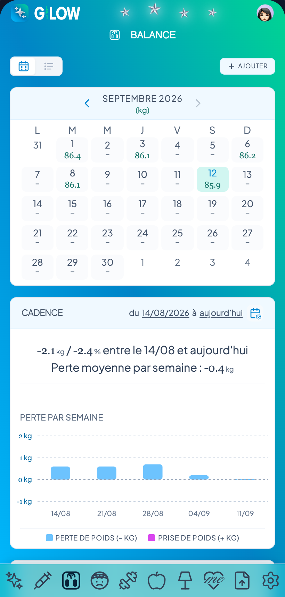
L'entête porte le logo (retour à l'accueil), le mot-symbole, la devise « ready, shine, glow! » sur l'accueil seulement, quatre étoiles qui mènent à Mon ciel, et l'avatar qui mène au profil. Hors accueil et hors Mon ciel, une bande de titre de 30 px nomme la page et porte son picto ; sur les pages de prise, de pesée et d'effets secondaires, cliquer le titre ouvre le formulaire d'ajout. Le contenu défile seul, remonte en haut à chaque changement de page, et le bouton de retour du bas dépile la page précédente.
Trois blocs s'insèrent en tête de page quand il y a lieu, et se ferment : le message de limite ou de sauvegarde illisible, la félicitation d'un badge décroché, le franchissement d'un palier d'IMC. Une page dont le module est éteint reste visitable derrière une vitre : « Activez le module {nom} pour pouvoir suivre l'évolution de {quoi}. », et la vitre mène à la page Modules ancrée sur la bonne carte.
Les règles derrière
- Titres de page, et « Injections » ou « Comprimés » selon la forme du traitement. → technique
- Pile de retour : l'onglet quitté est empilé, le bouton dépile, pile vide = inerte. → technique
- Palier d'IMC : catégorie calculée sur la pesée la plus récente, taille absente = 170 cm. → technique
- Naviguer vers repas, pas ou activité physique allume le module ; passer par la vitre ne l'allume pas. → technique
Bloc « Limite atteinte » et sauvegarde illisible
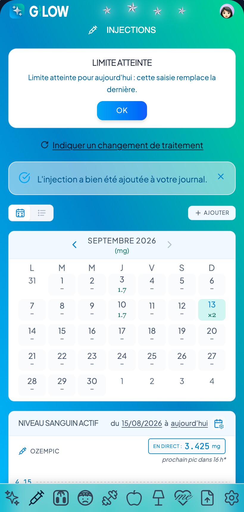
C'est le seul endroit où le produit dit qu'il n'a pas fait ce qu'on lui demandait. Quatre textes y passent : le plafond qui écrase (« Limite atteinte pour aujourd'hui : cette saisie remplace la dernière. »), la journée pleine de repas (« Cette journée est complète : 30 repas ou en-cas y sont déjà enregistrés. Choisissez une autre date pour continuer. »), le plafond du sommeil (« Limite atteinte pour cette journée : 15 saisies de sommeil au maximum. Rien n'a été enregistré. »), et la sauvegarde illisible, qui annonce la mise à l'abri sous la clé de secours et prévient que « RIEN ne sera enregistré tant que cet écran n'aura pas été rechargé ».
Les règles derrière
- Plafonds qui écrasent la dernière ligne du jour. → technique
- Plafonds qui refusent sans écrire : repas, sommeil. → technique
- Garde-fou du chargement : copie de secours et session en lecture seule. → technique
Menu du bas standard
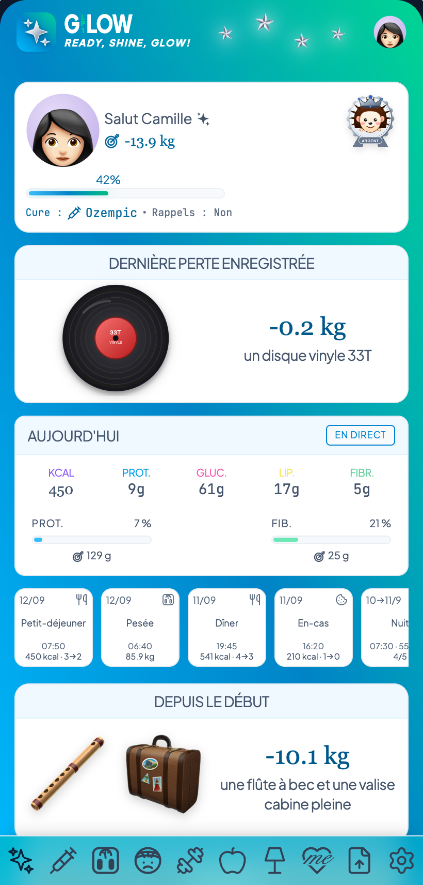
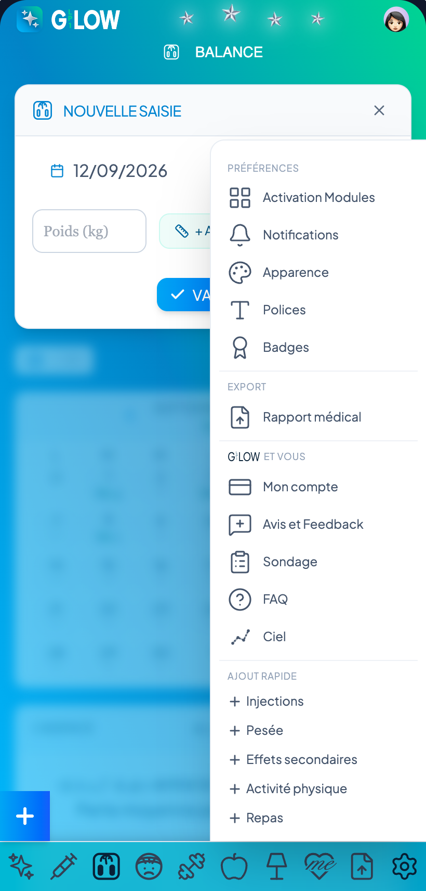
Barre de 48 px, pictos sans texte, dans un ordre fixe : accueil, traitement, pesée, effets secondaires, activité physique, repas, sommeil, temps pour soi, rapport médical — chaque entrée seulement si son module est allumé. La roue ouvre un panneau qui liste les pages de réglage et les raccourcis d'ajout ; un raccourci ouvre la page avec son formulaire déjà déplié.
Les règles derrière
- Ordre et libellés des menus, tables partagées. → technique
- Un module éteint sort du menu du bas et de l'ajout rapide. → technique
Le « + » et son petit menu
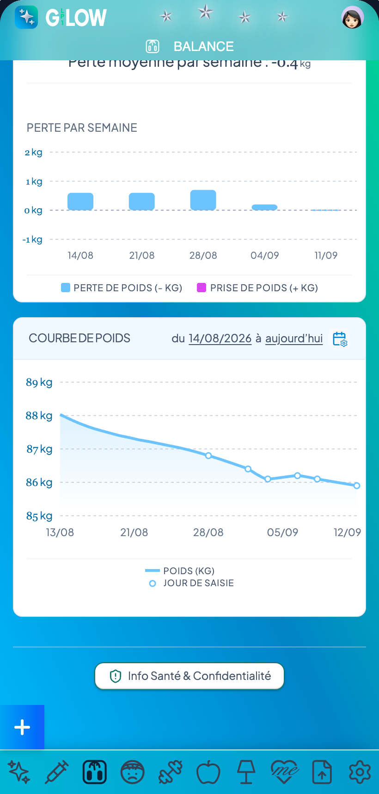
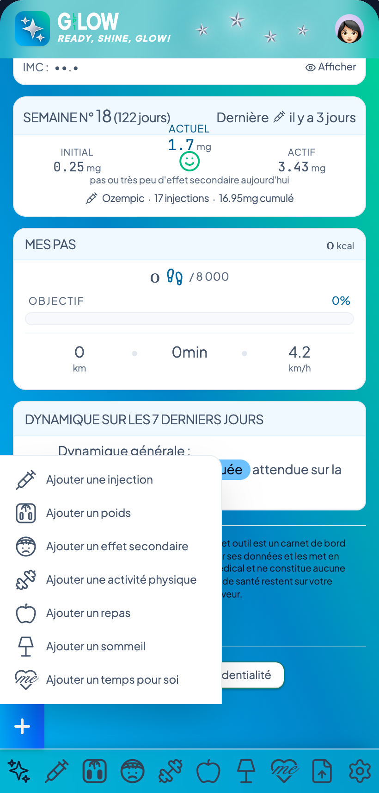
Le « + » s'arme quand le bouton Ajouter de la page sort de l'écran, et reste jusqu'au changement de page. Sur les pages, il ouvre le formulaire d'ajout ; sur l'accueil, il déplie un menu d'une entrée par page à formulaire. Sans traitement déclaré, l'entrée de prise devient « Indiquer un changement de traitement ». Il n'existe pas en menu simplifié.
Menu du bas simplifié et ses tiroirs
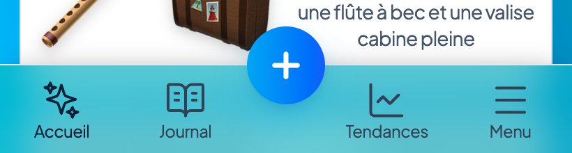
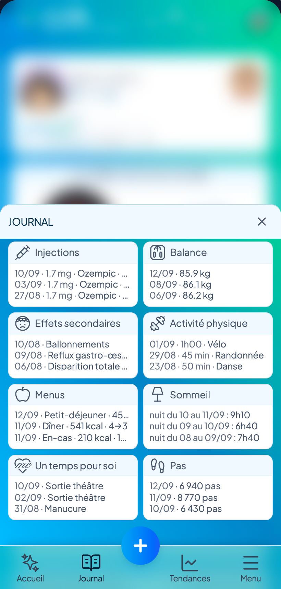
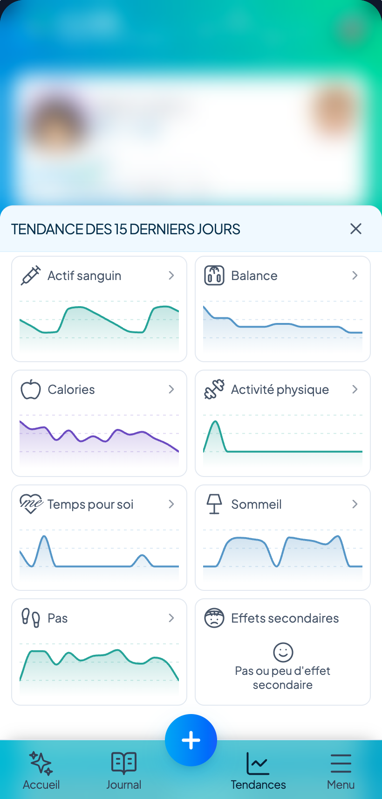
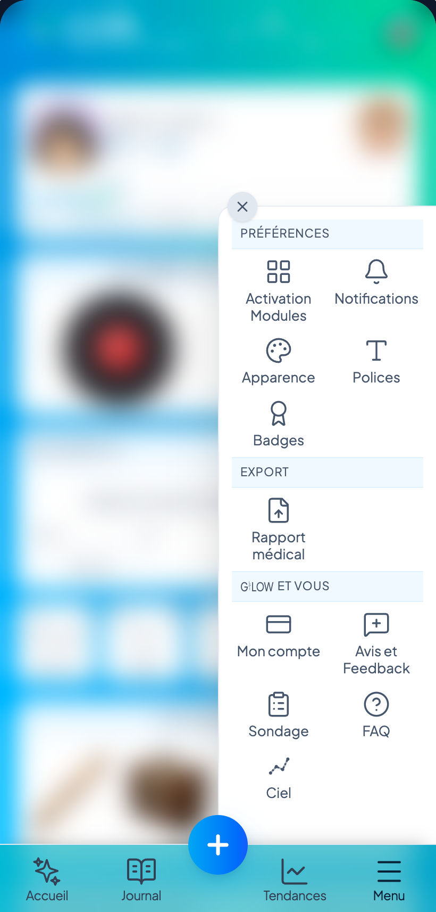
Barre de 64 px à entrées titrées. Journal, Tendances et Menu ouvrent un tiroir au lieu d'une page ; un seul tiroir à la fois, et la même entrée le referme. Le tiroir Journal montre par journal ses trois dernières entrées par date d'item, dates futures comprises, et permet d'y modifier ou supprimer une pesée sans quitter le tiroir. Le tiroir Tendance couvre quatorze jours ; sa carte des effets secondaires est un gabarit qui ne lit aucune donnée. Les courbes n'y portent ni échelle ni texte, et un module éteint y reste visible, grisé. arbitrage non validé
Les règles derrière
- Un seul tiroir ouvert ; la barre du bas ferme d'abord les couches. → technique
- Le choix du menu vit sous sa propre clé, sans rechargement. → technique
- Tiroirs : modules éteints grisés, modules masqués absents. → technique
Tiroir « Dynamique »
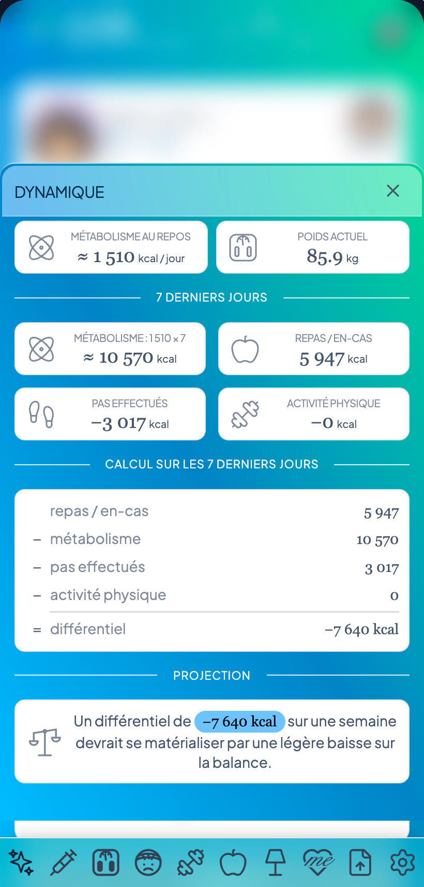
Quatre sections. Le métabolisme de base par jour et le poids actuel ; les sept derniers jours en kilocalories — dépense de base × 7, repas et en-cas, pas, activité physique, avec les écarts signés ; la soustraction posée ; la projection, convertie en poids et close par un verdict en une phrase, l'un des cinq : à peu près stable, légère baisse, légère hausse, baisse relativement marquée, hausse relativement marquée. La bascule entre « stable » et « légère » se fait à 300 g sur la semaine. Il s'ouvre depuis la section Dynamique de l'accueil, dans les deux menus.
Configuration & Plus
Une carte de profil et une liste d'entrées : Modules, Notifications, Avis & Feedbacks, Sondage, Sécurité, Social. Le « -X kg » de la carte se calcule sur la dernière ligne du tableau des pesées, pas sur la plus récente par date. Aucune entrée de menu ne mène à cette page : elle n'est atteignable qu'en revenant d'une page qui l'a désignée comme retour.
Modules
Sept suivis s'allument et s'éteignent un par un : traitement, effets secondaires, repas et en-cas, nombre de pas, activité physique, temps pour soi, sommeil. Le produit se réduit avec eux : entrées du menu du bas, raccourcis d'ajout, cases des tiroirs, cartes de tendance et tuiles de l'accueil. Sous une carte éteinte apparaît une case « Masquer dans l'application. » : un module masqué disparaît même des tiroirs. Rallumer un module efface son masquage.
Les règles derrière
- Drapeau absent : allumé pour traitement et effets secondaires, éteint pour les cinq autres. → technique
- Masqué = éteint et marqué masqué ; rallumer démasque. → technique
Notifications
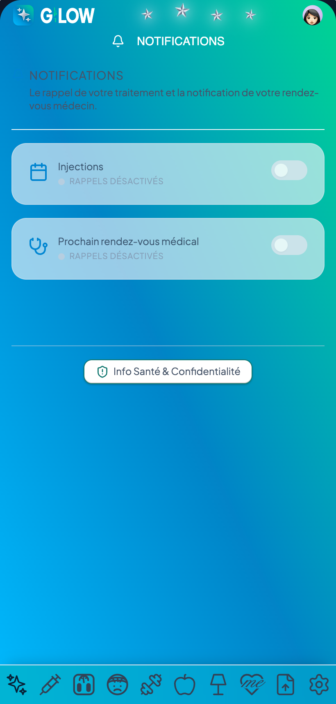
Deux rappels locaux, tous deux enregistrés dans le profil et éteints par défaut. Le rappel de prise se règle en hebdomadaire à jour fixe ou tous les N jours (1 à 30) à partir d'une date, à une heure donnée. Le rappel de rendez-vous porte le nom du praticien, la date, l'heure, et un délai d'avance (1 h, 2 h, 1 j, 2 j, 3 j, 1 semaine). Chaque changement enregistre le profil.
Mon compte
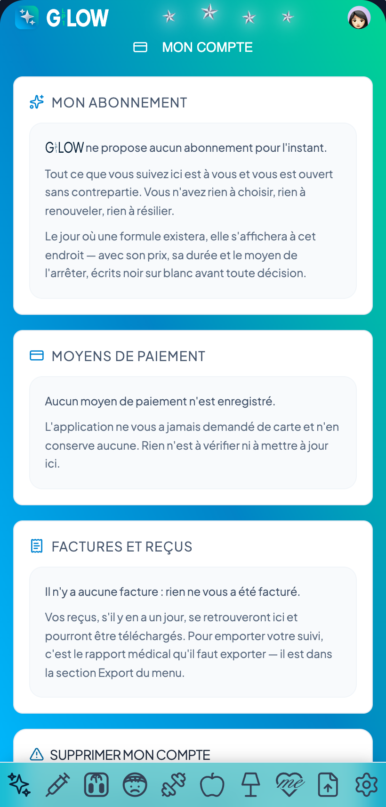
L'abonnement, le moyen de paiement et les factures sont trois sections de texte qui disent qu'il n'y a rien. Le bloc de suppression demande une confirmation, liste ce qui sera effacé, puis supprime le compte, vide tout le stockage local et recharge. Si la suppression du compte échoue, rien n'est effacé ; une session trop ancienne propose de se reconnecter.
Les règles derrière
- Compte d'abord, stockage ensuite, rechargement enfin. → technique
- Vider le stockage vide tout le stockage local, session comprise. → technique
Les trois champs communs
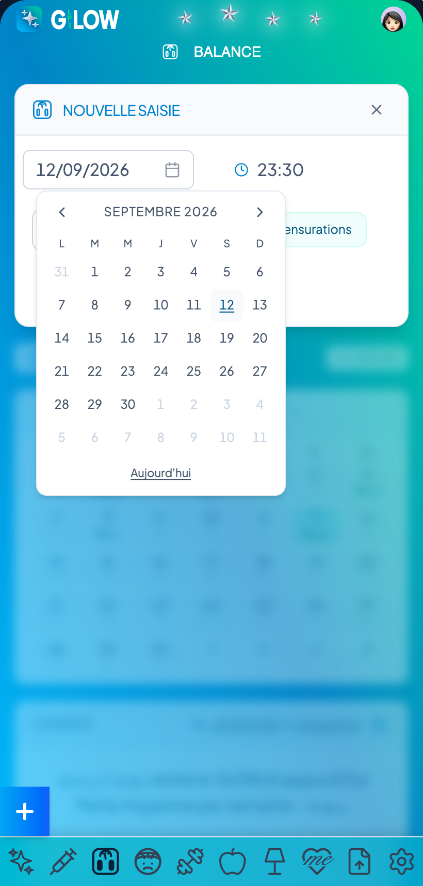
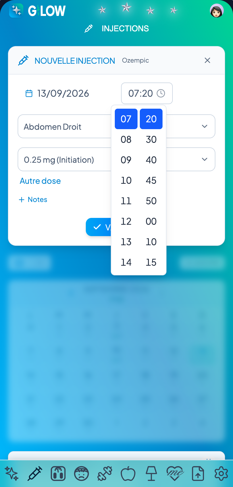
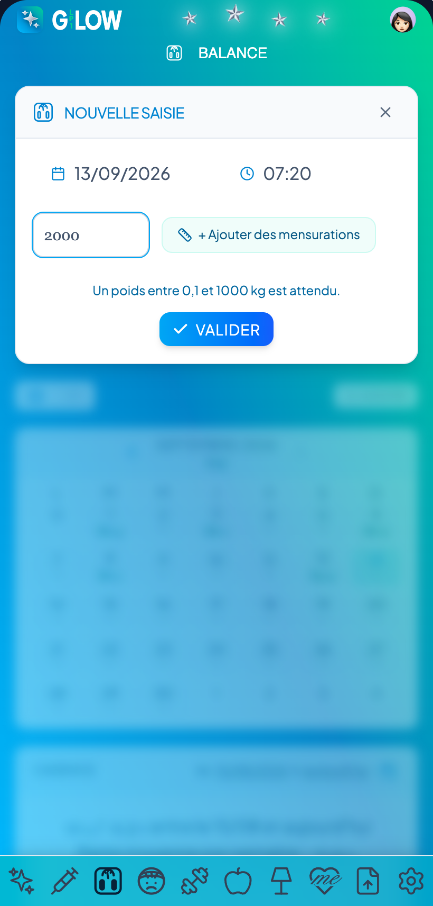
Ces trois champs portent les règles du chapitre partout où l'on saisit. La date se tape en JJ/MM/AAAA ou se choisit dans un calendrier maison, et n'est enregistrée qu'une fois complète et possible. L'heure ne propose que huit minutes — 00, 10, 15, 20, 30, 40, 45, 50 ; une minute héritée non ronde s'affiche à sa place, désactivée. Le champ numérique convertit la virgule en point à la frappe, juge à la sortie, et revient à la dernière valeur valable quand il refuse.
Les règles derrière
- Calendrier maison : 42 cases, semaine du lundi, date enregistrée seulement complète et possible. → technique
- Minutes rondes à l'enregistrement, arrondies vers le bas. → technique
- Nettoyage à la frappe, jugement à la sortie, message des bornes. → technique
- Catalogue des bornes. → technique
Refus de formulaire et sélecteur de période
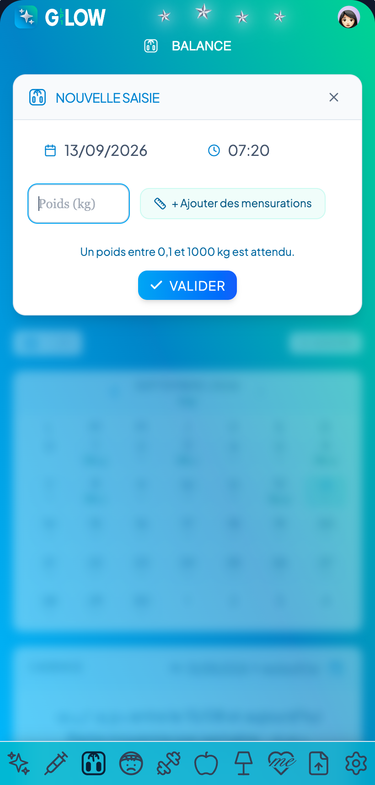
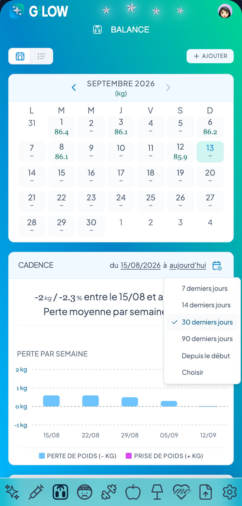
Un refus n'existe qu'après un clic sur Valider, s'affiche sur la ligne entière avant le bouton, une fois par texte, et s'efface dès qu'on retouche le champ fautif. arbitrage non validé Le sélecteur de période offre les mêmes six fenêtres partout ; la fenêtre par défaut est 30 jours, et le choix est mémorisé bloc par bloc.
Les règles derrière
- Affichage et disparition des refus. → technique
- Fenêtres de temps : coupure inclusive, défaut 30 jours, choix mémorisé par bloc. → technique
Les principes
Rien de dérivable n'est stocké. La durée d'un sommeil se déduit de ses deux instants complets ; une séance ne porte pas ses calories ; une pesée ne porte pas son IMC. Seule exception tolérée : les valeurs nutritionnelles d'un repas, recalculées depuis sa composition à chaque écriture et conservées avec lui.
On référence par identifiant. Un traitement est enregistré par son identifiant (ozempic), un aliment par le sien ; une sauvegarde qui portait encore un libellé (« Ozempic », « Wegovy (Comprimé) ») est convertie au chargement. Les effets secondaires, les sports et les activités pour soi restent enregistrés par leur nom.
Les unités sont canoniques en base. Kilogrammes, centimètres, grammes ou millilitres, milligrammes, minutes, mètres, années ; aucune étiquette d'unité n'est stockée. Le profil V1 porte un système de mesure que rien ne lit : l'affichage est toujours métrique. La V2 choisit le système avec la langue — le français amène cm · kg, l'anglais inch · pound, rechoisissable — et convertit la taille aux deux bouts pour la stocker en centimètres. V2
Les dates sont locales. Un jour s'écrit AAAA-MM-JJ, une heure HH:MM, lus sur l'horloge de l'appareil, sans fuseau ; l'arithmétique des jours se fait champ par champ. Toute heure enregistrée est ramenée à la minute ronde inférieure. La couche de dates interdit de construire une date depuis une chaîne, ce qui la lirait en UTC ; le libellé relatif (« lundi 3 août ») le fait, et trois calculs le font aussi — la dernière prise de l'accueil, les pas, l'écart de jours des injections. Un instant unique par ligne a été décidé et n'est pas écrit : date et heure restent deux champs. non implémenté
Supprimer supprime. Une ligne effacée quitte la sauvegarde, et aucune marque de suppression n'est plus écrite ; les lignes marquées par l'ancien modèle sont purgées au chargement sur sept journaux — le sommeil et le temps pour soi ne sont pas traversés. Vider les pesées épargne la pesée de départ, qui n'est pas supprimable. La suppression du compte efface tout le stockage local.
Une valeur absente se tait. La variation hebdomadaire d'un palier de dose n'est pas écrite tant qu'il n'y a pas deux pesées et sept jours d'intervalle : la fonction rend null et l'écran n'écrit rien, ni zéro ni tiret. La tuile « kg par semaine » de l'accueil ne suit pas cette règle : elle applique la même formule sans borne, sur toute la durée de la cure, et écrit « -0 » quand il n'y a rien à dire.
Aucune branche ne se ferme sur un silence. Dans l'onboarding V2, une question passée ne décide rien : seule une réponse explicite ouvre ou ferme une suite, et les branches conditionnelles reposent sur des valeurs toujours présentes — « perdre du poids » et « traitement commencé : oui » sont retenus d'avance. Deux étapes bloquent : celle qui demande quel traitement, tant que la forme et la spécialité manquent, et la dernière, si un mot de passe commencé n'atteint pas huit signes. Les réponses liées se défont ensemble : répondre « non » au traitement efface la forme et la spécialité, changer de langue repose les unités. V2
Les règles derrière les principes
- Durée de sommeil = réveil − endormissement ; zéro si le réveil précède ou égale l'endormissement, zéro aussi si une date ou une heure est illisible. → technique
- Nutrition du repas recalculée à chaque écriture. → technique
- Libellés hérités de traitement convertis en identifiants. → technique
- Points 1 à 11 du modèle de données. → technique
- Dates locales, jamais UTC. → technique
- Minutes rondes à l'enregistrement. → technique
- Formats d'affichage des dates, dont le libellé relatif. → technique
- Suppression franche. → technique
- Purge des lignes marquées, sept journaux. → technique
- Vider les pesées épargne le départ. → technique
- Lignes d'exemple retirées au chargement sur neuf journaux. → technique
- Identifiants : UUID v7 pour les repas, préfixe + horodatage ailleurs. → technique
- Nombres écrits avec un point décimal, milliers en espace insécable. → technique
Camille enregistre une prise d'Ozempic 0,25 mg le 4 mai 2026 à 00 h 37 : la ligne porte 2026-05-04, 00:30 et l'identifiant ozempic. Partie de 96 kg le 4 mai, pesée à 95,2 kg le 7 mai, elle lit sur l'accueil « ≈ -1.9 kg par semaine » — trois jours de recul ramenés à sept.
Contraintes
Les données de suivi vivent dans le stockage local de l'appareil, écrites à chaque changement ; il n'y a ni base distante ni synchronisation. Ce qui en sort : le PDF que la personne exporte ou partage ; les avis, retours et réponses au sondage, envoyés avec le contexte technique de l'envoi et aucune donnée de santé ; un code-barres interrogé sur Open Food Facts ; la connexion, qui peut passer par Google.
Deux filets protègent la sauvegarde. Une sauvegarde illisible au chargement est recopiée telle quelle sous une clé de secours — une seule fois, pour ne pas écraser une copie antérieure — et la session passe en lecture seule : plus rien n'est enregistré jusqu'au rechargement. Par ailleurs des copies horodatées peuvent être faites sous __secours-AAAA-MM-JJ-HHMMSS, listées dans un index trié du plus récent au plus ancien ; une copie n'est déclarée bonne qu'après avoir été relue à l'identique, une restauration met d'abord l'état courant à l'abri, et une écriture protégée n'a pas lieu si la mise à l'abri a échoué.
Un plafond quotidien ne refuse pas toujours. Les repas (30 par date) et le sommeil (15 par date de réveil) refusent sans rien écrire. Le traitement (2 par jour), les effets secondaires, l'activité physique et le temps pour soi (15) écrasent : la nouvelle saisie est fusionnée dans la dernière ligne du jour, qui garde son identifiant, et la valeur précédente est perdue. Les pas n'ont pas de plafond.
Les bornes n'écartent que l'absurde : âge de 1 à 130 ans, taille de 50 à 300 cm, poids de 0,1 à 1 000 kg. Les autres bornes de saisie — mensurations, distances, nutriments, poids d'objet — sont des propositions. arbitrage non validé La V2 reprend les bornes de l'âge et de la taille, remplace l'âge par l'année de naissance, et borne les roues de poids à 999 kg ou 2 000 lb, deux plafonds ronds qui ne sont pas la conversion l'un de l'autre. V2 Une saisie impossible se refuse : un réveil antérieur ou égal à l'endormissement, une date incomplète.
Les règles derrière les contraintes
- Couche de stockage : erreurs avalées, écriture silencieuse, effacement en bloc. → technique
- Garde-fou du chargement. → technique
- Copies de secours horodatées, index, vérification par relecture, restauration. → technique
- Ordre des conversions au chargement. → technique
- Plafonds qui écrasent. → technique
- Plafonds qui refusent. → technique
- Contexte d'un envoi : aucune donnée de santé. → technique
- Bornes des champs numériques. → technique
- Calendrier : la date n'est enregistrée qu'une fois complète et possible. → technique
- Suppression du compte : compte d'abord, puis stockage, puis rechargement. → technique
Camille, 168 cm, 96 kg : tout passe. Un poids tapé « 1200 » est refusé avec « Un poids entre 0,1 et 1000 kg est attendu. » ; dans la V2 la roue s'arrête à 999. Si elle saisit une troisième prise le 4 mai, la deuxième est écrasée et l'écran le lui dit.
Non-buts
Pas de synchronisation, de compte partagé ni d'accès soignant. Pas d'objet connecté : les pas se saisissent à la main ; le modèle porte un drapeau « simulée » qu'aucune saisie ne pose et que seul le calendrier des pas lit. Pas de conseil nutritionnel, sportif ou posologique généré : les paliers de dose proposés sont ceux du catalogue, et les objectifs quotidiens par défaut (1 400 kcal, poids × 1,5 g de protéines, 25 g de fibres) se modifient. Pas de réseau social : le seul lien nommé « Social » ouvre, dans un nouvel onglet, un gabarit statique de carte de publication. Le suivi hydrique et les objectifs de poids à paliers ont été supprimés ; leurs traces sont écartées au chargement, et la V2 ne les réintroduit pas, ni les saisies rapides comme modèle. V2
La V2
Capture absente : onboarding-v2/quel-traitement
Capture absente : onboarding-v2/profil
Repartie de zéro le 6 septembre 2026 dans son propre dépôt. Rien n'est copié de la V1 : ce qui en vient est repris pièce par pièce, à la demande explicite de l'utilisatrice, et strictement ce dont on a besoin, réécrit sans les dépendances d'origine — le cadre du téléphone, les noms et formes des traitements, le dessin de l'avatar. Deux contraintes décident de la forme du code : le passage à venir à React Native, qui cantonne les API du navigateur à trois endroits (le point d'entrée, la page HTML et un fichier de plateforme unique), et le multilingue, qui interdit tout texte dans un écran.
À ce jour la V2 ne porte que l'onboarding : langue et unités, objectif, poids actuel, poids visé, traitement commencé, lequel, avatar, puis l'écran de profil qui ouvre un compte. Rien n'est enregistré — un rechargement perd tout — et aucune page ne suit le dernier écran. La langue est recueillie sans être branchée : l'application parle la langue détectée.
2. Le compte et les données ↑ sommaire
Le compte ouvre l'application ; il ne synchronise rien. Tout le suivi vit sur l'appareil, dans un stockage local derrière une couche unique, et n'en sort que par un geste explicite. Ce chapitre couvre la connexion, l'avertissement médical, le stockage et ses garde-fous, la page Mon compte et la suppression du compte.
Page de connexion
Capture absente : profil-compte/page-de-connexion
Le mot-symbole, la phrase « Accès privé — connectez-vous pour continuer », un champ e-mail, un champ mot de passe, le bouton « Se connecter », un séparateur « ou », le bouton « Continuer avec Google » (fenêtre surgissante), puis « Les comptes sont créés par l'administratrice — pas d'inscription libre. » Il n'y a ni inscription ni mot de passe oublié. La page s'affiche quand Firebase est configuré et qu'aucune session n'est ouverte ; une fois connectée, elle ne revient qu'après une déconnexion explicite. Un champ vide donne « Renseignez l’e-mail et le mot de passe. » sans appel réseau ; pendant l'appel, les deux boutons sont désactivés ; chaque échec est traduit en français.
Les règles derrière les chiffres
- E-mail trimé puis vide, ou mot de passe vide : message local, aucun appel. → technique
- E-mail inconnu, mot de passe faux ou identifiant invalide donnent le même message « E-mail ou mot de passe incorrect. » ; adresse mal formée donne « L'adresse e-mail n'est pas valide. » ; compte désactivé, trop de tentatives, réseau coupé, fenêtre Google refermée ou bloquée, domaine non autorisé ont chacun leur phrase ; défaut « La connexion a échoué. Réessayez. ». → technique
- Le verrou est actif dès que la configuration Firebase porte une clé ; celle du dépôt est remplie. → technique
Camille se trompe d'une lettre dans son mot de passe : « E-mail ou mot de passe incorrect. » Le message ne dit pas lequel des deux est faux. Si elle écrit « camille@ », le message change : « L'adresse e-mail n'est pas valide. »
Écran d'attente de session
Capture absente : profil-compte/ecran-d-attente-de-session
Au lancement, le temps que le SDK restaure la session mémorisée, le même dégradé à trois teintes que la page de connexion (ciel, sarcelle, émeraude) porte un point animé seul (aria-label « Chargement ») ; ensuite l'application, ou la page de connexion. La session est gardée sans limite de durée sur l'appareil. Sans configuration Firebase, ni attente ni connexion : l'application s'ouvre sans compte.
Les règles derrière les chiffres
- Trois états : chargement, déconnectée, connectée (identifiant, e-mail, nom d'affichage) ; la session persiste jusqu'à déconnexion explicite. → technique
Camille s'est connectée en mai 2026 ; chaque lancement depuis passe par ce point puis l'accueil, sans redemander le mot de passe.
Avertissement médical
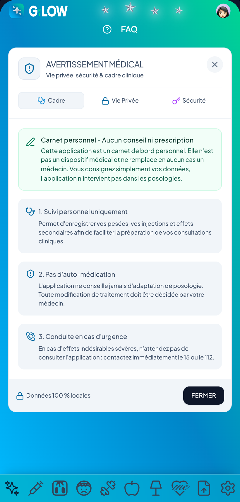
Au premier lancement, cette page occupe seule l'écran sous le titre « Information Médicale », sans croix ; le sous-titre « Vie privée, sécurité & cadre clinique » reste sous le titre dans les deux états. Trois onglets. Cadre, l'onglet par défaut, porte quatre blocs : le bandeau « Carnet personnel - Aucun conseil ni prescription », puis « 1. Suivi personnel uniquement » (enregistrer pesées, injections et effets secondaires pour préparer les consultations), « 2. Pas d'auto-médication », « 3. Conduite en cas d'urgence » (15 ou 112). Vie Privée : stockage local, seuls tiers Google pour la connexion et Open Food Facts pour un code-barres, droit d'effacement. Sécurité : données sur l'appareil, HTTPS, minimisation des données. Le pied porte la case « J'atteste avoir lu que cette application est un outil de suivi personnel, qu'elle ne remplace pas un médecin et qu'elle ne fournit aucun conseil médical. » et le bouton « J'accepte et j'accède », désactivé tant que la case n'est pas cochée.
Capture absente : profil-compte/avertissement-medical
Une fois l'acceptation faite, la page est titrée « Avertissement Médical », porte une croix de fermeture et échange le pied d'acceptation contre la mention « Données 100 % locales » et le bouton « Fermer ». Deux portes seulement : le bouton « Info Santé & Confidentialité » au pied de chaque page, et l'entrée « Sécurité, Avertissements & Confidentialité » de « Configuration & Plus ». L'accueil n'imprime que le texte d'avertissement, sans bouton. La page remplace le contenu de la page en cours. L'acceptation est une clé du stockage local : la suppression du compte l'efface et la page revient au lancement suivant.
Les règles derrière les chiffres
- Tant que la clé hasAcceptedMedicalDisclaimer_v1 ne vaut pas 'true', la page est seule à l'écran ; accepter écrit 'true'. → technique
- Premier lancement : pas de croix, bouton éteint tant que la case est décochée, onglet initial Cadre. → technique
- Le second état ajoute la croix et le pied « Données 100 % locales » / « Fermer ». → technique
Données sur l'appareil
Le profil et les journaux tiennent dans un seul JSON sous la clé glp1_app_companion_data, réécrit à chaque changement. Au lancement, il est lu puis converti : traces des fonctions supprimées écartées, profil complété sur le profil d'usine, migrations enchaînées. Sans sauvegarde, l'application part du profil d'usine et d'une pesée de départ semée à 95 kg, datée de la veille à 08:00. Le reste de ce que l'application retient vit sous d'autres clés, déclarées dans une vingtaine de fichiers : l'acceptation médicale (hasAcceptedMedicalDisclaimer_v1), le menu choisi (glow_menu_mixte), le palier d'IMC déjà notifié (glp1_notified_bmi_tier_index), les sports, effets et moments pour soi suivis (glp1_active_sports, glp1_active_side_effects, glp1_active_me_time), les périodes retenues, les compteurs d'objets insolites, les retours et le sondage, plus des clés héritées qui ne sont plus écrites et ne subsistent que pour être effacées (glp1_meals_cleared, glp1_last_celebrated_weight). Lectures et écritures passent par une couche unique (shared/platform/storage.ts) : stockage indisponible ou plein, la lecture rend null et l'écriture échoue en silence. Aucune base distante ne reçoit le suivi. V2 La V2 n'enregistre rien : un rechargement perd les réponses.
Les règles derrière les chiffres
- Une clé pour le profil et les journaux, un JSON, écrit à chaque changement d'état. → technique
- Chaîne de conversion au chargement, idempotente. → technique
- Profil d'usine et pesée de départ semée à 95 kg. → technique
- JSON ou chaîne nue, erreurs avalées, clearAll efface tout le stockage plutôt que clé par clé. → technique
Bloc « Limite atteinte » / sauvegarde illisible
Si le JSON ne se lit pas, la chaîne brute est recopiée telle quelle sous glp1_app_companion_data__secours, seulement si cette clé est vide ; l'application repart du profil d'usine, de journaux vides et de la même pesée de départ semée à 95 kg qu'à la première installation, et n'écrit plus rien de la session. Le bloc en tête de page dit : « La sauvegarde n’a pas pu être lue. Elle a été mise à l’abri sous la clé « glp1_app_companion_data__secours » et RIEN ne sera enregistré tant que cet écran n’aura pas été rechargé : vos données ne sont pas effacées. » Le bloc garde le titre « Limite atteinte », celui des refus de plafond qu'il sert aussi ; OK le ferme. Aucun écran ne propose de restaurer la copie.
Les règles derrière les chiffres
- Lecture ratée : copie sous la clé de secours une seule fois, plus aucune écriture, message à l'écran. → technique
La sauvegarde de Camille est tronquée par un onglet fermé au mauvais moment. Au lancement suivant, elle ne voit pas un écran vide mais une pesée de départ à 95 kg, datée de la veille : un chiffre qui ressemble à ses 96 kg de mai 2026 sans en être un. Ses vraies données sont intactes sous la clé de secours, et rien de ce qu'elle saisirait dans cette session ne serait enregistré.
Lien « Mes préférences de compte »
Au bas de Mon profil, une carte blanche centrée avec ce seul lien souligné ; il ouvre la page Mon compte. C'est la seconde porte, l'autre étant l'entrée Mon compte de « GLP1LOW et vous ».
Mon compte

Trois sections sans action : « Mon abonnement » (« ne propose aucun abonnement pour l'instant »), « Moyens de paiement » (« Aucun moyen de paiement n'est enregistré. »), « Factures et reçus » (« Il n'y a aucune facture : rien ne vous a été facturé. », avec renvoi vers l'export du rapport médical). Le bloc « Supprimer mon compte » ferme la page.
Bloc « Supprimer mon compte »
Trois états, sans fenêtre. Au repos : « Vous pouvez fermer votre compte et effacer tout ce que l'application a enregistré sur cet appareil. » et le bouton « Supprimer mon compte et mes données ». Mise en garde, ouverte sous le bouton : « Prenez un instant avant de confirmer. », trois puces (le compte n'existera plus ; tout le suivi effacé — balance, menus, injections ou comprimés, effets secondaires, activité physique, sommeil, un temps pour soi, pas, favoris, recettes, aliments, badges, profil et réglages ; rien gardé en réserve), le conseil de refermer l'application pour une pause ou d'exporter le rapport médical avant, puis « Supprimer définitivement », « Annuler » et une croix. Travail : le bouton affiche « Suppression… », tout est désactivé. L'ordre : le compte Firebase d'abord si la configuration existe, puis tout le stockage local effacé, session comprise, puis rechargement. Sur un poste configuré, ce rechargement rouvre la page de connexion ; sans configuration Firebase, il n'y a pas de compte à supprimer et l'application se rouvre sur le profil d'usine et l'avertissement médical. En cas d'échec, message, retour à la mise en garde, rien n'est effacé ; si la session est trop ancienne, un bouton « Se reconnecter » déconnecte et recharge sans toucher aux données. C'est la seule déconnexion de l'application.
Les règles derrière les chiffres
- Compte d'abord, données ensuite ; un échec du compte laisse tout en place. → technique
- Sans session : 'auth/no-current-user' ; session ancienne : 'auth/requires-recent-login' ; la déconnexion suit la suppression. → technique
- Chaque message d'échec dit que rien n'a été effacé. → technique
- clearAll vide tout le stockage local, session Firebase et acceptation médicale comprises. → technique
Camille, connectée depuis mai 2026, appuie sur « Supprimer définitivement » : Firebase refuse, « Par sécurité, cette suppression demande une connexion récente. Reconnectez-vous, puis recommencez — rien n’a été effacé. » Elle appuie sur « Se reconnecter », ressaisit e-mail et mot de passe, recommence : le compte disparaît, puis ses 96 kg de départ, ses injections d'Ozempic et ses badges, sans copie ; l'application se rouvre sur la page de connexion.
Dans la V2 — « Dernière étape »
Capture absente : onboarding-v2/derniere-etape
V2 Pas de Firebase, pas de page de connexion. Le dernier écran de l'onboarding, titré « Dernière étape », recueille cinq réponses : l'année de naissance et la taille côte à côte, sur deux roues (défauts 1980 et 165 cm ; l'année va de 1896 à 2025 en 2026, la taille de 50 à 300 cm ou de 20 à 118 pouces selon le système d'unités), puis le prénom, l'adresse e-mail et le mot de passe. Sous le mot de passe, « Huit caractères au moins. » : seule contrainte, écrite avant toute faute, mise à l'accent dès qu'on a commencé à taper sans l'atteindre. Un mot de passe vide laisse passer ; de un à sept signes éteint le bouton. Le bouton porte le mot-symbole, se nomme « Entre dans la galaxie GLP1LOW » pour les lecteurs d'écran et ne fait qu'avancer d'un rang, borné à la dernière étape : rien n'est envoyé, rien n'est enregistré, aucune session n'est ouverte. Pas d'avertissement médical, pas de suppression de compte.
3. L'arrivée : l'onboarding ↑ sommaire
L'onboarding est le parcours du premier lancement de la V2 : sept à neuf écrans selon les réponses, qui règlent l'application (thème, langue, unités) puis recueillent l'objectif, les poids, le traitement, l'avatar et l'identité. Rien n'y est obligatoire, hormis nommer son traitement quand on dit l'avoir commencé et tenir huit signes quand on commence un mot de passe. Les deux questionnaires d'accueil relevés dans la V1 ne sont pas décrits ici : ils s'ouvrent depuis l'espace d'administration, hors périmètre.
Le parcours et ses boutons V2
Trois zones : l'entête (logo, mot-symbole et, à partir de « Avez-vous commencé votre traitement GLP-1 ? », les billes du décompte), la zone du milieu, seule à défiler, et la rangée des boutons au bas de l'écran. L'écran de l'avatar en a une quatrième : le portrait, figé entre l'entête et la zone qui défile. « Précédent » est absent du premier écran. « Suivant » s'éteint, sans disparaître, quand l'étape refuse de laisser passer ; sur le dernier écran il ne porte que le mot-symbole. Le bouton « retour » de la barre du téléphone recule d'une étape et s'éteint à moitié sur la première. Chaque écran s'ouvre en haut de sa zone.
Les règles derrière les chiffres
- Étapes visibles selon les réponses : neuf étapes dans un ordre fixe, dont deux conditionnelles — « Quel poids visez-vous ? » ne se montre qu'à qui veut perdre du poids, « Quel traitement » qu'à qui a répondu Oui ; la liste se recalcule à chaque réponse, et le parcours compte sept, huit ou neuf écrans. → technique
- Ce qui bloque Suivant : « Quel traitement » tant que la forme ou la spécialité manque ; « Dernière étape » si un mot de passe commencé fait moins de huit signes ; nulle part ailleurs, une question sans réponse se saute. → technique
- Décompte des écrans : une bille par étape visible, allumée pour chaque étape passée ; l'écran courant compte parmi ceux qui restent, la dernière bille ne s'allume donc jamais dans le parcours. arbitrage non validé → technique
- Le décompte se dit sans s'écrire : aucun texte à l'écran, mais un nom parlé, « Avancement du questionnaire », avec le rang et le total pour qui écoute la page. → technique
- Zones figées et zone qui défile : l'entête, le portrait de l'avatar et la rangée des boutons ne bougent pas, la zone du milieu défile seule — sauf sur « Langue et unités », dont le contenu est posé hors de cette zone et ne peut donc pas défiler. non implémenté → technique
- Langue détectée : l'application parle la première langue du navigateur qu'elle sait servir (français, anglais), sinon le français ; le choix fait à l'écran n'est pas lu. → technique
- Rien n'est enregistré : les réponses vivent en mémoire, un rechargement les perd, le bouton du dernier écran ne mène nulle part, et rien ne retient que le parcours a été fait — chaque lancement le rejoue. non implémenté → technique
Camille répond « Perdre du poids » puis « Oui » : elle voit les neuf écrans. Qui répond « Stabiliser mon poids » puis « Non » n'en voit que sept, et les billes le disent.
Thème V2
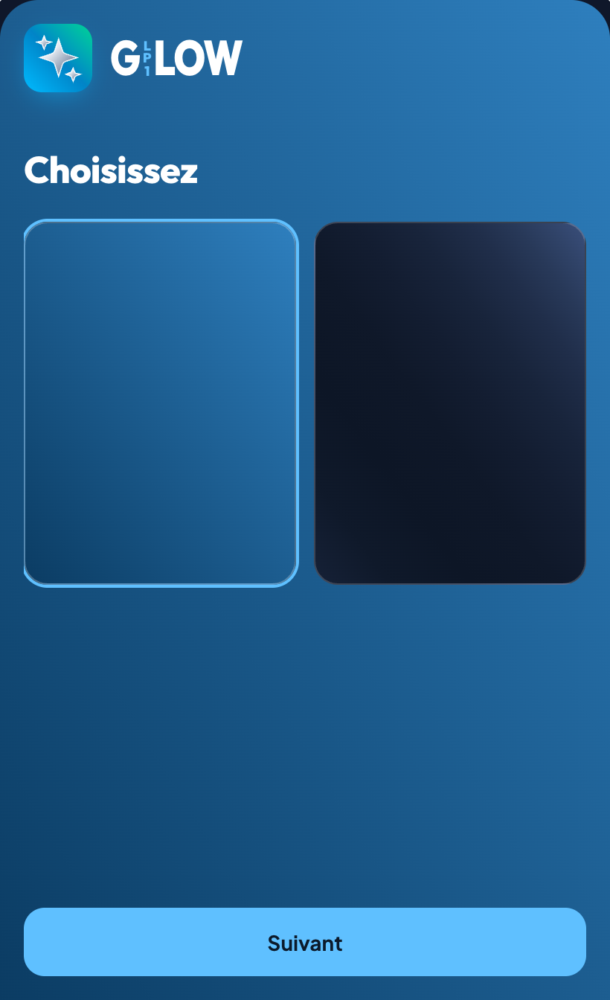
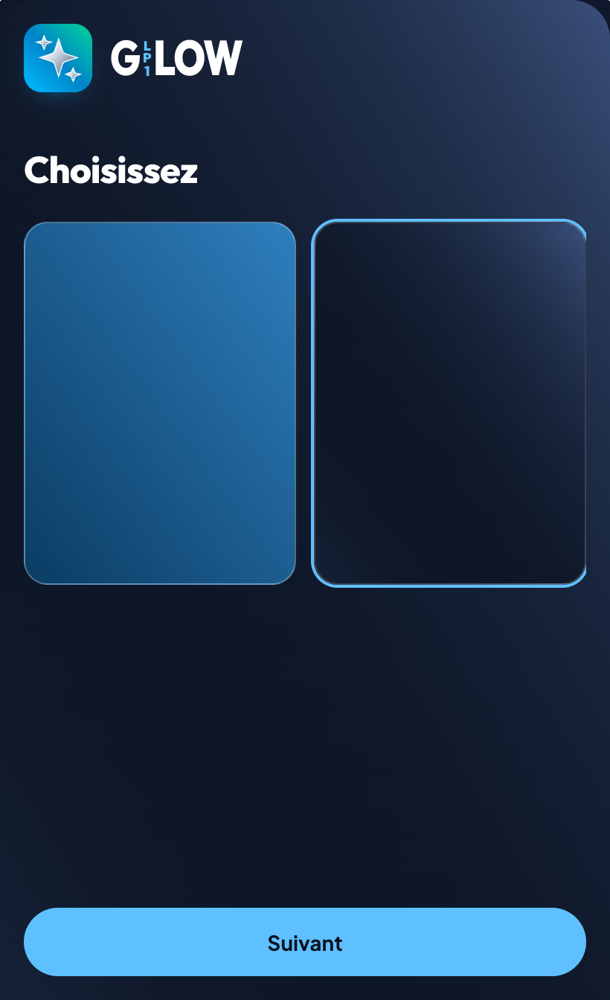
Un cadre par thème, sans son nom écrit (il est dit aux lecteurs d'écran). Chaque cadre garde le fond et l'encre du thème qu'il propose, quel que soit celui de la page : les deux se comparent d'un coup d'œil. Toucher un cadre change aussitôt l'entête, le titre et le bouton ; le cadre retenu ne prend qu'un liseré, du même bleu dans les deux thèmes. Deux thèmes : Ciel (jour) et Ciel foncé (nuit). Pas de « Précédent » ; « Suivant » occupe la rangée.
Les règles derrière les chiffres
- Thème appliqué à la page : le thème retenu pose sa classe sur la page de l'onboarding ; le contour du téléphone et sa barre du bas ne le suivent pas. → technique
Langue et unités V2
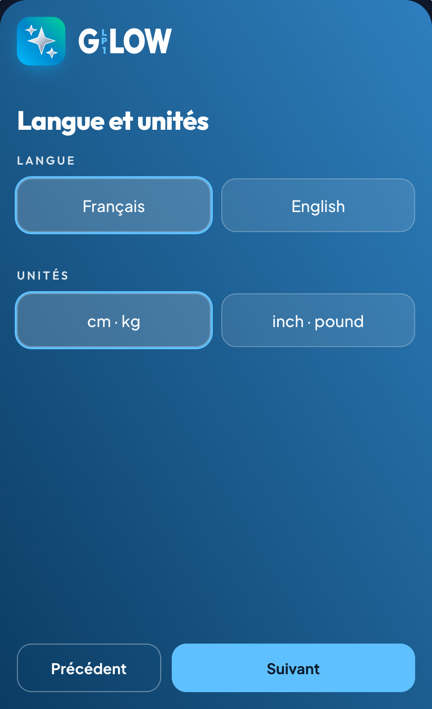
Titre « Langue et unités », deux questions, chacune sur une ligne. Français et cm · kg sont retenus d'avance. Toucher « English » fait passer les unités à inch · pound sous les yeux ; toucher « Français » les ramène à cm · kg ; les unités se rechoisissent ensuite librement. Les unités sont branchées : le poids et la taille se saisissent dans le système choisi. La langue, non.
Les règles derrière les chiffres
- La langue repose les unités : français → cm · kg, anglais → inch · pound, en un seul geste ; le dernier geste l'emporte sur des unités réglées à la main juste avant. → technique
- La langue est une maquette : le dictionnaire anglais est complet — écrans, unités, couleurs, coiffures, séparateur décimal « . » —, mais rien ne lit le choix de cet écran ; il manque ce seul fil. non implémenté → technique
Objectif V2
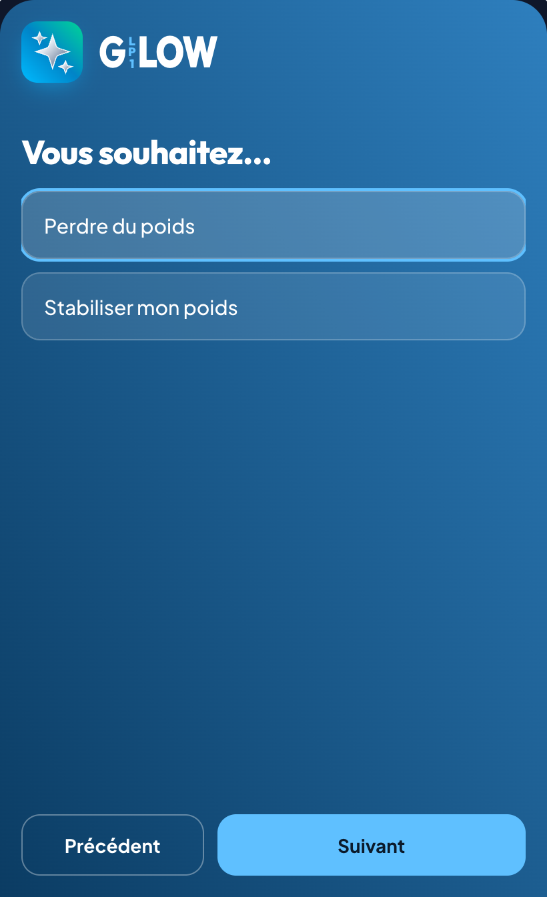
Deux réponses, la première retenue d'avance. « Stabiliser mon poids » retire l'écran du poids visé du parcours ; « Perdre du poids » le remet.
Poids actuel V2
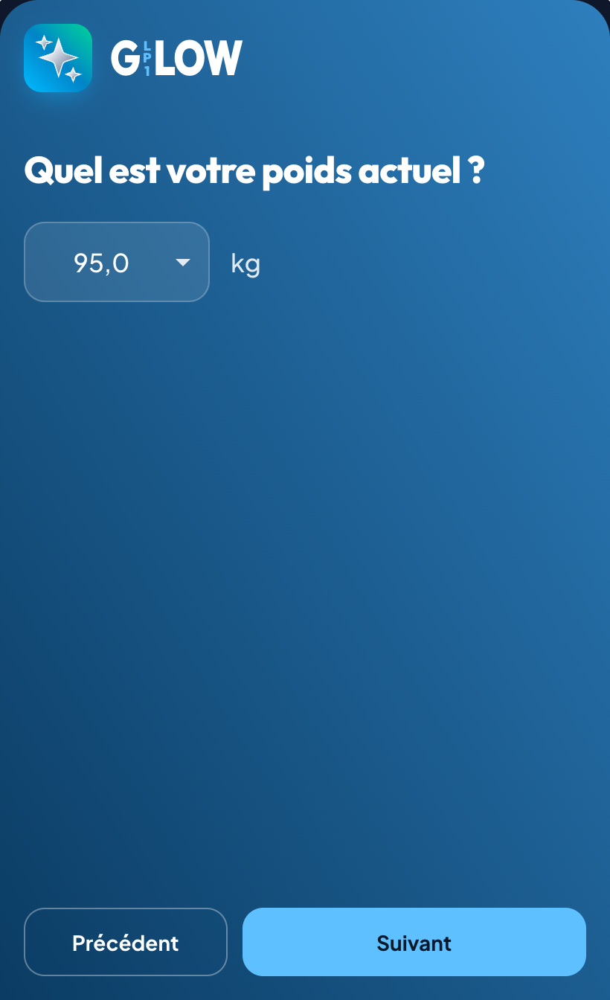
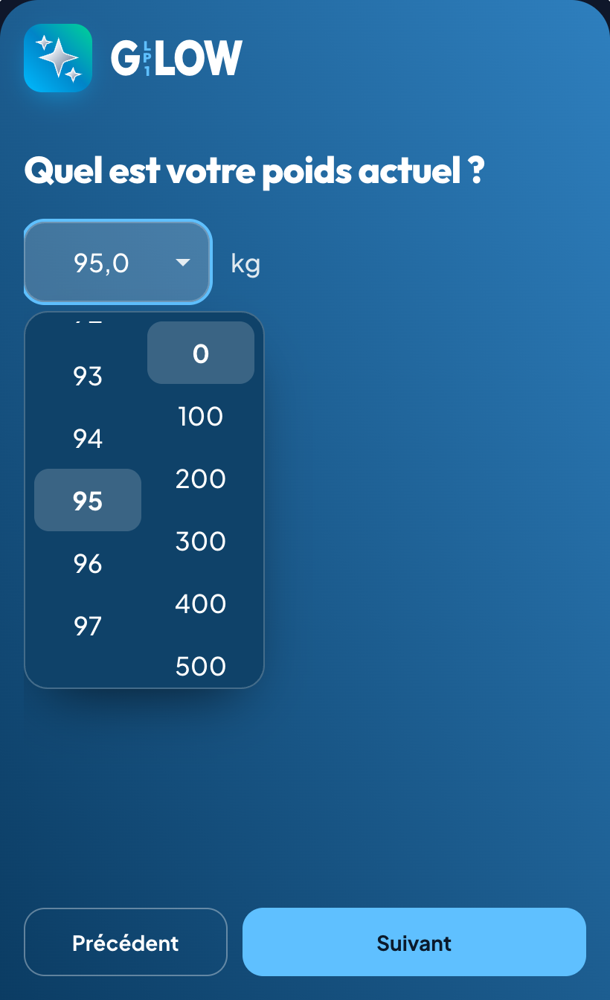
Un champ affiche les kilos, le séparateur de la langue (virgule en français), puis la centaine de grammes (0, 100 … 900) ; l'unité est écrite hors du champ. 95,0 est proposé d'avance. Toucher le champ ouvre deux roues ensemble, le cran retenu placé au milieu de chacune : les kilos de 1 à 999 (les livres de 1 à 2 000, avec une seconde roue de 0 à 9), puis la centaine de grammes. Le kilo ne referme pas le panneau ; la centaine le referme et vaut confirmation ; un clic à côté ou Échap referment aussi. Aucun message de refus : les roues n'offrent que des valeurs possibles.
Les règles derrière les chiffres
- Plafonds du poids par unité : 999 kg et 2 000 lb, deux plafonds ronds et non la conversion l'un de l'autre ; ils bornent la roue. → technique
- Poids gardé en texte avec un point : « 96.0 » quelle que soit la langue, la virgule n'étant qu'affichée ; le second chiffre est un dixième, « 96.3 » vaut 96 kg et 300 g. → technique
- Stockage métrique du poids : un poids choisi en livres devrait être ramené en kilogrammes ; aujourd'hui il est gardé tel quel, et la valeur ne bouge pas si l'on revient changer d'unités. non implémenté → technique
- Les roues se nomment à qui écoute : la roue des entiers reprend la question, la seconde s'appelle « Centaines de grammes » en kilos et « Dixièmes de livre » en livres. → technique
- Ouverture et fermeture des roues : un geste ouvre les colonnes, la dernière colonne referme, le clic dehors et Échap referment ; commun au poids, à l'année de naissance et à la taille. → technique
Camille pèse 96 kg : roue de gauche sur 96, roue de droite sur 0. Le champ affiche 96,0 kg ; la réponse gardée est « 96.0 ».
Poids visé V2
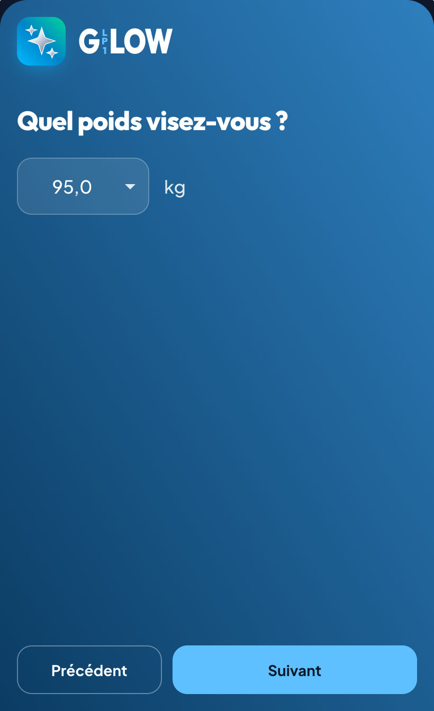
Le même écran que le poids actuel, seule la question change. Il ne se montre qu'à qui veut perdre du poids.
Les règles derrière les chiffres
- Poids actuel et poids visé jamais liés : deux réponses distinctes, mêmes bornes, même défaut de 95,0, aucune mémorisation de l'une vers l'autre et aucune borne tirée de l'autre. → technique
Camille vise 78 kg : elle ouvre le champ sur 95,0 et pose 78 puis 0.
Traitement commencé ? V2
Une question, Oui · Non sur une ligne, Oui retenu d'avance : il y a toujours une réponse, l'écran ne bloque rien. C'est ici que les billes apparaissent. Répondre Non efface la forme et la spécialité déjà choisies et retire l'écran suivant du parcours ; l'avatar vient alors tout de suite après.
Les règles derrière les chiffres
- Les réponses du traitement se défont ensemble : Non efface la forme et la spécialité ; changer de forme efface la spécialité. → technique
Quel traitement V2
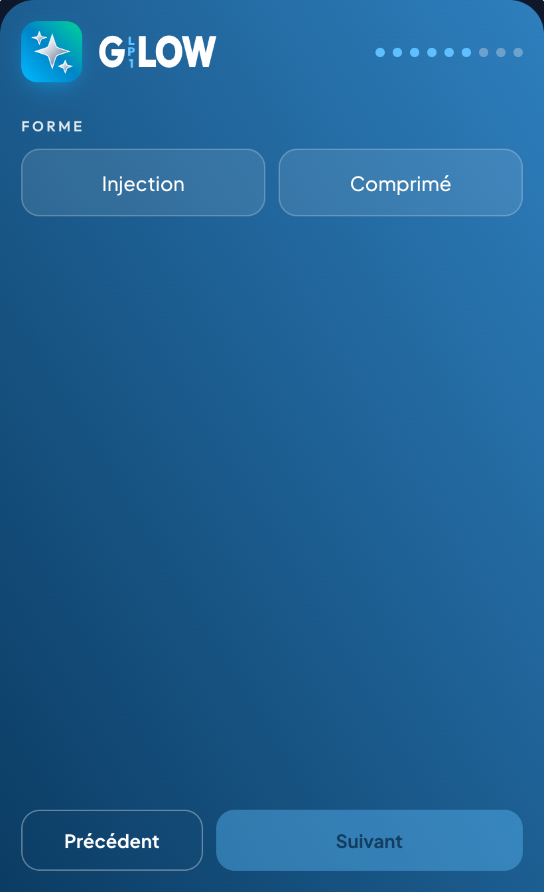
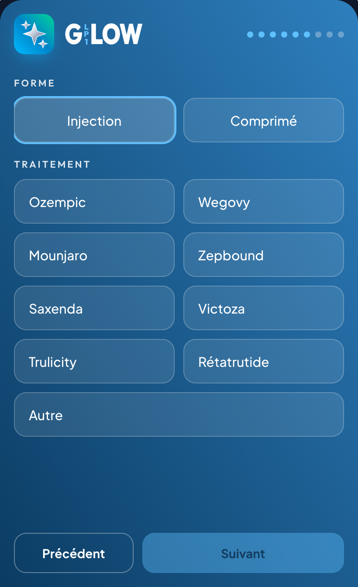
Seul écran sans titre : les deux intitulés disent la question. La forme n'a pas de réponse d'avance ; la liste des spécialités n'apparaît qu'une fois la forme choisie. Injection : Ozempic, Wegovy, Mounjaro, Zepbound, Saxenda, Victoza, Trulicity, Rétatrutide, Autre. Comprimé : Rybelsus, Wegovy, Foundayo, Autre. « Suivant » reste éteint tant que la forme et la spécialité ne sont pas toutes deux choisies. Ni dose, ni date de début, ni posologie ne sont demandées.
Les règles derrière les chiffres
- Catalogue des traitements : treize spécialités, neuf injections et quatre comprimés, chaque forme finissant par Autre ; les noms sont des marques, non traduits, et la réponse gardée est l'identifiant (« ozempic », « wegovy-oral »). → technique
- Une réponse orpheline prend toute la largeur : la liste se range à deux par ligne, et « Autre » s'étend sur les deux colonnes quand le compte est impair — le cas des neuf injectables, pas des quatre comprimés. → technique
Camille est sous Ozempic : elle touche Injection, la grille des neuf s'ouvre, elle touche Ozempic ; la réponse gardée est « ozempic », et sa dose de 0,25 mg n'est demandée nulle part.
Avatar V2
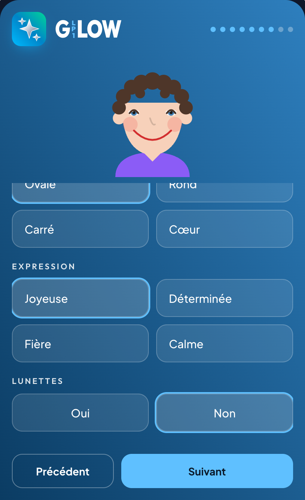
Un avatar dessiné, composé et non choisi ; ni photo ni tirage au hasard. Le portrait change à chaque touche et reste en place pendant que défilent huit réglages : Genre (Femme · Homme · Neutre), Peau (six pastilles), Coiffure (Courts, Longs, Bouclés, Frange, En brosse, Sans cheveux), Cheveux (six pastilles), Yeux (cinq pastilles), Visage (Ovale, Rond, Carré, Cœur), Expression (Joyeuse, Déterminée, Fière, Calme), Lunettes (Oui · Non). Le genre se voit sur la couleur du vêtement et sur la coiffure de départ ; il n'est plus demandé ailleurs. Les pastilles n'ont pas de nom écrit ; il est dit aux lecteurs d'écran (Blond, Noisette…).
Les règles derrière les chiffres
- Le genre amène sa coiffure : Homme → Courts, Femme → Longs, Neutre → Bouclés, posée en même temps que le genre ; la coiffure se rechoisit juste en dessous. → technique
- Avatar de départ : Neutre, visage ovale, peau beige, yeux bleus, cheveux bouclés bruns, sans lunettes, expression joyeuse. → technique
- Les couleurs sont des données : les codes des teintes choisies (peau, yeux, cheveux) font partie de la réponse ; les couleurs du dessin (pupille, bouche, vêtement) n'en font pas partie. → technique
Camille touche Femme : le vêtement passe au rose et la coiffure aux cheveux longs d'un même geste. Elle prend ensuite des cheveux châtains, des yeux noisette et l'expression Déterminée.
Dernière étape V2
Cinq champs. Année de naissance (roue, 1980 d'avance) et Taille (roue, 165 cm d'avance, en pouces si le système est impérial) côte à côte, chacune d'une seule roue qui se referme au cran choisi. Prénom, Adresse e-mail et Mot de passe en champs texte ; prénom et adresse ne sont pas vérifiés. Sous le mot de passe, « Huit caractères au moins. » est écrit d'emblée et passe en italique, à l'accent du thème, dès qu'un mot de passe de un à sept signes est tapé. Un mot de passe vide laisse passer. Le bouton porte le mot-symbole (nom lu : « Entre dans la galaxie GLP1LOW ») et ne mène nulle part.
Les règles derrière les chiffres
- Bornes de l'année de naissance et de la taille : année de (année en cours − 130) à (année en cours − 1), soit 1896 à 2025 en 2026 ; taille de 50 à 300 cm ou de 20 à 118 in. → technique
- Taille stockée en centimètres : la roue en pouces affiche cm ÷ 2,54 arrondi et rend pouces × 2,54 arrondi. → technique
- Règle du mot de passe : huit signes au moins, seule contrainte ; vide ne bloque pas ; dite avant la faute, sous le champ. → technique
Camille tourne la roue de 1980 à 1978 et celle de la taille de 165 à 168 ; en « inch · pound », la même roue aurait montré 66 et gardé 168 cm. Elle tape « Camille », son adresse et un mot de passe de neuf signes : la règle reste discrète et le bouton reste allumé.
4. La Maison ↑ sommaire
La Maison est l'onglet « Accueil » de la version Mixte : une page qui résume la cure de la personne (poids, traitement, repas du jour, pas, ressenti) et ouvre chaque journal d'un clic. Trois templates d'accueil existent — standard, sections et blocs — et la personne peut en changer (réglage hors de ce chapitre) ; sans choix enregistré, c'est le template standard, décrit en premier ici. V2 Le dépôt de la V2 ne contient que l'onboarding : elle n'a pas d'accueil, et sa règle absolue — aucune fenêtre par-dessus l'écran, aucun voile sombre, sortie par bouton et jamais par minuterie — n'a encore été appliquée à aucun des écrans décrits ici.
Home standard (page)

Les blocs s'empilent sur toute la largeur, dans cet ordre : Salut ; « dernière perte enregistrée » ; « Aujourd'hui » (si le drapeau des repas est allumé) ; le défilé des journaux ; « Depuis le début » ; le carré poids ; le bloc palier d'IMC (s'il est ouvert) ; le carré traitement (si le module traitement est allumé) ; « Mes pas » (sauf si le drapeau des pas vaut faux) ; la section Dynamique ; le pied de page médical. Quand la dernière perte et la perte totale sont égales au dixième près, seule « Depuis le début » paraît, à la place de la première.
Une tuile de perte porte son libellé en bandeau, la perte en kg, un dessin d'objets du quotidien et la phrase d'équivalence insolite (chapitre Métabolisme et badges). Elle ne réagit pas au clic. Elle n'est montrée que si la perte est strictement positive, qu'une pesée existe au-delà du départ et que l'IMC calculé vaut 19 ou plus — un profil sans taille a un IMC de 0 et perd donc ses deux tuiles. Des boutons « + » de coin (pesée, injection, repas) existent mais sont désactivés par défaut.
Les règles derrière les chiffres
- Poids de départ, poids actuel (pesée la plus récente par date et heure), perte totale et dernière perte. → technique
- Conditions d'affichage des deux tuiles de perte et fusion quand elles sont égales. → technique
- Signe d'une variation : « +x » au-dessus de zéro, « -x » sinon (zéro s'écrit « -0 »). → technique
- Une décimale au plus, sans « .0 », point décimal et milliers séparés d'une espace insécable. → technique V2 La V2 pose le séparateur décimal de la langue, donc la virgule en français.
- Template retenu : la valeur enregistrée si elle est connue, sinon standard ; les valeurs anciennes « carre » et « fines-lignes » se relisent comme « sections ». → technique
- Un module dont le drapeau est absent vaut allumé pour le traitement et les effets, éteint pour les repas, les pas, l'activité physique, le sommeil et le temps pour soi. Le carré traitement suit cette règle ; le bloc « Aujourd'hui » de la home standard lit le drapeau des repas nu (absent = éteint) et le bloc « Mes pas » lit le drapeau des pas en « différent de faux » (absent = allumé). → technique
Camille pèse 88.4 kg le 12 septembre après 88.9 kg le 5 : la tuile « dernière perte enregistrée » affiche « -0.5 kg », la tuile « Depuis le début » « -7.6 kg » (96 − 88.4). Si sa seule pesée après le départ était celle du 12 septembre, les deux pertes vaudraient 7.6 kg et seule « Depuis le début » serait montrée.
Bloc « Salut »
Tête des trois homes. À gauche l'avatar ; à sa droite « Salut {prénom} » et le picto trois étoiles, puis l'objectif : ce qui reste à perdre (poids actuel − poids cible), « 0 kg » une fois la cible atteinte. En dessous, sur toute la largeur, la barre d'avancement vers la cible avec son pourcentage posé à l'abscisse où la barre s'arrête, puis la ligne « Cure : {traitement} • Rappels : {jour, ou « nj », ou Non} » — absente si le module traitement est éteint, rappels masqués sans traitement. Au bord droit, les badges débloqués : un seul badge est montré en grand, deux par ligne dès le deuxième ; tant qu'aucun n'est gagné, un badge « ? » argent, masquable depuis la page des badges.
Gestes : l'avatar, la salutation et tout le fond du bloc mènent au profil ; l'objectif s'édite sur place (champ « Cible : », enregistré si le nombre est positif) ; « Cure : » ouvre la liste des traitements et enregistre le choix, cliquer à côté referme sans changer ; les badges mènent à la page des badges. Sur la home sections, la barre et son pourcentage ouvrent en outre le suivi du poids en couche vitrée.
Les règles derrière les chiffres
- Reste à perdre = actuel − cible, au dixième ; « 0 kg » si négatif ou nul. → technique
- Avancement = (départ − actuel) / (départ − cible), borné 0–100 ; cible égale ou supérieure au départ : 100 si le poids actuel est descendu à la cible, 0 sinon. → technique
- Ligne « Rappels » : jour de semaine, ou intervalle « nj » en rappel personnalisé, ou « Non ». → technique
- Badges montrés : catégorie activée et palier atteint ; badge « ? » argent sinon. Aucun plafond de nombre n'est posé. → technique
Camille : 96 kg de départ, 88.4 kg aujourd'hui, cible 75 kg. Reste à perdre 13.4 kg ; avancement (96 − 88.4) / (96 − 75) = 36 %. Rappel hebdomadaire le lundi : « Rappels : Lun ».
Bloc « Aujourd'hui »
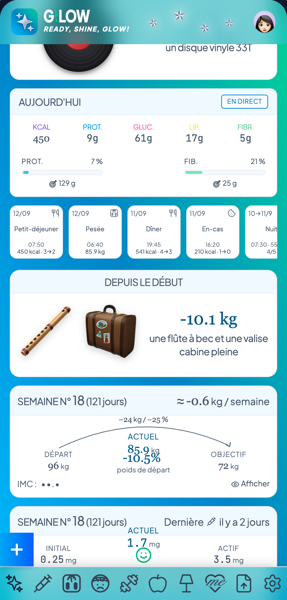
Le bilan nutritionnel du jour, sur la home standard. Bandeau « Aujourd'hui », pastille « En direct » dès qu'un repas est enregistré, puis cinq colonnes arrondies à l'entier : Kcal, Prot., Gluc., Lip., Fibr. Journée sans repas : « Enregistrez votre 1er repas aujourd'hui » à la place de la rangée. En pied, deux barres d'objectif, protéines et fibres, avec leur pourcentage et la cible en grammes. Tout le bloc mène à la page repas si la journée porte un repas, au formulaire d'ajout sinon ; le « + » de coin, quand il est activé, ouvre directement le formulaire.
Les règles derrière les chiffres
- Totaux du jour = somme des repas datés du jour. → technique
- Objectifs protéines et fibres du jour. → technique
- Pourcentage de barre borné à 100 ici, à la différence des barres de la home sections qui montrent le pourcentage réel. → technique
Carré poids (Évolution)
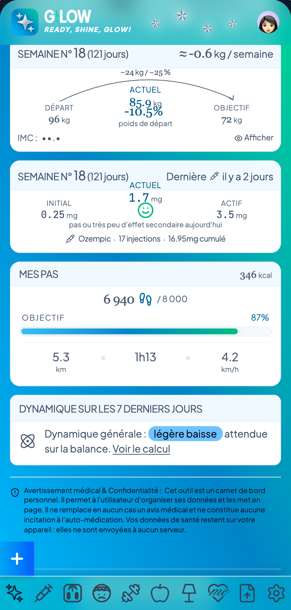
Le bandeau compte la semaine de cure depuis la pesée de départ et, dès sept jours de recul, la perte moyenne par semaine. Un arc fléché relie Départ à Objectif, étiqueté de l'écart à parcourir en kg et en % du départ. Trois poids : Départ, Actuel (mis en avant), Objectif. La ligne IMC est masquée (« ••.• ») et se révèle par l'œil « Afficher » : « {IMC} {catégorie} ». Le pied donne la variation en % du poids de départ. Départ, Actuel et pied mènent à la page pesée ; Objectif au profil ; l'IMC révélé, quand la catégorie actuelle est meilleure que celle du départ, ouvre le bloc palier d'IMC.
Les règles derrière les chiffres
- Semaine n° = partie entière de (jours écoulés ÷ 7) + 1, jours comptés de minuit à minuit local depuis la pesée de départ ; rien tant que cette pesée manque ou qu'elle est datée du futur. → technique
- « 1 jour » minimum, jamais « 0 jour ». → technique
- kg / semaine = (actuel − départ) × 7 / jours, affiché dès 7 jours. → technique
- Arc : objectif − départ, et ce même écart en % du départ ; rien sans départ ou sans objectif. → technique
- Variation en % du départ, « + » devant si positive. → technique
- IMC = kg / m², au dixième ; 0 sans taille. → technique
- Catégories : insuffisance pondérale, corpulence normale, surpoids, obésité I, II, III. → technique
- Palier franchi = index du palier actuel inférieur à celui du départ. → technique
Camille, partie le 4 mai 2026 : 131 jours le 12 septembre, semaine n° 19 (131 ÷ 7 = 18, plus 1) ; (88.4 − 96) × 7 / 131 = −0.4 kg / semaine ; arc « −21 kg / −21.9 % » ; −7.9 % du poids de départ ; IMC 88.4 / 1.68² = 31.3, « Obésité I » — même palier qu'au départ (34), donc pas de bloc palier.
Bloc palier d'IMC franchi
Capture absente : accueil/bloc-palier-d-imc-franchi
Bloc pleine largeur ouvert sous le carré poids par le clic sur l'IMC révélé, seulement quand un palier a été franchi vers le bas. Il porte la pastille « NOUVEAU PALIER IMC ATTEINT ! », le titre « Nouveau Cap Franchi ! », l'accroche « Votre perte de poids vous fait franchir une grande étape de santé ! », puis le palier de départ barré, une flèche, le palier actuel, une fiche à deux chiffres (« Nouveau Poids », « Nouvel IMC ») et la phrase « Vous avez franchi le cap vers {catégorie} le JJ/MM/AAAA ». Sous 18,5 d'IMC, la pastille devient « VIGILANCE IMC • SOUS LA NORMALE », l'accroche « Votre IMC est passé en dessous du seuil de corpulence normale. », et la phrase de franchissement cède la place à « Votre IMC est inférieur à la normale (insuffisance pondérale). Veuillez en parler à votre médecin. » Une croix referme ; « Voir mon évolution et mes graphiques » mène à la page pesée.
Les règles derrière les chiffres
- Date du franchissement : première pesée, par date croissante, dont le palier est au plus celui d'aujourd'hui. → technique
Carré traitement
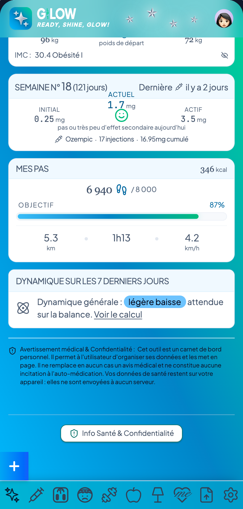
Présent si le module traitement est allumé. Le bandeau compte la semaine depuis la première prise du traitement en cours et l'ancienneté de la dernière (« aujourd'hui » ou « il y a n jour(s) »). Trois doses : Initial (première prise de la série), Actuel (dernière), Actif (concentration encore active de cette seule série). Le pied récapitule « {traitement} · n injection(s)|comprimé(s) · x mg cumulé ». Un smiley et sa phrase disent le ressenti du jour d'après les effets secondaires déclarés, si ce module est allumé. Tant qu'aucune prise n'est enregistrée : « Semaine n° 0 — traitement non commencé » et l'invite « Enregistrez votre première injection pour suivre l'évolution de votre traitement. » (« première prise de comprimé » pour un oral), tout le carré ouvrant le formulaire d'ajout. Sinon, bandeau, Initial, Actuel et pied mènent au journal des prises ; Actif à la courbe du niveau sanguin ; le smiley aux effets secondaires.
Les règles derrière les chiffres
- Série en cours : en remontant l'historique, les prises du traitement courant jusqu'au premier changement de traitement. → technique
- Ce carré n'écarte pas le futur : une prise datée de demain compte dans le nombre de prises et dans les mg cumulés, et devient l'« Actuel ». Seule la home sections écarte les prises qui n'ont pas eu lieu. → technique → technique
- Jours depuis la dernière prise, par différence de dates. → technique
- Concentration active : les 60 derniers jours choisissent les molécules encore en jeu — tout l'historique si aucune prise n'y tombe —, puis le cumul pharmacocinétique de chaque molécule retenue porte sur tout son historique ; 0 mg si deux molécules restent actives. → technique
- Humeur du jour : somme des sévérités (0 serein ; > 8 ou une sévérité ≥ 4 difficile ; modéré entre les deux). → technique
- Phrases sous le smiley. → technique
Camille s'injecte chaque lundi depuis le 4 mai : 4 × 0.25 mg, 4 × 0.5 mg puis 11 × 1 mg — 19 injections, 14 mg cumulés, dernière le 7 septembre, « il y a 5 jours ». Une nausée de sévérité 2 déclarée aujourd'hui : smiley neutre, « quelques effets secondaires aujourd'hui ».
Bloc « Mes pas »

Carte des pas du jour : le total sur l'objectif (8 000 pas), le pourcentage atteint et sa barre, la distance, la durée de marche estimée et la vitesse de référence, les kcal dépensées en bandeau. Toute la carte mène à la page des pas. Absente si le drapeau des pas vaut faux.
Les règles derrière les chiffres
- % = min(100, arrondi(pas ÷ 8 000 × 100)) ; km = pas × 0,00076 ; durée = arrondi(pas ÷ 95 pas par minute), écrite « 45min » sous l'heure et « 1h06 » au-delà ; kcal selon le poids du jour. Les 4,2 km/h sont affichés à titre indicatif et n'entrent dans aucun calcul. → technique
Camille, 6 240 pas aujourd'hui : 78 % de l'objectif, 4.7 km, 1h06 de marche estimée, la vitesse affichée restant 4.2 km/h.
Défilé des dernières entrées
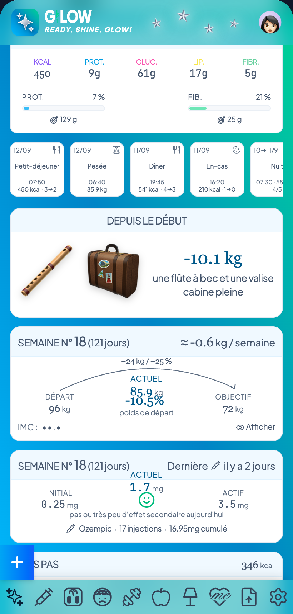
Bande horizontale entre « Aujourd'hui » et « Depuis le début » : un carré par entrée des sept derniers jours, tous journaux mélangés sauf les pas, du plus récent au plus ancien. Chaque carré porte la date (une nuit s'écrit « 25→26/8 »), le picto de la nature (repas, en-cas, injection, comprimé, pesée, temps pour soi, sommeil, sport, effet), un libellé, l'heure et la durée, et la valeur : kcal, kg, mg, effort, sévérité ou qualité « n/5 », faim « avant→après ». Un carré mène au journal d'origine. Rien n'est affiché sans entrée.
Les règles derrière les chiffres
- Fenêtre : d'aujourd'hui − 6 jours à aujourd'hui, futur écarté, 40 entrées au plus. → technique
- Nature d'une entrée (en-cas, comprimé ou injection, escaliers en étages, nuit datée du réveil). → technique
- Formats de la ligne de valeur et de durée. → technique
Section « Dynamique » — le verdict

Dernier bloc de la home standard arbitrage non validé. Il annonce, en une phrase, ce que la balance devrait faire au vu des sept derniers jours : la tendance (« à peu près stable », « légère hausse », « légère baisse », « hausse relativement marquée », « baisse relativement marquée ») porte une pastille. Le bloc entier ouvre le tiroir Dynamique. Tant que l'application n'a pas sept jours d'usage, le bandeau reste « Dynamique » arbitrage non validé, le contenu est verrouillé et porte le message « Utilisez GLP1low pendant 7 jours pour débloquer la dynamique générale de votre métabolisme. »
Les règles derrière les chiffres
- Bilan : repas ingérés − (métabolisme au repos × 7 j + pas + activité physique), saisies futures écartées ; 8 000 kcal = 1 kg. → technique
- Verdict : |écart| ≤ 300 g stable ; < 1 000 g légère hausse/baisse ; sinon marquée. → technique arbitrage non validé (bande 700 g – 1 kg lue comme « légère »)
- Les cinq phrases de la home et du tiroir. → technique
- Déblocage à 7 jours révolus depuis la première ouverture — ou depuis la donnée la plus ancienne des journaux pour une cure déjà en cours. → technique
- Le bloc n'ouvre le calcul que dévoilé. → technique
- Place : dernier bloc en standard ; deuxième section (après En direct) dévoilée et dernière verrouillée en sections. → technique
Camille sur sept jours : 9 800 kcal ingérées, métabolisme ≈ 10 731 kcal, pas −1 450 kcal, activité physique −600 kcal → différentiel −2 981 kcal, soit −373 g : « légère baisse attendue sur la balance ».
Section verrouillée
Enveloppe employée par la section Dynamique tant qu'elle n'est pas débloquée. Le contenu réel reste en place, dépoli et illisible, hors du clic et hors de la tabulation ; un message centré sur une petite carte se pose par-dessus, dans la même case. Sans message, le contenu est seulement dépoli — c'est le cas d'une seconde zone verrouillée sur le même écran, pour ne pas dire deux fois la même chose.
Fête « Dynamique débloquée »
À la première ouverture de la home où la section est dévoilée, une couche vitrée avec confettis titre « Dynamique débloquée » et dit : « Sept jours de suivi, et la dynamique générale de votre métabolisme se dévoile : elle vous attend en haut de l'accueil. » Croix, clic à côté ou geste de la barre la ferment ; la marque est posée à la fermeture, et elle ne revient plus. Une personne dont les journaux ont déjà sept jours la voit dès la première ouverture.
Tiroir « Dynamique »
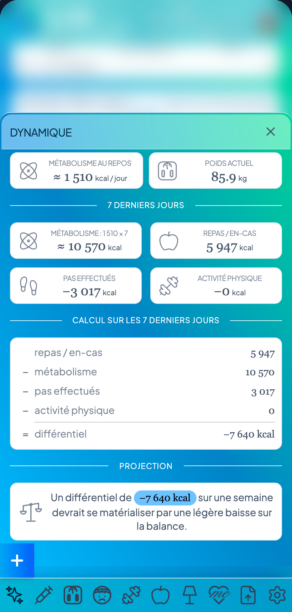
Ouvert depuis le bloc du verdict (ou une tuile de sens, home sections), dans les deux menus. Il arrive d'en haut et s'arrime au menu du bas. Quatre sections : le métabolisme au repos par jour et le poids actuel ; « 7 derniers jours » — métabolisme × 7, repas / en-cas, pas effectués (−), activité physique (−) ; « Calcul sur les 7 derniers jours » — la soustraction posée jusqu'au différentiel ; « Projection » — une balance à plateaux inclinée selon le verdict et la phrase « Un différentiel de [−2 981 kcal] sur une semaine devrait se matérialiser par une légère baisse sur la balance. » Un clic à côté le referme.
Les règles derrière les chiffres
- Métabolisme par jour = total 7 j ÷ 7 arrondi ; inclinaison 0°, ±9°, ±17°. → technique
Pied de page médical
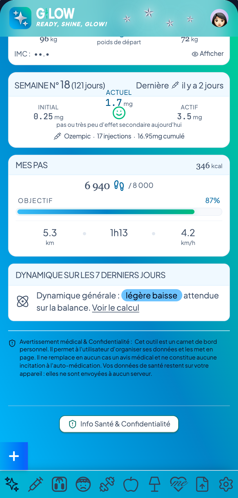
Dernier élément des homes, sans action : « Avertissement médical & Confidentialité : Cet outil est un carnet de bord personnel. Il permet à l'utilisateur d'organiser ses données et les met en page. Il ne remplace en aucun cas un avis médical et ne constitue aucune incitation à l'auto-médication. Vos données de santé restent sur votre appareil : elles ne sont envoyées à aucun serveur. »
Templates sections et blocs
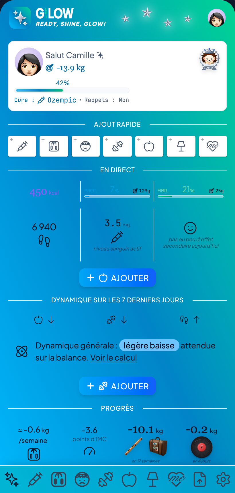
Le template sections pose les mêmes données en carrés nus titrés par un séparateur hors bloc ; blocs est le même template habillé en cartes. Ordre : Salut ; « Ajout rapide » (absente en menu simplifié) ; « En direct » ; « Dynamique » si dévoilée arbitrage non validé ; « Progrès » ou « Évolution » ; « Côte à côte » ; « Dynamique » si verrouillée ; pied de page médical. Les sections ouvrent des couches vitrées plutôt que des pages.
Section « Ajout rapide »
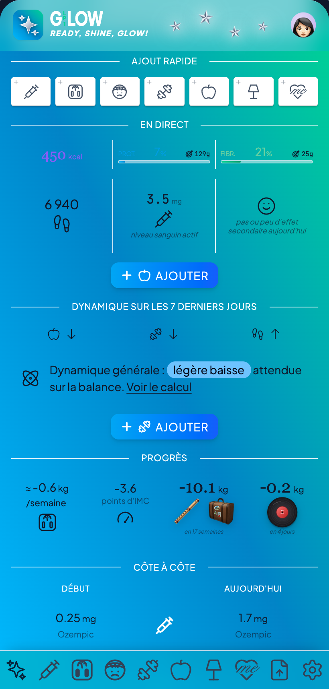
Un bouton par page à formulaire d'ajout dont le module est allumé, dans l'ordre du menu du bas — injection, pesée, effet secondaire, activité physique, repas, sommeil, temps pour soi ; le picto du traitement est une seringue ou un comprimé selon la forme. Chaque bouton ouvre la page avec son formulaire déplié. Quand la rangée sort de l'écran, un « + » flottant prend le relais en bas de page.
Les règles derrière les chiffres
- Boutons = onglets du menu du bas ∩ pages à formulaire, dans l'ordre du menu. → technique
Section « En direct »
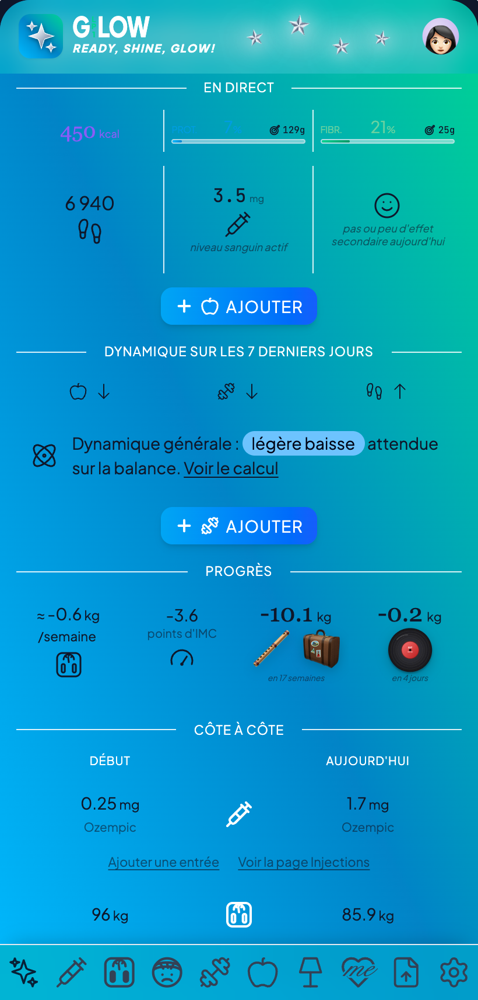
La bande kcal du jour (si le module repas est allumé) écrit toujours les calories, « 0 kcal » compris ; à côté, deux barres Prot. et Fibr. avec leur pourcentage réel, l'objectif en grammes et un trophée à 100 % — journée sans repas, l'invitation « Enregistrer votre 1er repas aujourd'hui » prend la place des deux barres. Puis les tuiles pas, niveau sanguin actif (« voir détail » si plusieurs molécules sont actives) et effets secondaires (visage et phrase). Sans module des pas, la bande kcal devient un pavé à droite des deux tuiles ; repas et pas coupés à la fois, les tuiles prennent toute la largeur arbitrage non validé. La bande kcal ouvre la couche « Menus » (formulaire à zéro, récapitulatif sinon), le bouton « + Ajouter » directement en saisie ; la tuile pas la couche « Pas » ; le niveau sanguin la couche « Niveau sanguin actif » (ou la page injection sans prise) ; les effets la matrice des effets (ou la page sans déclaration).
Les règles derrière les chiffres
- Objectifs du jour : 1 400 kcal, protéines = poids × 1,5 g, fibres 25 g, sauf valeurs du profil. → technique
- Totaux du jour = somme des repas datés du jour. → technique
- Pourcentage réel (peut dépasser 100) et largeur de barre bornée. → technique
- Garde-fous : couche sanguine seulement avec un traitement et une prise ; matrice seulement avec une déclaration. → technique
- Entrée dans la couche Menus selon la tuile cliquée. → technique
Camille à 88.4 kg : objectif protéines 133 g ; 82 g mangés → « 62% », « [cible] 133g ». 12 g de fibres sur 25 → 48 %.
Section « Dynamique » — les trois sens
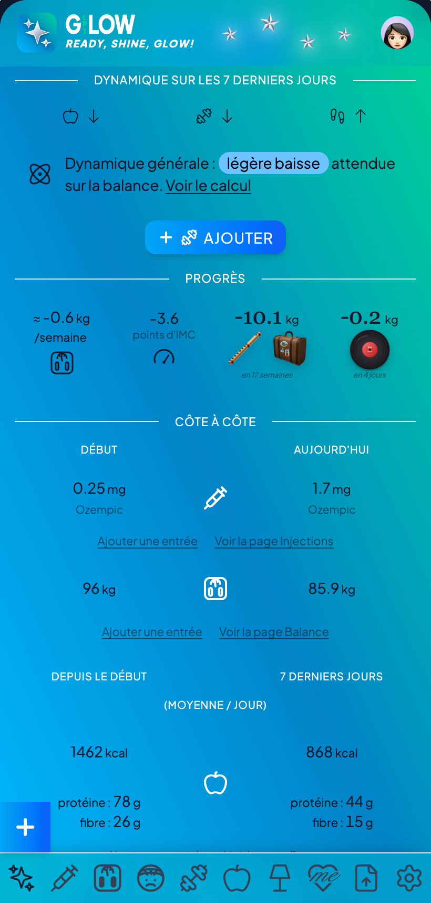
Au-dessus du bloc du verdict, trois tuiles disent par une flèche le sens des sept derniers jours par rapport aux sept précédents : repas, activité physique, pas. La tuile repas est toujours là, module éteint compris ; celles du sport et des pas s'effacent avec leur module et laissent leur case vide, pour que la rangée continue de se lire en trois colonnes. L'infobulle écrit « En hausse | En baisse | Stable sur les 7 derniers jours … ». Une tuile ouvre le tiroir Dynamique ; le bouton « + Ajouter » ouvre la couche « Activité physique » en saisie. Verrouillée, la rangée est dépolie sans message.
Les règles derrière les chiffres
- Sens = comparaison des deux moitiés de 14 jours, seuil 5 % ; stable par défaut. → technique → technique
Section « Progrès » / « Évolution »

Titrée « Évolution » quand le poids actuel vaut ou dépasse celui du départ, « Progrès » sinon. Quatre mini-tuiles au plus, dans l'ordre : la perte moyenne par semaine (dès 7 jours de cure), les points d'IMC gagnés ou perdus (rien sans taille), la perte totale et la dernière perte avec leur dessin insolite et leur durée (« en n semaines » ou « en n jours »). Chacune a sa condition : la rangée peut n'en porter qu'une, ou aucune, et le titre comme la grille restent alors en place. La grille ne descend jamais sous deux colonnes. La tuile kg/semaine ouvre la couche « Balance », la tuile IMC la couche « Où en est l'IMC », une tuile de perte son équivalence en surimpression.
Les règles derrière les chiffres
- Composition, ordre de priorité et plafond de quatre tuiles ; plancher de deux colonnes pour la grille. → technique
- Points d'IMC = (actuel − départ) / m², au dixième. → technique
- Durée d'une perte : jours entre les deux pesées, en jours sous 7, en semaines arrondies sinon. → technique
- Dessin d'équivalence : l'assignation faite par la pesée, sinon un recalcul. → technique
Camille : (88.4 − 96) / 1.68² = −2.7 points d'IMC ; perte totale 7.6 kg en 131 jours → « en 19 semaines » ; dernière perte 0.5 kg entre le 5 et le 12 septembre → « en 1 semaine ».
Équivalence insolite en surimpression
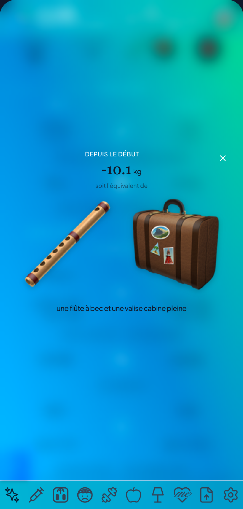
Le bloc d'équivalence en entier, le reste de la page vitré : libellé arbitrage non validé, perte, « soit l'équivalent de », dessin et phrase. L'état ouvert de chaque tuile est mémorisé ; les deux peuvent l'être, la perte totale est alors montrée. La croix ferme cette équivalence ; la vitre ou le geste de barre ferment les deux.
Section « Côte à côte »
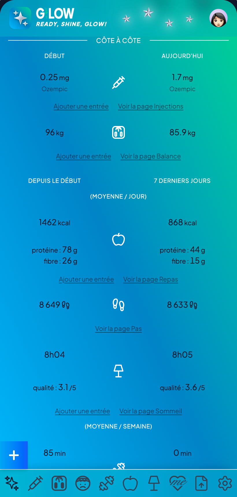
D'abord « début | aujourd'hui » : la dose initiale et actuelle avec le nom du traitement, le poids de départ et actuel. Puis « Depuis le début | 7 derniers jours », par domaine autour d'un médaillon : repas (kcal, protéines et fibres par jour), pas (par jour), sommeil (durée et qualité par jour), activité physique (minutes et séances par semaine), temps pour soi (moments par semaine). Un côté sans valeur reste vide ; le pluriel des unités commence à 2 arbitrage non validé ; le domaine repas reste visible module éteint arbitrage non validé. Chaque domaine finit par « Ajouter une entrée » (sauf les pas) et « Voir la page … ». Les valeurs ouvrent la couche du domaine (« Paliers de dose », « Menus » en vue moyenne sur la fenêtre de la colonne, « Pas », « Sommeil », « Activité physique », « Un temps pour soi ») ; le poids mène à la page pesée ; le médaillon à la page si le module est allumé. La section n'est montrée que si une valeur existe.
Les règles derrière les chiffres
- Colonne « 7 derniers jours » : d'aujourd'hui − 6 à aujourd'hui pour pas, sommeil, sport, temps pour soi. → technique
- Repas sur 7 jours révolus, jour courant écarté, par journée renseignée. → technique
- Repas depuis le début, par journée renseignée. → technique
- Pas : moyenne des journées à plus de 0 pas. → technique
- Sommeil moyen par journée dormie ; qualité pondérée par la durée. → technique
- Sport par semaine depuis la première séance, rien sous 7 jours. → technique
- Temps pour soi par semaine depuis la première entrée, rien sous 7 jours. → technique
- Infobulles protéines/fibres en % de l'objectif du jour. → technique
- Pluriel à partir de 2. → technique
- Gardes d'affichage de la section. → technique
- Médaillon à deux formes, cas aujourd'hui inatteignable. → technique arbitrage non validé
Camille, activité physique : 2 séances de 45 min par semaine depuis mai → « 90 min · 2 séances » à gauche ; une seule séance cette semaine → « 45 min · 1 séance » à droite.
Mini-tuile
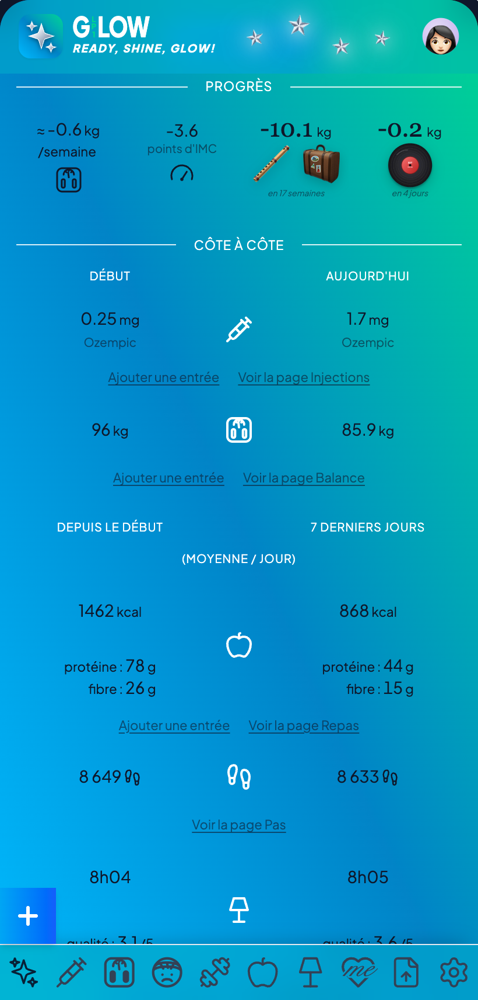
La tuile qui porte toutes les valeurs de « Progrès » et de « Côte à côte ». Elle offre un préfixe (« ≈ » pour une moyenne), une valeur, une unité et un repli d'unité qui passe seul à la ligne quand la place manque, ou une courte phrase à la place du nombre ; puis, en option, une seconde mesure de même facture sous la première, un libellé de deux lignes au plus, une sous-valeur, un picto de dernière ligne, un picto de coin et une colonne réservée à la période, pour que les « /jour » de tuiles voisines s'alignent. Une infobulle est toujours présente. Elle est cliquable quand un geste lui est donné, inerte sinon.
Couches vitrées
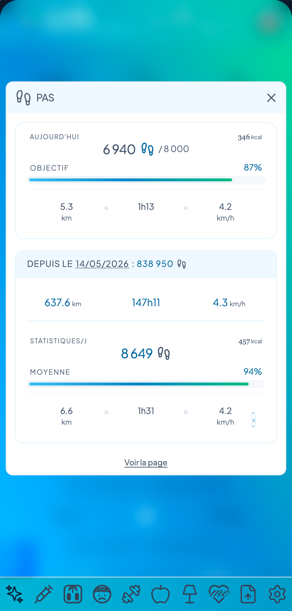
Une seule couche à la fois, par-dessus la page floutée sans teinte, bornée au cadre du téléphone : une carte unique avec bandeau titré, croix, contenu et lien de pied ; la carte défile en son sein si elle est trop haute. Dix couches : « Pas » (le jour et le cumul), « Niveau sanguin actif » (le graphe), « Menus » (formulaire ou récapitulatif du jour, moyenne comparée), « Effets secondaires » (la matrice), « Balance » (le bloc de suivi du poids), « Où en est l'IMC » (échelle 16–42, départ et aujourd'hui), « Paliers de dose » (la frise), « Activité physique » (bloc « De quoi c'est fait » ou formulaire), « Un temps pour soi », « Sommeil » (7 dernières nuits). Elles se ferment par la croix, un clic sur la vitre ou le geste de la barre ; « Voir la page » referme puis navigue. Un repas s'enregistre, se modifie ou se supprime depuis « Menus » ; une séance s'enregistre depuis « Activité physique » ; créer un aliment absent referme la couche et ouvre le formulaire de la page, la saisie en cours est perdue.
Tiroir « Journal »
Ouvert par le bouton « Journal » de la barre du bas, en menu simplifié. Une case par journal — traitement, balance, effets, activité physique, repas, sommeil, temps pour soi, pas — modules allumés d'abord, éteints grisés ensuite, masqués absents. Chaque case liste les trois dernières entrées, toutes dates confondues, futur compris ; « Rien d'enregistré » sinon. Une case allumée ouvre le journal entier de la page en surimpression ; une case éteinte mène à la page vitrée du module.
Les règles derrière les chiffres
- Trois entrées par onglet après tri date puis heure décroissantes ; une journée à 0 pas reste montrée. → technique
- Forme de chaque ligne (nuit « du 25 au 26/08 », initiales de site « AG », durée « 1h05 »). → technique arbitrage non validé (initiales coupées quand la ligne est trop longue)
- Ordre et présence des cases. → technique
Journal d'une page en surimpression
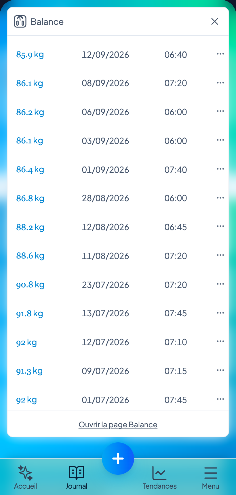
Le journal complet de la page, avec ses lignes, sans filtre de période ni pagination. Balance : une pesée se modifie et se supprime sur place, et une pesée enregistrée déclenche la carte de confirmation de la page pesée. Autres journaux : Modifier, Supprimer et Gérer renvoient à la page. Repas : journées et repas se plient et se déplient, la suppression d'un aliment est inerte arbitrage non validé. « Ouvrir la page {nom} », la croix ou la vitre ferment.
Tiroir « Tendance des 15 derniers jours »
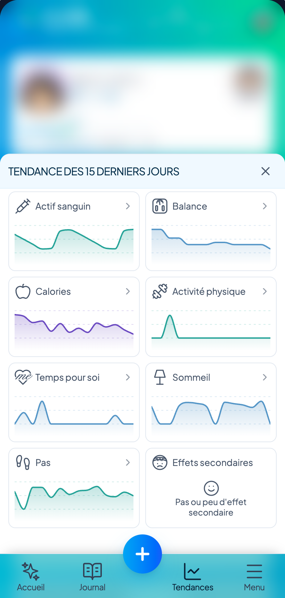
Ouvert par le bouton « Tendances » de la barre, en menu simplifié ; il arrive d'en haut, traverse l'écran et s'arrime au menu du bas, pleine largeur, sans texte arbitrage non validé. Le titre dit une quinzaine, la donnée court sur quatorze jours. Chaque carte porte un picto, un titre et une courbe lissée sans échelle ; le chevron ou le titre bascule vers les valeurs, et la bascule est mémorisée : Actif sanguin « x mg » en direct, Balance « début → fin kg », Calories « kcal/j », Activité « durée −kcal/j », Temps pour soi « total », Sommeil « durée /j », Pas « x Kpas/j −kcal/j ». Sans forme : « Pas encore de données » ou « Pas encore de tendance » avec un lien de saisie. Effets secondaires : un visage avant → un visage après, ou un sourire « Pas ou peu d'effet secondaire ». Une carte ouvre le graphe principal en surimpression ; une carte éteinte écrit « Activez le module … », et ce message mène à la page Modules.
Les règles derrière les chiffres
- Séries sur 14 jours : poids reporté, concentration à midi, sommes journalières. → technique
- Forme dessinée dès deux valeurs distinctes. → technique
- Valeurs des cartes (dernière, première, moyenne informée, total, kcal/j). → technique
- Visages des effets : humeur de chaque moitié de sept jours. → technique
- Échelle et lissage de la courbe. → technique
- Cartes sans forme. → technique
Graphe principal en surimpression
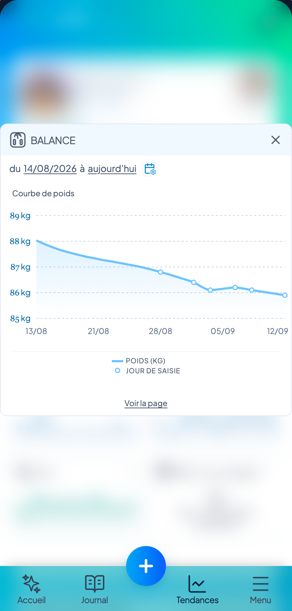
Le graphe de la page du domaine, dans un bloc unique : niveau sanguin, poids et traitement (dès deux pesées), apports (calories d'abord), activité physique, temps pour soi, sommeil, pas, ou la matrice des effets. La période se change ici et reste partagée avec la page. Croix, vitre, ou « Voir la page » ancrée sur le graphe.
Les règles derrière les chiffres
- Fenêtres 7/14/30/90 jours inclusives, « Depuis le début », bornes « du … au … ». → technique
- Période par défaut 30 jours, mémorisée par bloc. → technique
Matrice des effets par moment
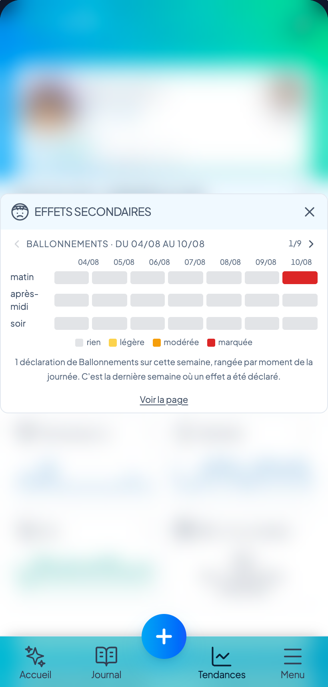
Un effet à la fois, sur les sept jours qui finissent à sa dernière déclaration : trois lignes (matin, après-midi, soir), une case par jour au cran le plus fort (rien, légère, modérée, marquée), et une note qui compte les déclarations. Des chevrons passent à l'effet précédent ou suivant. « Aucun effet secondaire déclaré. » si le journal est vide.
Les règles derrière les chiffres
- Moments par heure de saisie, crans par sévérité, ordre des effets. → technique
Widget de félicitation
Capture absente : accueil/widget-de-felicitation
Couche vitrée pleine page portant un titre, un corps et une scène de particules choisie par type de félicitation (douze types : badge débloqué ou monté de niveau, palier d'IMC, premier jour, dernière perte, première semaine, premier mois, première année, mois et année additionnels, multiples de 50 jours, autre). Les messages sont des propositions arbitrage non validé. Rien ne se ferme seul ; « Rejouer l'animation » resème la scène ; en mouvement réduit, l'animation ne part qu'au bouton « Voir l'animation ». non implémenté Aucun déclenchement n'existe : les règles dictées (journées renseignées, jalons de jours, mois, années, pourcentages de l'objectif) sont consignées et non codées, et aucun écran de ce périmètre n'ouvre le widget.
Les règles derrière les chiffres
- Type → scène. → technique
- Messages, nombres à la française. → technique
- Même graine, même scène. → technique
- Durée d'une scène, pour le bouton Rejouer seulement. → technique
- Mouvement réduit, carte et vitrage sombres. → technique
5. Le traitement ↑ sommaire
Le traitement est le médicament GLP-1 que suit l'utilisatrice, choisi dans un catalogue de treize fiches, et le journal des prises qu'elle enregistre : injections ou comprimés, avec date, heure, zone, dose et notes. Ces prises alimentent le niveau sanguin actif, les tuiles de la home, le rapport PDF et les cartes de partage.
Page « Injections » / « Comprimés »
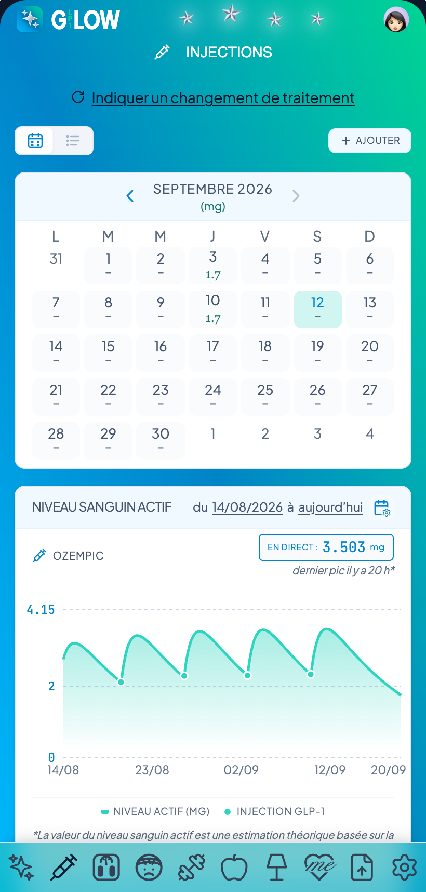
Le titre est « Comprimés » si la fiche du traitement est orale, « Injections » sinon, avec l'icône correspondante ; la page empile le bloc de suivi des prises puis le niveau sanguin actif. On y arrive par l'onglet du menu du bas, par le menu « + » de la home, par le carré traitement et par le lien « Voir la page » des surimpressions. Arrivée par ajout rapide, le formulaire est ouvert dès la première peinture ; par le menu « + » sans traitement, le bloc de changement est ouvert. La cible « plot » que posent les tuiles « Actif » et « En direct » n'a pas d'effet visible : la page s'ouvre en haut ; seul le tiroir Tendances fait défiler jusqu'au graphe.
Les règles derrière les chiffres
- Titre, icône et entrée du menu « + » suivent la forme de la fiche du profil. → technique
- « Comprimé » si la fiche est orale, « Injection(s) » sinon ; traitement absent = injectable. → technique
Bloc de suivi des prises
En tête, un bouton souligné : « Quel est votre traitement ? » sans traitement, « Indiquer un changement de traitement » sinon ; il ouvre et referme le bloc de changement. Après un enregistrement, un bandeau confirme (« L'injection a bien été ajoutée à votre journal. », « … mise à jour. », variantes « Le comprimé … ») ; il se ferme à la croix ou seul en sortant de l'écran. La ligne d'outils bascule Journal / Calendrier (choix mémorisé, calendrier par défaut) et porte « + ajouter », absent sans traitement ; quand elle sort de l'écran, un « + » flottant prend le relais. Le journal affiche « Journal (N) », les bornes « du … au … » de la période, un sélecteur (7, 14, 30, 90 derniers jours, Depuis le début, Choisir ; 30 jours par défaut ; éditer une borne bascule en Choisir), les lignes du plus récent au plus ancien dans une zone défilante de 160 px, et une poubelle « Tout supprimer ». Cette poubelle demande trois conditions : au moins une ligne au journal, un geste de purge fourni par la page, et le réglage des boutons « tout supprimer » non désactivé ; la confirmation porte sur « tout le journal de traitement ». Vide : « Aucune injection enregistrée pour l'instant. Vos futures doses s'afficheront ici. » (ou « Aucune prise… ») ; si le filtre ne retient rien : « Aucun traitement enregistré sur cette période. »
Les règles derrière les chiffres
- Fenêtre de n jours = aujourd'hui − (n − 1) jours, jour courant inclus, sans borne haute ; « Choisir » compare des dates AAAA-MM-JJ ; le choix est mémorisé sous glp1_period_injections_journal. → technique
- Le journal est trié sur date + heure (12:00 si absente), du plus récent au plus ancien. → technique
- La suppression d'une ligne est franche ; « Tout supprimer » vide le journal. → technique
Bloc « Indiquer un changement de traitement »
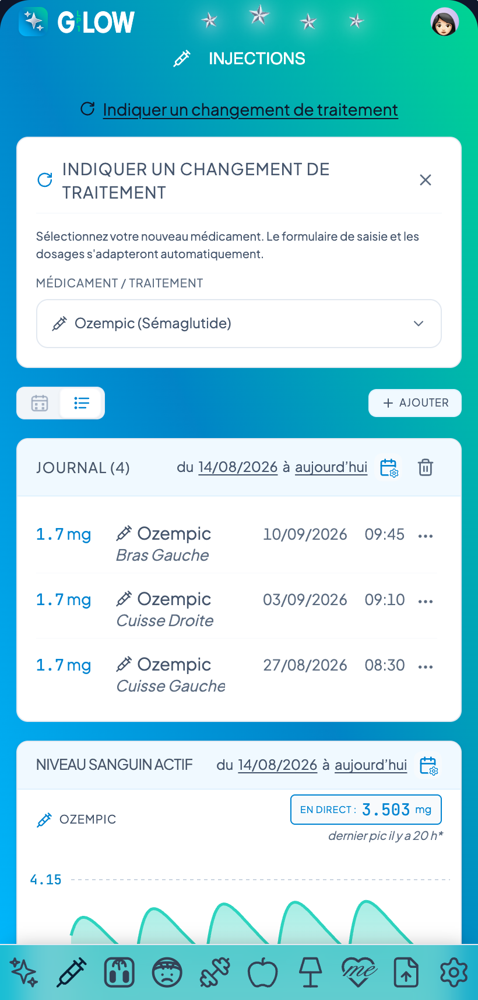
Carte dans le flux de la page : titre, phrase « Sélectionnez votre nouveau médicament. Le formulaire de saisie et les dosages s'adapteront automatiquement. », étiquette « Médicament / Traitement » et le sélecteur en liste insérée. Choisir une fiche valide et referme, sans bouton Valider ; la croix referme sans changer. Le choix écrit l'identifiant dans le profil. S'il diffère du traitement résolu jusque-là, un bloc « Traitement mis à jour » s'affiche : « Votre suivi se poursuit avec {nom}. Les prises déjà enregistrées gardent le traitement sous lequel elles ont été faites. »
Les règles derrière les chiffres
- Le bloc de confirmation ne paraît que si l'identifiant change ; les lignes passées gardent le leur. → technique
- Une ligne sans identifiant est réputée du traitement du profil ; sans profil, « aucun ». → technique
Camille passe d'Ozempic à Wegovy injectable le 14/09/2026 : ses 19 lignes restent « Ozempic », la home repart à zéro prise pour Wegovy, et le graphe reste unique — même molécule.
Sélecteur de traitement
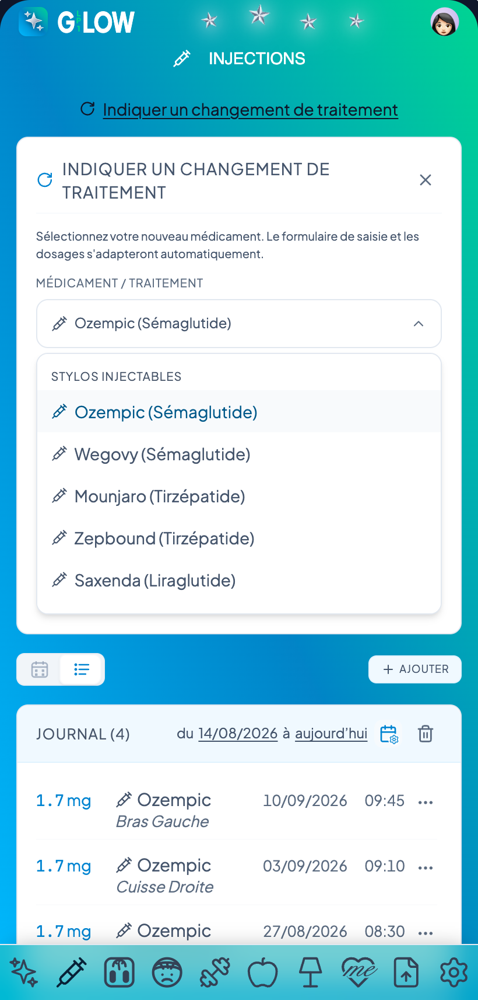
Liste maison montée à quatre endroits : le bloc de changement, « Médicament prescrit » de Mon Profil, le formulaire de profil et la ligne « Cure » de la home. Bouton fermé : icône de la forme (seringue ou comprimé, rien pour « Pas de traitement ») et libellé nettoyé, « Ozempic (Sémaglutide) ». Clavier : flèches, Origine, Fin, frappe du début du nom, Entrée ou Espace, Échap. Un clic à côté referme sans choix ; en liste flottante — ligne « Cure », Mon Profil, formulaire de profil — tout défilement de la page referme aussi, comme un menu déroulant natif ; la liste insérée du bloc de changement en est exempte. Le rétatrutide exige une certification : le clic ouvre une case « Je certifie faire partie de l'essai clinique et me procurer le rétatrutide dans un cadre médical et encadré. » et un bouton Valider inactif tant qu'elle est décochée ; le bouton fermé montre le traitement en attente ; rechoisir le traitement courant ne redemande rien. Sans choix, le traitement vaut « aucun » : aucun médicament n'est affiché avant une déclaration. Au chargement, les libellés des anciennes versions sont convertis en identifiants ; un nom libre inconnu rejoint l'« Autre traitement » de sa famille et le nom saisi est perdu arbitrage non validé.
V2 L'onboarding V2 demande « Avez-vous commencé votre traitement GLP-1 ? » (Oui retenu d'avance) puis, sur un écran sans titre, la forme (Injection / Comprimé) et la spécialité à deux par ligne ; on n'avance pas sans les deux ; « Non » efface forme et spécialité, changer de forme efface la spécialité. Le catalogue V2 tient les mêmes treize entrées et reprend douze des treize identifiants : Foundayo passe de orforglipron à foundayo, alors que la V1 avait gelé cet identifiant pour atteindre les données déjà enregistrées. La V2 nomme « Autre » chaque fin de famille, n'a pas d'entrée « Pas de traitement » (l'absence est la réponse « Non ») et ne porte ni paliers, ni cinétique, ni certification : le rétatrutide s'y choisit comme les autres. Le traitement se choisit dans le catalogue, jamais saisi à la main.
Les règles derrière les chiffres
- Treize fiches (identifiant, nom, forme, molécule, paliers, demi-vies, biodisponibilité relative, rythme) ; « aucun » par défaut ; un identifiant inconnu retombe sur « Pas de traitement ». → technique
- Seul le rétatrutide porte le drapeau de certification. → technique
- Le libellé perd « - … ) » : « Ozempic (Sémaglutide - Injection) » → « Ozempic (Sémaglutide) » ; « GLP-1 » n'est pas touché. → technique
- Conversion des libellés historiques et des noms libres en identifiants, à la migration. → technique
- La forme se lit dans la fiche, jamais dans le nom (« Floral » n'est pas un comprimé). → technique
« Médicament prescrit » (Mon Profil et formulaire de profil)
Deux écrans montrent et changent le traitement hors de la page Injections. Mon Profil affiche le nom de la fiche ; le clic sur la valeur ouvre le sélecteur d'office, choisir enregistre aussitôt, un clic à côté referme. Le formulaire de profil porte le même sélecteur sous l'étiquette « Médicament prescrit », mais le choix n'y est pas enregistré au clic : il part avec la soumission du formulaire. Les pages elles-mêmes sont décrites au chapitre Profil.
Les règles derrière les chiffres
- Le traitement du profil est un identifiant du catalogue ; il détermine forme, titres, paliers et cinétique partout. → technique
Formulaire de prise
Titre selon la forme et le mode (« Nouvelle injection », « Nouvelle prise de comprimé », « Modifier l'injection », « Modifier la prise »), suivi du nom du traitement. Date du jour et heure arrondie vers le bas aux minutes rondes (0, 10, 15, 20, 30, 40, 45, 50) ; un clic ouvre le calendrier ou le sélecteur d'heure maison. Zone, pour une injection : les six zones corporelles ; « Prise Orale » n'apparaît que si la ligne modifiée la porte déjà. La zone proposée est tirée parmi celles qui ne sont ni celle de la prise précédente la plus proche ni celle de la suivante la plus proche ; elle est calculée à maintenant, pas à la date saisie arbitrage non validé, et elle n'est retirée au sort que lorsque le journal change : fermer puis rouvrir le formulaire propose la même zone. Si la zone choisie est celle de la dernière injection (la ligne en cours de modification exclue), un avertissement s'affiche : « Pour information : Vous avez injecté votre dernière dose ({dose} mg) dans cette même zone ({zone}) lors de la derniere injection. » ; la croix le ferme, changer de zone le réarme. Puis le sélecteur de dose et le champ repliable « Notes / Observations (facultatif) ». Au clic sur « Valider » (ou « Mettre à jour l'injection / la prise »), une dose vide, illisible, nulle ou hors 0,001–1 000 000 mg est refusée avec la phrase « Une dose entre 0,001 et 1000000 mg est attendue. » pleine ligne avant le bouton ; toute retouche efface le refus. V2 La V2 dit la règle avant la faute, sous le champ, en temps réel, jamais après un clic sur Valider. L'enregistrement écrit date, heure, dose, zone, notes et l'identifiant du traitement du profil du moment, en ajout comme en modification par ce formulaire ; l'édition en place (journal, bulle) conserve l'identifiant de la ligne. Deux lignes par jour au plus : une troisième remplace la dernière du jour, et un bloc d'avis « Limite atteinte » paraît en tête de page avec la phrase « Limite atteinte pour aujourd'hui : cette saisie remplace la dernière. » Une prise datée du futur est acceptée. La croix ou un clic hors de la carte annule.
Les règles derrière les chiffres
- Défauts : aujourd'hui, heure arrondie vers le bas, zone suggérée (ou « prise_orale »), dose = premier palier ; à l'ouverture, date et heure repartent de l'instant présent et la zone reprend la suggestion en cours. → technique
- Zone proposée : exclusion des zones de la prise voisine d'avant et d'après, tirage au sort parmi les autres, recalculé sur changement du journal. → technique
- Avertissement si la zone choisie est celle de la dernière injection hors ligne modifiée ; réarmé à chaque changement de zone. → technique
- Dose : min 0,001, max 1 000 000, 3 décimales, virgule acceptée, message unique. → technique
- Champs écrits, identifiant du traitement réécrit avec celui du profil. → technique
- Plafond de 2 lignes par jour, remplacement de la dernière, heure ramenée à la minute ronde inférieure, identifiant inj-{horodatage}. → technique
- Ouverture en modification : préréglage si la dose est dans la liste générique 0,25 / 0,5 / 1 / 1,7 / 2,4, sinon « Autre dose » (une prise Mounjaro 5 mg s'ouvre en saisie libre) ; annuler remet 0,25 mg et abdomen gauche. → technique
- Rotation d'ordre fixe et zone « recommandée » : calculées, plus affichées. → technique → technique
Camille a piqué en cuisse droite le lundi 07/09 à 08:00. Le 14/09, le formulaire lui propose l'une des cinq autres zones ; si elle rechoisit « Cuisse Droite », l'avertissement rappelle « votre dernière dose (1 mg) dans cette même zone (Cuisse Droite) ». Saisie à 08:17, l'heure est enregistrée 08:15.
Sélecteur de dose

Les paliers de la fiche, le premier suffixé « (Initiation) », le dernier « (Dose max) ». « Autre dose » ouvre le champ « Autre dose de GLP-1 (mg) », qui reçoit le focus ; « Préréglages » y revient. Au changement de traitement, une dose absente des nouveaux paliers revient au premier, sauf en saisie libre. Le suffixe « Dose max » informe : seule la règle de dose refuse.
Les règles derrière les chiffres
- Premier palier « (Initiation) », dernier « (Dose max) », les autres nus. → technique
- Paliers par fiche : Ozempic et Wegovy injectable 0,25 / 0,5 / 1 / 1,7 / 2 / 2,4 ; Mounjaro et Zepbound 2,5 → 15 ; Saxenda et Victoza 0,6 → 3 ; Rétatrutide 1 / 2 / 4 / 8 / 12 ; Rybelsus et Wegovy oral 3 / 7 / 14 ; Foundayo 1 / 3 / 10 / 36 / 45 ; les deux « Autre traitement » 0,25 / 0,5 / 1 / 1,7 / 2,4. → technique
Ligne du journal
Dose « {dose} mg », icône de la forme et nom du traitement de la ligne, zone en sous-ligne (absente pour une prise orale), date, heure (12:00 si absente), notes. Chaque champ s'édite en place : la dose (règle de dose, message sous la ligne), la zone (sept entrées dont « Prise Orale » ; verrouillée pour une ligne orale), la date, l'heure, les notes ; rien n'est écrit si rien n'a changé. Le menu « ⋯ » propose Modifier (ouvre le formulaire) et Supprimer (retrait immédiat, sans confirmation).
Les règles derrière les chiffres
- Édition en place : commit ignoré si la dose est illisible ou négative ou la date vide ; notes vides effacées. → technique
- Nom et forme de la ligne lus par son identifiant, sinon celui du profil. → technique
- Six zones corporelles + « Prise Orale » ; initiales « AG », « CD »… pour le tiroir Journal, rien pour un comprimé. → technique
Calendrier des prises
Vue par défaut du curseur. Grille mensuelle, lundi en tête, bornée du mois de la première prise au mois courant, parcourue aux chevrons ou au glissé. Une tuile porte le numéro du jour et la dose arrondie, ou « ×N » si plusieurs prises ; tiret pour un jour sans prise ; aujourd'hui surligné. L'infobulle de la tuile dit « Injection — voir le détail », « Prise — voir le détail » ou « N prises — voir le détail ». Journal vide : « Cliquez sur la date choisie pour saisir votre première injection » (ou « … prise de comprimé »). Un clic sur un jour vide ouvre le formulaire à cette date, heure courante, zone proposée. La bulle d'un jour liste chaque prise (Traitement non éditable, Dose exacte, Zone ou « Prise orale », Date, Heure — éditables en place), avec « Modifier » (ouvre le formulaire, ferme la bulle), « Supprimer » — qui referme la bulle quand c'était la dernière prise du jour — et, au pied, « Ajouter un enregistrement » à cette date.
Les règles derrière les chiffres
- Tuile : 2 décimales sous 10 mg, 1 sous 100, entier au-delà, zéros de queue retirés ; la bulle montre la dose exacte ; jour trié par heure. → technique
- Ajout à une date = ouverture du formulaire puis date remplacée. → technique
Une dose de 0,355 mg s'écrit « 0.35 » sur la tuile et « 0.355 mg » dans la bulle ; 2,40 s'écrit « 2.4 ».
Niveau sanguin actif

Un graphe par molécule active. Les prises des 60 derniers jours — tout l'historique si aucune n'est si récente arbitrage non validé — sont groupées par molécule : Ozempic et Wegovy, injection ou comprimé, se cumulent ; les fiches « Autre traitement » restent seules. Une molécule est active si son cumul dépasse 0,001 mg à l'instant présent. Le groupe qui contient le traitement du profil vient d'abord ; les autres suivent sous la bande « Actif résiduel du traitement précédent encore présent ». Sans molécule active : « Simulateur Pharmacocinétique — Aucune molécule active détectée sur les 60 derniers jours. Enregistrez une injection pour modéliser la concentration. » Suivent l'accordéon « Évolution du niveau sanguin » (traitement du profil ; absent sans traitement) et un accordéon « Comprendre vos sensations physiologiques » par molécule.
Les règles derrière les chiffres
- Molécules actives : rétention 60 jours, groupe = molécule, historique complet du groupe, seuil 0,001 mg, courbe sur 10 jours de prévision, tri par prise la plus récente. → technique
- Clé de cumul = molécule de la fiche, sinon son identifiant ; traitements d'un groupe du plus récemment pris au plus ancien. → technique
- Le graphe du traitement en cours d'abord ; changer de marque sans changer de molécule ne crée pas de « résiduel ». → technique
Graphe « Niveau Sanguin Actif »
Bandeau « Niveau Sanguin Actif » (retiré sous une surimpression), bornes « du … au … » éditables et sélecteur de période, mémorisé par molécule. Ligne du traitement : une icône par forme présente puis les noms joints par « / » sans espace (« Ozempic/Wegovy ») ; à droite « En direct : {concentration} mg » (entier tel quel, sinon 3 décimales) et, dessous, la phrase du pic. Chaque prise contribue une courbe de Bateman à un compartiment avec la cinétique de sa fiche et sa biodisponibilité relative (un Rybelsus 14 mg culmine à 0,112 mg) ; la courbe tracée est la somme, par pas de 3 h, de la veille de la première prise jusqu'au plus tard entre « dix jours après la dernière prise » et « maintenant » — un traitement arrêté depuis plus de dix jours voit donc sa courbe courir jusqu'à aujourd'hui ; une prise future y dessine sa bosse. Les fenêtres fixes (7, 14, 30, 90 jours) n'ont pas de borne haute : les dix jours de prévision restent visibles à droite d'aujourd'hui quelle que soit la période choisie. La phrase du pic lit les sommets de la courbe des seules prises faites : « pic en cours » à ± 12 h d'un sommet (± 20 min si la dernière prise faite est un comprimé), sinon « prochain pic dans 6 h » ou « dernier pic il y a 4 jours » (heures jusqu'à 72 h, jours ensuite) ; vide sans sommet. Axe X « JJ/MM » (« JJ/MM, 14h » si la fenêtre affichée tient en deux jours) ; axe Y de 0 à 1,15 × le maximum affiché. Une pastille marque chaque prise ; au clic, l'étiquette « {dose} mg », une seule à la fois. Un clic sur l'aire ouvre l'infobulle (date, heure, « Actif : x mg », « Dose : +x mg » si prise) ; refermée, elle le reste jusqu'au clic suivant. Légende « Niveau Actif (mg) » et « Injection GLP-1 », « Prise » ou « Prise ou injection » ; note : « *La valeur du niveau sanguin actif est une estimation théorique basée sur la pharmacocinétique de la molécule. Cette valeur peut varier d'un individu à un autre. »
Les règles derrière les chiffres
- ke = ln 2 / demi-vie, ka = ln 2 / demi-vie d'absorption, tMax = ln(ka/ke)/(ka − ke) ; Ozempic tMax ≈ 57 h, Rybelsus ≈ 1 h, Mounjaro ≈ 44 h. → technique
- Concentration d'une prise = dose × biodisponibilité × (e−ke·t − e−ka·t) × facteur de normalisation ; pic = dose × biodisponibilité à tMax. → technique
- Cumul = somme des prises dont l'instant est passé, chacune avec sa cinétique ; instant = date + heure (12:00 si absente). → technique
- Points toutes les 3 h en heures locales, arrondis à 4 décimales, chaque prise marquée sur le point le plus proche ; fin de courbe = max(dernière prise + 10 jours, maintenant). → technique
- Sommet = point intérieur plus haut que son voisin de gauche et au moins égal à celui de droite ; le plus proche de maintenant est annoncé. → technique
- Délai en heures arrondies sous 72 h, en jours arrondis à partir de 72 h (« 3 jours »). → technique
- Fenêtre appliquée sur la date locale des points, borne basse seulement ; plafond Y = max affiché × 1,15 (0,25 mg au moins) ; légende selon les formes du groupe. → technique
- Fenêtres mémorisées par molécule sous glp1_period_blood_level_by_brand ; plage « Choisir » par défaut : plus ancienne prise → aujourd'hui, non persistée. → technique
Camille, 1 mg tous les lundis à 8 h depuis le 29/06 : le sommet cumulé tombe le mercredi vers minuit, 40 h après la piqûre, plus tôt que les 57 h d'une dose isolée, parce que la dose qui monte s'ajoute à un fond qui descend. Le samedi 12/09 à midi, le niveau vaut 1,664 mg et la phrase dit « dernier pic il y a 4 jours » (84 h). Le creux du cycle est à 1,39 mg, juste avant chaque lundi. Son 0,25 mg du 04/05 avait culminé à 0,25 mg le 06/05.
Accordéon « Évolution du niveau sanguin »
Cinétique du traitement du profil. Titre fixe, icône, nom, demi-vie (« 7 jours », « 13 h », « 6.7 jours »), la question entière avec « je m'injecte » ou « je prends ». Ouvert, quatre paragraphes dont chaque durée est calculée depuis la fiche : « Le pic (entre le 1er et le 3e jour) : », « La demi-vie (7 jours) : », « Entre deux injections (une fois par semaine) : » avec le creux à l'équilibre en ordre de grandeur (« environ un tiers plus bas que le pic ») et le rythme prescrit en toutes lettres, « Le cumul des doses (équilibre après ~4 semaines) : ».
Les règles derrière les chiffres
- Jours dès 24 h, « 1 jour » au singulier ; pic en heures pour un quotidien, en fourchette de jours sinon ; équilibre = 4,33 demi-vies, en semaines dès 14 jours ; creux calculé sur Bateman à l'équilibre, dit par paliers (« un dixième », « un quart », « un tiers », « moitié », « deux tiers »). → technique
Sous Saxenda, le même bloc dirait « 13 h », « environ 7 h après l'injection », « chaque jour », « environ moitié moins haut que le pic », « ~3 jours ».
Accordéon « Comprendre vos sensations physiologiques »
Un par molécule active, aux durées du traitement représentant du groupe, celui de la prise la plus récente arbitrage non validé. Tête : icône de forme, noms joints par « / » entouré d'espaces (« Ozempic / Wegovy »), « Demi-vie : x jours » ou « x h ». Trois phases : le pic — intitulé « Pics de Concentration », au singulier « Pic de Concentration » pour un traitement quotidien — (« jours 1 à 3 » ; « ~1 h après la prise » pour un quotidien), l'élimination (« jours 5 à 7 » ; « avant la prise suivante »), l'équilibre (« ~4 semaines » ; « ~3 jours » pour Saxenda). Les phrases sur la satiété, les nausées et le retour d'appétit sont fixes.
Les règles derrière les chiffres
- picDay = tMax / 24 arrondi → « jours picDay−1 à picDay+1 » ; élimination « jours intervalle−2 à intervalle » ; équilibre = 4,33 demi-vies. → technique
Tuile « En direct » du niveau sanguin (home sections)
Cumul de toute la cure, même rétention de 60 jours et même regroupement par molécule, écrit à 2 décimales ; « voir détail » si deux molécules circulent en même temps (sémaglutide et tirzépatide), une somme n'ayant pas de sens. Clic : surimpression « Niveau sanguin actif » si un traitement est déclaré et le journal non vide, sinon la page Injections.
Les règles derrière les chiffres
- Un groupe actif → sa concentration ; deux ou plus → 0 et « voir détail ». → technique
Carré traitement (home standard)
Masqué si le module Traitement est éteint. La série lue est celle du traitement en cours depuis le dernier changement : revenir à Wegovy après Mounjaro ne rouvre pas l'épisode d'avant. Ce carré ne filtre pas les prises futures : une dose saisie à l'avance y devient le dosage « Actuel », entre dans le compte et dans les mg cumulés, et rend l'ancienneté négative. Semaine = jours écoulés depuis la première prise de la série ÷ 7, plus un, suivie de « (N jours) », jamais « 0 jour » ; à droite, « Dernière » ou « Dernier », icône, « aujourd'hui » ou « il y a N jour(s) ». Initial = dose de la première prise, Actuel = dose de la dernière, Actif = cumul des seules lignes de la série, tous à 2 décimales sans zéro de queue ; pied : nom · N injection(s) ou comprimé(s) · total mg cumulé. Non commencé : « Semaine n° 0 — traitement non commencé » et « Enregistrez votre première injection pour suivre l'évolution de votre traitement. » (ou « … prise de comprimé ») ; tout le carré ouvre le formulaire d'ajout. Commencé : semaine, Initial, Actuel et pied mènent à la page, Actif porte la cible « plot ». V2 Une valeur absente se tait, jamais un zéro.
Les règles derrière les chiffres
- Série du traitement en cours : suite finale des lignes du traitement résolu du profil ; la version filtrée, qui écarte d'abord les prises non survenues, sert à la home sections, à la couche des paliers et au PDF. → technique
- Semaine n° = ⌊jours / 7⌋ + 1 sur minuit local ; « N jour(s) » avec N ≥ 1. → technique
- Initial, Actuel, Actif, cumul et ancienneté de la dernière prise. → technique → technique
« Côte à côte » — Début / Actuel du dosage
Home sections, affichée si une dose ou un poids de départ existe. Gauche : dose et traitement de la première prise faite de la série en cours ; droite : ceux de la dernière prise faite. Médaillon : icône de la forme actuelle ; comprimé et seringue en diagonale si les deux côtés diffèrent de forme, cas inatteignable aujourd'hui puisque la série ne porte qu'un traitement arbitrage non validé. Un clic sur une tuile ouvre la couche « Paliers de dose », le palier cliqué cerné ; « Ajouter une entrée » ouvre l'ajout rapide, « Voir la page Injections » (ou « Comprimé ») la page.
Les règles derrière les chiffres
- Prises faites seulement, depuis le dernier changement de traitement ; première et dernière de la série. → technique
Surimpression « Paliers de dose »
Lecture seule en couche vitrée titrée « Paliers de dose », fermée par la croix ou la vitre ; lien « Voir la page ». Le bloc s'intitule « Parcours de doses · {nom} ». Les prises consécutives de même dose de la série en cours forment un palier ; sa fenêtre court jusqu'au début du suivant, ou jusqu'à aujourd'hui pour le dernier, marqué « en cours depuis ». Par palier : la date de début sur sa ligne, « Début à x mg » puis « Passage à x mg », la durée (« aujourd'hui », « N jour(s) » sous 14 jours, « N semaines » ensuite), le nombre d'injections ou de comprimés selon la forme de la fiche, et « ≈ ±x kg / semaine » d'après la dernière pesée par jour dans la fenêtre — rien sans deux pesées ou sous sept jours, ni zéro ni tiret. Le palier cliqué est cerné, sans défilement arbitrage non validé ; aucun « palier suivant » n'est annoncé arbitrage non validé ; le comprimé garde son escalier, seul le mot change arbitrage non validé ; la variation est rapportée à la durée du palier arbitrage non validé. Vide : « Aucune prise enregistrée pour le traitement en cours : l'escalier des doses se dessinera dès la première. »
Les règles derrière les chiffres
- Regroupement des prises consécutives de même dose, fenêtre jusqu'au palier suivant, durée en jours puis en semaines arrondies dès 14 jours. → technique
- (dernière − première pesée) × 7 / jours, une décimale, vrai signe moins, « 0 » sans signe. → technique
Camille pesait 96,0 kg le 04/05, 94,8 kg le 01/06, 93,2 kg le 29/06 et 87,8 kg le 12/09 : −1,2 kg sur 28 jours donne « ≈ −0.3 kg / semaine », −5,4 kg sur 75 jours « ≈ −0.5 kg / semaine ». Un palier de 13 jours s'écrit « 13 jours », de 15 jours « 2 semaines ».
Ligne « Cure » du bloc Salut

« Cure : », icône et nom du traitement (icône absente pour « Pas de traitement »), puis « • Rappels : Lun » (jour du rappel hebdomadaire), « 7j » (intervalle du rappel personnalisé) ou « Non » ; la partie rappels manque sans traitement, la ligne entière si le module est éteint. Un clic sur « Cure : … » ouvre le sélecteur de traitement d'office ; choisir enregistre, un clic à côté ou un défilement de la page referme.
Les règles derrière les chiffres
- Jour 0 = dimanche … 6 = samedi ; intervalle 7 par défaut. → technique
Menu « + » de la home — entrée traitement
Une entrée par onglet allumé. Celle du traitement s'appelle « Ajouter une injection », « Ajouter un comprimé » selon la forme de la fiche du profil, ou « Indiquer un changement de traitement » quand aucun traitement n'est déclaré. Les deux premières ouvrent la page Injections avec le formulaire d'ajout déjà déployé ; la troisième l'ouvre avec le bloc de changement déployé.
Les règles derrière les chiffres
- Libellé et destination selon la forme du traitement du profil et sa présence. → technique
Carte profil du menu « Configuration & Plus »
Capture absente : traitement/carte-profil-du-menu-configuration-plus-plusmenu
Avatar, prénom, un badge portant le nom du traitement du profil, le poids perdu et la dose de la dernière prise passée, « {dose} mg ». Tant qu'aucune prise n'a eu lieu, la valeur retombe sur la plus récente saisie à l'avance arbitrage non validé ; sans aucune prise, « N/A ». Un bouton mène aux réglages.
Les règles derrière les chiffres
- Dernière prise passée, repli délibéré sur une prise future. → technique
Tiroir « Journal » — lignes de traitement
Demi-carte par prise, mêlée aux repas, pesées et autres entrées récentes : tête « {date} · {dose} mg », nom du traitement de la ligne, initiales de la zone (« AG » pour Abdomen Gauche, « CD » pour Cuisse Droite). Un comprimé n'affiche pas d'initiales, faute de côté arbitrage non validé. Le clic mène à l'onglet Injections.
Les règles derrière les chiffres
- Lignes du tiroir Journal et du défilé : forme déduite de la fiche, dose et initiales de zone. → technique
- Six zones corporelles + « Prise Orale » ; initiales dérivées du côté, chaîne vide pour un comprimé ou une zone inconnue. → technique
Défilé des dernières actions
Bande de carrés des dernières entrées, tous domaines confondus. Un carré de prise porte l'icône de sa forme — seringue ou comprimé, lue dans la fiche —, le nom du traitement et la dose à 2 décimales, zéros de queue retirés. Le clic mène à l'onglet Injections.
Les règles derrière les chiffres
- Même source que le tiroir Journal ; la forme vient de la fiche, jamais du nom. → technique
Surimpressions du tiroir Tendances
Deux cartes du tiroir portent des données de traitement. La carte « blood » ouvre le bloc « Niveau sanguin actif » entier, mêmes données que la page ; ses deux accordéons y restent des cartes séparées arbitrage non validé. Le même bloc s'ouvre depuis la tuile « En direct » de la home sections. La carte « weight » trace le graphe poids contre traitement : la concentration cumulée des seules lignes du traitement en cours, avec la cinétique de la fiche du profil, une pastille sur chaque jour de prise (injections seulement), et son propre sélecteur de période ; la légende dit « Concentration Sanguine GLP1 ». Depuis ce tiroir, et de là seulement, le clic sur un graphe fait défiler la page cible jusqu'à lui.
Les règles derrière les chiffres
- Graphe poids contre traitement : concentration du traitement en cours, deux pesées au minimum. → technique
- Molécules actives et cumul : mêmes règles que la page. → technique
Données de traitement de l'export PDF
Capture absente : traitement/donnees-de-traitement-dans-l-export-pdf-domaine-voisin
Le bloc d'identité porte « Traitement : {nom} (injection|comprimé) » et, dessous, « 1re injection le {date} » — la première prise de la série en cours, lue sur l'historique complet. Les tuiles de suivi comptent les prises de la période exportée : « N Injections » ou « N Prises », « Dernière dose {x} mg » et « ≈ {x} j Entre 2 injections », écart moyen entre journées de prise. Cet écart se calcule sur les seules prises de la période choisie, par journée et sans distinction de traitement : deux prises un même jour ne comptent pas pour un écart nul, et un changement de traitement mêle deux rythmes arbitrage non validé. L'annexe A, « Journal des injections » ou « Journal des prises de comprimés » selon la forme de la cure en cours, est un calendrier dont chaque case porte la dose du jour ou « ×N ». Le reste du rapport est au chapitre Rapport.
Les règles derrière les chiffres
- Fréquence observée : dates distinctes ayant eu lieu, écart total / (nombre − 1). → technique
- Traitement, première prise, tuiles et annexe calendrier du bilan. → technique
- Série du traitement en cours, prises futures écartées. → technique
Carte de partage d'une prise
Capture absente : traitement/carte-de-partage-une-injection-prise-de-comprime-domaine-voi
Gabarit de la dernière prise du journal : icône de la forme, dose à une décimale, « Dose injectée » ou « Prise », puis trois lignes — Traitement, Molécule (« — » si la fiche n'en porte pas), « Zone » ou « Voie » avec le libellé complet — et les notes s'il y en a. Un graphe « Mon niveau sanguin sur 14 jours » se pose dessous, à deux conditions : la première prise du journal remonte à plus de quatre jours, et la courbe compte au moins deux points. Le partage est au chapitre Rapport.
Les règles derrière les chiffres
- Seuil de quatre jours depuis la première prise, courbe sur 14 jours de la première molécule active. → technique
Module Traitement et rappels d'injection
Le module Traitement est allumé tant que son drapeau est absent ; éteint, l'onglet, la ligne « Cure », le carré traitement et l'entrée du menu « + » disparaissent, et une case permet de le masquer ; le rallumer efface le masquage. Rappels : bouton « Rappels activés / désactivés » (désactivés par défaut) ; type « Hebdomadaire (Jour fixe) » (jour Dim…Sam, heure, 20:00 par défaut) ou « Personnalisé » (« Tous les N jours » de 1 à 30, « À partir du » une date, heure) avec la phrase « Vos rappels d'injections seront planifiés automatiquement tous les N jours à compter du {date} à {heure}. » Ces réglages sont enregistrés dans le profil ; aucun code ne planifie ni n'envoie de notification non implémenté. Pages Modules et Notifications : chapitre Profil.
Les règles derrière les chiffres
- Drapeau absent = module allumé ; masqué seulement si éteint. → technique
- Type hebdomadaire par défaut, jour 0, heure 20:00, intervalle 7, date de départ aujourd'hui. → technique
6. Le poids ↑ sommaire
Le domaine tient le journal des pesées — une par jour, en kilogrammes à une décimale, à une heure aux minutes rondes — avec un poids de départ marqué d'un drapeau, un poids visé et neuf mensurations facultatives. Tout ce que l'application dit du poids, de l'IMC et de la progression vers l'objectif se lit dans cette table. En V2, seul l'onboarding existe : un poids actuel et, si l'objectif est « Perdre du poids », un poids visé ; aucune réponse n'est encore enregistrée. V2
Page « Balance »

La page ordinaire commence à la ligne d'outils Journal / Calendrier : le formulaire de saisie, et la carte de confirmation qui le remplace après un enregistrement, ne sont montés qu'à la demande, au-dessus d'elle. Suivent le journal ou le calendrier — jamais les deux, calendrier par défaut —, l'histogramme « Cadence » et le graphe « Courbe de poids », chacun avec sa période. On y arrive par l'entrée « Balance » du menu bas, les tuiles Départ / Actuel des homes, le lien « Ajouter une saisie » de la carte Balance du tiroir Tendances, le lien « Voir la page » des surimpressions et le bouton du bloc palier d'IMC. Le « + » flottant apparaît quand le curseur Journal / Calendrier sort de l'écran ; le titre de page « Balance » ouvre aussi le formulaire.
Les règles derrière les chiffres
- Périodes : 7, 14, 30, 90 derniers jours, Depuis le début, Choisir ; défaut 30 jours ; « 7 derniers jours » va d'aujourd'hui − 6 à aujourd'hui ; une clé par bloc (journal, Cadence, courbe). → technique
- Les bornes « du … au … » s'éditent en place et basculent le sélecteur en « Choisir » ; une borne égale à son repli s'écrit « début » ou « aujourd'hui ». → technique
- L'ordre qui compte est celui des dates et heures portées par les lignes (heure absente = 12:00), jamais l'ordre de saisie. → technique
Barre d'outils de l'historique

Un curseur segmenté à deux carreaux — une grille de mois, une pile de lignes — et le bouton « + ajouter ». Aucun mot : chaque carreau montre la vue qu'il donne, le nom ne vit que dans l'infobulle et pour les lecteurs d'écran. C'est le curseur seul qui arme le « + » flottant en sortant de l'écran, pas le bouton d'ajout. La même barre sert aux autres pages à journal, chacune sous sa propre clé.
Les règles derrière les chiffres
- La vue est « journal » seulement si le stockage le dit, sinon « calendrier » ; le choix de Balance est retenu sous
glp1_weight_history_view. → technique
Formulaire « Nouvelle saisie » / « Modifier la saisie »
Date (JJ/MM/AAAA, sélecteur maison) et heure (HH:MM, aux minutes rondes), champ « Poids (kg) » avec le focus, bouton « + Ajouter des mensurations » qui déplie neuf champs — Poitrine, Taille, Hanches, Bras, Sous-poitrine, Fesses, Cuisses, Genoux, Mollets — et une note qui renvoie au rapport téléchargeable. Les refus s'empilent au clic sur Valider et s'effacent dès que le champ fautif est retouché. Quand la date visée porte déjà une pesée, le bouton devient la paire « Annuler » / « Confirmer la mise à jour ». Croix ou clic à côté referment sans enregistrer. Le formulaire s'ouvre par « + ajouter », le « + » flottant, un jour vide du calendrier, « Modifier » d'une ligne ou d'une bulle.
Les règles derrière les chiffres
- Le poids est arrondi au dixième à l'écriture, jamais à l'affichage. → technique
- L'heure enregistrée est ramenée à la minute ronde inférieure (0, 10, 15, 20, 30, 40, 45, 50) ; l'heure proposée est l'heure locale ainsi arrondie. → technique
- Bornes V1 : poids de 0,1 à 1000 kg, une décimale ; mensuration de 1 à 300 cm ou vide arbitrage non validé ; message « Un poids entre 0,1 et 1000 kg est attendu. ». La V2 fixe 999 kg ou 2000 lb comme plafond de la roue de saisie : plus rien à refuser. V2 → technique
- À la frappe : virgule → point, tout sauf chiffres et point retiré, une seule décimale. → technique
- Défauts : aujourd'hui, heure courante arrondie ; depuis le calendrier, le jour cliqué. La charge écrite porte « pas un départ », mais le drapeau est aussitôt reposé sur la pesée la plus ancienne : sur un journal vide, la pesée créée devient le départ. → technique
- Une seule pesée par jour : un ajout sur un jour pris met à jour la ligne du jour (identifiant, drapeau et mensurations non ressaisies conservés) ; sinon la ligne s'insère et l'historique est retrié. → technique
- Le formulaire annonce le remplacement (« Une saisie existe déjà le JJ/MM/AAAA. L'application ne prend en compte qu'une saisie par jour : celle-ci sera remplacée. ») et n'écrit qu'au second clic ; si l'occupant est le départ, c'est lui qui prend le poids et la ligne déplacée disparaît ; changer la date rouvre la question. → technique
- Un champ de mensuration rempli écrase, un champ vide conserve la valeur de la pesée remplacée ; masquer la grille vide les neuf champs ; en modification sans remplacement, un champ vidé retire la mesure. → technique
- Les neuf mesures, dans cet ordre, trois par ligne. → technique
- La modification fusionne la charge dans la ligne visée sans retrier l'historique ni appliquer « une seule par jour » : c'est l'écran qui refuse avant. arbitrage non validé → technique
Camille se repèse le 12/09 à 20:10 et saisit 85,1. Le message annonce le remplacement ; au second clic, la ligne du 12/09 passe à 85.1 kg, 20:10, et garde les mensurations du matin.
Avis de refus « poids de départ »
Un encadré à part, en italique, avec une croix pour le fermer. Il porte un seul texte et sert aux deux endroits qui refusent le même geste : le formulaire de pesée et la ligne de journal en édition.
Les règles derrière les chiffres
- Dater le départ après une autre pesée est refusé, dans le formulaire comme sur la ligne. → technique
Carte de confirmation de pesée
Une seule carte remplace le formulaire : le message — « Votre poids de départ a bien été mis à jour. », « Votre nouvelle saisie « xx,x kg » a bien été ajoutée à votre journal. » ou « Votre saisie « xx,x kg » a bien été mise à jour. » — puis, s'il y a une perte à fêter, le bloc « dernière perte enregistrée » et le bloc « Depuis le début », et un bouton « OK ». Le poids y est écrit avec une virgule ; partout ailleurs le site écrit un point. Après une édition depuis le tiroir Journal, la même carte s'affiche en portail par-dessus le tiroir.
Les règles derrière les chiffres
- La confirmation parle de la pesée touchée, à sa date dans le journal d'après l'écriture : perte contre la pesée qui la précède (sinon le départ), perte contre le départ, « la plus récente » si elle est la dernière du journal ; éditer le départ ne fête rien. → technique
- Équivalences si l'IMC de la pesée ≥ 19 (22 sans taille), perte depuis le départ > 0, pesée la plus récente, pas le départ ; le bloc « dernière perte » exige en plus une pesée antérieure au journal, une perte positive et une valeur qui diffère au dixième de la perte totale. → technique
Camille corrige sa pesée du 05/09 de 85,2 à 85,0 : la carte dit « Votre saisie « 85,0 kg » a bien été mise à jour. » sans équivalence, cette pesée n'étant pas la dernière du journal.
Journal des pesées
Bandeau « Journal (n) », bornes éditables et sélecteur de période, poubelle « Tout supprimer » avec confirmation dans le journal, puis les lignes de la période, la plus récente en tête, dans une zone défilante. Chaque ligne montre le poids « xx kg » tel que stocké, l'étiquette « Départ » sous le poids de départ, la date, l'heure (12:00 si absente) ; poids, date et heure s'éditent au clic ; le menu ⋯ propose Modifier et Supprimer — sans Supprimer pour le départ, sans confirmation pour les autres. État vide : « Aucun historique de poids enregistré. »
Les règles derrière les chiffres
- Liste = historique trié par date décroissante puis filtré par la période (clé
history_weight_list) ; la poubelle exige au moins une ligne etdeleteAllButtonsEnablednon faux. → technique - Édition en place sur un jour déjà pris : « Une saisie existe déjà le JJ/MM/AAAA. » et la date revient ; commit ignoré si poids illisible ou ≤ 0, date vide, ou rien de changé. → technique
- Le départ ne se supprime pas ; « Tout supprimer » laisse un journal réduit à la pesée de départ. → technique
- Après un ajout ou une modification, le drapeau est reposé sur la pesée la plus ancienne ; à date égale, le départ en place reste. Une suppression et l'écriture du poids depuis le profil ne repassent pas par là. → technique
- Le départ se reconnaît à son drapeau, jamais à sa valeur. → technique
Camille retrouve un ticket de balance du 27/04/2026 à 96,8 kg et l'ajoute : cette pesée, plus ancienne que celle du 04/05, devient le poids de départ ; la perte totale passe à 12,3 kg.
Calendrier des poids

Grille mensuelle bornée du mois de la première pesée au mois courant, chevrons pour changer de mois. Une tuile porte le numéro du jour et le poids sans unité, ou « ×N » si une sauvegarde ancienne a plusieurs lignes le même jour. Un jour vide ouvre le formulaire à cette date ; un jour pesé ouvre sa bulle — mention « Poids de départ » le cas échéant, poids / date / heure éditables, Modifier et Supprimer (absent pour le départ) — et ne propose jamais d'ajout. Sans pesée hors départ : « Cliquez sur la date choisie pour saisir votre premier poids ».
Les règles derrière les chiffres
- Pesées rangées par jour, triées par heure ; la tuile montre la première ligne, la bulle les liste toutes. → technique
- Les refus de la bulle sont ceux de la ligne du journal : jour pris, départ daté après une autre pesée, poids hors bornes. → technique
Histogramme « Cadence »
Bandeau, bornes et période propres (clé history_weekly_loss), phrase de bilan — total en kg et en % du poids de début de période, l'intervalle « entre le JJ/MM et aujourd'hui », puis « Perte » ou « Prise » « moyenne par semaine » —, titre « Perte par semaine », une barre par semaine étiquetée du JJ/MM de son premier jour, infobulle au clic (« Semaine du JJ/MM/AAAA », « Poids moyen », « Perte moyenne » ou « Prise moyenne »), légende « Perte de poids (- kg) » / « Prise de poids (+ kg) ». Avec la seule pesée de départ : « Ajouter un nouvel enregistrement pour générer le graphique hebdomadaire. » ; sans semaine dans la plage : « Modifiez la plage sélectionnée pour voir le graphique hebdomadaire. »
Les règles derrière les chiffres
- Quand la première semaine part de la date du départ, l'intervalle s'écrit « depuis le début et aujourd'hui » : la mention remplace la borne basse, pas la borne haute. → technique
- Un jour ne compte que par sa dernière pesée (heure la plus tardive, 12:00 si absente). → technique
- Semaines de 7 jours ; poids d'un jour sans pesée interpolé linéairement, prolongé à plat hors des pesées ; « Perte moyenne » = poids du début de semaine − poids de fin (positive = perte). → technique
- Hors « Depuis le début », les semaines partent de la borne basse de la période (coupure de la fenêtre ou date choisie, repli plus ancienne pesée) jusqu'à la borne haute (aujourd'hui ou date choisie). → technique
- En « Depuis le début », découpage sur l'historique depuis la première pesée puis filtrage. → technique
- Bilan : total = somme des pertes hebdo ; % rapporté au poids de début de la première semaine affichée ; moyenne = total / nombre de semaines ; une décimale. → technique
- Axe : plancher entier des pertes moins un kilo, plafond entier du plus grand des pertes et de 1 kg plus un kilo, puis bornes arrondies à un pas de
max(1, amplitude ÷ 4)— l'axe monte donc au moins à +2. Une perte exactement nulle se dessine en trait pointillé. → technique
Graphe « Courbe de poids »
Bandeau, bornes et période (clé history_weight_chart, partagée avec la surimpression du tiroir Tendances). Axe des dates à cinq graduations, axe des kg à gauche, courbe lissée avec fondu, prolongée à plat de la dernière pesée à aujourd'hui, au plus dix ronds « Jour de saisie ». Infobulle au clic : la date, « Poids : x kg » si une pesée existe ce jour-là, sinon le dernier poids connu avec « (enregistré le JJ/MM) », et « Aucune saisie ce jour-là » avant la première pesée. Avec moins de deux lignes (départ compris) : « Données de graphique insuffisantes ».
Les règles derrière les chiffres
- Fenêtre : aujourd'hui − N jours pour les fenêtres fixes ; « Depuis le début » ajoute deux jours d'air avant la première donnée et s'arrête au plus tard des deux, dernière donnée ou aujourd'hui — une pesée datée du futur porte donc la fenêtre au-delà d'aujourd'hui ; « Choisir » remet les bornes dans l'ordre. → technique
- Points toutes les 3 h ; à midi le poids réel de la pesée du jour, sinon une spline monotone qui passe par chaque pesée sans la dépasser, sinon le prolongement à plat. → technique
- Axe des kg : premier pas de 0,5 · 1 · 2 · 2,5 · 5 · 10 · 20 · 50 qui tient les poids affichés en six intervalles au plus, avec une demi-unité de marge. → technique
- Au-delà de dix pesées, dix repères espacés régulièrement, première et dernière toujours incluses. → technique
- Moins de deux lignes → message d'insuffisance, dont le texte cite encore « le tramage de dose de GLP-1 ». → technique
MONTRER_GLP1 = false: courbe de concentration, axe des mg, pastilles d'injection et leur légende ne sont pas rendus. → technique
Surimpression « Balance »
Couche vitrée ouverte depuis la home sections par la tuile « kg /semaine » de la rangée Progrès ou par la barre du bloc Salut. Chapeau : semaine de cure et, à partir de sept jours, la moyenne hebdomadaire. Arc du haut Départ → Objectif ; rangée des trois poids ; rangée des trois IMC et différence en points ; bande du bas avec l'arc parcouru Départ → Actuel et l'arc pointillé Actuel → Objectif. Départ et Actuel ouvrent la page Balance, Objectif ouvre le profil. En reprise (actuel > départ), Actuel passe à gauche de Départ, l'arc parcouru remonte et la ligne « IMC : ±x » disparaît.
Les règles derrière les chiffres
- Semaine de cure depuis la date de la pesée de départ : jours = écart entre minuits locaux ; semaine = partie entière de jours ÷ 7, plus 1 ; « 1 jour » au minimum. → technique
- Moyenne = (actuel − départ) × 7 / jours de cure ; affichée seulement à partir de 7 jours. → technique
- Pourcentage = (actuel − départ) / départ × 100. → technique
- Arcs : objectif − départ, objectif − actuel, actuel − départ ; les trois pourcentages sont rapportés au poids de départ ; vrai signe moins ; pas d'arc sans départ ou sans objectif. → technique
- Reprise = départ > 0 et actuel strictement supérieur au départ, en surimpression seulement. → technique
- Rangée d'IMC rendue si les points d'IMC sont calculables ; IMC de l'objectif seulement si objectif > 0. → technique
- Une variation s'écrit toujours signée, une décimale au plus ; zéro s'écrit « -0 ». → technique
Carré poids de la home standard
Même matière que la surimpression, sans les arcs du bas ni la rangée d'IMC : semaine de cure, moyenne hebdomadaire à partir de sept jours, arc Départ → Objectif, trois poids, ligne « IMC : » masquée « ••.• » jusqu'au clic sur « Afficher », pourcentage du poids de départ. L'IMC révélé se clique quand le palier actuel est meilleur que celui du départ et ouvre le bloc palier sous le carré. Départ, Actuel et le pourcentage ouvrent Balance ; Objectif ouvre le profil.
Les règles derrière les chiffres
- Départ = pesée à drapeau ; actuel = pesée la plus récente par date (sinon le départ) ; perte totale = départ − actuel ; dernière perte = avant-dernière − dernière. → technique
- IMC = poids / taille² arrondi au dixième ; 0 sans taille. → technique
- Libellés de la ligne IMC : Insuffisance pondérale, Corpulence normale, Surpoids, Obésité I, II, III ; le bloc palier emploie une autre table (« Obésité modérée (Classe I) »…). → technique
- Le clic sur l'IMC n'ouvre le bloc que si le palier actuel est inférieur à celui du départ. → technique
Tuiles d'équivalence insolite de la home standard
Deux tuiles de lecture, sans geste propre : « dernière perte enregistrée » sous le bloc Salut, « Depuis le début » plus bas. Chacune porte son bandeau, la valeur signée en kilogrammes, le dessin des objets assignés et le texte qui les énumère. Le choix des objets est décrit au chapitre 16.
Les règles derrière les chiffres
- Une tuile paraît si l'IMC actuel est ≥ 19 — nul sans taille, donc rien —, si sa perte est positive et si la perte totale l'est aussi ; quand les deux pertes sont égales au dixième, « Depuis le début » prend la place de la dernière perte et reste seule. → technique
Défilé des dernières entrées : le carré « Pesée »
Un carré par ligne de journal des sept derniers jours, tous journaux confondus, du plus récent au plus ancien, défilable au doigt. Celui d'une pesée porte la date, l'heure, le pèse-personne, le mot « Pesée » et le poids en kilogrammes ; le clic mène à la page Balance. Le défilé disparaît quand il n'a rien à montrer.
Rangée « Progrès » de la home sections
Deux à quatre mini-tuiles : moyenne hebdomadaire, points d'IMC, perte totale, dernière perte. Les deux tuiles de perte portent leur durée et leur dessin insolite ; l'hebdomadaire porte « /semaine » sous son chiffre, celle d'IMC un cadran. La première ouvre la surimpression « Balance », la deuxième « Où en est l'IMC », les pertes leur équivalence en entier. Le titre devient « Évolution » quand le poids actuel n'est plus sous le départ.
Les règles derrière les chiffres
- Candidates par rang : semaine (cure ≥ 7 jours), IMC (points calculables), perte totale, dernière perte ; quatre au plus, deux au moins. → technique
- Tuiles de perte seulement si l'IMC est ≥ 19, la perte de la tuile positive et la perte totale positive ; l'égalité au dixième entre les deux pertes ne les départage pas ici, contrairement à la home standard. → technique
- Points d'IMC = (actuel − départ) / taille², arrondi sur la différence ; nul sans taille ou sans départ. → technique
- Durée : « en n jours » sous sept jours, sinon « en N semaines » arrondies ; la perte totale court du départ à la dernière pesée, la dernière perte de l'avant-dernière à la dernière. → technique
Sous-section « début | aujourd'hui »
Deux tuiles comparées, poids de départ et poids actuel, affichées dès qu'un départ existe ; chaque tuile et « Voir la page Balance » ouvrent la page, « Ajouter une entrée » ouvre le formulaire.
Bloc « Salut » : objectif et progression

En tête des deux homes : ce qui reste à perdre jusqu'au poids visé (« 0 kg » une fois atteint) et une barre animée avec son pourcentage. Cliquer la cible ouvre un champ pour changer le poids visé ; sur la home sections, la barre ouvre la surimpression « Balance ». La V2 pose d'abord l'objectif — « Perdre du poids » (défaut) ou « Stabiliser mon poids » — et ne demande un poids visé qu'à qui veut perdre ; ce poids n'est jamais lié au poids actuel. V2
Les règles derrière les chiffres
- Progression = (départ − actuel) / (départ − cible) × 100, bornée 0–100 ; cible égale ou supérieure au départ → 100 si l'actuel l'a atteinte, sinon 0. → technique
- Reste = actuel − cible au dixième, affiché « -x kg » si positif ; la cible saisie est enregistrée si elle est un nombre > 0. → technique
Surimpression « Où en est l'IMC »
Six bandes (16–18,5, 18,5–25, 25–30, 30–35, 35–40, 40–42), les mots « surpoids », « obésité I », « obésité II », les graduations 18,5 · 25 · 30 · 35 · 40, le repère d'aujourd'hui et celui du départ, la mention « cap franchi » ou « N caps franchis ». Sans taille : « L'IMC demande de connaître la taille et le poids. Renseignez votre taille dans Préférences pour voir cette échelle. » Ouverte par la tuile « points d'IMC ».
Les règles derrière les chiffres
- Abscisse bornée à 16–42 ; caps = graduations strictement comprises entre les deux IMC ; repère de départ seulement si départ et actuel diffèrent d'au moins 0,05 kg ; trois bandes sur six restent sans nom. arbitrage non validé → technique
Bloc « Nouveau palier IMC atteint » / « Vigilance IMC »
Deux régimes : la fête d'un palier gagné, ou l'alerte « VIGILANCE IMC • SOUS LA NORMALE » avec « Veuillez en parler à votre médecin. » Le bloc s'ouvre de lui-même quand une pesée fait descendre le palier, et au clic sur l'IMC du carré poids avec la date du cap. Son bouton mène à Balance.
Les règles derrière les chiffres
- Ouverture automatique : IMC de la dernière pesée (taille 170 cm à défaut) ≥ 19, palier inférieur à celui de l'avant-dernière pesée (sinon du départ) et inférieur au dernier palier notifié (clé
glp1_notified_bmi_tier_index) ; l'alerte ne peut donc venir que du clic. → technique - Alerte si le nouvel IMC < 18,5. → technique
- Date du cap = première pesée, par dates croissantes, dont le palier atteint le palier visé, pourvu que le départ fût au-dessus. → technique
Tiroir « Journal » : pesées
La carte Balance du tiroir montre les trois dernières pesées en demi-cartes « JJ/MM · xx kg » — ni heure, ni mot « Pesée ». Le clic ouvre par-dessus tout l'historique, sans filtre de période, avec les lignes de la page et leur édition en place ; Supprimer agit sans confirmation, Modifier renvoie vers la page Balance, et la carte de confirmation s'affiche en portail par-dessus le tiroir.
Les règles derrière les chiffres
- Tri croissant date + heure puis décroissant par date, stable. → technique
Tiroir « Tendances » : carte « Balance »

La carte ouvre la courbe de poids en surimpression, avec la période de la page, le tiroir restant ouvert derrière la vitre ; elle ne mène pas à la page. Le seul chemin vers la page depuis cette carte est « Ajouter une saisie », qui ouvre le formulaire.
Les règles derrière les chiffres
- Pour chacun des 14 derniers jours, le poids de la dernière pesée à cette date ou avant, sinon la première pesée ; texte « début → fin kg » ou la seule valeur connue. → technique
Menu « + » : carte d'identité
Capture absente : poids/menu-carte-d-identite
La carte en tête du menu « + » porte le prénom, le traitement, la perte de poids et la dernière dose. Rien ne s'y clique côté poids.
Les règles derrière les chiffres
- La perte est le poids de départ moins celui de la dernière ligne du tableau — pas de la pesée la plus récente par date : une modification ne retrie pas l'historique. → technique
Profil : taille, poids de départ, objectif final

Trois cases s'éditent en place, chacune validée à la perte du focus ou sur Entrée ; un refus rend la valeur enregistrée et affiche son message. Le poids de départ affiché est lu dans la table des pesées : l'écrire ici change le poids de la pesée à drapeau sans toucher sa date ni ses mensurations ; l'objectif et la taille vont au profil. Le bouton « … » ouvre le formulaire complet, qui reprend les mêmes trois champs et empile ses refus au-dessus de « Valider ». La V2 ne demande à l'onboarding ni poids de départ ni date : un « poids actuel » (95,0 par défaut, deux roues — kilos et centaines de grammes, la centaine referme le panneau), un poids visé si l'objectif est de perdre, et la taille à la dernière étape (165 cm par défaut) ; leur enregistrement n'existe pas encore. V2 non implémenté
Les règles derrière les chiffres
- Poids et objectif : virgule acceptée, une décimale, arrondi à l'enregistrement, refus « Un poids entre 0,1 et 1000 kg est attendu. » → technique
- Taille : de 50 à 300 cm, refus « Une taille entre 50 et 300 cm est attendue. » → technique
- Sans pesée de départ, la case en crée une à 08:00, datée d'hier ou de la veille de la plus ancienne pesée. arbitrage non validé → technique
- Sur un stockage vierge, une pesée de départ à 95 kg est semée, datée d'hier. → technique
- Une sauvegarde d'avant la bascule (poids de départ dans le profil) est convertie une fois en pesée à drapeau. → technique
Rapport médical : poids et mensurations
Capture absente : poids/rapport-medical-pdf-poids-et-mensurations
Le PDF reprend les pesées et les mensurations en trois endroits : l'encart d'identité, les tuiles de synthèse de la période et l'annexe B. La section « Le poids et les mensurations » se coche avant l'export, avec la période. Le document lui-même est au chapitre du rapport.
Les règles derrière les chiffres
- Encart : poids actuel = dernière ligne après tri par date (départ si le journal est vide) ; IMC = actuel / taille², « Non calculable » sans taille ; « Variation totale » = départ − actuel signé ; « Reste à l'objectif » = max(0, actuel − cible) ; la tuile « Depuis le JJ/MM/AAAA » n'existe que si la pesée à drapeau existe. → technique
- « Perdus / sem. (poids d'entrée) » = pourcentage de perte de la période divisé par le nombre de semaines du même découpage que Cadence. → technique
- Annexe B : tableau Date / Poids / Poitrine / Taille / Hanches / Autres mesures dès qu'une mensuration existe sur la période ; sinon un calendrier mensuel dont la case porte le poids de la dernière pesée du jour, sans unité. → technique
Ailleurs : les pas, l'activité et le métabolisme lisent le poids actif à une date — la dernière pesée à cette date ou avant, repli départ, objectif, puis 80 kg → technique ; les équivalences insolites sont au chapitre 16.
7. Les effets secondaires ↑ sommaire
Un effet secondaire est un ressenti déclaré par la personne sous traitement : un effet nommé pris dans une liste de 36, une intensité de 0 à 5, une date, une heure aux minutes rondes, une note d'au plus 280 caractères. Un jour en reçoit 15 au plus. Tout le domaine dépend du module « Effets secondaires » : éteint, il quitte le menu du bas et sa page se vitre.
Page « Effets secondaires »
La page empile le bandeau de confirmation ou le formulaire, le panneau de gestion des effets (fermé), la ligne d'outils, la vue d'historique choisie, puis le graphique « Impact ». Le calendrier est la vue par défaut ; le choix est mémorisé sur l'appareil. Le bandeau dit « L'effet secondaire a bien été ajouté à votre journal. » après un ajout, « L'effet secondaire a bien été mis à jour. » après une modification ; il se ferme à la croix ou s'efface seul une fois lu et sorti de l'écran par un défilement.
Portes vers la page : l'entrée « Effets secondaires » du menu du bas ; le bloc « Ajout rapide » du menu ; le tiroir « + », qui ouvre la page formulaire déplié ; le pied « Ouvrir la page Effets secondaires » de la surimpression du tiroir « Journal » ; le lien « Voir la page » des surimpressions ; la tuile « ressentis du jour » et le badge du carré traitement de la home ; un carré du défilé récent. Le titre de page et « + ajouter » ouvrent le formulaire ; le « + » flottant aussi, mais il n'existe qu'en menu standard — en menu simplifié, le « + » de la barre le remplace. Le grand bouton « Ajouter » est dans le code, masqué. Le graphique « Impact » porte l'identifiant side-effect-chart-section : c'est la cible du défilement « graphiques » du menu.
Au chargement, l'ancien champ description est fusionné dans la note et les lignes supprimées ou de démonstration sont retirées. La V2 ne reprend pas les saisies rapides comme modèle et son onboarding ne touche pas ce domaine V2.
Les règles derrière les chiffres
- La vue d'historique vaut « journal » seulement si la valeur mémorisée l'est, sinon calendrier. → technique
- Le « + » flottant s'arme quand la ligne d'outils sort de l'écran, et ne se dessine qu'en menu standard ; seuls ses incréments ouvrent le formulaire. → technique
- Le bandeau s'efface après 800 ms cumulées de lisibilité, un défilement au geste et une sortie complète de l'écran. → technique
- Au chargement, l'ancien champ description est fusionné dans la note, les lignes supprimées et de démonstration sont retirées. → technique
Carte module « Effets secondaires »
Une carte de la page Modules : nom du module, pastille et mot d'état — « Activé » (pastille bleue clignotante) ou « Désactivé » (pastille grise) —, interrupteur. Sous un module désactivé seulement paraît la case « Masquer dans l'application. », décochée par défaut. Sans valeur dans le profil, le module est allumé. Rallumer efface le masquage.
Les règles derrière les chiffres
- Module absent du profil = allumé ; masquage possible seulement éteint ; rallumer démasque. → technique
Page vitrée du module éteint
Module éteint, la page se couvre du verre des tiroirs, du haut jusqu'au bord de la barre du bas, et ne porte que la phrase « Activez le module Effets Secondaires pour pouvoir suivre l'évolution de vos effets secondaires. » Tout le texte est cliquable : il mène à la page Modules et fait défiler jusqu'à la carte du module. L'entrée ayant quitté le menu du bas et l'ajout rapide, seule une navigation qui n'allume rien mène encore ici. Cochée en plus, « Masquer dans l'application. » retire le module des tiroirs.
Les règles derrière les chiffres
- Module absent du profil = allumé ; masquage possible seulement éteint ; rallumer démasque. → technique
Ligne d'outils de l'historique
Deux carreaux muets : une grille de mois pour le calendrier, à gauche ; une pile de lignes datées pour le journal, à droite. Aucun mot à l'écran — « Calendrier » et « Journal » ne vivent que dans title et aria-label, et l'état actif se dit par aria-pressed. Le fond de la vue active glisse d'un carreau à l'autre en 200 ms. À droite, « + ajouter » ouvre le formulaire ; sans geste d'ajout à offrir, il ne se dessine pas. Cette ligne porte la poignée du « + » flottant : le bouton s'arme quand elle sort de l'écran.
Les règles derrière les chiffres
- La vue d'historique vaut « journal » seulement si la valeur mémorisée l'est, sinon calendrier. → technique
- Le « + » flottant s'arme quand la ligne d'outils sort de l'écran. → technique
Formulaire « Nouveau ressenti »
Titre « Nouveau ressenti » ou « Modifier le ressenti ». Date JJ/MM/AAAA et heure HH:MM, éditables au clic (calendrier et horloge maison, minutes rondes). Sélecteur d'effet : libellé court fermé, libellés entiers dans la liste, effets actifs plus l'effet courant s'il a été désactivé, option « Ajouter / Gérer ». Curseur d'intensité gradué de 0 à 5 avec le mot de la valeur courante : « 0 — Imperceptible », « 1 — Léger », « 2 — Modéré », « 3 — Marqué », « 4 — Fort », « 5 — Élevé ». Note repliée à l'ajout, placeholder « Commentaires sur l'effet ressenti... », 280 caractères au plus ; en modification, elle s'ouvre dépliée et remplie si la ligne portait une note. Bouton « Valider » ou « Mettre à jour le ressenti ». Un appui hors de la carte ferme sans enregistrer. Un jour reçoit 15 ressentis au plus : le seizième écrase la dernière ligne saisie de ce jour, quelle que soit son heure, et l'avis « Limite atteinte » s'affiche en haut de page.
Les règles derrière les chiffres
- Intensité de 0 à 5, six mots ; 0 à l'ouverture, sauf réouverture du formulaire déjà ouvert, qui garde la valeur en place. → technique
- À l'ouverture : premier effet actif dans l'ordre alphabétique (sinon « Nausées »), date et heure de l'instant ; un jour du calendrier force sa date. → technique
- Minutes rondes 0, 10, 15, 20, 30, 40, 45, 50 : l'heure est arrondie vers le bas à la saisie et à l'enregistrement. → technique
- Rien n'est enregistré sans effet, sans date ou sans heure ; la validation remonte en haut de page. → technique
- Une note faite d'espaces vaut absence ; sinon le texte est conservé tel quel. → technique
- Plafond de 15 lignes par jour ; au-delà, la dernière ligne du jour dans l'ordre de création est écrasée, son identifiant conservé. → technique
- La modification fusionne les champs sur la ligne ; la suppression la retire franchement. → technique
- Fermé, le sélecteur retire la parenthèse finale du libellé ; le préfixe non alphabétique d'un type est nettoyé. → technique
- Un appui hors de la carte ferme le formulaire, sauf sur les calendriers, horloges et listes. → technique
Camille ouvre le formulaire le 12/09/2026 à 08:37. Il propose 12/09/2026, 08:30, « Ballonnements » (premier effet actif dans l'ordre alphabétique) et « 0 — Imperceptible ». Elle choisit « Nausées », pousse le curseur à « 2 — Modéré » et valide : la ligne 12/09/2026 08:30, Nausées, 2, sans note, rejoint le journal.
Avis « Limite atteinte »
Bloc d'avis en haut de page, titre « Limite atteinte », message « Limite atteinte pour aujourd'hui : cette saisie remplace la dernière. », fermé par sa croix. Il paraît à la seizième saisie d'un même jour, après que l'écrasement a eu lieu.
Les règles derrière les chiffres
- Plafond de 15 lignes par jour ; au-delà, la dernière ligne du jour dans l'ordre de création est écrasée. → technique
Panneau « Effets secondaires disponibles »
Seule fenêtre en surimpression du site, calée dans l'écran du téléphone avec 16 px de marge sur les quatre côtés — elle ne peut donc jamais déborder. Elle porte un champ « Rechercher un effet... », les commandes « Tout cocher » | « Tout décocher », la grille des 36 effets en cases à cocher sur deux colonnes, haute de 220 px au plus et défilante, « Aucun effet trouvé » si la recherche ne rend rien, et le bouton « Enregistrer la sélection ». On l'ouvre par « Ajouter / Gérer » depuis le formulaire, une ligne du journal ou une ligne de bulle. À l'ouverture, les cases reflètent les effets actifs et la recherche est vide. Enregistrer sans case cochée affiche « Au moins un effet secondaire doit être sélectionné ». Sans sélection mémorisée, 12 effets sont actifs, rendus dans l'ordre alphabétique : Ballonnements, Constipation, Diarrhée, Disparition totale de l'appétit, Douleurs abdominales, Fatigue, Maux de tête, Nausées, Reflux gastro-œsophagien, Rots au soufre, Vertiges, Vomissements.
Les règles derrière les chiffres
- 36 libellés triés en français ; la sélection mémorisée ne garde que les libellés encore connus ; vide, elle vaut les 12 par défaut. → technique
- Recherche par inclusion, insensible à la casse ; tout cocher / décocher n'agit que sur les effets visibles ; la sélection vide est refusée. → technique
- « Tout cocher » n'est souligné que s'il reste une case visible décochée ; « Tout décocher » que s'il en reste une cochée. → technique
- Un sélecteur montre les effets actifs plus l'effet sélectionné s'il en a été retiré ; « Ajouter / Gérer » ouvre le panneau sans changer la sélection. → technique
- La sélection, la vue d'historique et les deux périodes sont mémorisées sur l'appareil. → technique
Vue Journal
Bandeau « Journal (n) », n étant le nombre de lignes dans la période ; bornes éditables en place, écrites « du 14/08/2026 à aujourd'hui » tant que la fin n'est pas fixée, « du … au … » dès qu'elle porte une date ; sélecteur 7, 14, 30 ou 90 derniers jours, Depuis le début, Choisir (30 jours par défaut) ; corbeille « Tout supprimer ». Lignes du plus récent au plus ancien dans une liste défilante de 160 px. « Tout supprimer » ouvre le bloc de confirmation. Journal entièrement vide : « Aucun effet secondaire enregistré. Vos ressentis s'afficheront ici. » ; période sans ligne sur un journal non vide : liste vide, sans message.
Les règles derrière les chiffres
- Tri par date puis heure décroissantes (heure absente comptée 12:00), puis filtre par période. → technique
- « n derniers jours » = aujourd'hui et les n − 1 jours précédents ; en mode Choisir, une borne vide est illimitée de son côté. → technique
- Période mémorisée par bloc, 30 jours par défaut ; éditer une borne bascule en Choisir avec ces bornes. → technique
- La borne de début vaut la coupure, ou la plus ancienne entrée écrite « début » ; la fin vaut « aujourd'hui », précédée de « à » et non de « au ». → technique
- Le compteur compte les lignes filtrées ; le texte vide ne paraît que si tout le journal est vide. → technique
- La corbeille paraît si le journal n'est pas vide, si un gestionnaire de suppression totale est fourni et si le profil n'interdit pas les suppressions totales. → technique
Le 12/09/2026, « 30 derniers jours » affiche « du 14/08/2026 à aujourd'hui » et « Journal (6) » : 2/5 Nausées 12/09/2026 08:30 ; 2/5 Fatigue 10/09/2026 15:00 ; 3/5 Nausées 10/09/2026 09:30 ; puis Fatigue 2/5, Vertiges 1/5 et Nausées 4/5 du 05/09/2026.
Ligne du journal
Intensité « s/5 », nom de l'effet nettoyé, date JJ/MM/AAAA, heure (« 12:00 » si absente), puis la note en italique sur une ligne, coupée par une ellipse quand elle dépasse la largeur. Chaque champ s'édite au clic ; la note en place a pour placeholder « Notes (facultatif) ». Le menu à trois points propose « Modifier » (rouvre le formulaire) et « Supprimer » (retrait immédiat, sans confirmation). L'intensité éditée en place ne propose que 1/5 à 5/5 : l'échelle 0–5 décidée pour le formulaire n'y est pas appliquée, et un ressenti à 0 s'y lit « 0/5 » sans pouvoir y être remis à 0 non implémenté.
Les règles derrière les chiffres
- L'édition en place n'enregistre qu'une intensité entière de 1 à 5, une date et un effet non vides, et seulement si un champ a changé. → technique
- Le nom affiché est le type nettoyé de son préfixe non alphabétique. → technique
Bloc de confirmation « Supprimer tout ? »
Bloc ouvert dans la page, sous le bouton « Tout supprimer », jamais en fenêtre : titre « Supprimer tout ? », question « Voulez-vous supprimer définitivement tout le journal des effets secondaires ? Cette action est irréversible. », croix de fermeture, « Annuler » et « Supprimer ». Le même bloc sert aux journaux Poids, Pas, Sport, Temps pour soi et Injections ; seul l'objet nommé change.
Les règles derrière les chiffres
- La corbeille qui l'ouvre paraît si le journal n'est pas vide, si un gestionnaire de suppression totale est fourni et si le profil n'interdit pas les suppressions totales. → technique
Vue Calendrier
Bandeau au mois et à l'année. Les chevrons vont du mois de la première entrée au mois courant ; aux bornes, ils sont pâlis et inertes, et le glissé l'est aussi. Changer de mois demande un glissé horizontal d'au moins 48 px, plus horizontal que vertical. Semaines du lundi au dimanche, initiales L M M J V S D. Une tuile à donnée porte la note moyenne du jour : moyenne des intensités, une décimale au plus, point décimal, suffixe « /5 » ; un jour du mois sans entrée porte un tiret ; le jour courant a son fond. Clic sur un jour à donnée : la bulle ; clic sur un jour vide, voisin compris : le formulaire à cette date, heure courante. Les infobulles disent « n effets secondaires — voir le détail », « Effet secondaire — voir le détail » ou « Ajouter un effet secondaire à cette date ». Journal vide : « Cliquez sur la date choisie pour saisir votre premier effet secondaire ». Le mot de palier (léger, modéré, sévère) ne s'affiche plus dans la tuile ; il sert au rapport PDF.
Les règles derrière les chiffres
- Les effets sont rangés par date, chaque jour trié par heure croissante. → technique
- Moyenne arithmétique des intensités, arrondie à une décimale, zéros de queue retirés, « /5 ». → technique
- Nombres à l'écran : point décimal, zéros de queue retirés, milliers séparés d'une insécable. → technique
- Mois initial = courant ; navigation bornée, chevrons et glissé inertes aux bornes ; glissé retenu si |dx| ≥ 48 px et plus horizontal que vertical ; bulle fermée au clic ailleurs ; défilement si elle passe sous le menu. → technique
- Grille de semaines complètes lundi → dimanche, jours voisins marqués hors mois. → technique
Le 05/09, Camille a déclaré 4, 1 et 2 : (4 + 1 + 2) / 3 = 2,33, tuile « 2.3/5 ». Le 10/09, 3 et 2 : « 2.5/5 ». Le 12/09, 2 : « 2/5 ».
Bulle d'un jour
Ancrée à la tuile, la bulle liste au plus deux effets du jour, par heure croissante : « Effet », « Intensité » « n/5 », « Date », « Heure », chacun éditable en place (intensité de 0/5 à 5/5 ; l'effet propose les effets actifs et « Ajouter / Gérer »), puis « Modifier » et « Supprimer ». Au-delà de deux effets, « Voir plus (n effets) » ferme la bulle, ouvre le bloc de détail et y fait défiler. « Ajouter un enregistrement » ouvre le formulaire à cette date. Supprimer le dernier effet du jour ferme la bulle. La note ne s'y lit pas ; « Modifier » ouvre le formulaire où elle s'édite. Les lignes savent aussi se rendre en lecture seule — valeurs figées, ni Modifier ni Supprimer — quand aucun geste d'écriture n'est fourni ; la page en fournit toujours, et c'est le seul montage du calendrier : cet état ne s'atteint pas.
Les règles derrière les chiffres
- Deux effets au plus ; « Voir plus » si le jour en compte davantage ; le bloc de détail ne se rend que si le jour a encore des effets. → technique
- L'édition en place accepte 0 à 5, exige date et effet, n'enregistre que si un champ change et conserve la note. → technique
Bloc de détail du jour
Carte sous le calendrier, bandeau « Effets du JJ/MM/AAAA (n) » et croix de fermeture ; toutes les lignes du jour, avec les mêmes gestes que la bulle. Le bloc disparaît de lui-même si le jour se vide.
Graphique « Impact »
Bandeau « Impact », bornes éditables — « du 14/08/2026 à aujourd'hui » tant que la fin n'est pas fixée, le repli de début étant la plus ancienne entrée parmi effets et prises —, sélecteur de période à mémoire propre, 30 jours par défaut. Sous-titre « Impact global des effets secondaires ». Axe X en « JJ/MM », axe Y en « n pts », entiers. L'aire trace le score d'impact du jour : la somme des intensités. Seuls les jours portant un effet ou une prise sont des points ; une pastille marque un jour d'injection ou de prise. Clic sur un point : infobulle avec la date en toutes lettres, « Score d'Impact n pts », « Intensité moyenne : x/5 » et « Nombre d'effets : n » (ou « Aucun effet secondaire enregistré »), puis, s'il y a prise, « Injection » ou « Comprimé », la dose en mg, le site ou « Prise orale ». La croix ferme l'infobulle jusqu'au prochain clic sur le graphe. Légende : « Score d'Impact (Nombre × Intensité) » et « Injection GLP-1 » ou « Prise de comprimé ». Période sans donnée : graphe vide, sans message.
Les règles derrière les chiffres
- Par jour : score = somme des intensités, nombre d'effets, moyenne à une décimale ; prise du jour = la plus forte dose ; dates triées puis filtrées par la période. → technique
- Axe Y entier de 0 à automatique ; pastille (rayon 3,5) seulement sur un jour de prise ; infobulle au clic. → technique
- La croix ferme l'infobulle ; seul un clic sur le graphe la rouvre, pas le déplacement du curseur. → technique
- Période mémorisée à part du journal ; éditer une borne bascule en Choisir. → technique
05/09 : 4 + 1 + 2 = 7 pts, intensité moyenne 2.3/5, 3 effets. 10/09 : 5 pts. 12/09 : 2 pts. Un jour d'injection sans effet déclaré est un point à 0 pt qui porte la pastille.
Humeur du jour, home Sections / Blocs
Tuile de la rangée « En direct » : un visage (sourire, neutre, triste, même encre) et une phrase : « pas ou peu d'effet secondaire aujourd'hui », « quelques effets secondaires », « effets secondaires désagréables ». L'humeur se calcule sur les seuls effets du jour : somme des intensités 0 → serein ; somme supérieure à 8 ou une intensité de 4 ou plus → difficile ; sinon modéré. Clic : la matrice en surimpression si le module est allumé et le journal non vide, sinon la page.
Les règles derrière les chiffres
- Serein, modéré, difficile selon la somme des intensités du jour et la présence d'une intensité ≥ 4. → technique
- La surimpression ne s'ouvre que module allumé et journal non vide ; sinon navigation vers la page. → technique
12/09 : Nausées à 2, somme 2 → modéré, visage neutre. 05/09 : 4, 1 et 2 → difficile, une intensité atteint 4. Un jour sans déclaration → serein.
Humeur du jour, home standard
Sous le carré traitement, si une semaine de traitement est en cours et le module allumé : visage coloré (vert, ambre, rose) et légende « pas ou très peu d'effet secondaire aujourd'hui », « quelques effets secondaires aujourd'hui », « beaucoup d'effets secondaires aujourd'hui ». Même règle d'humeur ; clic : la page.
Matrice matin / après-midi / soir
Couche vitrée ouverte depuis la tuile de la home ou la carte du tiroir Tendance, un effet à la fois : ligne de titre « effet · du JJ/MM au JJ/MM », rang « i/n » et chevrons s'il y a plusieurs effets ; colonnes = sept dates « JJ/MM » ; lignes « matin » (avant 12 h), « après-midi » (12 h à 18 h), « soir » (18 h et après), d'après l'heure portée par la ligne — celle qu'on peut réécrire au formulaire, au journal ou dans la bulle, pas l'instant de la saisie. Chaque case prend le cran le plus fort du moment : rien, légère (1–2), modérée (3), marquée (4–5). Légende des quatre crans. Note « n déclaration(s) de effet sur cette semaine, rangée(s) par moment de la journée. C'est la dernière semaine où un effet a été déclaré. » Les effets sont ordonnés par date de dernière déclaration, puis nombre de déclarations, puis nom ; la semaine montrée est celle qui se termine à la dernière déclaration de l'effet courant. Journal vide : « Aucun effet secondaire déclaré. ». Lien « Voir la page ». Les moments tirés de l'heure, le repli de l'échelle 0–5 sur trois crans et le choix de la semaine sont des adaptations d'une maquette qui ne les tranchait pas arbitrage non validé.
Les règles derrière les chiffres
- Moments sur l'heure entière : [0, 12), [12, 18), [18, 24) ; cran 0 si ≤ 0, 1 si ≤ 2, 2 si 3, 3 sinon ; la case garde le maximum. → technique
- Ordre : dernière date décroissante, nombre décroissant, nom ; semaine = sept jours finissant à la dernière date de l'effet courant. → technique
Nausées, dernière déclaration le 12/09 : semaine du 06/09 au 12/09 ; 10/09 09:30 intensité 3 → matin « modérée » ; 12/09 08:30 intensité 2 → matin « légère » ; le 05/09 est hors semaine. Rang « 1/3 », puis Fatigue (10/09), puis Vertiges (05/09).
Carte du tiroir « Tendance »
Huitième carte du tiroir « Tendance des 15 derniers jours » ; la fenêtre calculée compte 14 jours, aujourd'hui compris. Aucun effet dans la fenêtre : sourire et « Pas ou peu d'effet secondaire ». Sinon, chaque moitié de sept jours reçoit un ton par la règle de l'humeur du jour appliquée à sa journée moyenne (somme des intensités divisée par 7), un effet à 4 ou plus forçant « difficile » : deux visages et une flèche si les tons diffèrent, un seul sinon. La moyenne plutôt que la somme est un choix pris sans décision arbitrage non validé. Clic : la matrice.
Les règles derrière les chiffres
- Fenêtre de 14 jours, moitiés de 7 ; ton de chaque moitié = humeur de sa journée moyenne, plus un effet à 4 s'il en existe un. → technique
- Rien → sourire légendé ; tons différents → avant, flèche, après ; sinon le visage de la seconde moitié. → technique
Le 12/09, fenêtre du 30/08 au 12/09. Première moitié (30/08–05/09) : Nausées à 4 le 05/09 → difficile. Seconde (06/09–12/09) : 3 + 2 + 2 = 7, soit 1 par jour → modéré. La carte montre triste → neutre.
Carte du tiroir « Journal »
Les trois entrées les plus récentes par date puis heure, futur compris, sous la forme « JJ/MM » et nom de l'effet, sans heure ni intensité ; carte grisée si le module est éteint. Cliquer la carte n'ouvre pas la page : le journal complet se déplie en surimpression par-dessus l'écran en cours, avec les lignes de la page. Modifier, Supprimer et « Ajouter / Gérer » y renvoient vers la page, et le pied « Ouvrir la page Effets secondaires » y mène directement.
Les règles derrière les chiffres
- Tiroir : trois premières entrées par onglet, sans fenêtre ; défilé de la home : sept jours jusqu'à aujourd'hui, futur exclu. → technique
Carré du défilé récent, home standard
Un carré par ressenti des sept derniers jours, futur exclu : date, picto pansement, effet sur deux lignes au plus, « s/5 ». Le défilé plafonne à 40 carrés, tous journaux confondus : un ressenti de la fenêtre peut donc en être poussé dehors par les repas, les séances et les autres journaux. Clic : la page.
Les règles derrière les chiffres
- Défilé de la home : sept jours jusqu'à aujourd'hui, futur exclu, 40 entrées au plus tous journaux confondus. → technique
Rapport médical PDF
Capture absente : effets-secondaires/export-du-rapport-medical-case-les-effets-secondaires-ressen
Case « Les effets secondaires ressentis », cochée par défaut, proposée si le module est allumé et qu'un effet tombe dans la période du rapport. Synthèse : « n effet déclaré » ou « n effets déclarés », puis « Effets légers », « Effets modérés », « Effets sévères », chaque effet classé seul : intensité 0 ou 1 léger, 2 ou 3 modéré, 4 ou 5 sévère. La tuile « Effets légers » remplace un « modérés » écrit deux fois dans la demande, et le mot « sévère » est gardé là où la demande disait « intenses » arbitrage non validé. Section « III Tolérance » : « n déclarations sur t types d'effet, intensité déclarée de 1 (léger) à 5 (sévère). », puis, par effet et par nombre décroissant, une jauge sur 5, la moyenne « x/5 » et « n× • max m/5 ». Annexe C « Effets secondaires déclarés » : calendrier mensuel dont la case d'un jour porte le mot du pire effet, accordé au nombre d'effets (« léger », « modérés », « sévères »). Détails des journées : rubrique « Effets secondaires », lignes heure · « s/5 » · effet, note en dessous.
Les règles derrière les chiffres
- Inclusion si module allumé et effets dans la période ; chaque jour porteur d'un effet compte comme journée documentée. → technique
- Par type nettoyé : moyenne, nombre, maximum ; tri par nombre décroissant ; jauge remplie à moyenne / 5. → technique
- Annexe C : mot du palier du jour ; détail des journées par heure. → technique
- Palier d'un jour : maximum des intensités, sévère si > 3, modéré si > 1, sinon léger. → technique
- Le mot du palier prend un « s » dès deux effets dans le jour. → technique
- Les trois tuiles comptent les effets un par un, chacun dans son palier. → technique
Rapport de Camille sur 30 jours au 12/09 : « 6 effets déclarés », légers 1, modérés 4, sévères 1. Tolérance : Nausées 3/5 « 3× • max 4/5 », Fatigue 2/5 « 2× • max 2/5 », Vertiges 1/5 « 1× • max 1/5 ». Annexe C : 05/09 « sévères », 10/09 « modérés », 12/09 « modéré ».
Partage « Mon ressenti »
Capture absente : effets-secondaires/maquette-de-partage-un-effet-secondaire-mon-ressenti
Entrée « Un effet secondaire » de la page de partage : date et heure du dernier ressenti (le plus récent par date puis heure), effet, « n / 5 », mot d'intensité (Imperceptible à Élevé), cinq pastilles remplies jusqu'à l'intensité, note si présente. Journal vide : l'exemple Nausées à 2 des échantillons de partage. Les mots d'intensité sont recopiés du formulaire plutôt que partagés arbitrage non validé.
Les règles derrière les chiffres
- Dernier ressenti = première ligne après tri date puis heure décroissantes ; sinon l'échantillon. → technique
8. L'alimentation ↑ sommaire
Le domaine enregistre ce que la personne mange : des repas et des en-cas composés d'aliments pesés en grammes ou millilitres, avec la faim ressentie avant et après. Il en tire cinq valeurs — kcal, protéines, glucides, lipides, fibres — depuis la table Ciqual de l'Anses ou des aliments qu'elle crée, et les restitue en journal, calendrier, graphiques, objectifs du jour et couche vitrée de l'accueil. Les fibres sont un nutriment à part entière partout, séparées des glucides ; la V2 en fait une règle absolue V2.
Page « Menus »
Page hôte du domaine. Sa bande de titre porte « Menus » et le tiroir de navigation aussi ; l'onglet du menu bas, lui, s'appelle « Repas », comme la tuile de l'ajout rapide. On y arrive par cet onglet, par la tuile, par le médaillon repas de l'accueil ou par le lien « Voir la page » de la couche vitrée. La tuile d'ajout rapide est un modèle de la V1 que la V2 ne reprend pas V2. De haut en bas : bandeau de confirmation après un enregistrement, boutons « Mes favoris » (seulement s'il existe un favori), « Mes aliments », « Mes recettes », curseur Journal / Calendrier (position retenue, défaut calendrier) avec « + ajouter », puis le journal ou le calendrier, puis cinq blocs dans l'ordre : Moyenne / j, Appétit, Repas vs en-cas, Composition moy. / h, Répartition. La page s'achève sur « Répartition ». Le module repas commande l'affichage de la page, mais ouvrir l'onglet allume le module et enregistre le profil : aucune navigation ne trouve la page éteinte. L'onboarding V2 ne pose aucune question sur les modules V2.
Les règles derrière les chiffres
- Bandeau de confirmation : « Le repas a bien été ajouté à votre journal. » / « … mis à jour. », « L'en-cas a bien été ajouté à votre journal. » / « … mis à jour. », plus « Le repas / L'en-cas a bien été ajouté comme menu à vos favoris. » ; il s'efface seul dès qu'il sort de l'écran. → technique
- La mention « Anses. 2025. Table de composition nutritionnelle des aliments Ciqual » ferme la carte du journal et le formulaire de repas ; elle n'apparaît pas en vue calendrier. → technique
- Les repas d'avant la bascule (sans liste d'aliments) sont écartés au chargement ; une faim manquante reçoit une valeur déduite du moment et de la taille du repas. arbitrage non validé La V2 décide qu'une valeur absente se tait, jamais remplacée par une valeur calculée V2. → technique
Formulaire repas / en-cas
Une prise se saisit avec sa famille (bascule Repas / En-cas), sa date et son heure, ses lignes d'aliments (nom, quantité, unité g ou ml selon l'aliment) et deux curseurs de faim. Sous chaque ligne résolue : kcal, Prot, Gluc, Lip, Fib arrondis, masquables. La ligne « Total : … » se place après les aliments choisis. Un interrupteur « favori » et un « Titre du favori » enregistrent la même composition comme menu. Le lien « Mes menus favoris » reprend un favori comme base. « Valider » ou « Mettre à jour le repas » écrit la prise. En modification, le bandeau rappelle « Mode Modification active — Vous modifiez le repas enregistré à 12:30. Vos changements remplaceront l'ancienne entrée. », et la ligne du journal ainsi rouverte porte un badge « Modif ». On y arrive par « + ajouter », un clic sur un jour du calendrier, « Ajouter un enregistrement » dans la bulle, le menu « … » d'un repas, ou sous la couche vitrée de l'accueil.
Les règles derrière les chiffres
- Apport d'une quantité : valeur pour 100 × quantité / 100, même formule pour un solide (g) et un liquide (ml). → technique
- Apport d'une composition : somme des lignes ; un aliment supprimé est ignoré, pas compté zéro. → technique
- Une ligne ne compte que si l'aliment a été choisi dans la liste ; toute frappe dans le nom annule le choix ; quantité par défaut 100. → technique
- Refus : « Ajoutez au moins un aliment avant de valider votre repas. », « « x » n'est pas reconnu. », « Un titre est requis pour enregistrer le favori. ». → technique
- 30 repas ou en-cas au plus par date : « Cette journée est complète : 30 repas ou en-cas y sont déjà enregistrés. Choisissez une autre date pour continuer. ». Déplacer un repas vers une journée pleine est refusé — « Impossible de déplacer ce repas : la date visée contient déjà 30 repas ou en-cas. Choisissez une autre date. » — et le repas reste à sa date. → technique
- Le bouton de validation n'est désactivé qu'à l'ajout, quand la date visée compte déjà 30 prises ; en modification il reste actif, même sur une journée pleine. → technique
- Heure ramenée à la minute ronde inférieure parmi 0, 10, 15, 20, 30, 40, 45, 50 ; jamais vers le haut V2. → technique
- Date et heure par défaut : aujourd'hui et l'heure courante arrondie ; en modification, celles du repas ; depuis le calendrier, le jour cliqué. → technique
- Faim : entiers 0 à 5, défaut 2 avant et 0 après. → technique
- À l'écriture, les cinq valeurs sont recalculées depuis la composition et stockées avec la prise ; la V2 ne stocke rien de dérivable V2. → technique
- Est un en-cas toute prise dont le type est snack, snacks ou inconnu ; tout le reste est un repas ; Petit-déjeuner, Déjeuner et Dîner restent dans le modèle mais ne s'affichent plus. → technique
- Quantité : champ texte, virgule acceptée. → technique
- Rappel « Mode Modification active » tant que « Ne plus afficher » n'a pas été choisi. → technique
Camille ouvre le formulaire à 12:37 : l'heure proposée est 12:30. Elle tape « len », choisit « Lentille cuite à l'eau », la quantité reçoit le curseur et elle écrit 200. Sous la ligne : 250 kcal, Prot 20g, Gluc 32g, Lip 1g, Fib 17g.
Curseur de faim
Six crans entiers, chacun avec son mot : 0 Pas faim, 1 Très légère, 2 Légère, 3 Normale, 4 Importante, 5 Faim de loup. Le formulaire en monte deux, « Faim avant le repas » (défaut 2) et « Faim après le repas » (défaut 0) ; l'ajout rapide d'un favori et l'édition en place du journal les reprennent, cette dernière écrivant « 3 - Normale ».
Liste de suggestions d'aliments
Dès qu'un texte est tapé dans un champ nom, un panneau propose jusqu'à 20 aliments : nom court, coche si l'aliment a déjà été validé, ligne des cinq valeurs pour 100 g ou 100 ml. Le badge « /100g » ou « /100ml » est blanc dans le formulaire de repas et dans les favoris, gris dans le formulaire de recette, absent des listes du journal. Flèches, Entrée et Échap suffisent au clavier. Sans résultat : « Aucun résultat » et le bouton « Ajouter cet aliment », qui ouvre le formulaire d'aliment prérempli du nom tapé ; l'aliment créé résout la ligne.
Les règles derrière les chiffres
- Base : 3 258 entrées Ciqual plus deux shakes de whey, soit 3 260 aliments de référence. → technique
- Requête et noms comparés sans accents ni casse ; score 1000 si le nom affiché est égal, 500 s'il commence par la requête, 400 si un de ses mots est égal, 300 si un de ses mots commence par la requête, 100 moins la position si le nom affiché la contient ailleurs, 50 moins la position (plafonnée à 49) si seul le libellé officiel la contient ; +2000 pour un aliment personnel ; départage par compteur de sélection puis nom le plus court. → technique
- Nom affiché : nom court s'il existe, sinon le libellé officiel. → technique
- Chaque aliment validé (repas, favori, item du journal) incrémente son compteur, qui le fait remonter. → technique
« Huile d'olive vierge extra » n'a pas de nom court : c'est son libellé officiel qui s'affiche. L'aliment est liquide, son badge dit « /100ml » et sa quantité se saisit en ml.
Journal des repas
Historique groupé par jour, du plus récent au plus ancien, sur une période choisie (7, 14, 30, 90 jours, Depuis le début, Choisir ; défaut 30 jours, bornes « du … au … » éditables). Le nombre entre parenthèses du bandeau compte tous les repas enregistrés, pas ceux de la période affichée. Par journée : kcal du jour, en-tête « Aujourd'hui (…) », « Hier (…) » ou date longue, barre à quatre parts ; un clic sur la barre écrit Prot./Gluc./Lip./Fibr. et les grammes. Par repas : heure, famille, titre (celui du favori si la composition lui est identique, sinon les noms d'aliments), kcal et barre ; « Faim : 4/5 -> 1/5 » ou « + Ajouter faim avant/après ». Tout s'édite en place : date et heure, faim, chaque item (quantité 1 à 10000, aliment via suggestions), ajout ou suppression d'item. Le menu « … » offre Ajouter aux favoris, Voir/Masquer les détails nutritionnels, Ajouter un élément, Supprimer. Journal vide : « Aucun repas enregistré. ». Pagination en bas ; poubelle « Supprimer définitivement tous les repas » avec confirmation « Supprimer tout ? » dans la page, jamais en popup.
Les règles derrière les chiffres
- Pages de 10 repas visés sans couper une journée ; changer de période ramène à la page 1. → technique
- Date et heure enregistrées seulement si les deux sont remplies ; faim enregistrée au premier appui hors du bloc ; supprimer le dernier item supprime le repas. → technique
- Kcal du jour = somme des kcal arrondis de chaque prise, quand le calendrier arrondit la somme : les deux peuvent différer d'une unité. → technique
- La barre du jour répartit les MASSES en grammes et n'est pas dessinée sans masse. arbitrage non validé → technique
- Un repas porte le titre d'un favori si même nombre de lignes et, rang par rang, même aliment et même quantité ; le premier favori qui correspond l'emporte. → technique
- Quantité d'un item : 1 à 10000, une décimale, « Une quantité entre 1 et 10000 est attendue. ». → technique
- Texte d'une composition : « 50g Pain pita, 250ml Jus d'orange » ; aliment introuvable écrit « aliment supprimé ». → technique
La barre du 12 mai est proportionnelle aux masses : 113 g de protéines, 135 g de glucides, 38 g de lipides, 39 g de fibres ; un clic écrit ces grammes. La bulle du calendrier, elle, dit 32 %, 38 %, 24 %, 6 % : des parts caloriques.
Calendrier des repas
Vue mensuelle, la seule qui existe : chaque jour porte son total kcal entier, et les chevrons ne vont que du mois de la première entrée au mois courant. Un jour vide cliqué ouvre le formulaire à cette date ; un jour renseigné ouvre une bulle avec le total, les parts caloriques, le compte « 3 repas · 1 snack » et deux liens. « Voir les menus de la journée » affiche sous la grille le bloc « Menus du 12/05/2026 (4) », le même groupe de journée que le journal, avec toutes ses éditions en place. Journal vide : « cliquez sur la date choisie pour saisir votre premier repas ou snack ».
Les règles derrière les chiffres
- Total kcal d'un jour = somme des calories des prises de la date, arrondie. → technique
- Parts caloriques : protéines × 4, glucides × 4, lipides × 9, fibres × 2 ; entiers sommant à 100 par la méthode des plus forts restes ; ligne muette sans masse. → technique
- « repas » invariable, « snacks » au pluriel, famille à zéro omise. → technique
Bloc « Ajouter aux favoris »
Ouvert par « Ajouter aux favoris » dans le menu « … » d'un repas du journal. Deux états dans la même fenêtre : le champ « Titre du menu », prérempli des noms d'aliments tronqués à 30 caractères, avec ses refus en pleine ligne juste avant les boutons ; puis la confirmation « Menu ajouté aux favoris ! Retrouvez-le dans vos menus favoris. », dont la fin est un lien qui ouvre le bloc des favoris.
Les règles derrière les chiffres
- Refus jugés au clic sur « Enregistrer » : doublon de titre (« Ce titre existe déjà dans vos favoris. ») et plafond (« Limite atteinte : pas plus de 50 menus créés par jour. La création reprend demain. ») ; le message s'efface dès que le titre est retouché. → technique
Bloc « Mes menus favoris »
Ouvert par « Mes favoris ». Liste des menus avec titre, badge Repas / En-cas, kcal et composition en clair ; champ « Rechercher un favori... » sur le titre et les aliments ; boutons « Ajouter » et « Tout effacer ». Le menu « … » d'un favori propose Ajouter rapide, reprendre comme base dans le formulaire de repas, Modifier, Supprimer. Le formulaire de favori reprend les gestes du formulaire de repas (suggestions, quantité, glisser-déposer, bandeau Total). Sans favori : « Aucun favori enregistré pour le moment. » ; recherche sans réponse : « Aucun résultat pour cette recherche. ».
Les règles derrière les chiffres
- Titre : saisi, sinon les noms d'aliments tronqués à 30 caractères ; doublon refusé sans casse ni espaces de bord : « Ce titre existe déjà dans vos favoris. ». → technique
- Refus du formulaire de favori : « Ajoutez au moins un aliment avant d'enregistrer votre menu favori. », « Un titre est requis pour enregistrer. ». → technique
- 50 favoris créés par jour au plus ; la modification ne consomme rien. → technique
- Un favori ne porte que ses aliments et son type ; les items sont recopiés avec de nouveaux identifiants dans les deux sens. → technique
- Reprise comme base : formulaire ouvert, date, heure et faim conservées ; formulaire fermé, remise à zéro puis date du jour. → technique
- Seuls les favoris portant une liste d'aliments sont chargés ; les six préréglages d'exemple sont écartés. → technique
Bloc d'ajout rapide d'un favori
« Ajouter rapide » écrit un favori au journal sans repasser par le formulaire : la composition est déjà connue et s'affiche en clair, restent à confirmer la date (aujourd'hui), l'heure (l'heure courante arrondie) et les deux curseurs de faim (2 et 0). Date et heure s'éditent en place. La croix annule l'ajout. Après l'écriture, « Repas ajouté au journal ! » s'affiche 7 s.
Blocs « Mes aliments / boissons » et « Mes recettes »
Bibliothèque des aliments créés, en deux modes. Mode aliments : boutons « Ajout manuel » et « Code-barres », recherche « Rechercher un aliment enregistré... ». Mode recettes : bouton « Recette », recherche « Rechercher une recette... ». Chaque entrée montre son nom, « (pour 100g) » ou « (pour 100ml) », ses icônes recette ou code-barres et ses cinq valeurs ; menu « … » : « Modifier » ou « Mettre à jour la recette », « Supprimer ». Listes vides : « Aucun aliment personnalisé enregistré pour le moment. », « Aucune recette enregistrée pour le moment. » ; recherche sans réponse : « Aucun résultat pour cette recherche. ».
Les règles derrière les chiffres
- Recherche sans accents ni casse, séparée entre aliments et recettes. → technique
- Suppression refusée si une recette utilise l'aliment : « Cet aliment est un ingrédient de la recette « … ». Retirez-l'en avant de le supprimer. » ; les aliments Ciqual ne se suppriment pas. → technique
- 50 aliments et 20 recettes créés par jour, quotas indépendants. → technique
Formulaire d'aliment personnalisé
Un aliment se décrit par son nom, cinq valeurs pour 100 g ou 100 ml (champs vides permis) et la bascule « solide » / « liquide ». Il existe en page pleine (depuis « Ajouter cet aliment » d'une ligne de repas, avec un bouton scanner « OU ») et en bloc « Ajout manuel » / « Modifier l'aliment ». Quand les valeurs viennent d'un scan, la mention « Valeurs préremplies via code-barres (Open Food Facts) » l'annonce et la figure du code-barres surmonte le formulaire.
Les règles derrière les chiffres
- Nom obligatoire et unique sans accents ni casse contre la base et les aliments personnels ; valeurs 0 à 10000 avec une décimale, vide vaut 0 ; unité ml si liquide ; nouvel aliment placé en tête. arbitrage non validé (borne haute 10000) → technique
- Refus : « Veuillez indiquer le nom de l'aliment / boisson. », « Un aliment ou une boisson avec ce nom existe déjà. », « Une valeur entre 0 et 10000 est attendue, ou rien. », « Limite atteinte : pas plus de 50 aliments créés par jour. La création reprend demain. ». → technique
- Étiquettes g / ml en métrique, oz / fl oz en impérial ; stockage toujours en g ou ml V2 ; aucun appel ne passe le système impérial. → technique
Bloc « Ajout par code-barres »
Le numéro EAN se tape à la main ; « Rechercher le produit » interroge Open Food Facts et ouvre le formulaire d'aliment prérempli, surmonté du dessin du code et de son numéro. Un code déjà porté par un aliment personnel rouvre cet aliment en modification. La lecture par l'appareil photo est consignée pour la conversion native, pas dans le code non implémenté.
Les règles derrière les chiffres
- Chemin : code vide refusé (« Un numéro de code-barres est attendu. ») ; aliment personnel porteur du code → modification ; entrée de la base porteuse du code → création préremplie ; sinon Open Food Facts ; produit inconnu → formulaire vierge nommé « Produit <code> ». → technique
- Fiche vérifiée : délai 10 s ; chaque nutriment gardé seulement s'il est un nombre fini entre 0 et 900 kcal ou 100 g, sinon champ vide ; nom nettoyé et tronqué à 120 caractères ; valeurs arrondies à l'entier. → technique
- Erreurs : connexion (« La recherche n'a pas abouti. Vérifiez votre connexion et réessayez. »), service (« Open Food Facts ne répond pas correctement en ce moment. Ce n'est pas votre connexion : réessayez plus tard, ou saisissez les valeurs à la main. »), autre (« La recherche n'a pas abouti. Réessayez, ou saisissez les valeurs à la main. »). → technique
Figure du code-barres
Le code se dessine barre à barre depuis son numéro, sans image ni réseau, et s'affiche dès qu'un aliment en porte un — après un scan comme à la réouverture d'une fiche.
Les règles derrière les chiffres
- Chiffres seuls, clé de contrôle vérifiée, 95 modules en EAN-13, 67 en EAN-8, UPC-A accepté ; aucune image si le code est invalide. → technique
Formulaire de recette
« Ajouter à partir d'une recette » compose un plat à partir d'ingrédients choisis dans la liste, chacun avec sa quantité en g ou ml selon l'aliment, et l'enregistre comme aliment personnalisé marqué recette, valeurs ramenées à 100 g. Le récapitulatif donne le poids total et les cinq valeurs pour 100 g. Une recette se rouvre par « Mettre à jour la recette ».
Les règles derrière les chiffres
- Valeurs pour 100 g = total × 100 / poids total, arrondies à l'entier à l'affichage ; poids nul → zéros. → technique
- Refus : « Veuillez indiquer le nom du plat/dessert. », « Veuillez ajouter au moins un aliment à la recette. », « Chaque aliment de la recette doit être choisi dans la liste. », « Un aliment ou un plat avec ce nom existe déjà dans vos aliments. », « Limite atteinte : pas plus de 20 recettes créées par jour. La création reprend demain. ». → technique
- Une recette d'avant la bascule se rouvre vide. → technique
- Un ingrédient personnalisé supprimé est ignoré au recalcul : rouvrir puis ré-enregistrer abaisse les valeurs sans le dire. arbitrage non validé → technique
Bloc « Moyenne / j »
Une barre par journée renseignée, protéines, glucides, lipides et fibres empilés en grammes (axe droit), et la courbe des kcal (axe gauche) ; abscisses JJ/MM. Un clic sur un point ouvre l'infobulle : date, « Kcal : N kcal », « Prot. : Ng », « Gluc. : Ng », « Lip. : Ng », « Fibr. : Ng ». Sous le graphe : « Double échelle : Calories (gauche) vs Grammes empilés (droite) », le bloc « Moyenne » par journée renseignée, « *Valeurs estimées ». Sans donnée : « Aucune donnée nutritionnelle disponible pour la période sélectionnée. ». Dans le tiroir « Tendances » de l'accueil, le même graphe se lit en diaporama de six vues : Calories seules, Protéines seules, Lipides seuls, Glucides seuls, Fibres seules, Tout — chevrons, points et glissé au doigt.
Les règles derrière les chiffres
- Un point par jour ayant au moins un repas ; moyennes = sommes / nombre de points. → technique
- Axe kcal = plus haute valeur, plancher 100 kcal, × 1,15, arrondi à la centaine supérieure ; axe grammes = plus haut cumul journalier, plancher 20 g, × 1,15, arrondi à la dizaine supérieure ; sans point, 2000 kcal et 200 g. → technique
- Les axes de chaque graphe suivent ses propres données : le rapport kcal / gramme varie d'un graphe et d'une période à l'autre, conséquence assumée de la règle des 15 % d'air. → technique
- Ordre des vues du diaporama, la dernière étant celle de la page. → technique
- Fenêtres : 7, 14, 30, 90 derniers jours (jour courant inclus), Depuis le début, Choisir ; chaque bloc retient la sienne. → technique
Le jour le plus haut de Camille fait 1840 kcal : l'axe monte à 2200 kcal. Ses 372 g empilés ce jour-là donnent un axe à 430 g.
Bloc « Appétit »
Trois courbes sur huit créneaux de trois heures : « Faim avant repas », « Faim après repas » (axe gauche gradué 1, 3, 5) et « Kcal (moy. / prise) » (axe droit). Les huit créneaux sont toujours dessinés ; une courbe s'interrompt sur un créneau sans note. Une note signale « N prise(s) sans heure exploitable, non placée(s) sur l'axe. ». Sans donnée : « Aucune donnée de faim disponible pour la période sélectionnée. ».
Les règles derrière les chiffres
- Créneau = partie entière de l'heure / 3 ; heure absente ou hors 0-23 → prise écartée et comptée à part. → technique
- Chaque moyenne ne compte que les prises où le curseur est renseigné (0 compte) ; arrondie au dixième ; absente, jamais 0, sans note ; kcal = moyenne par prise du créneau. → technique
- La faim par jour est calculée mais non dessinée dans cette version. → technique
Bloc « Repas vs en-cas »
Deux barres horizontales à 100 %, une par famille, découpées en parts caloriques Prot. / Gluc. / Lip. / Fibr., précédées de la moyenne de kcal par prise. arbitrage non validé Une famille absente sur la période le dit : « Aucun en-cas sur cette période. », « Aucun repas (hors en-cas) sur cette période. » ; aucune des deux : « Aucun repas enregistré sur cette période. ».
Les règles derrière les chiffres
- Par famille : kcal par prise = somme du champ calories / nombre de prises ; parts calculées sur les calories des nutriments (4 / 4 / 9 / 2) et non sur ce champ ; les trois plus petites arrondies, la plus grande absorbe le reste. → technique
Bloc « Composition moy. / h »
De quoi se compose une prise moyenne sur chaque créneau, en parts de masse. Tableau de huit lignes × Prot., Gluc., Lip., Fibr., Total, Kcal, ou barres à quatre parts titrées « 0-3H · ≈ N kcal » ; bascule mémorisée, défaut tableau ; période partagée avec « Répartition », défaut 7 jours. Note : « En % de la masse de macronutriments du créneau — chaque ligne totalise 100 %. La colonne kcal donne la moyenne d'une prise du créneau sur la période. », suivie s'il y a lieu de « Une prise sans heure n'a pas pu être placée. » ou « N prises sans heure n'ont pas pu être placées. ». Sans prise datée : « Aucune prise datée d'une heure sur la période sélectionnée. ».
Les règles derrière les chiffres
- Part = masse du nutriment / masse totale du créneau ; kcal = moyenne par prise ; repas et en-cas confondus. arbitrage non validé → technique
- Cellule : « — » sans valeur, « 0 % », « <1 % » sous 0,5, sinon l'entier ; les deux plus hautes valeurs de chaque colonne sont surlignées. → technique
- Barres : parts entières par la méthode des plus forts restes ; une part peut s'écarter d'un point de la cellule du tableau. arbitrage non validé → technique
- Bascule tableau / barres retenue par bloc, défaut tableau. → technique
Bloc « Répartition »
Quelle part de chaque apport de la période est prise sur chaque créneau : colonnes Prot., Gluc., Lip., Fibr., Kcal sommant à 100 %. Trois lignes de tête nomment les créneaux hauts en kcal, glucides et lipides. Vue barres : cinq barres découpées par créneau, avec la mention « Un créneau qui ne figure pas sur une barre n'a rien apporté sur la période : sa part est de 0 %. ». Notes : « En % des apports de la période — chaque colonne totalise 100 %. », puis « 1 prise sans heure n'est pas comptée. » ou « N prises sans heure ne sont pas comptées. ». Sans prise datée : « Aucune prise datée d'une heure sur la période sélectionnée. ».
Les règles derrière les chiffres
- Part = cumul du créneau / total de la période ; absente si le total est 0. → technique
- Créneaux hauts : valeurs > 0 triées décroissant puis heure croissante ; les deux premiers plus les ex æquo du second rang ; surlignage à partir de la deuxième plus haute valeur. → technique
Histogramme « Composition moyenne / h »
Un histogramme des apports par créneau existe dans le dépôt et reste exporté, mais aucun écran ne le monte : le tableau « Composition moy. / h » l'a remplacé. Il n'est visible nulle part. non implémenté
Carré « Aujourd'hui » de l'accueil standard
Bilan du jour sur l'accueil standard : les cinq valeurs entières, puis deux barres d'objectif « Prot. » et « Fib. » avec leur cible en grammes. Sans repas : « Enregistrez votre 1er repas aujourd'hui ». Un clic ouvre le formulaire si la journée est vide, sinon la page Menus.
Les règles derrière les chiffres
- Objectifs : kcal du profil ou 1400 ; protéines du profil ou poids actuel × 1,5 arrondi ; fibres du profil ou 25 g. → technique
- Pourcentage = total non arrondi / objectif × 100 arrondi, borné à 100 ici. → technique
Camille pèse 96 kg et n'a saisi aucun objectif : sa cible protéines vaut 144 g. Avec 113 g, la barre marque 79 % ; avec 39 g de fibres sur 25, la barre est pleine.
Tuiles repas de l'accueil « MaisonSections »
Sur l'autre accueil : un bloc kcal « En direct » avec les barres protéines et fibres (le chiffre n'est pas borné, la barre l'est), le bouton « Ajouter un repas ou un en-cas », une tuile « Dynamique » qui donne le sens de la tendance des kcal, et une zone comparée « Depuis le début / 7 derniers jours » : kcal par journée renseignée, protéines et fibres par jour avec « (X % de la recommandation) » dans l'infobulle. Chaque bloc ouvre la couche vitrée sur la vue correspondante.
Les règles derrière les chiffres
- Depuis le début : sommes divisées par les journées renseignées ; absent sans journée. → technique
- 7 derniers jours : d'hier à J−7, jour courant écarté, journées renseignées seules. → technique
- Pourcentage de la recommandation = moyenne / objectif du jour × 100 arrondi. → technique
- Tendance : kcal par jour sur 14 jours (0 les jours sans repas), coupés en deux moitiés ; écart = (moitié récente − moitié ancienne) / moitié ancienne, hausse ou baisse au-delà de 5 %, sinon stable ; si l'une des deux moitiés est à zéro, comparaison directe hors seuil, et deux moitiés à zéro valent stable. → technique
Trois journées renseignées totalisant 3600 kcal donnent 1200 kcal/j, même si la cure dure 30 jours.
Couche vitrée « Menus »
Ouverte depuis l'accueil sans le quitter. Sous-bloc « Aujourd'hui » : une ligne par prise « HH:MM · REPAS · N kcal » avec sa barre de parts caloriques et un menu « … » (Modifier, Supprimer), puis « Ajouter un autre repas ». Une prise sans masse écrit « Aucun macronutriment renseigné sur cette prise. » ; une journée vide, « Aucun repas ni en-cas enregistré aujourd'hui. ». Sous-bloc de comparaison : sélecteur de période (défaut 7 jours), « ≈ N kcal » par prise, barre et phrase « Moyenne sur X repas et Y en-cas entre le JJ/MM/AAAA et aujourd'hui. » ; sans prise, « Aucun repas ni en-cas sur cette période. ». Ouverte depuis une tuile de moyenne, le premier sous-bloc porte « 7 derniers jours » ou « Depuis le début ». Le pied porte « Voir la page », qui mène à la page Menus. La saisie se fait dans le formulaire complet monté sous la vitre ; créer un aliment absent renvoie vers la page Menus et perd la saisie en cours. arbitrage non validé
Les règles derrière les chiffres
- Ouverte en saisie d'emblée par le bouton d'ajout ou quand la journée est à 0 kcal ; jamais depuis une tuile de moyenne. → technique
- Prises du jour triées par heure, sans heure en dernier ; parts caloriques par prise. → technique
- Suppression confirmée dans la page, nommée : « Supprimer le repas ? — Voulez-vous vraiment supprimer le repas de 06:15 ? » ; « l'en-cas » pour un en-cas, et la question se raccourcit si la prise n'a pas d'heure. → technique
- Moyenne par prise = kcal / nombre de prises entre les bornes incluses ; début = coupure de la fenêtre ou plus ancienne prise. → technique
- Phrase : famille à zéro omise, borne du jour écrite « aujourd'hui ». → technique
- Comparaison débloquée dès 2 repas dans tout le journal ; sinon barre floutée et « Enregistrez un nouveau repas ou en-cas pour débloquer la comparaison nutritionnelle ». → technique
- Paliers : félicitation une fois par jour et par nutriment quand le total atteint la recommandation, protéines et fibres évalués séparément, à l'ouverture et après chaque saisie. → technique
Le 12 mai, après le dîner, Camille dépasse 25 g de fibres : la couche la félicite une fois. Ses 113 g de protéines restent sous les 144 g ; aucun message. Le lendemain, la mémoire des paliers repart de zéro.
9. Les pas ↑ sommaire
Le suivi des pas montre à la personne combien elle marche : le compte du jour face à un objectif, des moyennes, un cumul, un calendrier, un journal et un graphe. La V1 n'a aucune saisie de pas : les relevés viennent d'un jeu de données semé, un relevé par date. La source native décidée le 2026-08-15 n'existe pas dans le code non implémenté ; la V2 range le podomètre réel du téléphone parmi les consignes du jour de la conversion native V2.
Le suivi est un module : sans le drapeau stepsTrackingEnabled du profil, la page n'est pas montée. Naviguer vers elle depuis le menu ou une tuile allume le module au passage. Seul le tiroir Journal y mène sans le rallumer : l'écran est alors vide, sous une vitre qui ne porte que « Activez le module Nombre de Pas pour pouvoir suivre l'évolution de vos pas. », lien vers la carte du module sur la page Modules (chapitre 18).
Page « Pas »
De haut en bas : les deux cartes « Aujourd'hui » et « Statistiques/j », un curseur calendrier ↔ journal (calendrier par défaut, choix retenu d'une visite à l'autre), le bloc « Depuis le … » (absent tant qu'il n'y a aucun relevé), le graphe « Suivi de votre nombre de pas par jour ». Aucun bouton d'ajout, aucun formulaire, aucune modification d'un relevé. La bande de titre dit « Marche ». On y arrive par le menu, le lien « Voir la page » de la couche vitrée ou du graphe en surimpression, le médaillon et le pied « Voir la page Pas » des tuiles côte à côte, ou le lien « Voir mes pas » d'une carte Tendances sans donnée.
Les règles derrière les chiffres
- L'objectif quotidien vaut 8 000 pas partout ; rien ne permet de le régler. → technique
- Naviguer vers la page des pas allume le module s'il est éteint — comme les repas et le sport, à la différence du sommeil et du temps pour soi. → technique
- Le curseur retient « journal » ou « calendrier » sous la clé
glp1_steps_history_view. → technique - Nombres aux milliers groupés par une espace insécable et décimales au point (« 4.9 ») ; dates JJ/MM/AAAA dans les listes, JJ/MM sur les graphes. → technique
- Un relevé daté dans le futur n'est écarté nulle part : il entre dans les moyennes, le cumul, le journal et les tuiles. Seul le graphe s'arrête à aujourd'hui. → technique
Carte « Aujourd'hui »
La ligne de tête porte l'intitulé « Aujourd'hui » et, à droite, les calories dépensées. Au centre, le compte du jour et « / 8 000 ». Dessous, une barre « Objectif » avec son pourcentage, puis trois valeurs : distance en km, durée de marche estimée, vitesse. La durée s'écrit « 45min » sous l'heure, « 1h08 » au-delà.
Les règles derrière les chiffres
- Pas du jour = le premier relevé daté d'aujourd'hui, 0 sinon ; pourcentage = pas / 8 000, arrondi, plafonné à 100. → technique
- Distance = pas × 0,00076 km, une décimale au plus. → technique
- Durée = pas / 95 pas par minute, arrondie à la minute. → technique
- Vitesse affichée : 4.2 km/h, fixe. → technique
- Calories = 3,5 × poids × heures de marche, où la foulée vaut taille × 0,414 cm et la marche va à 4,2 km/h ; taille du profil, 170 cm à défaut. → technique
- Le poids est celui de la dernière pesée datée au plus tard du jour du relevé ; à défaut le poids de départ, sinon le poids visé, sinon la pesée la plus ancienne, sinon 80 kg. → technique
Camille (168 cm, pesée à 89,4 kg le 10/09) a 6 480 pas le 12/09 : foulée 0,6955 m, 4,507 km parcourus à 4,2 km/h, soit 1,073 h ; 3,5 × 89,4 × 1,073 = 336 kcal. La carte affiche 4.9 km (6 480 × 0,00076), 1h08 (6 480 / 95 = 68 min) et 81 %.
Carte « Statistiques/j »
Même mise en page que la carte du jour, en moyennes par jour : calories, pas, barre « Moyenne » et pourcentage, distance, durée, 4.2 km/h. Sur la page, la fenêtre est fixe : tout relevé daté d'aujourd'hui − 30 jours ou après. Un toucher retourne la carte sur « Bravo ! Excellent travail ! Continuez sur cette belle lancée ! », quel que soit le résultat.
Les règles derrière les chiffres
- Les moyennes divisent par le nombre de relevés de la fenêtre, pas par le nombre de jours ; la « Moyenne » en % est la moyenne des pourcentages journaliers, chacun plafonné à 100 ; fenêtre vide : tout à 0, vitesse 4.2. → technique
- Sur la page, le filtre est « daté d'aujourd'hui − 30 jours ou après », soit 31 journées et aucune borne haute ; sous la couche vitrée, la borne est la date du bloc « Depuis le … ». → technique
Calendrier des pas
Grille mensuelle du lundi au dimanche ; chaque jour relevé porte son total, écrit en milliers dès 1 000 (« 9.7k »). Chevrons ou glissé horizontal pour changer de mois, du mois du premier relevé au mois courant. Toucher un jour relevé ouvre une bulle en lecture seule : pas, durée estimée, vitesse, et « Journée simulée » si le relevé porte ce drapeau ; une date à plusieurs relevés donne un bloc par relevé. Un jour vide ne réagit pas. Rien ne se supprime depuis le calendrier.
Les règles derrière les chiffres
- La tuile additionne les relevés d'une même date ; ≥ 1 000 → milliers à une décimale suivis de « k ». → technique
- Coquille commune : navigation bornée, glissé ≥ 48 px, bulle fermée au toucher ailleurs. → technique
Journal des pas
Liste du plus récent au plus ancien, filtrée par période (7, 14, 30, 90 derniers jours, Depuis le début, Choisir ; 30 jours par défaut) avec les bornes « du … au … » éditables. Par ligne : le nombre de pas, une barre d'objectif, le pourcentage, « -N kcal », « (en cours) » si la ligne est d'aujourd'hui, la date. La liste défile dans une boîte de 160 px : le compte du bandeau dit les relevés de la période, pas les lignes visibles. Le menu à trois points supprime la ligne ; la corbeille du bandeau ouvre, dans le bloc, la confirmation « tout le journal de marche ». Vide : « Aucun pas enregistré pour l'instant. Commencez à marcher ! » ou « Aucun pas enregistré sur cette période. ».
Les règles derrière les chiffres
- La barre est plafonnée à 100 %, le pourcentage écrit ne l'est pas. → technique
- Tri par date décroissante puis filtre de période ; clé
glp1_period_steps_journal. → technique - Une fenêtre de N jours part d'aujourd'hui − (N − 1) et n'a pas de borne haute ; dans Choisir, une borne vide est illimitée de son côté. → technique
- Les bornes affichées sont celles de la période retenue ; les modifier bascule en Choisir. → technique
- La corbeille n'apparaît que si la période retenue porte au moins une ligne et si le profil n'interdit pas les suppressions totales. → technique
Bloc « Depuis le … »
Le cumul depuis une date : total de pas dans le bandeau, puis distance, durée et vitesse moyenne, sans étiquette. La date, soulignée en pointillé, s'édite au toucher dans le calendrier maison ; chaque changement est retenu d'une visite à l'autre. Sans date choisie, le cumul part du plus ancien relevé. Le bloc n'existe pas tant que le journal est vide.
Les règles derrière les chiffres
- Relevés datés ≥ la date de départ ; km = total × 0,00076 ; minutes = total / 95 ; vitesse = km / heures, une décimale, 4.2 si la durée est nulle. → technique
- Date retenue sous la clé
steps_custom_start_date. → technique
Sans date choisie, le bandeau de Camille dit « Depuis le 01/06/2026 : 662 400 pas », 503.4 km, 116h13, 4.3 km/h. Elle touche la date et choisit le 01/09/2026 : 84 600 pas, 64.3 km, 14h51 (891 min), 4.3 km/h. La vitesse n'est plus la constante 4.2 : c'est 64,3 km / 14,85 h, arrondie.
Graphe « Suivi de votre nombre de pas par jour »
Une barre par jour de la fenêtre, 0 les jours sans relevé, étiquettes JJ/MM ; une ligne pointillée marque l'objectif ; même sélecteur de période que le journal, avec ses bornes. Toucher une barre ouvre l'infobulle, la refermer la laisse fermée jusqu'au toucher suivant. Légende : « Pas mesurés » et « Seuil objectif (8 000) ». Le mode daltonien du profil hachure les barres.
Les règles derrière les chiffres
- Fenêtres de N jours d'aujourd'hui − (N − 1) à aujourd'hui, « Depuis le début » à partir du premier relevé, « Choisir » entre les deux bornes — une borne vide y retombe sur aujourd'hui − 6 jours au début, sur aujourd'hui à la fin, et non sur l'illimité du journal ; clé
glp1_period_steps_chart. → technique - Infobulle : date longue, « N pas », puis « Objectif atteint ! » ou « N pas restants ». → technique
La page sans aucun relevé
Carte « Aujourd'hui » à 0 pas, 0 kcal, 0 % ; carte « Statistiques/j » à zéro sur toute la ligne, sauf les 4.2 km/h ; calendrier sans aucune tuile, aucun jour cliquable ; journal « Aucun pas enregistré pour l'instant. Commencez à marcher ! », sans corbeille ; graphe à 30 barres nulles ; aucun bloc « Depuis le … ».
Graphe des pas en surimpression
Toucher la carte « Pas » du tiroir Tendances monte le graphe de la page par-dessus, sur la vitre, en un bloc unique : bandeau « PAS » avec la croix de fermeture, les outils de période sur une rangée sous le bandeau, le graphe dépouillé de son cadre — son intitulé « Suivi de votre nombre de pas par jour » redescend en texte simple dans le bloc —, puis le lien « Voir la page ». La période est la même que celle de la page : la régler ici la règle là-bas. La croix ou un toucher sur la vitre referment.
Couche vitrée « Pas »
Ouverte depuis la tuile « En direct » des pas ou les tuiles côte à côte de l'accueil, titrée « Pas », avec un lien « Voir la page ». Deux blocs empilés : la carte du jour, puis le bloc « Depuis le … » qui accueille sous un trait la carte Statistiques/j. Une seule date gouverne ce second bloc : les moyennes portent sur les relevés mêmes que le cumul additionne. La date s'édite comme sur la page et le choix est partagé avec elle. Sans aucun relevé, le bloc « Depuis le … » disparaît, et la carte Statistiques/j qu'il héberge avec lui : la couche ne montre plus que la carte du jour.
Les règles derrière les chiffres
- Statistiques/j = moyennes depuis la date effective du cumul (date choisie, sinon plus ancien relevé). → technique
Depuis le 01/09, 12 relevés totalisent 84 600 pas : la carte de la couche donne 84 600 / 12 = 7 050 pas par jour, alors que la même carte sur la page, calée sur les trente derniers jours, dit 7 350.
Tuiles de l'accueil
Trois emplacements de l'accueil « sections », visibles seulement si le module est allumé. « En direct » : les pas du jour, touche → couche vitrée. « Dynamique » : deux pictos seulement, l'empreinte du domaine et la flèche de sens (hausse, baisse, stable) ; la phrase « En hausse sur les 7 derniers jours des pas, par rapport aux 7 jours précédents » est l'infobulle de survol, jamais affichée ; touche → tiroir du calcul. « Côte à côte » : la moyenne par jour depuis le début et celle des 7 derniers jours, l'empreinte pour unité, pied « Voir la page Pas », sans bouton d'ajout ; la rangée n'apparaît que si l'une des deux moyennes existe. L'accueil « standard » porte un bloc « Mes pas » qui reprend la carte du jour (chapitre 4).
Les règles derrière les chiffres
- Moyenne depuis le début : pas additionnés par date, journées à 0 écartées, divisée par le nombre de journées relevées ; absente sans journée. → technique Une journée à zéro pas est traitée comme un podomètre éteint et ne compte pas arbitrage non validé.
- Moyenne sur 7 jours : même calcul sur les relevés datés d'aujourd'hui − 6 à aujourd'hui. → technique
- Sens : sommes des deux moitiés de 14 jours (0 sans relevé) ; écart relatif sous 5 % → stable, sinon hausse ou baisse ; une moitié à zéro se tranche par comparaison directe ; sans aucun relevé → stable. → technique Le seuil de 5 % est un choix de Claude arbitrage non validé.
Camille : 46 100 pas du 30/08 au 05/09, 49 200 du 06/09 au 12/09 ; écart +6,7 %, au-dessus de 5 % : flèche vers le haut. Les sept journées relevées de la semaine donnent 49 200 / 7 = 7 029 pas par jour.
Tiroir Journal
Le tiroir de l'accueil liste les trois derniers relevés, « JJ/MM · N pas », sans calories ; « Rien d'enregistré » sinon. Toucher la case ouvre par-dessus tout l'historique, du plus récent au plus ancien, avec les lignes mêmes de la page — mais sans son filtre de période ni sa boîte de défilement. Supprimer renvoie à la page. Un module éteint ouvre sa page vitrée.
Tiroir Tendances
Une carte par domaine, silhouette des 14 derniers jours ; toucher le titre ou le chevron bascule le titre vers les valeurs : moyenne en « Kpas/j » et dépense « −N kcal/j ». Toucher la carte ouvre le graphe de la page en surimpression. Sans aucun relevé : « Pas encore de données » ; des relevés mais une série plate : « Pas encore de tendance » ; dans les deux cas un lien « Voir mes pas » ouvre la page. La carte d'un module éteint reste en place, voilée : au toucher, elle écrit dans sa zone de courbe « Activez le module Nombre de Pas pour pouvoir suivre l'évolution de vos pas. », qui mène à la page Modules.
Les règles derrière les chiffres
- Série de 14 valeurs, 0 les jours sans relevé ; la moyenne en Kpas divise donc par 14 ; les kcal/j ne divisent que par les journées relevées, et ne s'affichent que si ≥ 1. → technique
10. L'activité physique ↑ sommaire
Le journal des séances d'activité physique : une activité du catalogue, une durée, un effort ressenti ou une distance, dont l'application déduit des calories et un score quotidien. Il se lit en journal, en calendrier, en graphe et en répartition par activité, sur la page « Activité physique », sur la home et dans ses tiroirs.
Page « Activité physique »
Onglet « Activité physique » ; y naviguer allume le module s'il est éteint. De haut en bas : le bandeau de confirmation, le formulaire quand il est ouvert, le curseur calendrier/journal avec « + ajouter », le bloc d'historique — journal ou calendrier selon le curseur —, le graphe « Suivi », la répartition par activité. Le bandeau se ferme par sa croix, seul, après 3 s, ou quand on le fait sortir de l'écran. Un « + » flottant reprend l'ajout dès que le curseur a quitté l'écran.
Les règles derrière les chiffres
- Naviguer vers l'onglet ou l'ajout rapide met le module à « activé » et sauve le profil ; les chemins qui mènent à une page de module éteint passent par une navigation qui n'allume rien. → technique
- Le curseur ouvre sur le calendrier ; le choix est retenu d'une visite à l'autre. → technique
- Le « + » flottant apparaît à la première sortie d'écran du curseur, et se réarme à chaque changement d'onglet : revenir sur la page le fait disparaître jusqu'au prochain défilement. Chaque appui ouvre le formulaire, date et heure courantes. → technique
Page vitrée d'un module éteint
La page atteinte alors que le module est éteint se couvre entièrement de verre, jusqu'au bord haut de la barre du bas, et ne porte qu'une phrase soulignée : « Activez le module Activité Physique pour pouvoir suivre l'évolution de votre activité physique. » Toute la surface est cliquable : elle mène à la page Modules et fait défiler jusqu'à la carte « Activité Physique » (chapitre 18).
Formulaire « Nouvelle activité physique »
Capture absente : activite/formulaire-nouvelle-activite-physique-modifier-l-activite-ph
Date et heure préremplies à l'instant, minutes arrondies vers le bas à 0, 10, 15, 20, 30, 40, 45 ou 50. Activité parmi les activités actives, plus « Ajouter/Gérer ». Durée 15 / 30 / 45 / 60 ou « Autre » en minutes ; 1 à 20 ou « Autre » en étages pour Montée escaliers. Pour huit activités (Marche, Randonnée, Course à pied, Vélo, Natation, Rameur / Aviron, Ski de fond, Patinage / Roller) : un champ distance en km (en m pour Natation et Rameur / Aviron), un « ou », puis l'effort doux / modéré / intensif ; pour les autres, l'effort seul. Notes facultatives. Un seul bouton, « Valider » ou « Mettre à jour l'activité » ; les refus s'empilent juste avant lui. Le titre du formulaire porte une croix qui referme sans enregistrer, et un clic hors de la carte fait de même.
Il s'ouvre par « + ajouter », le « + » flottant, « Modifier » d'une ligne de journal, « Modifier » ou « Ajouter un enregistrement » d'une bulle du calendrier, un jour vide du calendrier, la tuile « Ajouter une activité physique » de l'ajout rapide, le pied « Ajouter une entrée » des tuiles côte à côte, et le bouton « Ajouter une séance d'activité physique » de la home, qui l'ouvre sous la couche vitrée.
Les règles derrière les chiffres
- Défauts : Marche, doux, 30 min (5 étages en escaliers), distance vide. Changer d'activité remet la durée à son défaut, referme le champ « Autre » et vide sa saisie, efface la distance ; l'effort ne bouge pas. → technique
- Distance ou effort : dès qu'une distance lisible est tapée, l'effort est désactivé et n'entre plus dans aucun calcul ; l'effacer remet « doux ». → technique
- Jugés au clic : durée « Autre » de 1 à 480 minutes (« Une durée entre 1 et 480 minutes est attendue. »), ou de 1 à 480 étages en Montée escaliers, qui a son propre message (« Un nombre d'étages entre 1 et 480 est attendu. ») ; distance de 0,1 à 1000 km ou de 10 à 100000 m, vide permis. Un refus s'efface dès que son champ est retouché. arbitrage non validé → technique → technique
- La distance est enregistrée en mètres, virgule acceptée : « 5,2 » à vélo devient 5 200 ; « 1500 » en natation reste 1500. → technique
- Une journée accepte 15 séances ; la seizième remplace la dernière du jour. → technique
- Après un ajout — jamais après une correction — une félicitation tirée parmi huit phrases, jamais la même deux fois de suite. → technique
Camille ouvre le formulaire à 07:38 : l'heure proposée est 07:30. Elle choisit Marche, 45 minutes, 4 km ; l'effort se grise. Si elle tapait 500 dans « Autre », le clic sur Valider afficherait « Une durée entre 1 et 480 minutes est attendue. » et rien ne serait enregistré.
Bloc « Limite atteinte »
Bloc commun aux quatre journaux plafonnés, écrit en tête de la page en cours, jamais dans une fenêtre par-dessus l'écran : titre « Limite atteinte », message « Limite atteinte pour aujourd'hui : cette saisie remplace la dernière. », bouton « OK » qui le referme. Il informe, il ne demande rien : la séance est enregistrée et a pris la place de la dernière du jour.
Panneau « Activités physiques disponibles »
Fenêtre ouverte par « Ajouter/Gérer » (formulaire, ligne de journal, couche vitrée) : recherche, « Tout cocher | Tout décocher » (souligné tant que la commande a encore un effet sur les activités affichées), grille du catalogue, « Enregistrer la sélection ». Une sélection vide est refusée : « Au moins une activité doit être sélectionnée ». Si l'activité choisie dans le formulaire n'est plus active, la première active la remplace.
Les règles derrière les chiffres
- Catalogue : 54 activités en ordre alphabétique, chacune avec son MET (Marche 3,5 ; Vélo 6 ; Course à pied 8 ; Squash 12) ; « Ping-pong » et « Tennis de table » sont fusionnés en « Ping-pong/Tennis de table ». → technique
- Actives par défaut : Marche, Course à pied, Vélo, Natation, Fitness / Cardio, Yoga, Montée escaliers ; la sélection est retenue sur l'appareil. → technique
Journal d'activité physique
Capture absente : activite/journal-d-activite-physique-et-sa-ligne-journalentrycard-spo
Vue journal du curseur. Bandeau « Journal (N) », bornes « du … au … » éditables, sélecteur de période, corbeille « Tout supprimer ». Chaque ligne : durée (« 45 min » ou « 12 étages »), dessous la distance ou l'intensité (douce / modérée / intensive), nom de l'activité, « -N kcal », date, heure, notes ; chaque champ s'édite en place, le menu offre Modifier (formulaire complet) et Supprimer. Vide : « Aucun historique Activité physique enregistré. » ou « Aucune activité enregistrée sur cette période. ».
Les règles derrière les chiffres
- Tri par date puis heure, la plus récente en tête ; heure absente lue 00:00. → technique
- Période : 7, 14, 30, 90 derniers jours, Depuis le début, Choisir ; 30 jours par défaut, jour en cours compris ; retenue par bloc. → technique
- Les bornes affichent le premier jour de la période — aujourd'hui moins 29 sur la fenêtre par défaut — et aujourd'hui ; en modifier une bascule en « Choisir ». La date de la première séance ne s'y lit qu'en « Depuis le début ». → technique
- Distance affichée en mètres sous le kilomètre (« 400 m »), sinon à une décimale (« 12.5 km ») ; Natation et Rameur / Aviron toujours en mètres. → technique
- En place, une distance se modifie mais ne s'ajoute pas : une ligne sans distance montre son intensité, et la distance s'ajoute par Modifier. → technique
- Modifier fusionne les champs et arrondit l'heure ; Supprimer retire la ligne pour de bon ; « Tout supprimer » vide le journal après confirmation, sauf si le profil masque ces boutons. → technique → technique
Calendrier de l'activité
Capture absente : activite/calendrier-de-l-activite-sportcalendar-et-bulle-daysportline
Vue par défaut. Grille lundi-dimanche, « (minutes) » sous le mois ; chaque jour porte sa durée totale (« 45 », « 1h05 »). Un jour à donnée ouvre sa bulle : par séance Activité, Durée, Distance ou Intensité, Date et Heure, tous éditables en place, puis les Calories en lecture seule, et Modifier / Supprimer ; en pied, « Ajouter un enregistrement ». Un jour vide ouvre le formulaire à cette date, heure courante ; journal vide : « Cliquez sur la date choisie pour saisir votre première activité physique ».
Les règles derrière les chiffres
- Durée du jour = somme des minutes, un étage valant 0,5 min ; « min » n'est pas répété sur la tuile. → technique
- Les calories de la bulle sont dérivées de la durée, de l'intensité ou de l'allure et du poids du jour : elles suivent les champs qu'on modifie, elles ne se saisissent pas. → technique
- Navigation bornée du mois de la première séance au mois courant, chevrons ou glissé ; bulle fermée au clic ailleurs. → technique
- La bulle ne montre pas les notes et son sélecteur d'activité n'offre pas « Ajouter/Gérer ». arbitrage non validé → technique
Graphe « Suivi »
Sous l'historique. Deux histogrammes par jour : calories (axe gauche) et score d'activité de 0 à 10 (axe droit), dates « JJ/MM ». Au-dessus, « Total calories dépensées : ~N kcal » sur la période. Sélecteur de période et bornes ; infobulle au clic, fermée à la croix. Légende : « Score Activité quotidienne de 0 à 10 (où 10 vaut pour 1h d'activité physique intensive ou plus) », puis « *Valeurs estimées ». Vide : « Aucune activité enregistrée sur cette période. ». Le même graphe s'ouvre par-dessus le tiroir Tendances.
Les règles derrière les chiffres
- Calories sans distance = MET de l'activité × multiplicateur d'effort (doux 0,8 ; modéré 1 ; intensif 1,3) × poids × heures ; escaliers : 0,05 × multiplicateur × poids × étages ; activité hors catalogue : MET 4,5. → technique
- Calories avec distance : l'allure donne le MET par interpolation sur la courbe de l'activité (Compendium), bloquée à ses extrémités ; l'effort n'entre pas. → technique
- Poids = dernière pesée datée du jour de la séance ou avant ; sans pesée antérieure, le poids de départ, à défaut le poids visé du profil, à défaut 80 kg. → technique
- Score du jour = min(10, minutes pondérées / 78 × 10) ; minutes pondérées = minutes (étage = 0,5) × facteur d'effort, 0,8 / 1 / 1,3, ou MET d'allure ÷ MET catalogue borné à 0,8–1,3 ; 78 = 60 min × 1,3. → technique
- Un point par jour de la période ; l'échantillonnage ne s'éclaircit qu'au-delà d'environ 120 jours, où il passe à un jour sur deux — donc jamais avec les fenêtres préréglées, seulement en « Depuis le début » ou « Choisir » sur plus de quatre mois. Le total de calories somme les séances de la période. arbitrage non validé → technique
- Une répartition par intensité — séances, minutes et calories en intensif, modéré et doux — est calculée pour ce bloc, mais seul son total de calories est affiché : les trois tuiles qui montraient les groupes ont été retirées le 11/08/2026. → technique
Marche de 45 min sur 4 km, Camille pesant 90 kg ce jour-là : allure 5,3 km/h, MET 4,03, 4,03 × 90 × 0,75 = 272 kcal ; facteur 4,03 ÷ 3,5 = 1,15, 45 × 1,15 = 51,9 minutes pondérées, score 6,6. La même marche sans distance, effort modéré : 3,5 × 90 × 0,75 = 236 kcal, score 5,8. Dix étages, effort modéré : 45 kcal, 5 minutes pondérées, score 0,6.
Répartition par activité
Bas de la page, et contenu de la couche vitrée en lecture. Le bloc n'a pas de bandeau : il s'ouvre sur le titre de sa première série. Deux séries à fenêtres fixes, « 7 derniers jours » puis, sous un filet, « Depuis le début » : une ligne par activité — nom complet, kcal au-dessus de la barre, barre proportionnelle aux minutes, durée · séances —, pied « Total N séances · durée », et pour la seconde série seulement « Par semaine x séances / durée : N kcal ». Vide : « Aucune activité physique enregistrée ces 7 derniers jours. » ou « … depuis le début. ». « *Valeurs estimées » en bas. Le code et les infobulles de la home l'appellent « de quoi c'est fait » ; l'écran ne porte pas ce nom.
Les règles derrière les chiffres
- Regroupement par activité classé sur les minutes (étage = 0,5 min) ; au-delà de quatre lignes, la queue devient « N autres » ; barre = part du maximum de la série, plancher 6 % ; toutes les barres ont la même teinte. arbitrage non validé → technique
- Semaines = jours couverts ÷ 7 : du plus tardif de la coupure de fenêtre et de la première séance du journal jusqu'à aujourd'hui, bornes comprises, plafonné à 7 jours pour la première série. → technique
Couche vitrée « Activité physique »
Capture absente : activite/couche-vitree-activite-physique-surimpressionsport
Ouverte depuis la home en lecture par les quatre tuiles côte à côte, ou en saisie par le bouton « Ajouter une séance d'activité physique » au bas de la section Dynamique (module activé). En saisie : le formulaire de la page sans son bandeau intérieur, mêmes défauts et mêmes refus ; aucun bouton n'abandonne la saisie — on sort par la croix de la couche ou par un clic hors de la carte, qui referme la couche entière. « Ajouter/Gérer » reste disponible. Une saisie réussie bascule en lecture, précédée de la confirmation et de sa félicitation ; lien « Voir la page ».
Les règles derrière les chiffres
- Le formulaire, ses bornes et le plafond quotidien sont ceux de la page. → technique
- La confirmation de la couche ne se ferme qu'à sa croix, et ne salue jamais une correction ; celle de la page s'efface aussi après 3 s ou en sortant de l'écran. → technique
Tuiles de la home

Section Dynamique : une tuile sans texte, le picto de l'haltère et une flèche — montante, descendante ou double —, dont l'infobulle dit « En hausse sur les 7 derniers jours de l'activité physique, par rapport aux 7 jours précédents — voir le calcul » ; le clic ouvre le tiroir de calcul. Section Côte à côte, sous « (moyenne / semaine) » : à gauche les minutes et séances par semaine depuis la première séance, à droite les minutes et séances des 7 derniers jours ; les quatre tuiles ouvrent la couche en lecture, le médaillon mène à la page, le pied offre « Ajouter une entrée » (page, formulaire ouvert) et « Voir la page Activité physique ». Rangée absente si le module est éteint ou le journal vide.
Les règles derrière les chiffres
- Sens : minutes des 7 derniers jours contre celles des 7 précédents ; écart sous 5 % = Stable ; une moitié à zéro se tranche par comparaison directe. arbitrage non validé → technique
- Gauche : total ÷ (jours de la première séance à aujourd'hui ÷ 7), minutes avec étages à 0,5 ; muet tant que moins de 7 jours se sont écoulés. arbitrage non validé → technique
- Droite : somme brute des durées des lignes datées d'aujourd'hui − 6 ou après — un étage y compte pour une minute — et nombre de ces lignes. → technique
Première séance le 20/08, 8 séances et 6 h au 12/09 : 24 jours, soit 3,43 semaines, d'où 105 min et 2,3 séances par semaine. Du 30/08 au 05/09, 90 min ; du 06/09 au 12/09, 150 min : écart +67 %, flèche montante.
Tiroir Journal
Tiroir de la home : par séance « JJ/MM · durée · activité » (« 1h00 » dès l'heure atteinte), sans heure, calories ni intensité ; « Rien d'enregistré » si vide. Le clic ouvre le journal complet avec les lignes de la page ; Modifier, Supprimer et « Ajouter/Gérer » y renvoient à la page. Module éteint : la page vitrée.
Tiroir Tendances
Tiroir « Tendance des 15 derniers jours » de la home, série de 14 jours : la carte Activité physique montre la silhouette des minutes par jour, bascule titre / valeurs, et affiche la durée totale de la quinzaine puis « −N kcal/j ». Le clic ouvre le graphe « Suivi » par-dessus le tiroir. Module allumé mais journal vide : la zone de courbe cède la place à l'invite « Ajouter une activité physique ». Module éteint : la carte reste, grisée, titre seul, sans valeurs ni courbe, et son clic écrit le message d'activation au lieu d'ouvrir le graphe ; les cartes des modules éteints ferment la grille. Seul un module masqué retire la carte.
Les règles derrière les chiffres
- Minutes par jour = somme brute des durées, zéro les jours sans séance ; kcal/j = calories des 14 jours ÷ 14, affiché à partir de 1. → technique
L'annexe E « Activité physique » du rapport médical reprend les durées et calories par jour du domaine : chapitre 17. Le réglage du module et le rappel « Activité physique » des notifications : chapitre 18.
V2 La V2 n'a encore aucun écran de ce domaine ; son onboarding a supprimé les questions de niveau et de souhait d'activité, à ne pas réintroduire (GUIDELINES § 4). Son principe « finir l'onboarding par un premier enregistrement — une séance, par exemple » n'a pas d'écran. non implémenté
11. Le sommeil ↑ sommaire
Le sommeil enregistre des nuits et des siestes : chaque entrée porte deux instants complets, l'endormissement et le réveil (jour et heure), et une qualité de 0 à 5 ; la durée s'en déduit et ne se saisit jamais. Le module est éteint par défaut et s'allume depuis la page Modules ; naviguer vers sa page ne l'allume pas — seuls les repas, les pas et l'activité physique s'allument ainsi. La V2 ne porte pas ce domaine.
Page « Sommeil »
De haut en bas : le bandeau de confirmation d'une saisie ou le formulaire, jamais les deux — le bandeau n'est rendu que formulaire fermé ; la ligne d'outils ; le calendrier ou le journal ; le graphe « Durée et qualité ». Le bandeau dit « Le sommeil a bien été ajouté à votre journal. » ou « … mis à jour. » et s'efface après trois secondes, à sa sortie d'écran ou d'un clic sur sa croix. La ligne d'outils porte à gauche deux carreaux dessinés — une grille de mois, une pile de lignes — qui disent les deux vues sans un mot (« Calendrier » et « Journal » ne vivent que dans l'infobulle et le nom accessible), à droite un bouton « ajouter » précédé d'un « + ». Le calendrier est la vue par défaut. Un « + » flottant prend le relais dès que la ligne d'outils sort de l'écran.
On y arrive par l'onglet Sommeil du menu du bas, une lampe de chevet présente dès que le module est allumé ; par le tiroir « + » de l'ajout rapide, où le sommeil s'appelle « Ajouter un sommeil » ; par l'ajout rapide de l'accueil, le pied et le médaillon des tuiles côte à côte ; par le lien « Ajouter une entrée » de la couche Sommeil ; par le tiroir Journal. Depuis le tiroir Tendances, un clic sur la carte Sommeil n'emmène pas à la page : il ouvre le graphe en surimpression, d'où le lien « Voir la page » y conduit — une carte sans donnée affiche à la place « Ajouter une nuit ». Un ajout rapide ouvre le formulaire dès le premier rendu.
Module éteint, la page reste sous une vitre : « Activez le module Sommeil pour pouvoir suivre l'évolution de votre sommeil. », avec un lien vers son réglage. Éteint, il peut en plus être masqué depuis la page Modules : ses blocs quittent alors les tiroirs et les pages au lieu d'y paraître grisés ; le rallumer efface le masquage.
Les règles derrière les chiffres
- Le module est éteint tant que
sleepTrackingEnabledn'est pas vrai ; la navigation allume les repas, les pas et l'activité physique, jamais le sommeil. → technique - Le masquage complet ne mord que sur un module éteint ; le rallumage l'efface. → technique
- Le curseur retient « journal » seulement si ce choix a été enregistré ; toute autre valeur retombe sur le calendrier. → technique
- Le « + » flottant apparaît à la première sortie d'écran de la ligne d'outils et ouvre le formulaire ; l'ajout rapide l'ouvre dès le premier rendu. → technique
- « Tout supprimer » (corbeille du bandeau Journal, puis confirmation pour « tout le journal du sommeil ») n'est proposé que si le journal n'est pas vide et si le profil ne l'interdit pas. → technique
Formulaire « Nouveau sommeil »
Un curseur Nuit | Sieste ; deux colonnes Endormissement et Réveil portant chacune une date et une heure ; la durée déduite (« 7 h 45 », « 8 h », « 45 min ») ; un curseur de qualité gradué de 0 à 5 dont le mot s'écrit dessous (« 3 — Correcte ») ; des notes facultatives ; le bouton « Valider » (« Mettre à jour le sommeil » en modification). Les deux sélecteurs d'heure ne proposent que les huit minutes rondes ; une valeur héritée d'une autre minute reste affichée telle quelle, en champ désactivé.
À l'ouverture : nuit de 23:00 la veille à 07:00 aujourd'hui, qualité 3 ; passer à Sieste donne 14:00 → 15:00 le jour même, seulement si les heures n'ont pas été touchées. Un clic sur un jour du calendrier ouvre le formulaire avec ce jour comme réveil et la veille comme endormissement. Les refus s'écrivent en bleu au-dessus du bouton : durée nulle, plage qui en recoupe une autre. Le refus de recouvrement et la question des 12 h tombent dès qu'une des deux dates, une des deux heures ou la nature bouge ; le refus de durée nulle, lui, ne s'efface qu'en retouchant une heure ou la nature — corriger une date le laisse à l'écran jusqu'au clic suivant. Au-delà de 12 h, le premier clic pose une question et le bouton devient « Confirmer mon choix » ; le second clic enregistre. Un clic hors de la carte ferme le formulaire.
Le refus du plafond quotidien ne s'écrit pas ici : le formulaire se ferme, le bandeau annonce « Le sommeil a bien été ajouté à votre journal. » alors que rien n'a été écrit, et c'est un bloc « Limite atteinte » posé par l'application, en tête de la page en cours, qui dit le refus. arbitrage non validé
Les règles derrière les chiffres
- Une entrée est datée du jour et de l'heure de son réveil ; l'endormissement porte sa propre date, écrite, jamais déduite. arbitrage non validé → technique
- Durée = réveil − endormissement sur deux instants complets ; réveil antérieur ou égal, date ou heure illisible : zéro. → technique
- Trois formats de durée : « 7 h 45 », « 8 h », « 45 min » dans le formulaire, le journal et l'infobulle du graphe ; « 7h45 » heures toujours écrites, « 0h45 » sous l'heure, dans les tuiles de l'accueil, la frise et la question des 12 h ; « 7h45 » avec repli en « 45min » dans les tuiles du calendrier, la bulle, les tiroirs et la carte Tendances. → technique
- Défauts : Nuit 23:00 → 07:00 (veille → aujourd'hui), Sieste 14:00 → 15:00 (jour même), qualité 3 ; Modifier recharge tous les champs de la ligne. → technique
- Qualité : six crans, 0 « Très mauvaise », 1 « Mauvaise », 2 « Passable », 3 « Correcte », 4 « Bonne », 5 « Excellente ». → technique
- Durée nulle : « L'heure de réveil et l'heure d'endormissement sont identiques : aucune durée de sommeil à enregistrer. » ; rien n'est écrit. → technique
- Au-delà de 12 h 00 strictement : « Êtes-vous sûre de vouloir enregistrer une nuit de 13h00 ? Sinon, vérifiez les dates et heures d'endormissement et de réveil. » (« une sieste » pour une sieste) ; la question est posée avant le contrôle de recouvrement et vaut en ajout comme en modification. → technique
- Deux plages ne peuvent pas se recouvrir ; le bout-à-bout est permis ; en modification, une plage inchangée n'est pas contrôlée. Message : « Deux sommeils ne peuvent pas se recouvrir : cette plage recoupe le sommeil déjà enregistré du 10/09 23:10 au 11/09 06:45. Rien n'a été enregistré. » → technique
- Quinze saisies au plus par jour de réveil ; la seizième est refusée, rien n'est écrasé : « Limite atteinte pour cette journée : 15 saisies de sommeil au maximum. Rien n'a été enregistré. » → technique
- À l'enregistrement, les deux heures sont ramenées à la minute ronde inférieure parmi 00, 10, 15, 20, 30, 40, 45, 50 (06:47 → 06:45). → technique
Camille date par erreur le réveil de la nuit du 10/09 au 12/09 : « Durée : 31 h 35 ». Au clic, la page demande « Êtes-vous sûre de vouloir enregistrer une nuit de 31h35 ? Sinon, vérifiez les dates et heures d'endormissement et de réveil. » et le bouton devient « Confirmer mon choix ». Elle corrige la date au 11/09 : la question disparaît, le bouton redit « Valider », la nuit de 7 h 35 s'enregistre. Une sieste saisie ensuite le 11/09 de 06:30 à 07:30 est refusée parce qu'elle recoupe cette nuit ; de 06:45 à 07:30, elle passe.
Journal du sommeil
Une ligne par entrée, la plus récente en premier (date puis heure de réveil). Chaque ligne porte la durée déduite en lecture seule, la nature, une sous-ligne « endormissement → réveil · qualité/5 » précédée du jour d'endormissement quand il diffère du jour de réveil, la date de réveil et les notes. Nature, heures, qualité (liste « n — libellé »), date et notes se modifient en place ; le menu de la ligne ouvre le formulaire complet (Modifier) ou supprime. Le bandeau porte le compte, les bornes « du … au … » éditables et le sélecteur de période (30 derniers jours par défaut). Vide : « Aucun sommeil enregistré pour l'instant. » ou « Aucun sommeil enregistré sur cette période. ». Le tiroir Journal de l'accueil résume chaque entrée en « nuit du 10 au 11/09 : 7h35 » ou « 11/09 sieste : 40 min » et ouvre ce même journal par-dessus.
Les règles derrière les chiffres
- Tri par date puis heure de réveil décroissantes. → technique
- Déplacer la date d'une ligne déplace aussi le jour d'endormissement, l'écart conservé (nuit du 10 au 11 déplacée au 13 : endormissement le 12). → technique
- En édition en place, une durée nulle abandonne la modification sans message ; un recouvrement la refuse, ramène les champs à leurs valeurs et écrit sous la ligne « … La modification n'a pas été enregistrée : la ligne garde ses valeurs d'avant. » → technique
- Une entrée dont l'endormissement tombe un autre jour que le réveil se nomme par ses deux bords : « 10 au 11/09 », « 31/08 au 01/09 » ; un seul jour : « 11/09 ». Une forme compacte du même nommage — flèche à la place de « au », zéros initiaux élagués : « 10→11/9 », « 31/7→1/8 » — sert le défilé des dernières entrées de l'accueil ; sur un seul jour, elle est identique à la longue. → technique
- Sélecteur commun : 7, 14, 30, 90 derniers jours, Depuis le début, Choisir ; 30 jours par défaut ; fenêtre inclusive, jour en cours compris. → technique
- Modifier une borne « du … au … » bascule en Choisir avec ces bornes. → technique
Calendrier du sommeil

Grille lundi → dimanche, du mois de la première entrée au mois courant. Chaque tuile porte la durée totale de la journée, nuit et siestes cumulées, rangée au jour du réveil (« 7h30 », « 45min »). arbitrage non validé Un clic sur une tuile renseignée ouvre sa bulle : un bloc par entrée avec nature et durée en tête (« Nuit du 10 au 11/09 de 7h35 », « Sieste de 40min », « Nuit du 11 au 12/09 de 8h » à l'heure ronde), Endormissement, Réveil « le JJ/MM/AAAA à HH:MM », Qualité, et pour une nuit « Kcal le JJ/MM : N kcal » si un repas est enregistré le jour du réveil. La bulle édite en place la nature, les deux heures, la date de réveil et la qualité, avec les refus du journal — pas les notes, qui restent l'affaire du journal, ni le jour d'endormissement. Modifier ouvre le formulaire, Supprimer retire l'entrée ; « Ajouter un enregistrement », comme un clic sur un jour vide, ouvre le formulaire à cette date. Sans aucune entrée, une invite le dit : « Cliquez sur la date choisie pour saisir votre première nuit ou sieste ».
Les règles derrière les chiffres
- Rangement par date de réveil, heures croissantes ; durée de la tuile = somme des durées du jour (8 h de nuit + 1 h de sieste → « 9h00 »). → technique
- Coquille commune : navigation bornée aux mois utiles, glissé horizontal, bulle fermée au clic ailleurs, invite de première saisie. → technique
Graphe « Durée et qualité »
Un point par jour de la période. La barre porte le sommeil total du jour en heures (nuit et siestes, au dixième), sur l'axe de gauche ; la courbe porte la qualité du jour pondérée par les durées, sur l'axe de droite gradué de 0 à 5, et n'est pas reliée au-dessus d'un jour sans sommeil. Les barres prennent cinq teintes relatives à la plus longue journée affichée. Sous le bandeau, « ≈ 7h41 /j de sommeil » est la moyenne par journée renseignée de la période ; la légende dit « Durée (h) » et « Qualité (0-5) », la note sous le tracé rappelle la règle du point par jour. Un clic sur un jour ouvre l'infobulle : date, « Sommeil : 7 h 35 », « Qualité : 3.9 / 5 » ou « — » ; refermée, elle le reste jusqu'au clic suivant. Période et bornes comme au journal, avec leur propre mémoire. Le même graphe s'ouvre en surimpression depuis la carte Sommeil du tiroir Tendances. Sans entrée : « Aucun sommeil enregistré sur cette période. »
Les règles derrière les chiffres
- Points : un par jour de la fenêtre. L'échantillonnage (un jour sur n) ne se déclenche qu'à partir de 119 jours d'écart entre les bornes et laisse encore plus de soixante points — 90 jours donnent 90 points, 180 jours en donnent 61. Sommeil = minutes / 60 arrondi au dixième ; Qualité = pondérée du jour. → technique
- Qualité pondérée = Σ(durée × qualité) / Σ durée sur les entrées de durée > 0, arrondie au dixième. → technique
- « ≈ … /j » paraît dès qu'une entrée tombe dans la fenêtre et qu'un jour tracé porte du sommeil ; il divise le total des entrées de la période par le nombre de jours tracés à durée > 0. Les deux comptes n'ont pas la même borne haute : le total accepte une saisie datée du futur, les jours tracés s'arrêtent à aujourd'hui. → technique
- Chaque point porte aussi la nuit seule, sa qualité, le temps d'éveil et les kcal du jour ; le graphe visible n'en montre rien. Le total d'une journée sert la tuile du calendrier, la barre du graphe et les tuiles de l'accueil ; la nuit seule et les siestes seules servent les points, le temps d'éveil et le rapport. → technique
- Palier de teinte = ⌈5 × minutes / maximum affiché⌉, borné de 1 à 5 : la plus longue journée est toujours au palier 5. → technique
- Sélecteur commun, clé de mémoire propre au graphe. → technique
Le 11/09, Camille a dormi 7 h 35 la nuit (qualité 4) et 40 min l'après-midi (qualité 3) : barre à 8,3 h, qualité (455 × 4 + 40 × 3) / 495 = 3,9.
Graphes croisés sommeil × nutrition, mis de côté
Trois graphes de plus sont écrits et calculés à chaque rendu de la page, mais aucun n'est monté : « Éveil et nutrition », « Nuit précédente et nutrition », « Qualité de la nuit et nutrition ». Chacun croise une grandeur de sommeil, à gauche, avec les calories du jour, à droite ; ils n'auraient paru que le module repas allumé, et un bandeau collant de quatre raccourcis — « Durée et qualité » plus ces trois-là — aurait mené à leurs blocs. Le temps d'éveil d'une journée, du réveil de la nuit datée du jour à l'endormissement de la nuit datée du lendemain, siestes déduites, n'existe que pour eux : absent si l'une des deux bornes manque ou si les siestes dépassent le temps disponible, et c'est le seul graphe du domaine qui écarte la journée en cours, incomplète tant qu'on ne s'est pas recouché. arbitrage non validé Rien de cela n'est visible : le chapitre le note pour que la lecture du code ne surprenne pas.
Les règles derrière les chiffres
- Temps d'éveil, journée en cours retirée, corrélation de Pearson de l'accordéon d'analyse : code présent, non monté. → technique
Le mot d'après-saisie
Après l'enregistrement d'une nuit dont le réveil est daté du jour même, le bandeau de confirmation gagne une seconde phrase, choisie parmi huit selon la durée et la qualité ; une sieste, une nuit d'archive ou une durée nulle n'en reçoivent aucune. Nuit longue : plus de 8 h ; nuit courte : moins de 7 h arbitrage non validé ; qualité mauvaise : 2 ou moins ; bonne : 4 ou 5 ; seule une nuit longue et « Excellente » vaut félicitation.
Les huit phrases
- Longue et 5 : « Félicitations ! Une bonne nuit de sommeil, c'est mettre toutes les chances de son côté pour une belle journée. »
- Courte et mauvaise : « Une nuit courte, et peu réparatrice en plus : la journée risque de peser. Soyez tendre avec vous-même, allégez ce qui peut l'être, et accordez-vous un moment pour soi de plus. »
- Courte et bonne : « La nuit a été courte, mais vous l'avez bien dormie. Profitez-en sans forcer, et n'hésitez pas à vous accorder un moment pour soi dans la journée. »
- Courte, qualité 3 : « La nuit a été courte. Rien de grave, mais votre corps réclamera sans doute un peu de repos : ménagez-vous aujourd'hui, et offrez-vous un moment pour soi si l'occasion se présente. »
- Longue et mauvaise : « Beaucoup d'heures de sommeil, et pourtant si peu de repos : c'est déconcertant, et ce n'est pas votre faute. Avancez doucement aujourd'hui, et accordez-vous un moment pour soi de plus. »
- Suffisante et mauvaise : « Le temps de sommeil y était, la qualité un peu moins. Cela arrive à tout le monde : soyez douce avec vous-même aujourd'hui, et accordez-vous un moment pour soi de plus. »
- Suffisante ou longue, bonne (4, ou 5 sans être longue) : « Voilà une nuit qui fait du bien. Gardez cet élan pour la journée, sans oublier de vous accorder un moment pour soi. »
- Sinon : « Une nuit correcte, ni plus ni moins. Écoutez-vous aujourd'hui : si la fatigue se fait sentir, un moment pour soi en plus n'a rien d'un luxe. »
- Ordre des cas et seuils. → technique
Le samedi 12/09 au réveil, Camille enregistre la nuit du 11 au 12/09, 23:00 → 07:30, qualité 5 : « Félicitations ! Une bonne nuit de sommeil… ». Avec une qualité 4, elle aurait lu « Voilà une nuit qui fait du bien… ». Saisie le lendemain, la même nuit n'aurait reçu aucun mot.
Couche « Sommeil » : les sept dernières nuits
Ouverte d'un clic sur l'une des quatre tuiles de sommeil de l'accueil, la couche titrée « Sommeil » dessine une ligne par soirée, de celle d'il y a sept jours à celle d'hier, nommée par ses deux jours de semaine sans quantième. Sur chaque ligne, deux barres sur le même axe d'heures : la nuit réelle (endormissement → réveil), puis la moyenne de toutes les nuits du même soir de semaine depuis le début. Les colonnes « qual. » et « durée » donnent, pour chacune, la qualité et la durée (« 8h30 » ; moyenne « 3,4 »). Une soirée sans nuit garde un rail pointillé ; un soir de semaine jamais dormi n'a pas de seconde barre. Les siestes n'y entrent pas. L'infobulle d'une ligne écrit la nuit puis la moyenne en toutes lettres : « Nuit sam.→dim. : endormissement 23:10, réveil 06:45, 7h35, qualité 4/5 » — ou « … : aucune saisie » — et « En moyenne depuis le début (12 nuits sam.→dim.) : coucher 23h20, durée 7h50, qualité 3,7/5 », ou « Aucune nuit sam.→dim. enregistrée pour l'instant : pas de moyenne ». La légende « 7 dernières nuits » / « Depuis le début » nomme les deux couleurs. Deux liens : « Ajouter une entrée » et « Voir la page ».
Les règles derrière les chiffres
- L'axe compte les minutes depuis midi ; une nuit dont l'endormissement tombe avant midi se rattache à la soirée de la veille ; deux nuits sur une soirée : la plus longue ; la soirée d'aujourd'hui n'apparaît pas. → technique
- Moyennes par soir de semaine : coucher moyen circulaire (23 h 50 et 00 h 10 → minuit), durée et qualité en moyennes ordinaires, barre du coucher moyen au coucher moyen + durée moyenne. → technique
- Bornes de l'axe : le tour des barres arrondi à l'heure avec une demi-heure de marge, huit heures au moins, 20 h → 10 h sans nuit ; repères toutes les 2, 3, 4, 6 ou 8 h, minuit marqué. → technique
Camille s'est endormie le 06/09 à 00:30 et réveillée à 07:30 : cette nuit se range sur la ligne « sam.→dim. » (soirée du 05/09), non sur « dim.→lun. ».
Tuiles de l'accueil
Sous le sous-titre « (moyenne / jour) », deux rangées : la durée moyenne d'une journée de sommeil, siestes comprises, depuis le début à gauche et sur les 7 derniers jours à droite ; puis la qualité moyenne pondérée par les durées, sur les mêmes fenêtres. La rangée n'apparaît que si le module est allumé et qu'au moins une valeur existe ; une tuile sans valeur reste vide plutôt qu'à zéro. Les quatre tuiles ouvrent la couche des sept dernières nuits ; le médaillon va à la page ; le pied propose « Ajouter une entrée » et « Voir la page Sommeil ». Dans le tiroir Tendances, la carte Sommeil trace 14 jours et affiche « 7h05 /j », moyenne où les jours sans saisie comptent zéro.
Les règles derrière les chiffres
- Moyenne d'une journée = somme des durées / nombre de dates de réveil distinctes ; fenêtre 7 jours = d'aujourd'hui − 6 à aujourd'hui ; absente sans entrée. → technique
- Qualité moyenne = Σ(durée × qualité) / Σ durée, nuits et siestes, arrondie au dixième. → technique
- Tendance : minutes de sommeil par jour sur 14 jours, 0 les jours sans entrée ; la carte affiche la moyenne des 14 valeurs. → technique
Deux nuits de 8 h et une sieste d'1 h le même jour, rien d'autre sur la quinzaine : la tuile 7 jours affiche « 8h30 » (17 h sur deux journées renseignées), la carte Tendances « 1h13 /j » (17 h sur 14 jours).
12. Un temps pour soi ↑ sommaire
Le domaine enregistre les moments que l'utilisatrice s'accorde — un spa, une manucure, une sortie — en date, heure, activité, durée et notes. Rien ne s'y convertit en calories : le journal compte des moments et des minutes, la page en tire un score quotidien, l'accueil un rythme hebdomadaire. Le module est éteint par défaut.
Carte du module (page Modules)
Le module s'allume ici. La carte porte son nom, une pastille « Activé » ou « Désactivé » et une bascule. Le profil par défaut porte meTimeTrackingEnabled: false : la carte est grise à l'installation. Éteinte, elle propose en plus « Masquer dans l'application. », qui retire le domaine des menus et des tiroirs.
Les règles derrière les chiffres
- Un module absent du profil vaut éteint ; le temps pour soi part explicitement à faux. → technique
Page vitrée du module éteint
Module éteint, la page se couvre entièrement du verre des tiroirs et ne porte qu'une phrase, soulignée et cliquable sur toute la surface : « Activez le module Un Temps pour Soi pour pouvoir suivre l'évolution de votre temps pour soi. » Le clic ouvre la page Modules défilée jusqu'à la carte du module. Y naviguer n'allume rien : la navigation n'allume d'office que les repas, les pas et le sport.
Les règles derrière les chiffres
- Trois pages seulement s'allument en y arrivant : repas, pas, activité physique. → technique
Page « Un temps pour soi »
Onglet « Un temps pour soi » du menu bas quand le module est allumé ; l'ajout rapide « Ajouter un temps pour soi » y arrive avec le formulaire déjà ouvert. De haut en bas : le bandeau de confirmation après une saisie (« Le moment pour soi a bien été ajouté à votre journal. » ou « … mis à jour. »), la ligne d'outils avec le curseur Calendrier/Journal et « + ajouter », l'historique dans la vue choisie (calendrier par défaut, choix retenu d'une visite à l'autre), le graphe « Suivi », le bloc des moments. Le bandeau s'efface par sa croix, après trois secondes, ou dès qu'il sort de l'écran. Un « + » flottant paraît dès que la ligne d'outils sort de l'écran ; une fois apparu, il reste, même si la ligne d'outils revient.
Les règles derrière les chiffres
- Quinze moments par jour au plus ; au seizième, l'avis « Limite atteinte pour aujourd'hui : cette saisie remplace la dernière. » s'affiche et la dernière ligne du jour est remplacée. → technique
- Le curseur Calendrier/Journal retient son choix par page. → technique
Formulaire « Nouveau moment pour soi »
Il s'ouvre par « + ajouter », le « + » flottant, un jour vide du calendrier ou « Modifier » d'une ligne. Date et heure s'éditent en place ; par défaut, aujourd'hui et l'heure locale arrondie vers le bas à la minute ronde (0, 10, 15, 20, 30, 40, 45, 50). Activité : la liste des activités actives, « Spa » d'office, suivie de « Ajouter/Gérer ». Durée : 15, 30 (défaut), 45, 60 ou « Autre », qui ouvre un champ en minutes. Notes facultatives. « Valider » enregistre et referme ; en modification, le titre devient « Modifier le moment pour soi » et le bouton « Mettre à jour le moment ». Un clic hors de la carte l'annule. Une durée « Autre » vide, illisible ou hors de 1 à 480 est refusée au clic sur Valider : « Une durée entre 1 et 480 minutes est attendue. », écrit avant le bouton, effacé dès que la durée est retouchée.
Les règles derrière les chiffres
- L'heure enregistrée est ramenée à la minute ronde, à l'ajout comme à la modification. → technique
- La durée accepte 1 à 480 minutes. → technique
- Le refus est jugé au clic sur Valider et garde la saisie fautive. → technique
- Catalogue et défauts : Spa, 30 minutes, aujourd'hui. → technique
Camille tape 500 dans « Autre » : Valider affiche le refus et garde sa saisie ; elle corrige à 45, Valider enregistre « 45 min · Beauté des pieds · 12/09 · 19:10 ».
Panneau « Moments pour soi disponibles »
Le catalogue compte neuf activités : Beauté des pieds, Jeu de société, Manucure, Partie de cartes, Regarder du sport entre amis, Soin du visage, Sortie cinéma, Sortie théâtre, Spa. Six sont actives d'office : Spa, Manucure, Beauté des pieds, Soin du visage, Sortie cinéma, Sortie théâtre. Champ « Rechercher une activité... » ; sans correspondance, « Aucune activité trouvée ». « Tout cocher » / « Tout décocher » agissent sur les lignes visibles (soulignés tant qu'ils ont un effet), puis « Enregistrer la sélection ». Une sélection vide est refusée : « Au moins une activité doit être sélectionnée ». Le choix est conservé sur l'appareil. Si l'activité choisie dans le formulaire vient d'être désactivée, le formulaire passe à la première active ; les moments déjà enregistrés gardent la leur. Ce panneau s'ouvre en fenêtre : les trois panneaux « Ajouter/Gérer » sont la seule exception du site à l'absence de popup (décision du 2026-08-16).
Les règles derrière les chiffres
- Catalogue, défauts et clé de stockage des activités actives. → technique
Journal
Vue Journal de l'historique. Le bandeau « Journal (N) » porte les bornes « du … au … » et le sélecteur de période : 7, 14, 30 ou 90 derniers jours, Depuis le début, Choisir ; 30 jours d'office, choix retenu pour ce bloc seul. Modifier une borne bascule en « Choisir ». Les lignes sont triées par date et heure décroissantes : « N min », activité, date, heure, puis les notes. Chaque champ s'édite en place ; le sélecteur d'activité de la ligne porte, comme celui du formulaire, une entrée « Ajouter/Gérer » qui ouvre le panneau. Une durée hors bornes est refusée sous la ligne. Le menu de la ligne offre Modifier (ouvre le formulaire) et Supprimer. La corbeille du bandeau propose « Tout supprimer », confirmé dans la page (« Voulez-vous supprimer définitivement tout le journal des moments pour soi ? Cette action est irréversible. ») ; elle n'apparaît que si le journal contient au moins une ligne, qu'un geste de purge est fourni à la page et que le profil n'a pas éteint les boutons « tout supprimer ». Vide : « Aucun moment pour soi enregistré pour l'instant. » ou, sur une période sans moment, « Aucun moment enregistré sur cette période. ».
Les règles derrière les chiffres
- Fenêtre inclusive : 7 derniers jours = aujourd'hui et les six jours précédents ; comparaison sur des dates locales. → technique
- Une modification fusionne les champs et arrondit l'heure ; une suppression retire la ligne de la sauvegarde ; « Tout supprimer » vide le journal. → technique
Calendrier

Vue par défaut de l'historique. Grille mensuelle ; chaque tuile porte la durée totale du jour (« 45min », « 1h15 »). Deux chevrons et le glissé horizontal changent de mois, du mois de la première entrée au mois courant — hors de ces bornes, rien à montrer. Journal vide, une invite précède la grille : « Cliquez sur la date choisie pour saisir votre premier moment à soi ». Un jour rempli ouvre une bulle : pour chaque moment, Activité, Durée, Date et Heure éditables en place, puis Modifier (ouvre le formulaire) et Supprimer ; « Ajouter un enregistrement » au pied ouvre le formulaire à cette date. Un jour vide ouvre le formulaire à cette date, heure courante. La bulle n'affiche pas les notes et son sélecteur d'activité n'a pas d'entrée « Ajouter/Gérer ». arbitrage non validé
Les règles derrière les chiffres
- Durée du jour = somme des durées des moments datés de ce jour ; « 45min » sous l'heure, « 1h15 » au-delà. → technique
- Bornes de navigation et grille communes aux quatre calendriers. → technique
Graphe « Suivi »
Une barre par jour, score de 0 à 10 : les minutes du jour rapportées à une heure et plafonnées — 60 minutes ou plus valent 10, 30 minutes valent 5. Sous le titre : « Total : XhMM de temps pour soi sur N jours », minutes de la période et journées portant au moins un moment. Sans moment : « Aucun moment enregistré sur cette période. ». Le bandeau porte ses bornes et son sélecteur de période, indépendants de ceux du journal (30 jours d'office). Un clic sur une barre ouvre l'infobulle : la date « 12/09 », puis « Score Temps pour soi : 7.5 / 10 ». Sa croix la ferme ; seul un nouveau clic sur le graphe la rouvre — déplacer le curseur, le sortir de la zone ou l'y ramener ne la fait pas revenir. Légende : « Score quotidien de 0 à 10 (où 10 vaut pour 1h de temps pour soi ou plus) ». Le tiroir Tendances ouvre ce même graphe par-dessus l'accueil.
Les règles derrière les chiffres
- Score = min(minutes du jour ÷ 60 × 10, 10), arrondi au dixième ; sur une période d'environ 120 jours ou plus, un jour sur deux est tracé (un sur trois vers 180) et les jours sautés n'apparaissent pas. → technique
- Total = somme des durées de la période ; jours = dates distinctes de ces moments ; « 1h30 », « 2h », « 45 min ». → technique
Le 12/09, Camille cumule 30 + 45 = 75 minutes : la barre vaut 10. Le 06/09, 45 minutes de spa donnent 7.5. Sur 30 jours, 390 minutes réparties sur six journées : « Total : 6h30 de temps pour soi sur 6 jours ».
Bloc des moments

Bas de la page, sans bandeau. Deux séries à fenêtres fixes : « 7 derniers jours », un filet, « Depuis le début ». Une ligne par activité : nom complet, barre unie, « N fois ». La longueur dit le nombre de moments, pas la durée : la plus fréquente de la série occupe toute la piste, les autres en proportion, jamais sous 6 %. Tri par fréquence décroissante, puis alphabétique. Chaque série vide garde sa phrase sous son libellé : « Aucun moment enregistré ces 7 derniers jours. » et « Aucun moment enregistré depuis le début. » arbitrage non validé — la première est dictée mot pour mot, la seconde écrite par symétrie.
Les règles derrière les chiffres
- Comptage des entrées par activité (deux moments le même jour font deux), largeur = fois ÷ maximum de la série, plancher 6 %. → technique
Tuiles de l'accueil
Sur la home Mixte, sous le sous-titre « (moyenne / semaine) », la rangée montre à gauche les moments par semaine depuis la première entrée, à droite les moments des 7 derniers jours. Elle n'apparaît que si le module est allumé et qu'une des deux valeurs existe ; la tuile de gauche se tait avant sept jours de recul. Les deux comptent des entrées, jamais des journées. Un clic sur une tuile ouvre la couche vitrée ; le médaillon mène à la page ; le pied propose « Ajouter une entrée » et « Voir la page Un temps pour soi ».
Les règles derrière les chiffres
- 7 jours = entrées datées d'aujourd'hui moins six ou après ; moyenne = entrées ÷ (jours depuis la première entrée, bornes comprises ÷ 7), absente sous sept jours. → technique
Première entrée le 20/08, sept moments au 12/09 : 24 jours bornes comprises, 7 ÷ (24 ÷ 7) = 2,04, affiché « 2 moments ». Quatre entrées du 06 au 12/09 : « 4 moments ».
Couche vitrée « Un temps pour soi »
Un clic sur une tuile du domaine couvre l'accueil de verre. Bandeau : le picto cœur du domaine et le titre « Un temps pour soi ». Contenu : le bloc des moments, sur le journal entier, avec ses deux fenêtres fixes. Rien n'est écrit autour des barres. Un seul lien de pied, « Voir la page », qui referme la couche et ouvre la page.
Tiroirs Journal et Tendances
Le tiroir Journal de l'accueil montre les trois dernières entrées du domaine, « JJ/MM · activité », sans heure ni durée ; un clic ouvre le journal complet, mêmes lignes que la page, Modifier, Supprimer et Ajouter/Gérer renvoyant à la page. Le tiroir Tendances montre, module allumé, une carte « Temps pour soi » : silhouette des minutes par jour sur 14 jours et « total : XhMM ». Sans donnée, la carte reste en pleine encre et sa zone de courbe porte deux lignes : « Pas encore de données » (quinzaine vierge) ou « Pas encore de tendance » (une saisie, aucune forme), puis le lien « Ajouter un moment », qui ouvre la page formulaire déplié. Le clic sur une carte pleine ouvre le graphe « Suivi » par-dessus. Module éteint, la carte ne montre que son titre et son clic écrit le message d'activation ; le tiroir Journal, lui, ouvre la page vitrée.
Les règles derrière les chiffres
- Série des 14 derniers jours, aujourd'hui compris, 0 les jours sans moment ; total en « XhMM ». → technique
Le domaine paraît aussi au rapport médical, décrit à son chapitre : le bloc « Sur cette période » porte un carreau « Temps pour soi » comptant les moments de la période, présent seulement si le module est allumé ; l'« Export détaillé sur mesure » offre une section « Un temps pour soi », décochée d'office, absente si le module est éteint ou la période sans moment.
13. Le métabolisme ↑ sommaire
Le bilan métabolique compare, sur les 7 derniers jours, ce que la personne a mangé à ce que son corps a dépensé : métabolisme de base, marche et séances d'activité physique. Il en tire une balance en kilocalories et une tendance de poids estimée. Une page en lecture seule le présente ; la même brique de calcul sert la projection de poids de l'accueil, qui s'en écarte sur deux points.
Bilan métabolique (page « Métabolisme »)
L'onglet metabolism (titre « Métabolisme », icône lotus) affiche, de haut en bas :
- la carte d'entête « Bilan Métabolique (7 derniers jours) » et la pastille « Tendance » : libellé et icône (trait, flèche descendante, flèche montante) ; sa couleur ne dit que le sens — perte, stable ou prise —, l'intensité restant au libellé ;
- le sous-titre de la page, sous cette carte : « Analyse détaillée de vos apports, métabolisme de base et dépenses énergétiques. » ;
- « Calories Ingérées (Input) » : total des 7 jours en kcal et « Moyenne : N kcal / jour » ;
- « Calories Dépensées (Output) » : total en kcal, détaillé « MB (N) + Activités (N) » ;
- « Balance Énergétique » : ingéré moins dépensé, avec « Déficit calorique (Perte de poids estimée) » ou « Surplus calorique (Prise de poids estimée) » ;
- « Métabolisme Basal (MB) », étiqueté « Mifflin-St Jeor », introduit par « Énergie minimale dépensée au repos pour maintenir les fonctions vitales. » : « Profil utilisateur » (genre, âge, taille), « Poids moyen (7j) », « Total MB », et la formule écrite selon le genre ;
- « Dépenses & Apports Actifs » (« 7 Derniers Jours ») : « Calories Ingérées », « Dépenses d'activité physique », « Dépenses Pas (Marche) », « Total Actif » ;
- « Détail journalier (7 derniers jours) » : six colonnes — Jour, Poids, MB, Ingéré, Dépensé, Balance — et une ligne par jour, le libellé de jour portant une majuscule à chaque mot (« Mer. 9 Sept. ») et la balance du jour prenant l'encre de la perte si elle est négative ou nulle, celle de la prise sinon.
Les énergies sont en kcal, les poids en kg, la taille en cm. Les totaux des trois blocs de synthèse, du bloc MB et du bloc actif passent par le formateur du site : milliers séparés d'une espace insécable, décimales après un point, signe négatif écrit avec un trait d'union. Quatre valeurs y échappent et s'écrivent brutes : la ligne « MB (N) + Activités (N) », tout le tableau journalier, le poids moyen (7j) — arrondi à une décimale au plus, donc « 86 » et non « 86.0 » pour un poids moyen rond — et la balance quand elle est positive, écrite « +5147 » là où un déficit du même montant donne « -5 147 ».
Le genre est celui de l'avatar, recopié dans le profil à chaque enregistrement de l'avatar ; l'âge et la taille se saisissent sur Mon profil. Aucun des trois ne peut manquer : le profil d'usine (femme, 42 ans, 168 cm) est étalé sous le profil enregistré à chaque chargement, si bien que les valeurs de repli du calcul (femme, 42 ans, 170 cm) ne s'affichent jamais. La page lit tous les journaux, module activé ou non, et garde ses blocs même vides : « Dépenses d'activité physique : 0 kcal » reste affiché en l'absence de toute séance. Le bloc actif annonce des calories « estimées par IA » ; la valeur est la somme du champ calories des repas enregistrés. Un repas supprimé quitte la sauvegarde au lieu d'être seulement masqué : rien de supprimé n'entre dans l'ingéré. Aucun menu ni lien de la Mixte n'ouvre cet onglet — « Métabolisme » figure dans la table des onglets, mais ni dans la barre du bas ni dans les Paramètres.
Sur un carnet neuf, la page s'affiche quand même : le tableau imprime ses sept lignes, l'ingéré vaut 0 partout, le poids de chaque jour est celui de la pesée de départ (95 kg à l'installation) et la balance vaut l'opposé du MB, soit -11 403 kcal et la tendance « Perte de poids ».
La balance des 7 jours ressort ailleurs sous une autre forme : le bloc « Divination » de l'accueil et son tiroir « voir le détail » posent la même soustraction, puis la convertissent en grammes à raison de 8 000 kcal le kilo. Deux écarts avec cette page : la projection écarte les saisies qui n'ont pas encore eu lieu — repas, séance ou pas notés à une heure à venir —, et elle arrondit séparément MB, pas et sport avant de les additionner, là où la page arrondit la somme. Les deux écrans peuvent donc annoncer deux dépenses différentes le même jour.
La V2 recueille l'année de naissance (défaut 1980) à la place de l'âge, et la taille au dernier écran de l'onboarding (défaut 165 cm) ; le centimètre reste l'unité de stockage, le pouce n'existant qu'à la saisie et à l'affichage — 165 cm se montre « 65 » en système impérial, que l'anglais propose par défaut sans l'imposer. La V2 y affiche par ailleurs les décimales selon la langue, virgule en français. Elle ne comporte pour l'heure que l'onboarding : aucun écran de métabolisme n'y est écrit, et aucune décision n'en écarte un. V2
Les règles derrière les chiffres
- Fenêtre : les 7 dates locales d'aujourd'hui − 6 à aujourd'hui, dans l'ordre ; toute saisie datée dans la fenêtre compte, même à une heure encore à venir. → technique
- Métabolisme de base, chaque jour avec le poids du jour : homme 10 × poids + 6.25 × taille − 5 × âge + 5 ; femme 10 × poids + 6.25 × taille − 5 × âge − 161 ; genre neutre : moyenne des deux. → technique
- Poids à une date : pesée la plus récente dont la date est au plus tard ce jour ; l'heure de la pesée n'est jamais lue, si bien qu'entre deux pesées du même jour c'est l'ordre du journal qui tranche. Avant toute pesée : pesée de départ, sinon poids visé, sinon première pesée, sinon 80 kg. → technique
- Calories ingérées d'un jour : somme arrondie des calories des repas et en-cas datés ce jour. → technique
- Calories des pas : foulée = taille × 0.414 / 100 000 km ; distance = pas × foulée ; durée = distance / 4.2 km/h ; kcal = 3.5 × poids × durée, arrondi. → technique
- Calories d'une séance : si le sport accepte une distance, que la distance enregistrée (en mètres) est finie et strictement positive, que la durée l'est aussi et que la courbe d'allure rend une valeur, MET lu sur cette courbe pour l'allure distance / 1000 / heures, puis MET × poids × heures ; dans tous les autres cas, MET du catalogue (4.5 pour un sport inconnu) × intensité (douce 0.8, modérée 1, intensive 1.3) × poids × heures ; « Montée escaliers » : 0.05 × intensité × poids × étages, le nombre d'étages tenant la place de la durée. Arrondi. → technique
- Balance : actif = séances + pas ; dépensé du jour = arrondi(MB + actif) ; dépensé total = arrondi(somme des MB + somme des actifs) ; balance calculée au total comme par jour. → technique
- Tendance : |balance| ≤ 4 000 kcal « Stable » ; ≤ 8 000 « Légère perte de poids » ou « Légère prise de poids » ; ≤ 14 000 « Perte de poids » ou « Prise de poids » ; au-delà « … marquée » ; perte si la balance est négative. → technique
- Affichages dérivés : moyenne = total ingéré / 7 ; poids moyen = somme des 7 poids du jour / 7, arrondi à une décimale au plus ; « Déficit » si la balance est négative ou nulle, sinon « Surplus » ; le signe + n'est écrit qu'au-dessus de zéro. → technique
Camille, femme, 48 ans (née en 1978), 168 cm, partie de 96 kg en mai 2026. Du 6 au 12 septembre, ses pesées la placent entre 86.2 et 85.9 kg. MB du 6 septembre : 10 × 86.2 + 6.25 × 168 − 5 × 48 − 161 = 1511 kcal ; total MB de la semaine 10 570 kcal, poids moyen 86.1 kg. Aucune séance saisie, 3 017 kcal de pas : dépensé = 10 570 + 3 017 = 13 587 kcal, pour 5 947 kcal ingérées (moyenne 850). Balance -7 640 kcal, entre 4 000 et 8 000 : « Légère perte de poids » et « Déficit calorique (Perte de poids estimée) ». Ligne du 9 septembre : 86.1 kg, MB 1510, ingéré 957, dépensé 1875, balance -918 kcal.
14. Les badges ↑ sommaire
Quatre badges suivent quatre habitudes : Hérisson Marcheur (pas), Lapin des Fibres et Requin protéiné (repas), Kangourou Musclé (activité physique). Chacun se tient à l'un de cinq paliers — aucun, éveil, bronze, argent, or — recalculés à chaque changement des données, sur une fenêtre de 2, 7 ou 10 jours. Un palier qui monte est fêté ; la page Badges les liste avec leurs règles et permet de partager un badge gagné.
Les quatre badges et leurs paliers
| Badge | Module requis | Journée réussie | Éveil | Bronze | Argent | Or |
|---|---|---|---|---|---|---|
| Hérisson Marcheur | Nombre de Pas | ≥ 8 000 pas | 1 journée réussie, aujourd'hui ou hier | 3 journées sur 7 | 4 sur 7 | 5 sur 7 |
| Lapin des Fibres | Repas et En-cas | ≥ 25 g de fibres | idem | 4 sur 7 | 5 sur 7 | 7 sur 7 |
| Requin protéiné | Repas et En-cas | protéines ≥ poids actuel × 1,5 g | idem | 4 sur 7 | 5 sur 7 | 7 sur 7 |
| Kangourou Musclé | Activité Physique | — | une séance enregistrée aujourd'hui ou hier | 120 min d'équivalent modéré sur 10 j | 180 min d'équivalent intensif sur 10 j | 180 min d'équivalent intensif sur 7 j |
Le palier retenu est le plus haut atteint. Trois badges comptent des journées réussies ; le Kangourou Musclé cumule un volume de minutes, sans condition de nombre de journées. La fenêtre de 7 jours est la journée en cours et les six précédentes ; celle de 10 jours, les neuf précédentes ; celle de l'éveil, la journée en cours et la précédente. Seules les entrées déjà survenues comptent : un repas ou une séance datés d'une heure à venir attendent leur heure ; les pas, qui n'ont pas d'heure, comptent dès que leur date est aujourd'hui ou passée. Pour le Requin protéiné, le poids actuel est la dernière ligne de l'historique des pesées, ou 70 kg si cet historique est vide. Pour le Kangourou Musclé, une minute intensive vaut 1 min d'équivalent intensif, modérée 0,67, douce 0,33 ; en équivalent modéré, 1,5 / 1 / 0,5. Son éveil s'obtient par une séance enregistrée, quelles que soient sa durée et son intensité. arbitrage non validé
Les badges des pas et de l'activité physique sont actifs tant que leur module n'est pas explicitement éteint ; les deux badges des repas exigent le module Repas et En-cas allumé. Un badge de module inactif n'est pas évalué.
Camille pèse 85,9 kg à sa dernière pesée : son objectif de protéines est de 129 g par jour (arrondi de 85,9 × 1,5). Elle en est à 9 g aujourd'hui et le Requin protéiné reste à débloquer. Côté activité physique, trois séances sur dix jours — 45 min douce, 60 min modérée, 30 min intensive — feraient 22,5 + 60 + 45 = 127,5 min d'équivalent modéré : Kangourou Musclé bronze.
Page Badges
Bande de titre : une cocarde et « BADGES ». Trois sections se suivent, chacune absente si elle est vide, chacune intitulée au singulier quand elle ne compte qu'un badge. « Badges Débloqués (N) » : module actif, palier au moins éveil — dessin, titre, pastille du palier, progression. « Badges à débloquer (N) » : module actif, palier aucun — dessin flouté sous cadenas, titre voilé, pastille « À débloquer », chevron. « Badges à activer (N) » : module éteint et non masqué — dessin voilé, pastille « Inactif », chevron, et la phrase « Activez le module {catégorie} dans vos préférences pour jouer à débloquer le badge. », dont la partie soulignée porte le nom du module. Entre débloqués et à débloquer, la carte « Afficher le badge mystère » règle le badge « ? » du bloc Salut ; son état, Oui par défaut, se lit trois fois — pastille, mot OUI ou NON, position du rail. On arrive sur la page par Menu → Préférences → Badges, ou par le pavé de badges du bloc Salut.
Le clic sur la pastille de palier d'un badge gagné, ou n'importe où sur une carte à débloquer, ouvre sous la carte les règles des quatre paliers ; le chevron de la carte à débloquer pivote d'un quart de tour. Le clic sur le dessin d'un badge gagné ouvre à la même place le badge en grand. Un seul bloc de règles et un seul badge en grand restent ouverts à la fois ; chacun se referme par une petite croix en haut à droite. Le clic sur une carte à activer ouvre la page Modules et défile jusqu'au module concerné.
Le bloc de règles écrit les quatre paliers, un par ligne, chacun précédé de sa médaille. Pour le Requin protéiné, le chiffre réel remplace la formule sur les quatre lignes : « 129g protéines atteint 4 fois /7j ». Le Kangourou Musclé ajoute deux notes en pied de bloc : « 1h30 d'activité modérée vaut pour 1h d'activité physique intensive » et « 3h d'activité douce vaut pour 1h d'activité physique intensive » — les seules règles qui expliquent les coefficients à l'écran.
Le badge en grand ne montre ni progression ni règle : le dessin en 112 px, le titre, le bouton Partager, et sous lui le mot du presse-papier quand le partage natif manque.
Les règles derrière les chiffres
- Cinq paliers ordonnés aucun, éveil, bronze, argent, or ; libellés Aucun / Éveil / Bronze / Argent / Or. → technique
- Fenêtre de N jours = aujourd'hui et les N−1 jours précédents ; éveil = aujourd'hui ou hier ; seules les entrées déjà survenues comptent. → technique
- Kangourou Musclé : équivalents intensif (1 / 0,67 / 0,33) et modéré (1,5 / 1 / 0,5) ; or 180 min intensif sur 7 j, argent 180 sur 10 j, bronze 120 modéré sur 10 j, éveil une séance. → technique
- Lapin des Fibres : journée réussie à 25 g ; or 7, argent 5, bronze 4 sur 7 j. → technique
- Requin protéiné : objectif = arrondi(poids actuel × 1,5) g, le poids actuel étant la dernière ligne de l'historique ou 70 kg à défaut ; or 7, argent 5, bronze 4 sur 7 j. → technique
- Hérisson Marcheur : journée réussie à 8 000 pas ; or 5, argent 4, bronze 3 sur 7 j. → technique
- Débloqués = module actif et palier ≠ aucun ; à débloquer = module actif et palier aucun ; à activer = module inactif et non masqué ; une section vide ne s'affiche pas, une section à un badge s'intitule au singulier. → technique
- Badge mystère affiché tant que le profil ne dit pas le contraire ; le curseur écrit le profil. → technique
- Dessins en 28, 36, 56, 80 ou 112 px ; palier aucun désaturé à 65 %. → technique
Célébration d'un palier
Quand un palier monte, un bloc de félicitations s'ouvre en tête de la page où l'on se trouve, sans rien bloquer. Il porte la pastille du niveau — « NIVEAU ÉVEIL DÉBLOQUÉ ! », « NIVEAU BRONZE DÉBLOQUÉ ! », « NIVEAU ARGENT DÉBLOQUÉ ! », et pour le dernier « NIVEAU OR ATTEINT ! », chacune précédée de son emoji —, le dessin du badge en grand, le titre du badge écrit deux fois de suite, la phrase « Félicitations ! Votre récent ajout a validé un nouveau palier ! » précédée d'un emoji de fête, la progression et l'objectif suivant. Au palier or, l'objectif suivant cède la place à une félicitation terminale propre à chaque badge (« Niveau maximal Or atteint ! »). Plusieurs paliers montés d'un coup s'enchaînent : « Badge 1 sur 2 », bouton « Badge suivant », le dernier se fermant par « Fermer » ; la croix en haut à droite, elle, referme toute la série à n'importe quel rang. Le bouton Partager lance le partage du badge.
Les règles derrière les chiffres
- Le dernier palier observé de chaque badge est mémorisé sur l'appareil, dans une clé distincte de la sauvegarde des données ; une montée par rapport à ce palier se fête, éveil compris, dans la session ou au retour. Un badge jamais observé (première ouverture, historique importé, module allumé pour la première fois) est retenu sans fête. Un palier qui baisse est retenu sans fête ; le remonter se fête. Un module éteint garde son palier connu : rallumé au même palier, pas de seconde fête. Effacer le stockage local ou changer d'appareil remet les quatre badges en « jamais observé » : la passe suivante est muette. → technique
Camille désactive le module Nombre de Pas alors que son Hérisson Marcheur est argent, puis le réactive : le palier connu a traversé l'extinction, il est égal, rien n'est fêté.
Pavé de badges du bloc Salut
Les badges débloqués s'affichent en dessin seul et mènent, au clic, à la page Badges. Un badge seul tient une colonne, en 52 px ; à partir de deux, ils se rangent deux par ligne en 36 px, quatre au plus — l'application n'en définit pas davantage. Sur la home compacte, la taille se calcule sur la largeur du bloc. Sans aucun badge débloqué, un badge « ? » (cocarde argent, point d'interrogation) tient la place et mène à la même page ; il disparaît si le curseur « Afficher le badge mystère » est sur Non. Les badges gagnés, eux, ne se masquent pas.
Les règles derrière les chiffres
- Le « ? » ne s'affiche que si aucun badge n'est débloqué et que le profil ne le masque pas ; absent = affiché. → technique
Partage d'un badge
Depuis le badge en grand ou depuis la célébration, Partager envoie à la feuille de partage du téléphone un texte ouvert d'un emoji trophée — « J'ai débloqué le badge "Hérisson Marcheur" Niveau ARGENT sur G(lp1)LOW » —, le titre « Badge Hérisson Marcheur - GLP1LOW », l'adresse de la page et une carte JPEG 600 × 600. La carte porte « ★ NIVEAU ARGENT ★ », le dessin du badge, son titre, la règle du palier, puis en pied le logo GLP1LOW et « © Partagé depuis l'application officielle GLP1LOW » ; pour le seul Kangourou Musclé, la règle cède la place à « Récompense votre régularité dans la pratique d'une activité physique ». Sans partage natif, seul le texte part au presse-papier — pas l'adresse — et la page Badges l'annonce sous le bouton : « Lien et texte de partage copiés dans le presse-papier. » ; le bloc de célébration n'annonce rien. Détail des cartes au chapitre 20.
Les règles derrière les chiffres
- Texte, titre « Badge {titre} - GLP1LOW », adresse de la page, carte rendue en 2×, JPEG qualité 0,95, fichier joint si la plateforme l'accepte, repli presse-papier sur le texte seul. → technique
15. Mon Ciel ↑ sommaire
Mon Ciel est une scène nocturne plein écran, sans donnée de suivi : un compte à rebours vers une date cible, dix étoiles qui livrent chacune une citation, un hibou endormi et un jeu-concours. Rien de ce qu'on y fait n'est enregistré.
Mon Ciel
On y arrive par la roue de la barre du bas, « Préférences et raccourcis » — en barre simplifiée, l'entrée « Menu » —, puis section « GLP1LOW et vous », dernière entrée « Ciel ». On y arrive aussi en touchant l'une des quatre étoiles d'argent de l'entête, présentes sur toutes les autres pages.
La scène occupe tout le cadre : l'entête, la bande de titre et le pied de page « Info Santé & Confidentialité » n'apparaissent pas. La barre du bas reste, sans onglet mis en avant, et permet d'en sortir. La page ne défile pas et son texte ne se sélectionne pas.
Au centre, la phrase « Découvrez la fonctionnalité cachée de GLP1LOW dans », puis le compte à rebours sur quatre cases, JOURS : HEURES : MIN : SEC, chaque nombre sur deux chiffres au moins, rafraîchi chaque seconde. La cible est la date countdownTargetDate du profil, prise à 0 h 00 locale, 15 novembre 2026 par défaut. Une fois la cible passée, l'affichage reste à « 00 : 00 : 00 : 00 ». L'application ne nomme nulle part la fonctionnalité cachée, et l'échéance ne déclenche rien.
Cinq étoiles d'or et cinq d'argent occupent des positions fixes et flottent en continu ; au survol elles grossissent d'un quart et pivotent de 12°, à l'appui elles se compriment d'un dixième. Quarante-cinq points blancs scintillent derrière elles : position, taille (1 à 3 px), durée du scintillement (2 à 5 s) et retard au départ (0 à 3 s) sont tirés au hasard à chaque ouverture de la page ; les positions restent entre 0 et 94 % de la hauteur comme de la largeur, ce qui laisse la bande droite et la bande basse sans point. Le hibou, posé à 38 % de la largeur au-dessus de la barre du bas, respire en boucle et laisse monter trois « z » ; l'appui le comprime, et il ne fait rien d'autre.
Les règles derrière les chiffres
- Compte à rebours : cible =
countdownTargetDatedécoupée sur les tirets, prise à 00:00 local ; écart = max(0, cible − maintenant) décomposé en jours, heures, minutes, secondes, recalculé chaque seconde. Le repli sur le 15/11/2026 ne joue que si la chaîne ne donne pas trois segments : trois segments non numériques affichent « NaN : NaN : NaN : NaN », et une date impossible comme 2026-13-45 est reportée au 14/02/2027. → technique
Camille ouvre Mon Ciel le 12 septembre 2026 à 22 h 35 : le compteur affiche « 63 : 01 : 24 : 18 » et descend seconde après seconde jusqu'au 15 novembre à minuit. Le 16 novembre, il affichera « 00 : 00 : 00 : 00 ».
Le message d'une étoile
Capture absente : metabolisme-rapport-badges/mon-ciel-message-etoile
Toucher une étoile ouvre en bas de la scène le panneau « Message Étoilé » : « Étoile Dorée #n : « citation » » ou « Étoile Argentée #n : « citation » », n de 1 à 5 selon la place de l'étoile dans sa couleur. « Fermer » le referme ; toucher une autre étoile remplace le texte. Sept citations existent : l'étoile d'or n donne la n-ième, l'étoile d'argent n donne la (n + 3)-ième, en reprenant au début après la septième.
Les règles derrière les chiffres
- Citations des étoiles : 7 citations ; index = (n + (argent ? 3 : 0)) mod 7 avec n de 0 à 4 ; libellé « Étoile Dorée|Argentée #{n+1} : « … » ». → technique
- Les sept citations, dans l'ordre : « Chaque petit pas est une grande victoire. » ; « Prenez soin de vous avec douceur et patience. » ; « La persévérance transforme chaque effort en succès. » ; « Écoutez votre corps, il sait ce dont il a besoin. » ; « Vous êtes plus fort(e) que vous ne le pensez ! » ; « La santé est un voyage, pas une destination. » ; « Dormez bien, votre corps se régénère cette nuit. »
Camille touche la première étoile d'argent : « Étoile Argentée #1 : « Écoutez votre corps, il sait ce dont il a besoin. » ». La quatrième étoile d'or donne la même citation ; la première étoile d'or donne « Chaque petit pas est une grande victoire. », que rend aussi la cinquième étoile d'argent.
Le jeu et son règlement
Capture absente : metabolisme-rapport-badges/mon-ciel-ciel
Le bouton « Jouez ! », sous le compte à rebours, ouvre en bas de la scène le panneau « Ciel ! » : « Envoyez-nous un message sur Instagram en découvrant la fonctionnalité cachée. Des années d'abonnement à gagner ! ». Le mot « Instagram » est le seul lien de la scène : il ouvre https://www.instagram.com dans un nouvel onglet, sans compte désigné.
Capture absente : metabolisme-rapport-badges/mon-ciel-reglement-du-jeu
« Voir le Règlement » remplace ce panneau par « Règlement du jeu », quatre puces : jeu ouvert à tous les utilisateurs de l'application GLP1LOW ; participation par message direct sur le compte Instagram officiel avec preuve ou capture ; plusieurs abonnements, de un an à plusieurs années, attribués par tirage au sort parmi les participants ayant découvert la fonctionnalité ; jeu sans obligation d'achat. « Fermer » sur le règlement ramène au panneau « Ciel ! » ; « Fermer » sur celui-ci le referme.
Aucun compte Instagram officiel n'est désigné et l'application n'attribue aucun abonnement. non implémenté
Les trois panneaux — « Ciel ! », « Règlement du jeu », « Message Étoilé » — sont amarrés en bas de la scène, à trois pixels des bords, et défilent au-delà de leur hauteur maximale : 55 % de la scène pour le jeu et le message, 70 % pour le règlement, dont les quatre puces défilent en plus dans leur propre cadre. Ils ne posent aucun voile : la scène reste active derrière eux, et un message étoilé s'ouvre par-dessus le panneau du jeu, qui occupe le même emplacement.
16. Les équivalences insolites ↑ sommaire
Chaque perte de poids est traduite en un ou deux objets du catalogue, illustrés et nommés : « -7.4 kg, une manette de console rétro et une boule de bowling ». L'équivalence est vraie à 200 g près quand le catalogue le permet ; sinon la combinaison la plus juste est gardée, si loin soit-elle. Elle paraît sur la home, dans la confirmation de pesée et, sur demande, dans le rapport PDF.
Le catalogue et le calcul
Le catalogue compte 222 objets, de 1 g (un trombone à papier) à 200 kg (un piano droit) : 71 objets courants et 151 objets « insolites ». Pour un poids, le moteur retient l'objet seul ou la paire d'objets (le même deux fois compris) dont la masse s'en approche le plus ; un insolite de 1 kg ou plus n'apparaît qu'accompagné d'un insolite de moins de 1 kg. Une équivalence est tenue pour vraie à 200 g près, écart absolu quel que soit le poids. Un poids nul ou négatif ne donne rien : ni dessin, ni phrase.
Sur la home et dans la confirmation de pesée, le choix se fait parmi les seules équivalences vraies, avec deux règles : « Depuis le début » choisit d'abord et « dernière perte enregistrée » évite ses objets ; parmi ce qui reste, la combinaison dont les objets totalisent le moins d'assignations passées gagne (turn-over), puis la plus juste, puis la première rencontrée — tous les objets seuls, dans l'ordre du catalogue, avant toutes les paires. Une paire vue 0 et 2 fois cède donc à un objet seul vu 1 fois, et à égalité parfaite l'objet seul l'emporte. Si aucune équivalence vraie n'échappe à l'exclusion, la plus juste est gardée, répétition comprise.
Trois chemins court-circuitent ces deux règles et prennent la combinaison la plus juste, vraie ou non : le rapport PDF, la carte de confirmation quand la perte affichée ne correspond pas à l'assignation, et le repli de la perte totale sur la home sections. Le repli de la dernière perte, lui, garde l'exclusion des objets de la perte totale, donc aussi le filtre des 200 g et le turn-over.
L'assignation — les objets des deux blocs — est rattachée à la signature de la pesée la plus récente du journal (identifiant, date et heure ; « aucune-pesee » sur un journal vide) et aux deux pertes arrondies au dixième ; elle est conservée sur l'appareil et relue telle quelle tant que rien de cela ne change. Les compteurs avancent de +1 par objet retenu quand la signature change : une pesée ajoutée, la plus récente supprimée, sa date ou son heure corrigée. Une correction qui laisse la signature intacte — la valeur seule de la pesée la plus récente, une pesée passée qui le reste — réassigne sans compter. Une assignation vide alors que la perte est positive est recalculée. Le calcul suit le journal des pesées, pas l'écran ouvert : la home n'a pas besoin d'être visitée.
Les règles derrière les chiffres
- Objet seul ou paire la plus juste ; au plus 2 objets, un insolite de 1 kg ou plus seulement avec un insolite de moins de 1 kg ; rien pour un poids nul ou négatif. Un second repli du moteur, prévu pour un poids sans combinaison valide, ne peut jamais s'exécuter — un objet courant seul est toujours valide. → technique
- Avec options : parmi les combinaisons vraies à 200 g près, écarter celles qui contiennent un objet exclu, puis usage cumulé de la combinaison minimal, écart minimal, rang d'énumération (objets seuls avant paires) ; aucune vraie sans objet exclu → la plus juste. Sans options, ni filtre ni turn-over. → technique
- Signature « id|date|heure » de la pesée la plus récente ; assignation gardée si signature et pertes au dixième sont inchangées ; compteurs +1 par objet au seul changement de signature ; clé glow_ludic_usage. → technique
- Perte totale = poids de départ − pesée la plus récente ; dernière perte = avant-dernière − dernière (0 sous deux pesées). → technique
Camille, partie de 96,0 kg le 4 mai 2026, pèse 89,2 kg le 5 septembre et 88,6 kg le 12 septembre : 7,4 kg depuis le début, 0,6 kg depuis la pesée précédente. Compteurs vides, « Depuis le début » reçoit une manette de console rétro (0,4 kg) et une boule de bowling (7,0 kg) ; la dernière perte, qui doit les éviter, reçoit une bougie parfumée en pot (0,6 kg). Les trois objets passent à 1. Le 19 septembre, elle pèse encore 88,6 kg : la dernière perte est nulle, son bloc disparaît ; la perte totale est réassignée et, à justesse égale, va à des objets jamais vus, un globe terrestre (0,9 kg) et une paire de skis avec fixations (6,5 kg).
Le dessin et la phrase
Le bloc complet — une image par objet retenu, deux au plus, et la phrase — paraît dans la confirmation de pesée, sur les tuiles de la home standard et dans l'équivalence dépliée de la home sections ; les mini-tuiles de la home sections n'en montrent que l'image. 68 objets ont un dessin dédié ; les autres, dont les cinq de l'exemple suivi ici, sont rendus par leur émoji dans le même cadre. La phrase donne l'article et le nom pour un exemplaire (« une boule de bowling »), le nombre et le pluriel au-delà (« 2 balles de jonglage »), reliés par « et ». Image et phrase lisent la même liste d'objets. Liste vide : rien ne s'affiche.
Les règles derrière les chiffres
- Compte plafonné à 2 par objet, 2 images au plus ; liste vide → rien. → technique
- Dessin détecté par sous-chaîne du nom minusculé (68 clés), sinon « emoji ». Une clé inconnue est redérivée au rendu sans minuscule : une assignation ancienne portant « une figurine Funko Pop » reste en émoji au lieu du dessin dédié. → technique
- Un exemplaire : préfixe + nom sans article ; plusieurs : « N pluriel » ; jonction par « , » et « et ». → technique
La confirmation de pesée
Après un ajout ou une correction de pesée, la carte remplace le formulaire de la page Balance, ou flotte par-dessus le tiroir Journal si la correction vient de là. Elle porte le message de confirmation puis, si la pesée est la plus récente du journal, n'est pas le poids de départ, marque une perte depuis le début et laisse l'IMC à 19 ou plus, les deux blocs : « dernière perte enregistrée » (contre la pesée qui précède, si elle existe et si c'est une perte) et « Depuis le début ». Chaque bloc est coupé en deux moitiés : l'image à gauche, le libellé, la valeur et la phrase à droite. Deux pertes égales au dixième : seul « Depuis le début » reste. Les objets sont ceux de l'assignation ; si la perte affichée ne correspond pas à celle de l'assignation, ils sont recalculés. Le bouton OK n'existe qu'avec les blocs : sans eux, la croix ferme seule — et, par-dessus le tiroir, un clic sur le voile.
Les règles derrière les chiffres
- IMC = poids / taille² (22 sans taille) ; blocs si IMC ≥ 19, perte depuis le début > 0, pesée la plus récente, pas le départ ; bloc dernière perte si pesée précédente, perte > 0 et différente au dixième ; objets de l'assignation si la perte au dixième correspond, sinon recalculés. → technique
Le 11 mai 2026, deuxième pesée de Camille : 95,2 kg. Les deux pertes valent 0,8 kg : la carte ne montre que « Depuis le début » -0.8 kg.
Les tuiles de la home standard
Deux tuiles en pleine largeur : le libellé en bandeau, puis deux moitiés — l'image à gauche, la valeur « -x kg » et la phrase l'une sous l'autre à droite. La dernière perte s'affiche si elle est positive, la perte totale si elle est positive ; les deux se taisent si l'IMC est sous 19, si le journal n'a que le poids de départ ou si le poids actuel n'est pas sous le poids de départ. Pertes égales au dixième : « Depuis le début » seule, à la place de la dernière perte. Les tuiles ne réagissent pas au clic. Le projet tient cette home pour morte depuis le 2026-08-31 : plus aucun arbitrage ni finition ne la concerne.
Les règles derrière les chiffres
- Tuile affichée si IMC ≥ 19, journal au-delà du seul poids de départ et perte correspondante > 0 ; sur la home standard, deux pertes égales au dixième n'en laissent qu'une. → technique
La rangée Progrès de la home sections
Sur la home sections, chaque perte est une mini-tuile : la valeur, l'image en petit, la durée en italique — « en N semaines » à partir de 7 jours, « en N jours » en dessous, rien sous un jour — sans la phrase et sans libellé visible (l'infobulle le garde). Mêmes conditions d'affichage que la home standard, sauf que deux pertes égales gardent leurs deux tuiles. La durée de la perte totale court de la pesée de départ à la dernière ; celle de la dernière perte, de l'avant-dernière à la dernière. Si l'assignation arrive vide pour une perte positive, la tuile recalcule ses objets sur-le-champ. Toucher une tuile ouvre l'équivalence en entier.
Les règles derrière les chiffres
- Repli : objets recalculés si la liste assignée est vide et la perte positive, la dernière perte excluant ceux de la perte totale. → technique
- Durée mesurée entre les deux pesées concernées, jamais depuis aujourd'hui. → technique
L'équivalence en entier
Le bloc reprend le libellé, la valeur, « soit l'équivalent de », l'image en grand et la phrase, par-dessus la page vitrée. L'état ouvert de chaque équivalence est mémorisé d'une visite à l'autre sous la clé glow_home_equivalences ; si les deux sont ouvertes, la perte totale est montrée. La croix referme celle-ci, un clic sur la vitre referme les deux.
Les règles derrière les chiffres
- Un bloc ouvert ne paraît que si sa tuile paraît : mêmes conditions d'IMC, de journal et de perte positive. → technique
Dans le rapport PDF
Dans l'export sur mesure, la case « Les équivalences insolites » est cochée par défaut et son état mémorisé ; l'export rapide ne l'emporte jamais. La phrase « Soit l'équivalent de : … » s'ajoute sous le paragraphe des pesées si trois conditions tiennent : la case cochée, « Le poids et les mensurations » coché lui aussi, et au moins une pesée sur la période dont la variation (dernière moins première) est une perte. Décocher le poids supprime la section II entière, phrase comprise. C'est le calcul nu sur cette variation : ni assignation, ni turn-over, ni exclusion — l'objet peut différer de celui de la home.
Les règles derrière les chiffres
- Section II écrite si le poids est inclus ; paragraphe des pesées si la période en porte au moins une ; puis, si insolites inclus et variation < 0 : « Soit l'équivalent de : {équivalence(−variation)}. » → technique
- La case n'a pas de masque de données : cochée = incluse ; l'export rapide l'exclut toujours. → technique
- Cochée par défaut, mémorisée sous glow_report_include_v2. → technique
La V2 n'a rien décidé sur ce domaine : ce chapitre décrit la V1 seule.
17. Le rapport médical ↑ sommaire
Le rapport médical est un PDF que la patiente produit depuis la page « Export » pour le remettre à un professionnel de santé. Elle choisit la période, les journaux emportés et le tirage ; le document déroule un encart d’identité, une synthèse, deux graphiques, des annexes et le carnet jour par jour. Le fichier est enregistré sur l’appareil ; seul un échec de génération est consigné à distance, sans aucune donnée de santé.
Bloc « Rapport médical »
La page « Export » s’ouvre par l’entrée « Rapport médical » du menu du bas ou par le menu Paramètres, section « Export ». Son bandeau porte la période qui commande tout : les bornes et le sélecteur (7, 14, 30, 90 derniers jours, Depuis le début, Choisir). La préposition s’accorde : « du 14/08/2026 au 31/08/2026 » quand la fin est une date choisie, « du 14/08/2026 à aujourd’hui » dès que la fin vaut son repli — ce qui est le cas de toutes les fenêtres fixes et de « Depuis le début », où le début s’écrit « début ». Cliquer une borne l’édite en place et bascule le sélecteur en « Choisir » avec ces dates. Si la borne de début dépasse la borne de fin, « Choisissez une période valide » s’écrit sous la ligne ; rien n’est bloqué ni corrigé, les bornes restent éditables. Le choix est mémorisé d’une visite à l’autre ; au premier passage, 30 derniers jours.
Les règles derrière les chiffres
- Début effectif : la coupure (aujourd’hui − N + 1) pour une fenêtre fixe, la borne saisie en mode Choisir, sinon la plus ancienne entrée des journaux (pesées, journal quotidien, prises, repas, effets, pas, activité — le sommeil et le temps pour soi ne sont pas scannés). Fin : la borne de fin saisie, sinon aujourd’hui. Les journaux sont filtrés par comparaison de chaînes de dates. → technique
- Période à l’envers : les deux bornes effectives, replis compris, sont comparées en ISO ; le refus s’écrit comme tout refus du site. → technique
Sous-bloc « Export détaillé sur mesure »
Une ligne fixe rappelle que le journal des injections (ou « des prises de comprimés » si le traitement est oral) est toujours inclus. Sous l’intitulé « Sélectionner pour inclure dans le rapport », une grille de carreaux-icônes sur quatre colonnes : Le poids et les mensurations, Les effets secondaires ressentis, Les repas et en-cas, Le suivi des pas, Le suivi d’activité physique, Le sommeil (nuits et siestes), Un temps pour soi, Les équivalences insolites. Ces libellés ne s’affichent pas sur le carreau : ils en sont le nom accessible, l’infobulle, et les lignes du panneau d’attente. Un carreau allumé porte une coche en coin ; un carreau éteint est voilé de gris. Deux cases s’excluent l’une l’autre : « Impression en noir et blanc » (décochée) et « Impression aux couleurs du thème » (cochée) ; aucune cochée donne un tirage neutre. « Télécharger le rapport » devient « Génération… » pendant le travail ; à la fin, « Votre rapport a été généré et téléchargé. » s’affiche quatre secondes. En cas d’échec : « Le document n’a pas pu être créé. Vos données sont intactes — seul le fichier a échoué. Vous pouvez réessayer. », jusqu’au prochain clic.
Les règles derrière les chiffres
- Carreaux proposés : le poids, les effets secondaires et les équivalences insolites sont toujours affichés ; les repas, les pas, l’activité, le sommeil et le temps pour soi seulement si leur module est actif et si la période porte des données. → technique
- Une section n’est dessinée que si elle est cochée et disponible : poids, au moins une pesée ; effets secondaires, module « symptômes » allumé et au moins un effet — leur carreau se coche même module éteint, et la section n’est alors jamais dessinée ; équivalences insolites, la case seule. → technique
- Défauts : tout coché sauf « Un temps pour soi » ; chaque bascule est mémorisée ; le niveau de détail alimentaire est fixé à « par repas ». → technique
- Tirage : noir et blanc (barres hachurées), couleurs du thème, ou neutre ; les cases ne sont pas mémorisées. → technique
- Nom du fichier :
Bilan_GLP1_{début}_{fin}.pdf. → technique - Poids de repère du document : la pesée la plus récente de tout l’historique ; poids de départ : la pesée marquée comme départ. → technique
- Succès : message 4 s. Échec : trace console, message persistant, fiche d’échec envoyée avec l’étape (préparation, palette, construction, enregistrement). → technique
- Fiche d’échec : nom, message et pile de l’erreur (tronqués), étape, période et nombre de jours, cases cochées et sections réellement dessinées, volumes (comptes d’entrées seulement) et leur somme, tirage, niveau de détail alimentaire, temps écoulé ; le contexte d’envoi partagé la complète (version, thème, home, menu, polices, taille d’écran, navigateur, langue, fuseau, date locale, mode de compilation). Écrite en base sous le compte connecté puis courrier d’alerte ; rien si personne n’est connecté. → technique
Camille, sous Ozempic, laisse les défauts et clique. Le fichier Bilan_GLP1_2026-08-14_2026-09-12.pdf se télécharge aux couleurs de son thème. Si elle coche « Impression en noir et blanc », « couleurs du thème » se décoche et les barres de sommeil sortent hachurées.
Panneau d’attente « le sommaire qui se coche »
Dès le clic, si au moins une section est cochée, la liste des sections retenues apparaît sous le bouton, dans l’ordre de la grille et avec les libellés des carreaux. Chaque ligne reçoit sa coche à son tour ; un curseur clignote sur la ligne en cours. L’avancement ne mesure rien : le document se construit d’un bloc. Le panneau n’est jamais peint si l’export dure moins de 250 ms.
Les règles derrière les chiffres
- Une peinture est attendue avant de construire ; le bouton reste « Génération… » au moins 450 ms ; si le document est prêt avant la fin de l’animation, celle-ci passe en vitesse 6 (au plus 5 s), joue sa sortie (au plus 1,2 s), puis le fichier part ; si la génération dépasse l’animation, la dernière coche ne vient pas et le curseur bat. → technique
- Mouvement réduit : aucune attente, et le sommaire est posé coché d’emblée — dernière coche absente, curseur immobile sur la dernière ligne. → technique
Bloc « Sur cette période »
Sous le bloc d’export, des carreaux disent ce que les journaux contiennent aux dates choisies : nombre + icône + nom. Injections, Poids, Effets secondaires sont toujours là ; Repas et en-cas, Pas, Activités, Temps pour soi, Sommeil seulement si leur module est activé. Le carreau des pas porte la somme des pas de la période avec sa distance en km dessous, sans nom. Deux carreaux ferment le bloc : « Journée(s) documentée(s) » et « Sur la période » (variation de poids signée ; absent sans pesée).
Les règles derrière les chiffres
- Pas : la journée en cours est figée à l’arrivée sur la page ; changer de période recalcule la somme sans rafraîchir ce jour. Distance = pas × 0,00076 km. → technique
- Journées documentées : dates distinctes portées par injections, pesées, repas, effets, pas (> 0), activité, sommeil (date de réveil), temps pour soi. → technique
- Variation : dernière − première pesée de la période, arrondie à 0,1 ; « +N kg » si reprise, « -N kg » sinon, zéro s’écrit « -0 kg ». → technique
PDF — bandeau, encart d’identité, en-tête courant et pied de page
Première page : un bandeau porte « Carnet de suivi GLP-1 », « {prénom} • du JJ/MM/AAAA au JJ/MM/AAAA » (« Patiente non nommée » sans prénom), « Édité le JJ/MM/AAAA ». Le bandeau est un aplat — ardoise en tirage neutre, noir en noir et blanc — et un dégradé peint de gauche à droite aux couleurs du thème. arbitrage non validé Sous le bandeau, un encart sans titre sur deux colonnes : Nom, Traitement « {nom} (injection|comprimé) » avec sous-ligne « 1re injection|prise le … », Genre (Féminin, Masculin, Non précisé), Poids de départ « X kg le date », Taille, Poids actuel, IMC actuel, Objectif, Variation totale, Reste à l’objectif. L’absence de titre sur cet encart renumérote les sections de I à V. arbitrage non validé Les pages suivantes portent en tête « Bilan de suivi GLP-1 — {prénom} — du … au … », où le repli sans prénom s’écrit « patiente non nommée » en minuscule, là où le bandeau écrit « Patiente non nommée ». Chaque page finit par « Document de suivi personnel, destiné à l'échange avec un professionnel de santé. Il ne constitue pas un avis médical. » et « Page p / n ». La police du site est embarquée et les flux sont compressés.
V2 Le genre est saisi avec l’avatar ; le poids visé n’est demandé que si l’objectif est « Perdre du poids » (GUIDELINES § 4). Le document V1 imprime « Genre », « Objectif » et « Reste à l’objectif » sans condition.
Les règles derrière les chiffres
- IMC = poids actuel / taille² arrondi au dixième, « Non calculable » sans taille ; Variation totale = actuel − départ, signée ; Reste à l’objectif = max(0, actuel − cible). → technique
- Forme « (comprimé) » si le catalogue déclare le traitement oral, sinon « (injection) » ; la première prise est celle de la série en cours sur l’historique complet, prises futures exclues ; pas de sous-ligne sans prise. → technique
- Variation signée du PDF : moins typographique (U+2212) ; « −0 kg » possible. → technique
- Les nombres passés par le formateur commun séparent les milliers d’une espace insécable et écrivent la décimale au point ; ceux composés en direct n’ont pas de séparateur (« Durée totale » de la section IV, taille et poids de l’encart d’identité). Les emojis des types d’effet sont retirés. → technique
- Police : Plus Jakarta Sans en sous-ensemble — trois graisses coupées à 349 points de code dans le dépôt, puis seuls les glyphes employés par ce document-là entrent dans le fichier. → technique
- Sauts de page : contenu jusqu’à 272 mm ; un titre de section réserve 34 mm, d’annexe 26, de chapitre 30, une date de journée 20 ; une grille ou une rangée de cartouches n’est jamais coupée. → technique
Bandeau de Camille : « Camille • du 14/08/2026 au 12/09/2026 », « Édité le 12/09/2026 ». Encart : Traitement « Ozempic (injection) », « 1re injection le 05/05/2026 » ; Poids de départ « 96 kg le 04/05/2026 » ; Taille « 168 cm » ; Poids actuel « 85.6 kg » ; IMC « 30.3 kg/m² » ; Objectif « 72 kg » ; Variation totale « −10.4 kg » ; Reste à l’objectif « 13.6 kg ».
PDF — I. Synthèse du … au … (N jours)
Des rangées de cartouches (cinq au plus), groupées par thème ; les moyennes portent « ≈ », les comptes non. Suivi : jours couverts, jours documentés, Injections ou Prises, Dernière dose, Entre 2 injections/prises. Poids (si inclus) : Pesées, Variation période, Depuis le {date de départ}, Perdus / sem. (poids d’entrée). Alimentation (si incluse, avec données) : Par jour « ≈ N repas » + « ≈ N en-cas », kcal / jour, Fibres / jour + « N % de la reco », Protéines / jour + « N % de la reco ». Tolérance (si incluse, avec effets) : effets déclarés, Effets légers, Effets modérés, Effets sévères. Sommeil : Nuit / jour, Qualité du sommeil. Activité : Pas / jour, Activité / semaine, séances d’activité. Une grandeur sans valeur ne produit pas de cartouche, sauf « Dernière dose » sans prise et « Variation période » sans pesée, qui s’impriment avec un tiret.
Les règles derrière les chiffres
- Jours couverts = jours entre les bornes, bornes comprises. → technique
- Jours documentés : seuls les journaux inclus comptent ; les injections toujours. → technique
- Un groupe entre entier dans la rangée ouverte s’il y tient, sinon ouvre la sienne ; le groupe poids ferme sa rangée. → technique
- Entre 2 prises : écart entre la première et la dernière journée de prise passée, divisé par le nombre de journées − 1 ; absent sous deux journées. → technique
- Perdus / sem. : semaines de 7 jours ancrées sur le début de période, pesées interpolées ; pourcentage rapporté au poids d’entrée de période, divisé par le nombre de semaines affichées. arbitrage non validé → technique
- Moyennes alimentaires sur les journées renseignées ; objectifs du profil ou replis 1 400 kcal, poids × 1,5 g de protéines, 25 g de fibres. → technique
- Paliers : sévérité > 3 sévère, > 1 modéré, sinon léger ; compte par effet ; la troisième cartouche est celle des légers. arbitrage non validé → technique
- Nuit / jour : moyenne des minutes de nuit par date ; qualité pondérée par la durée, nuits et siestes. → technique
- Activité / semaine : minutes totales divisées par (jours couverts / 7), semaines sans séance comprises, sans seuil de sept jours. arbitrage non validé → technique
- Le « ≈ » n’est posé que dans cette section ; les sections IV et V écrivent leurs moyennes nues. Chaque valeur se découpe en préfixe, nombre en gros, unité en petit. → technique
« Synthèse du 14/08/2026 au 12/09/2026 (30 jours) » : 30 jours couverts, 27 jours documentés, 4 Injections, Dernière dose « 1 mg », Entre 2 injections « ≈ 7 j ». Poids : 9 Pesées, Variation période « −1.8 kg », Depuis le 04/05/2026 « −10.4 kg », Perdus / sem. « ≈ 0.4 % ». Alimentation : « ≈ 2.6 repas / ≈ 0.8 en-cas », « ≈ 1 320 » kcal / jour, Fibres « ≈ 21 g / 84 % de la reco », Protéines « ≈ 92 g / 72 % de la reco » (objectif 128 g = 85,6 × 1,5). Tolérance : 6 effets déclarés, 1 léger, 5 modérés, 0 sévère.
PDF — II. Poids et doses
Section présente si le poids est inclus, donc si la période porte au moins une pesée. Un paragraphe : « Première pesée de la période : X kg le date. Dernière : X kg le date. Variation : ±X kg sur N pesée(s). » Si les équivalences insolites sont incluses et que la variation est négative : « Soit l’équivalent de : {objets}. » Puis le graphique : courbe de poids (kg, axe gauche, 4 intervalles, lavis sous la courbe), anneaux sur dix pesées au plus, palier de dose en pointillé (mg, axe droit) tenu d’une prise à la suivante puis jusqu’au bord droit du cadre, pastilles aux jours de prise, six repères de dates au plus, légende « Poids (kg) », « Jour » (sous dix pesées), « Dose GLP-1 (mg) », « Jour de prise ».
Les règles derrière les chiffres
- Échelle poids : [max(0, min − 30 % de l’écart), max + 30 %], ±3 kg si l’écart est nul ; échelle dose : 0 → dose max × 1,3 ; rien n’est tracé avant la première prise, et la dernière dose est tenue jusqu’au dernier jour. → technique
- Équivalence : calculée sur la perte de période, sans compteurs d’usage ni exclusion. → technique
« Première pesée de la période : 87.4 kg le 14/08/2026. Dernière : 85.6 kg le 12/09/2026. Variation : −1.8 kg sur 9 pesées. » Le pointillé de dose reste à 1 mg du 16/08 au bord droit du cadre, quatre pastilles aux dimanches d’injection.
PDF — III. Tolérance
Section présente si les effets secondaires sont inclus, donc si la période en porte au moins un. Une phrase : « N déclaration(s) sur M type(s) d’effet, intensité déclarée de 1 (léger) à 5 (sévère). » Puis, par type, une jauge sur 5 remplie à la moyenne, « X.X/5 », et « N× • max M/5 ».
Les règles derrière les chiffres
- Type sans son emoji ; moyenne, nombre et maximum par type ; tri par nombre décroissant ; jauge = moyenne / 5. → technique
« 6 déclarations sur 2 types d’effet » : Nausées « 2/5 », « 4× • max 3/5 » ; Fatigue « 2/5 », « 2× • max 2/5 ».
PDF — IV. Activité et nutrition
Section présente si les pas, l’activité ou les repas sont inclus avec des données. Une rangée de quatre cartouches au plus : Pas / jour, Séances, Durée totale « N min », kcal / jour. Une ligne secondaire : « meilleure journée N pas », « N jours relevés », « N min par séance en moyenne », « protéines N g/j », « glucides N g/j », « lipides N g/j ».
Les règles derrière les chiffres
- Pas / jour = moyenne des relevés > 0 ; kcal / jour = moyenne des totaux par date ; macros = somme divisée par le nombre de dates distinctes. → technique
PDF — V. Sommeil et temps pour soi
Titre « Sommeil et temps pour soi », « Sommeil » ou « Temps pour soi » selon ce qui s’imprime. Sommeil : cartouches « Sommeil moyen / jour », « Qualité moyenne » (« - » si indéfinie), nuit(s), sieste(s) ; ligne « N journée(s) relevée(s) • plus longue 8h05 • plus courte 6h30 • qualité notée de 0 (très mauvaise) à 5 (excellente) » ; graphique en barres de durée (heures, axe gauche gradué en cinq intervalles jusqu’au multiple de 5 supérieur, jamais moins de 5 h) et courbe de qualité (0–5, axe droit), légende « Durée (h) » / « Qualité (0-5) ». Quand les deux journaux s’impriment, un sous-titre « Temps pour soi » sépare les deux jeux de cartouches. Temps pour soi : cartouches moment(s), Durée totale, Durée moyenne, journée(s) ; ligne des cinq activités les plus fréquentes « Nom N× ».
Les règles derrière les chiffres
- Moyenne par journée dormie (nuit + siestes) ; un jour sans minutes n’a pas de barre ; une qualité indéfinie coupe la courbe. → technique
- Teinte des barres par palier = ceil(5 × h / max), la plus foncée pour la plus longue nuit ; en noir et blanc, aucun palier : les barres sortent hachurées d’une seule encre. → technique
- Moments de durée > 0 ; durée moyenne par moment ; activités triées par fréquence puis nom, « Sans nom » si vide. → technique
Camille : « 7h05 » Sommeil moyen / jour, « 3.6/5 » Qualité moyenne, 26 nuits, 0 sieste ; « 26 journées relevées • plus longue 8h20 • plus courte 5h45 • … ».
PDF — Annexes A à G
Le chapitre « Annexes » ouvre une page neuve s’il reste moins de 70 mm. Annexe A « Journal des injections » (ou « des prises de comprimés ») : grilles mensuelles, case = dose (« 0.25 ») ou « ×N » ; sinon « Aucune injection sur la période. », « Aucune prise sur la période. » sur une cure orale. Annexe B « Pesées et mensurations » : tableau Date / Poids / Poitrine / Taille / Hanches / Autres mesures (cm) si au moins une mensuration, sinon calendrier avec le poids du jour. Annexe C « Effets secondaires déclarés » : case = mot de sévérité accordé (léger, modérés, sévère). Annexe D « Repas et en-cas » : calendrier des kcal du jour, puis par journée en toutes lettres les totaux du jour « N kcal • P N g • G N g • L N g • F N g », et sous eux une ligne par repas « HH:MM Repas|En-cas » avec les mêmes grandeurs ; tout cela dans la moitié droite de la page, aux encres des nutriments. Annexe E « Activité physique » : calendrier des séances (durée « 45min »/« 1h15 » puis « N kcal ») si l’activité est incluse avec des données, tableau des pas — trois paires Date / Pas par ligne — si les pas le sont ; l’annexe peut ne porter qu’une des deux formes. Annexe F « Journal du sommeil » et Annexe G « Un temps pour soi » : calendrier, case = durée totale du jour. arbitrage non validé Chaque grille : bandeau du mois flanqué de deux chevrons décoratifs, initiales L M M J V S D, numéro du jour — celui du jour courant en gras à l’encre « aujourd’hui » —, tiret sur jour sans donnée, jours hors période grisés ; trois mois par rangée.
Les règles derrière les chiffres
- Mois dessinés : du mois de la première donnée à celui de la dernière, sans trou, 120 au plus. → technique
- Deux mois voisins qui partagent une semaine se réunissent dans une carte « Juillet / Août 2026 » (trois mois au plus), la semaine partagée restant au premier ; un mois qui commence un lundi ouvre sa propre carte. arbitrage non validé → technique
- Valeur d’une case : dose à 2 décimales sous 10 ; dernier poids du jour à 0,1 ; mot de sévérité ; durée puis kcal ; total kcal du jour ; durée de sommeil ou de temps pour soi, rien si nulle. → technique
- Annexe B : tableau si l’une des neuf mesures existe sur la période. → technique
- Repas triés petit-déjeuner, déjeuner, en-cas, dîner puis heure ; seule la famille « Repas » / « En-cas » s’imprime. → technique
- kcal, P, G, L, F en teintes fixes assombries ; tout en gris en noir et blanc. → technique
Annexe A de Camille : une carte « Août / Septembre 2026 », « 1 » dans les cases des 16, 23, 30 août et 6 septembre. Annexe B : tableau, car sa pesée du 01/09 porte un tour de taille.
PDF — Détails des journées
Dernier chapitre, présent s’il existe au moins une journée documentée ; page neuve s’il reste moins de 60 mm. Sous « Toutes les informations enregistrées, jour après jour, par ordre chronologique. », chaque journée (date en toutes lettres, filet) déroule ses rubriques : Injections/Prises (heure, « X mg », nom du traitement, zone ou « prise orale », note) ; Pesée(s) (« X kg », mensurations « poitrine N, … (cm) ») ; Effets secondaires (heure, « N/5 », type, note) ; Repas (chaque repas ou en-cas avec kcal P G L F) ; Activité (heure, « N min » ou « N étage(s) », sport, intensité douce/modérée/intensive, « N kcal », note) ; Pas (« N pas ») ; Sommeil (« HH:MM → HH:MM », durée, « Nuit du 12 au 13/08 » ou « Sieste », « qualité N/5 », note) ; Temps pour soi (heure, durée, activité, note). La valeur de tête de chaque ligne est en gras à l’encre d’accent.
Les règles derrière les chiffres
- Une journée existe si elle porte au moins une donnée (relevé de pas à 0 exclu) ; tri des dates ; lignes triées par heure, sauf les repas rangés d’abord par famille puis par heure ; pas additionnés par date ; les journaux non inclus n’ont pas de rubrique. → technique
- Une nuit à cheval sur deux jours se nomme « Nuit du 12 au 13/08 » ; sinon le mot seul. → technique
« Dimanche 6 septembre 2026 » — Injections : « 08:10 1 mg Ozempic Abdomen Gauche » ; Pesée : « 86.1 kg » ; Repas : « 12:30 Repas 540 kcal • P 32 g • G 48 g • L 21 g • F 9 g » ; Pas : « 7 210 pas » ; Sommeil : « 23:05 → 06:50 7h45 Nuit du 5 au 6/09 qualité 4/5 ».
18. Modules et rappels ↑ sommaire
Sept suivis sont des modules que l'utilisatrice allume, éteint ou masque depuis la page Modules ; la pesée n'en est pas un. La page Notifications enregistre le réglage d'un rappel d'injections et d'un rappel de rendez-vous médical. Éteindre un module n'efface aucune donnée : seule sa visibilité change.
Page Modules
Sous la phrase « Activez ici les modules que vous souhaitez utiliser. », sept cartes dans l'ordre : Injections ou Comprimé (selon la forme du traitement), Effets secondaires, Repas et en-cas, Nombre de pas, Activité physique, Un temps pour soi, Sommeil. Chaque carte porte son picto, une pastille « Activé » ou « Désactivé » et une bascule ; chaque geste enregistre le profil aussitôt, sans bouton Valider. La page ne répète pas son nom : seule la bande de titre le porte. On y arrive par Préférences → Activation Modules, par l'entrée Modules de « Configuration & Plus », par la vitre d'une page éteinte ou par un badge « à activer » de la page Badges — ces deux derniers ancrent la page sur la carte concernée.
La case « Masquer dans l'application. » n'existe que sous une carte éteinte, et part avec elle quand le module se rallume.
Les règles derrière les cartes
- Injections/Comprimé et Effets secondaires sont allumés tant que leur drapeau n'a jamais été écrit ; les cinq autres sont éteints par défaut, et le profil d'usine les écrit à faux. → technique
- La bascule inverse le drapeau d'activation ; rallumer un module remet aussi son masquage à faux. → technique
- Le masquage n'agit que module éteint : un module allumé paraît toujours, même si son drapeau de masquage est resté à vrai. → technique
- Module éteint : retiré du menu du bas et de ses raccourcis d'ajout ; montré grisé dans les tiroirs — case inerte dans Ajouter, page vitrée depuis Journal. arbitrage non validé → technique
- Dans le tiroir Tendances, seules les cinq cartes Repas et en-cas, Activité physique, Un temps pour soi, Sommeil et Nombre de pas suivent l'état du module : grisées éteintes, elles écrivent la phrase d'activation au premier appui, et mènent à la carte du module au second. La carte « Actif sanguin » et la carte « Effets secondaires » sont toujours rendues comme allumées, quel que soit l'état de leur module. → technique
- Module masqué : absent du menu du bas, des raccourcis d'ajout et des tiroirs Ajouter et Journal, et son badge « à activer » quitte la page Badges. Dans le tiroir Tendances, le filtre ne porte que sur les sept premières cartes : la carte Effets secondaires, rendue à part, reste en place même masquée. → technique
- Naviguer vers la page des repas, des pas ou de l'activité physique allume le module au passage ; seul le tiroir Journal ouvre ces trois pages-là sans les allumer. Les quatre autres pages s'ouvrent éteintes, donc vitrées, quel que soit le chemin. → technique
Camille éteint Nombre de pas et coche « Masquer dans l'application. » : la case Pas quitte le tiroir Journal et le badge des pas disparaît de la page Badges. Elle rallume le module trois semaines plus tard : le masquage s'efface au passage et ses relevés de pas de mai sont toujours là.
Page d'un module éteint
Quand la page ouverte dépend d'un module éteint, elle se couvre du verre des tiroirs et ne laisse lire qu'une phrase soulignée : « Activez le module Activité Physique pour pouvoir suivre l'évolution de votre activité physique. » Le nom et l'objet suivent la page : Injections ou Comprimé et votre traitement, Effets Secondaires et vos effets secondaires, Repas et En-cas et vos calories, Nombre de Pas et vos pas, Un Temps pour Soi et votre temps pour soi, Sommeil et votre sommeil. Un appui n'importe où sur la vitre ouvre la page Modules et la fait défiler jusqu'à la carte du module. La vitre s'arrête à 64 px du bas : elle épouse la barre du menu simplifié, haute d'autant, et laisse une bande de 16 px de page nette au-dessus de la barre du menu standard, plus basse.
Page Notifications
Sous la bande de titre, la page réécrit « Notifications » avec sa cloche, puis la phrase « Le rappel de votre traitement et la notification de votre rendez-vous médecin. » et deux cartes. Chacune porte une pastille « Rappels activés » ou « Rappels désactivés » et une bascule sans texte ; activée, la carte se déplie. Chaque changement enregistre le profil. On y arrive par Préférences → Notifications ou par l'entrée Notifications de « Configuration & Plus ».
La carte Injections — nommée ainsi quelle que soit la forme du traitement — ouvre un « Type de planification » : Hebdomadaire (Jour fixe), avec un « Jour de rappel » de Lundi à Dimanche et une « Heure de rappel », ou Personnalisé, avec une « Fréquence » listant « Tous les 1 jour » à « Tous les 30 jours », une date « À partir du » et l'heure, suivis du seul récapitulatif de la carte : « Vos rappels d'injections seront planifiés automatiquement tous les 7 jours à compter du 03/05/2026 à 20:00. » La carte Prochain rendez-vous médical demande le « Nom du Dr. ou spécialiste » (placeholder « Ex: Dr. Martin (Endocrinologue) »), « Combien de temps avant notifier ? » (1 heure, 2 heures, 1 jour, 2 jours, 3 jours ou 1 semaine avant), la date et l'heure du rendez-vous ; dès que la date est remplie : « Rappel programmé pour votre rdv avec Dr Lefèvre le 06/10/2026 à 10:30. »
Aucun rappel n'est émis : la V1 enregistre ces réglages et rien ne les lit pour sonner. non implémenté Le rappel de rendez-vous médical n'est repris nulle part hors de sa carte. Le rappel d'injections, lui, paraît sur la ligne de la cure de l'accueil : « Rappels : Dim », « Rappels : 7j » ou « Rappels : Non » — la ligne entière disparaît si le module de traitement est éteint, et la mention des rappels disparaît aussi quand la cure est « Pas de traitement ». En V2 native, les rappels seront de vraies notifications du téléphone. V2 Aucune décision V2 ne porte sur les modules : le parcours d'onboarding V2 tient en neuf étapes, dont aucune ne parle de module. V2
Les règles derrière les réglages
- Défauts du rappel d'injections : désactivé, hebdomadaire, dimanche, 20:00 ; fréquence 7 jours à partir d'aujourd'hui. L'heure est commune aux deux types de planification. → technique
- Le jour est enregistré en nombre (Dimanche 0, Lundi 1 … Samedi 6) ; la fréquence va de 1 à 30 jours. → technique
- Défauts du rappel médical : désactivé, heure 10:00, délai « 1 jour avant », nom et date vides ; sans nom, le récapitulatif dit « le médecin ». → technique
- Les heures ne portent que des minutes rondes (00, 10, 15, 20, 30, 40, 45, 50) : l'enregistrement du profil ramène les deux heures de rappel à la minute ronde inférieure. → technique
- Les deux récapitulatifs écrivent la date en JJ/MM/AAAA. → technique
Camille s'injecte le dimanche soir depuis le 3 mai 2026. Elle active le rappel et garde Hebdomadaire, Dimanche, 20:00 : l'accueil affiche « Rappels : Dim ». En Personnalisé, tous les 7 jours à partir du 03/05/2026, la carte écrit « Vos rappels d'injections seront planifiés automatiquement tous les 7 jours à compter du 03/05/2026 à 20:00. » et l'accueil « Rappels : 7j ». Le jour où elle éteint le module Injections, la ligne de la cure quitte l'accueil et la mention des rappels avec elle.
19. Profil, avatar, compte, avis, sondage, FAQ, légal ↑ sommaire
Ce domaine réunit ce que l'utilisatrice règle sur elle-même — connexion, profil, avatar, modules, rappels, compte — et ce qu'elle échange avec l'équipe : avis, sondage, FAQ, information médicale. Tout part de l'onglet « Configuration & Plus » du menu du bas ou du menu Paramètres du panneau « + ». Le suivi reste sur l'appareil ; seuls les avis et le sondage partent en base, sans aucune donnée de santé.
Page de connexion
Capture absente : profil-compte/page-de-connexion
Tant qu'aucune session n'est ouverte, c'est la seule vue de l'application. Le mot-symbole, « Accès privé — connectez-vous pour continuer », les champs E-mail et Mot de passe, le bouton « Se connecter », un séparateur « ou », le bouton « Continuer avec Google » et, en pied, « Les comptes sont créés par l'administratrice — pas d'inscription libre. » Un champ vide arrête l'envoi avant tout appel réseau. Les deux boutons sont désactivés pendant la tentative. La session est mémorisée par le navigateur : la page ne revient qu'après une déconnexion. Sans configuration Firebase, elle ne paraît jamais.
Les règles derrière les chiffres
- E-mail ou mot de passe vide : « Renseignez l'e-mail et le mot de passe. », sans appel réseau ; l'e-mail est débarrassé de ses espaces avant envoi. → technique
- Les codes d'erreur sont traduits ; compte inconnu, mot de passe faux et identifiant invalide partagent « E-mail ou mot de passe incorrect. » ; défaut « La connexion a échoué. Réessayez. » → technique
- Le verrou n'existe que si la clé d'API Firebase est remplie. → technique
Écran d'attente de session
Capture absente : profil-compte/ecran-d-attente-de-session
Au démarrage, un point animé seul sur le fond dégradé — étiqueté « Chargement », sans autre donnée — le temps que la session mémorisée soit restaurée : la page de connexion ne s'allume pas devant quelqu'un qui est déjà connecté. Sans configuration Firebase, ni cet écran ni la connexion : l'application s'ouvre directement et sans compte, ce qui commande aussi la suppression de compte plus bas.
Configuration & Plus

Onglet « plus » du menu du bas. Une carte d'aperçu : avatar (44 px), prénom, nom court du traitement, perte de poids en kilogrammes — poids de départ moins dernière pesée, point décimal, au plus une décimale : le zéro de queue tombe, « -5 kg » et non « -5.0 kg » —, dose en mg de la dernière injection passée, bouton « Mon profil ». Historique vide : « -0 kg » ; aucune injection : « N/A ». Dessous, des cartes portant chacune un libellé et une phrase de description : Modules, Notifications, Avis & Feedbacks, Sondage, « Sécurité, Avertissements & Confidentialité » (ouvre la page légale), Social (ouvre /social/carte.html dans un nouvel onglet). En pied : « © 2026 HOPTID-GLP1LOW — Conçu pour votre confort. » et « Ce service sauvegarde vos données localement sur votre téléphone. Il ne remplace pas une ordonnance médicale. » La V2 ne montrerait ni « -0 kg » ni « N/A » : une valeur absente s'y tait. V2
Les règles derrière les chiffres
- Perte = poids de la pesée marquée départ (0 si absente) moins la dernière entrée de l'historique ; dernière injection = la plus récente passée, sinon la plus récente de toutes. → technique
- Le poids de départ affiché vient de la pesée marquée départ, sinon 95 kg semés à l'installation. → technique
- Titres de page : « Configuration & Plus », « Mon Profil », « Mon compte », « Modules », « Notifications », « Avis et Feedback », « Sondage », « FAQ ». → technique
Camille est partie de 96 kg ; sa dernière pesée est 91,4 kg : la carte écrit « -4.6 kg ». Sa dernière injection d'Ozempic est à 1 mg : « 1 mg ».
Menu Paramètres
Trois sections, dans cet ordre. Préférences : Activation Modules, Notifications, puis les réglages d'apparence et la page des badges. Export : Rapport médical. « GLP1LOW et vous » : Mon compte, Avis et Feedback, Sondage, FAQ, Ciel — Mon compte ouvre la section parce qu'elle est la seule à parler du compte lui-même, les quatre autres parlent d'échanges avec l'équipe. Le même contenu se rend de deux façons : en lignes dans le panneau du menu standard, en cases dans le tiroir du menu simplifié. Cliquer une entrée change d'onglet.
Mon Profil — récapitulatif
Onglet « settings », titre « Mon Profil ». Quatre chemins y mènent : le bouton « Mon profil » de Configuration & Plus, l'avatar du header, l'avatar du bloc Salut de l'accueil et tout espace vide de ce même bloc. Six cases : Prénom ou Pseudo (placeholder « Ex: Sophie »), Médicament prescrit, Âge (ans), Taille (cm), Poids de départ (kg), Objectif final (kg). Cliquer une valeur ouvre un champ à sa place ; il s'enregistre quand il perd le focus ou sur Entrée. Le message de refus dit ce qui est attendu et s'efface dès que la frappe redevient acceptable. Le médicament se choisit dans le catalogue (Stylos Injectables, Comprimés Oraux, puis « Pas de traitement ») ; cliquer une option enregistre ; le rétatrutide exige de cocher une certification d'essai clinique avant Valider. Le poids de départ n'est pas un champ du profil : c'est la pesée marquée départ, que la case modifie ou crée. Le bouton « … » ouvre le formulaire complet. La page ne rend aucun bouton de retour : on la quitte par le menu du bas, où l'onglet surligné est « plus ». Elle finit par le lien « Mes préférences de compte ».
Ce que fait un refus dépend de la case. Prénom, case de texte, revient à la valeur enregistrée et n'enregistre rien. Âge, Taille, Poids de départ et Objectif final reviennent à la dernière valeur valable traversée depuis l'ouverture du champ — et l'enregistrent si elle diffère de la valeur du profil : une saisie refusée peut donc produire un enregistrement.
La V2 recueille ces valeurs à l'onboarding. L'année de naissance, la taille et les deux poids passent par des roues bornées ; le prénom reste un champ de texte libre, comme l'e-mail et le mot de passe du même écran. L'année de naissance (défaut 1980) remplace l'âge ; taille défaut 165 cm ; bornes 1 à 130 ans rapportés à l'année en cours, 50 à 300 cm, 1 à 999 kg ou 1 à 2 000 lb selon le système d'unités choisi. La taille est stockée en centimètres et convertie aux deux bouts ; le poids est gardé tel que la roue le rend, dans l'unité choisie. Le catalogue V2 ne porte que le nom et la forme du traitement, chaque forme finissant par « Autre », et ne demande aucune certification. V2
Les règles derrière les chiffres
- Prénom : tout sauf le vide, espaces retirés ; refus « Un prénom ou un pseudo est attendu. » → technique
- Âge : entier entre 1 et 130 ; refus « Un âge entre 1 et 130 ans est attendu. » → technique
- Taille : entier entre 50 et 300 cm ; refus « Une taille entre 50 et 300 cm est attendue. » → technique
- Poids de départ et objectif : une décimale, entre 0,1 et 1000 kg ; refus « Un poids entre 0,1 et 1000 kg est attendu. » → technique
- À chaque frappe : virgule changée en point, lettres et signe moins retirés, un seul point gardé, décimales tronquées au nombre autorisé — zéro pour l'âge et la taille, une pour les poids. Rien n'est arrondi. → technique
- Une case chiffrée est jugée au blur ou sur Entrée ; refusée, elle revient à la dernière valeur valable traversée et la remonte à la case. → technique
- Flèches haut/bas : pas de 1 (âge, taille) ou 0,1 (poids), borné. → technique
- Une case n'enregistre que si la valeur retenue diffère de la valeur enregistrée. → technique
- Poids de départ : la pesée marquée départ change de poids seulement ; absente, elle est créée à la veille (de la plus ancienne pesée, sinon d'aujourd'hui), 08:00. arbitrage non validé → technique
- Enregistrement : objectif arrondi à 0,1 kg ; heures de rappel ramenées aux minutes rondes. → technique
- Le profil enregistre l'identifiant du traitement, jamais son nom ; identifiant inconnu = « Pas de traitement ». → technique
- Sélecteur : choisir referme et enregistre ; Échap ou clic à côté referment sans changer. → technique
- Profil d'usine avant tout réglage : « Chloé », femme, 42 ans, 168 cm, objectif 72,0 kg, « Pas de traitement », poids de départ semé 95 kg. → technique
- Persistance JSON dans le stockage local du navigateur, sous une seule clé avec les journaux. → technique
Camille tape « 47,6 » dans Âge : le champ n'écrit que « 47 », et la case enregistre 47. Elle tape « 0 » dans Taille : « Une taille entre 50 et 300 cm est attendue. », la case revient à 168. Elle corrige son poids de départ en 96,3 : seule la pesée de mai 2026 change de poids, sa date reste.
Modifier mon profil
Le formulaire remplace la carte récapitulative ; le curseur se pose sur le prénom. Mêmes six champs, l'unité dans l'intitulé (« Âge (ans) »). Un seul bouton, « Valider » ; la croix du bandeau ou un appui hors de la carte referment sans rien enregistrer. Valider juge les cinq règles d'un coup : un seul refus empêche tout enregistrement ; les refus s'empilent avant le bouton, dédoublonnés ; retoucher un champ efface son refus, qui revient au prochain clic s'il tient toujours. arbitrage non validé Valide, le formulaire enregistre nom, âge, taille, objectif et médicament, puis le poids de départ à part, et se referme. La V2 fait l'inverse : la règle se dit avant la faute, sous le champ, en temps réel, jamais après un clic sur Valider ; ses roues rendent tout refus inatteignable. V2
Les règles derrière les chiffres
- Au clic, les cinq valeurs sont jugées ; une seule refusée pose ses messages et rien n'est enregistré. → technique
- Les champs chiffrés gardent la saisie refusable sans message jusqu'au clic — mais leur nettoyage de frappe s'applique quand même : « 47,6 » n'y arrive jamais qu'en « 47 ». → technique
- Appui hors de la carte : fermeture sans enregistrement. → technique
- Nettoyage générique et validation à la sortie d'un champ chiffré. → technique → technique
- Message d'une règle sans texte propre : « Une valeur entre {min} et {max}{unité} est attendue. » → technique
Camille vide le prénom et met 0 aux deux poids, puis Valider : deux lignes seulement, « Un prénom ou un pseudo est attendu. » et « Un poids entre 0,1 et 1000 kg est attendu. » — la phrase des deux poids ne s'écrit qu'une fois.
Mon Avatar
Deuxième bloc de Mon Profil : vignette, « Avatar personnalisé », « Genre : Femme | Homme | Neutre ». Cliquer la vignette ou « … » ouvre le créateur dans la page ; « Fermer » et « Valider les modifications » le referment, chaque retouche étant déjà enregistrée. Le genre du profil est celui de l'avatar : c'est le seul endroit où il se choisit, et il sert au métabolisme de base et au rapport médical. La V2 garde ce principe : le genre fait partie de l'avatar et n'est plus une question à part. V2
Les règles derrière les chiffres
- Chaque retouche enregistre le profil avec gender = genre de l'avatar. → technique
Créateur d'avatar — Composer l'avatar
Aperçu (140 px) et bouton « Aléatoire », puis quatre réglages : Profil de Silhouette (Femme, Homme, Neutre), Couleur de Peau (Clair, Beige, Doré, Café, Scolat, Ébène), Coupe de Cheveux (Classique, Bouclé, Chauve), Couleur des Cheveux (Blond, Brun, Châtain, Noir, Roux, Gris Polaire ; masquée si chauve). Chaque retouche enregistre et efface la photo. Changer de genre remet la coupe : longue pour femme, bouclée pour neutre, courte pour homme. L'avatar est un émoji composé du genre, du teint et de la chevelure quand l'émoji la connaît (chauve, bouclé, roux, gris, blond) ; forme du visage, yeux, lunettes et expression restent enregistrés sans changer le dessin, et l'expression vaut toujours « happy ». La V2 reprend le créateur dessiné, pas l'émoji : huit réglages visibles sur le dessin — genre, peau, coiffure (courts, longs, bouclés, frange, en brosse, sans cheveux), cheveux, yeux, visage, expression, lunettes —, le genre se voyant sur le vêtement et la coiffure ; pas de tirage au hasard. Avatar de départ V2 : neutre, ovale, peau Beige, yeux bleus, bouclé, brun, sans lunettes, joyeuse. V2
Les règles derrière les chiffres
- Genre → coupe par défaut et photo effacée. → technique
- Aléatoire tire forme, coupe (six valeurs), peau, yeux, cheveux, lunettes (30 %) ; expression « happy » ; photo effacée. → technique
- Rien n'écrit une autre expression que « happy » ni ne l'affiche. → technique
- Coupes court, frange, brosse déjà enregistrées se lisent comme Classique. → technique
- Glyphe : personne selon le genre + modificateur de teint + chevelure liée ; blond a son propre émoji. → technique
Créateur d'avatar — Utiliser ma photo
Un fichier JPEG, PNG, WebP, GIF ou AVIF de 12 Mo au plus est décodé sur l'appareil, recadré au carré centré, réduit à 256 px sans jamais être agrandi, réencodé en JPEG sous 300 Ko et enregistré dans le profil ; il ne quitte pas l'appareil. Le bouton dit « Préparation… » pendant le décodage. Quatre refus : format (le HEIC est nommé), poids (« Cette photo pèse 18.4 Mo, au-delà des 12 Mo acceptés. Choisissez une photo plus légère. »), fichier illisible, photo encore trop lourde après réduction. Toute retouche de l'onglet Composer efface la photo ; une photo qui ne s'ouvre plus rend l'avatar dessiné. La V2 n'a pas de photo. V2
Les règles derrière les chiffres
- Seule une adresse
data:image/est affichable ; l'échec est retenu par adresse. → technique - Format jugé avant le poids ; 12 × 1024 × 1024 octets exactement accepté. → technique
- Octets écrits en Mo dès 1 Mo, point décimal, au plus une décimale — le zéro de queue tombe, d'où « 12 Mo » ; en dessous, en Ko entiers (1 Ko minimum). → technique
- Carré = plus petit côté, centré ; cible = min(256, côté). → technique
- Qualités JPEG 0,82 puis 0,7 puis 0,55 ; la première sous 300 Ko est gardée. → technique
- Poids d'une data URL calculé sur sa charge base64. → technique
- Le champ fichier est vidé après chaque tentative pour que le même fichier se rechoisisse. → technique
Le Miroir de GLP1LOW et remerciement

Deux blocs fixes au bas de Mon Profil. Le titre « Le Miroir de GLP1LOW » avec un miroir dessiné portant « You Are Beautiful ». Puis le remerciement, en trois lignes centrées : « Thank you for trusting », le mot-symbole seul sur sa ligne, « Together we all can make it happen » suivi d'une étoile. Aucune action.
Lien « Mes préférences de compte »
Dernier bloc de Mon Profil : une carte à lui seul, centrée, portant le lien souligné « Mes préférences de compte », qui ouvre Mon compte. Il ne s'affiche que si l'application fournit ce chemin. C'est le seul accès que Mon Profil donne à la suppression du compte, qui vit au bas de Mon compte depuis qu'elle a quitté cette page.
Bouton avatar du header
L'avatar (32 px sur l'accueil, 25 px ailleurs, infobulle « Configuration ») ouvre Mon Profil. Deux exceptions : sur Mon Profil il n'est pas rendu, et sur Mon ciel l'entête entier n'existe pas. L'onglet quitté est retenu, mais aucun bouton de Mon Profil ne s'en sert.
Les règles derrière les chiffres
- Aller vers « settings » retient l'onglet courant ; « settings » surligne « plus ». → technique
Modules
Onglet « modules », titre « Modules », phrase d'accueil « Activez ici les modules que vous souhaitez utiliser. » Sept cartes, dans cet ordre : le traitement (« Injections » ou « Comprimé » selon la cure), Effets secondaires, Repas et en-cas, Nombre de pas, Activité physique, Un temps pour soi, Sommeil. Chacune porte un picto, son nom, une pastille « Activé » ou « Désactivé » et une bascule. Traitement et effets secondaires sont allumés d'origine, les cinq autres éteints. Sous un module éteint seulement paraît une case « Masquer dans l'application. », décochée par défaut : cochée, le module disparaît des menus et des pages au lieu d'y rester grisé. Rallumer un module décoche le masquage.
Les règles derrière les chiffres
- Drapeau absent : traitement et effets secondaires valent activés, repas, pas, activité, temps pour soi et sommeil valent désactivés. → technique
- Basculer enregistre l'inverse ; rallumer remet le masquage à faux. → technique
- Un module est masqué s'il est éteint et que sa case est cochée. → technique
- Le libellé et le picto du premier module suivent la forme du traitement : « Comprimé » pour un oral, « Injections » sinon. → technique
Notifications
Onglet « notifications », titre « Notifications », puis « Le rappel de votre traitement et la notification de votre rendez-vous médecin. » Deux cartes à bascule, chacune dépliant ses réglages une fois allumée ; chaque changement enregistre le profil. Ces réglages sont enregistrés et rien de plus : le code n'appelle aucune interface de notification, et l'application n'en émet aucune.
Injections — pastille « Rappels activés » ou « Rappels désactivés ». Type de planification : Hebdomadaire (jour fixe) ou Personnalisé. En hebdomadaire, un jour (Lundi à Dimanche) et une heure. En personnalisé, une fréquence (tous les 1 à 30 jours), une date de départ et une heure, suivies d'une phrase récapitulative.
Prochain rendez-vous médical — nom du médecin ou spécialiste (texte, placeholder « Ex: Dr. Martin (Endocrinologue) »), délai d'alerte (1 heure, 2 heures, 1 jour, 2 jours, 3 jours, 1 semaine avant), date et heure du rendez-vous. Le récapitulatif ne s'écrit qu'une fois la date renseignée, et dit « le médecin » à défaut de nom.
Les règles derrière les chiffres
- Défauts du rappel d'injections : hebdomadaire, dimanche, 20:00, tous les 7 jours à partir d'aujourd'hui ; rappel éteint d'origine. → technique
- Jours enregistrés en nombres (Dimanche 0 à Samedi 6) ; fréquence de 1 à 30 jours. → technique
- Récapitulatif personnalisé : « … tous les N jours à compter du JJ/MM/AAAA à HH:MM. » → technique
- Défauts du rappel médical : éteint, sans médecin ni date, 10:00, alerte 1 jour avant. → technique
- Toute heure retenue est ramenée à la minute ronde inférieure parmi 0, 10, 15, 20, 30, 40, 45, 50. → technique
Camille règle son rappel sur 14:37 : le profil retient 14:30.
Mon compte
Onglet « compte », titre « Mon compte » ; on y arrive par l'entrée « Mon compte » de « GLP1LOW et vous » ou par le lien du bas de Mon Profil. Trois sections statiques, chacune de deux ou trois paragraphes : « Mon abonnement » dit qu'il n'existe aucun abonnement, que rien n'est à choisir, renouveler ni résilier, et qu'une formule future s'afficherait là avec son prix, sa durée et le moyen de l'arrêter ; « Moyens de paiement » dit qu'aucune carte n'a jamais été demandée ni conservée ; « Factures et reçus » dit que rien n'a été facturé et renvoie, pour emporter son suivi, au rapport médical de la section Export. Aucun bouton dans ces sections ; seul le bloc de suppression ferme la page. La V2 ouvre le compte à la dernière étape de l'onboarding : e-mail et mot de passe, huit signes au moins, seule contrainte ; vide ne bloque pas. V2
Supprimer mon compte
Trois états dans la page, jamais de fenêtre. Au repos : « Vous pouvez fermer votre compte et effacer tout ce que l'application a enregistré sur cet appareil. » et le bouton « Supprimer mon compte et mes données ». Mise en garde : « Prenez un instant avant de confirmer. », trois puces (le compte n'existera plus ; tout le suivi sera effacé — balance, menus, injections ou comprimés, effets secondaires, activité physique, sommeil, un temps pour soi, pas, favoris, recettes, aliments, badges, profil et réglages ; rien n'est gardé en réserve), le conseil de faire une pause ou d'exporter le rapport médical d'abord, puis « Supprimer définitivement », « Annuler » et une croix. Travail : le bouton devient « Suppression… ». Le compte est supprimé d'abord ; alors seulement tout le stockage local est vidé et l'application rechargée sur sa page de connexion. Un échec affiche son message, revient à la mise en garde et n'efface rien ; une session trop ancienne ajoute « Se reconnecter », qui déconnecte et recharge sans toucher aux données.
Les règles derrière les chiffres
- Ordre : compte Firebase si configuré, puis effacement, puis rechargement ; toute erreur arrête avant l'effacement. → technique
- Messages d'échec, tous porteurs de « n'a été effacé » ; défaut « La suppression a échoué. Rien n'a été effacé — réessayez. » → technique
- Sans personne de connectée, la suppression échoue avec son propre message. → technique
- Sans configuration Firebase, il n'y a pas de compte : seules les données sont effacées. → technique
- L'effacement vide tout le stockage local, session comprise. → technique
Camille confirme avec une session que Firebase juge trop ancienne : « Par sécurité, cette suppression demande une connexion récente. Reconnectez-vous, puis recommencez — rien n'a été effacé. » et le bouton « Se reconnecter ». Ses journaux sont intacts.
Avis et Feedback — formulaire
Onglet « feedback », titre « Avis et Feedback ». Ressenti global : Content (défaut), Neutre, Pas content. Type : Avis (défaut), Idée, Bug ; pour Idée ou Bug, une catégorie facultative (« Catégorie de l'idée » / « Section concernée par le bug ») dont la liste s'ouvre sur « Sélectionner une catégorie », puis Interface & Ergonomie, Suivi des Injections & Dosage, Repas et en-cas, Suivi de Poids & Courbes, Rappels & Notifications, Export PDF & Rapports Médicaux, Autre section. Une zone de message dont le libellé et le placeholder suivent le type. Une case « J'accepte d'être contactée pour recevoir une réponse, le cas échéant. », décochée par défaut et jamais obligatoire. Le bouton « Envoyer mon message » (« Envoyez votre idée » pour une idée) reste toujours cliquable : c'est le clic qui dit pourquoi ça ne part pas. Message vide : refus selon le type. Dix envois déjà faits ce jour : « Limite atteinte : pas plus de 10 envois par jour. L'envoi reprend demain. » Sinon le message est enregistré sur l'appareil, en tête de l'historique ; bannière « Votre message a bien été envoyé. » pendant 4 s ; zone vidée, case décochée. Ensuite, sans attendre et sans jamais montrer d'erreur : un document en base sous le compte et un courrier vers la boîte de l'équipe, réponse adressée à l'e-mail de l'auteure. Les deux emportent un contexte d'appareil et d'affichage — page d'origine, version, thème, home, menu, ensemble de polices, cadre et écran, langue de l'application, langue et langues du navigateur, fuseau et écart avec UTC, instant d'envoi en trois formes, agent utilisateur, mode de compilation — et aucune donnée de santé. Sans compte ou sans configuration, rien ne part. Un refus du plafond déclenche un courrier d'alerte, une seule fois par compte et par jour ; hors connexion, cette alerte est perdue. arbitrage non validé
Les règles derrière les chiffres
- Refus du vide : « Décrivez votre idée… », « Décrivez le problème… », « Écrivez votre message avant de l'envoyer. » ; effacé à la frappe. → technique
- Plafond : 10 envois par jour local, comptés sur les messages réellement enregistrés ; un message sans instant ne compte pas. → technique
- Message : id = instant, catégorie gardée seulement pour Idée ou Bug, texte trimé, date libellée fr-FR. → technique
- La base vient après le local, jamais attendue, jamais en échec visible. → technique
- Document
feedbacks/{uid}/messages: type, ressenti, catégorie, message, consentement, rang du jour, contexte. → technique - Courrier déposé dans la collection
mail, réponse vers l'e-mail de l'auteure. → technique - Alerte plafond marquée « uid:jour » avant l'envoi ; jamais deux le même jour. → technique
- Sujets : « [GLP1LOW] Avis|Idée|Bug — e-mail — date », « [GLP1LOW] ALERTE plafond — 10 envois atteints — e-mail ». → technique
- Lignes du courrier : date locale et fuseau, page d'origine, version, thème, cadre, langue, ressenti, catégorie, consentement. → technique
- Contexte : réglages d'affichage et état du navigateur seulement. → technique
- Page d'origine = l'onglet quitté pour ouvrir le formulaire, lue à l'ouverture. → technique → technique
Camille vient de la Balance et envoie une idée le 12 septembre 2026 à 10:42. Sujet du courrier : « [GLP1LOW] Idée — camille@example.com — 12 septembre 2026 à 10:42:07 » ; ligne « Page d'origine : Balance ». Le 11e envoi du jour est refusé et un seul courrier d'alerte part.
Avis et Feedback — Vos messages récents
Sous le formulaire, seulement s'il existe des messages : « Vos messages récents (N) », liste défilante du plus récent au plus ancien. Chaque message porte une étiquette — « Avis : Content », « Avis : Neutre », « Avis : Pas content », « Idée : catégorie » ou « Bug : catégorie », la catégorie omise si absente et écrite par sa valeur enregistrée (« Poids & Graphiques ») et non par le libellé du menu (« Suivi de Poids & Courbes ») —, sa date (« 12 sept. 2026, 10:42 ») et son texte, retours à la ligne conservés. La corbeille retire le message de l'appareil et rend sa place au plafond du jour ; le document en base et le courrier déjà partis ne sont pas touchés.
Sondage — formulaire
Onglet « sondage », titre « Sondage ». « Nous construisons l'avenir de votre application ensemble », puis « Que souhaiteriez-vous voir ajouté à votre application ? » et la consigne « Évaluez chaque proposition de 0 à 5 et validez toutes vos réponses en bas de page. » Sept propositions — Album photos silhouette, Album photos repas et en-cas, Porte-monnaie traitement, Journal de bord émotionnel, Suivi hydratation, Rendre public votre journal GLP1LOW, Version imprimable en format livre —, chacune avec sa description, un curseur de 0 à 5 par pas de 1, les bornes « 0 » et « 5 », et une pastille « N — libellé » : 0 Pas intéressé, 1 Peu d'intérêt, 2 Pourquoi pas, 3 Intéressé, 4 Très utile, 5 Indispensable !. Tout est à 0 par défaut. Une zone « Autres suggestions », placeholder « Ex: Intégration de recettes, rappel de prise de traitement... ». Le bouton dit « Valider mes réponses », ou « Mettre à jour mes réponses » quand une réponse existe déjà. Au clic, le plafond de 10 envois par jour s'applique comme aux avis ; sinon la réponse unique est réécrite sur l'appareil et l'écran de remerciement s'affiche. Ensuite, sans attendre : un seul document en base par compte, fusionné, avec un compteur de mises à jour tenu côté serveur, et un courrier « Sondage ». La V2 écarte le suivi hydrique. V2
Le compteur de mises à jour est un cumul sur toute la vie du compte, sans rapport avec la journée locale : il ne redescend jamais. Au 11e envoi depuis la création du compte, un courrier « ALERTE sondage » part, une seule fois.
Les règles derrière les chiffres
- Sept notes entières 0–5, 0 par défaut ; clé absente d'une réponse enregistrée = 0. → technique
- Lecture de la clé v2, sinon de l'ancienne clé (jamais réécrite) ; l'une ou l'autre vaut « déjà répondu ». → technique
- Journal des envois taillé à une fenêtre glissante de 48 heures, comptée en millisecondes — et non en journées locales, qui sont l'unité du plafond. → technique
- Plafond quotidien et alerte de plafond identiques à ceux des avis. → technique
- Document
surveys/{uid}: notes, suggestion, compteur cumulé +1 en transaction, premier et dernier envoi ; drapeau d'alerte posé quand ce cumul dépasse 10. → technique - Sujets : « [GLP1LOW] Sondage — e-mail — date », « [GLP1LOW] ALERTE sondage — N mises à jour — e-mail ». → technique
Camille met Journal de bord émotionnel à « 4 — Très utile » et Version imprimable à « 5 — Indispensable ! », laisse le reste à 0, valide. Elle revient le lendemain, « Modifier mes réponses », monte l'album silhouette à 3 : le document en base passe à 2 mises à jour, et le courrier dit « Mises à jour : 2ᵉ envoi de cette réponse ».
Sondage — remerciement
Dès qu'une réponse est enregistrée — à l'arrivée sur la page ou après une validation —, le formulaire est remplacé par « Merci pour votre participation ! » et « Nous lisons chaque retour et adapterons les développements de l'application en fonction de vos réponses. » Le bouton « Modifier mes réponses » rouvre le formulaire pré-rempli.
FAQ
Onglet « faq », titre « FAQ ». « Les réponses aux questions les plus courantes sur GLP1LOW. » puis six questions repliées : le calcul du niveau sanguin actif ; où sont stockées les données ; modifier ou supprimer une entrée de journal ; activer le suivi des repas, des pas ou de l'activité physique ; à quoi servent les badges ; partager une idée ou signaler un problème. Cliquer une question ouvre sa réponse et referme l'autre ; recliquer la referme. Le contenu est un premier jet. arbitrage non validé
Les règles derrière les chiffres
- Une seule réponse ouverte à la fois ; tout refermé à l'arrivée. → technique
Information médicale
Une page, pas une fenêtre : elle remplace le contenu courant. Au premier lancement, tant que l'acceptation n'est pas enregistrée, elle est la seule chose affichée, sous le titre « Information Médicale », sans croix ; le bouton « J'accepte et j'accède » reste désactivé tant que la case « J'atteste avoir lu que cette application est un outil de suivi personnel, qu'elle ne remplace pas un médecin et qu'elle ne fournit aucun conseil médical. » n'est pas cochée. Ensuite, sous le titre « Avertissement Médical », elle s'ouvre depuis l'entrée de Configuration & Plus, le bouton « Info Santé & Confidentialité » au pied de chaque page ou l'accueil, et se ferme par « Fermer » ou la croix. Sous-titre « Vie privée, sécurité & cadre clinique » et trois onglets. Cadre (défaut) : « Carnet personnel - Aucun conseil ni prescription », 1. Suivi personnel uniquement, 2. Pas d'auto-médication, 3. Conduite en cas d'urgence (15 ou 112). Vie Privée : « Données 100% locales & souveraines », stockage local — hébergement Google (Firebase), seul l'e-mail connu —, zéro revente ni traçage — tiers Google pour la connexion et Open Food Facts pour le scan, seul le code envoyé —, droit d'effacement. Sécurité : « Vos données restent sur votre appareil », stockage sur l'appareil, chiffrement en transit (HTTPS), carte « Minimisation des Données » (Symptômes & Effets → Local ; Traitements & Doses → Local). Pied en consultation : « Données 100 % locales » et « Fermer ».
Les règles derrière les chiffres
- Drapeau d'acceptation dans le stockage local ; absent, la page s'impose au démarrage ; accepter l'écrit et rend la main. → technique
- Premier lancement : pas de croix, bouton lié à la case ; ensuite « Fermer » et croix. → technique
20. Le partage ↑ sommaire
Le partage remet une donnée du carnet à la feuille de partage du système, qui décide seule des applications proposées. Une seule donnée sort ainsi : un badge gagné, en texte et en image. Aucune autre donnée du carnet — pesée, injection, repas, ressenti, séance — n'a de bouton de partage.
Partager un badge
Le bouton « Partager » existe à deux endroits : dans le badge en grand de la page Badges, ouvert par un clic sur le dessin d'un badge gagné, et dans le bloc de célébration affiché quand un palier monte. Il remet à la feuille de partage un titre « Badge {titre} - GLP1LOW », le texte « 🏆 J'ai débloqué le badge "{titre}" Niveau {PALIER} sur G(lp1)LOW », l'adresse de la page en cours et, si le système déclare accepter les fichiers, une image JPEG carrée de 1 200 × 1 200 px nommée badge-{id}-{palier}.jpg.
L'image : fond dégradé gris clair, carte blanche, pastille « ★ NIVEAU ARGENT ★ » (ou ÉVEIL, BRONZE, OR), le dessin du badge, son titre, la règle du palier atteint (le Kangourou Musclé porte toujours « Récompense votre régularité dans la pratique d'une activité physique »), le logo, GLP1LOW avec « READY, SHINE, GLOW! », et « © Partagé depuis l'application officielle GLP1LOW ». Aucun QR code. Si l'image n'a pas pu être peinte, le partage part en texte seul.
Sans feuille de partage, le texte seul est copié dans le presse-papier et la page Badges affiche « Lien et texte de partage copiés dans le presse-papier. » ; le lien n'est pas copié, la notice le dit à tort. Le bloc de célébration n'affiche aucune notice. Une copie qui échoue ne dit rien : le geste reste sans effet visible. Une annulation par la personne est silencieuse.
La page Badges s'ouvre par Paramètres → Préférences → Badges, ou par le pavé de badges du bloc Salut.
Les règles derrière les chiffres
- Texte, titre, adresse de la page en cours et image JPEG (qualité 0,95, 1 200 × 1 200 px dessinés dans un espace de 600 × 600, règle du palier affiché, celle du bronze si le badge n'a pas de palier) jointe seulement si le système l'accepte ; sans feuille de partage, texte seul dans le presse-papier et notice sur la page Badges. → technique
Camille marche plus de 8 000 pas quatre jours sur les sept derniers : son Hérisson Marcheur passe argent. Elle touche Partager dans le bloc de célébration ; la feuille de partage s'ouvre avec le texte « 🏆 J'ai débloqué le badge "Hérisson Marcheur" Niveau ARGENT sur G(lp1)LOW » et l'image badge-herisson-argent.jpg, qui porte « ★ NIVEAU ARGENT ★ » et « 8 000 pas par jour pendant 4 jours /7j ».
Rien d'autre ne se partage. Le code contient une seconde surface de partage — carte verticale 1080 × 1920 peinte à l'écran, téléchargement en PNG, bouton Facebook, bouton Instagram qui copie la légende — et le contenu de partage d'une séance d'activité physique ; aucun écran du carnet décrit ici ne les affiche.
21. Décidé mais non implémenté, arbitrages non validés ↑ sommaire
Ce chapitre range ce que le code porte sans que personne l'ait tranché, et ce qui a été décidé sans être écrit. Les points que la V2 a déjà tranchés autrement sont signalés comme tels.
Modèle de données
| Quoi | Où | Ce qui attend |
|---|---|---|
localDateTime (heure murale locale, sans fuseau) est décidé ; les journaux portent toujours date et time séparés, lus à plus de deux cents endroits. non implémenté La V2 garde AAAA-MM-JJ et HH:MM séparés. V2 | src/types.ts, CONVENTIONS.md | une migration, ou l'abandon de la décision |
SideEffectType (id, label, createdAt, updatedAt) et SportType (les mêmes, plus met) sont déclarés, mais AppData ne porte ni sideEffectTypes ni sportTypes : SideEffectLog.type reste un nom là où la règle demande un identifiant. non implémenté | src/types.ts | créer les deux tables, passer type à typeId |
HungerLevel (0–5) et SeverityLevel (1–5) sont déclarés et jamais employés : les champs correspondants valent number. non implémenté | src/types.ts | un lot de resserrement du typage |
Recipe et CustomFood sont le modèle cible ; le stockage des aliments personnalisés garde la forme héritée de Ciqual (alim_code, alim_nom_fr), d'où l'adaptateur toResolvedFoods. non implémenté | src/types.ts, src/shared/food/food.resolve.ts | la conversion du stockage |
createdAt et updatedAt n'existent que sur les tables du nouveau modèle réellement en place — Recipe, CustomFood, SideEffectType, SportType — et sur aucun journal ; UserProfile et AvatarConfig n'ont ni identifiant UUIDv7 ni heure murale locale. | src/types.ts, CONVENTIONS.md | décider si les métadonnées s'étendent aux journaux |
brand et glp1Brand portent un identifiant de catalogue sous un nom de « marque ». | src/types.ts | un renommage |
Les cinq champs nutritionnels de SavedMealLog sont stockés alors qu'ils sont dérivables, contre le premier principe du modèle. | CONVENTIONS.md | les retirer et recalculer |
JournalViewMode ('survol' | 'vue' | 'plongee') survit au retrait des trois modes du journal : useMealJournal, le hook partagé que la page Menus monte, en tient toujours un état à 'vue'. Le supprimer touche le hook, pas seulement le type. | src/features/meal-journal/mealJournal.types.ts, useMealJournal.ts | retirer l'état du hook, puis le type |
Les bornes de saisie hors profil sont des propositions de Claude, signalées une par une pour être discutées : RULE_MEASUREMENT (1–300 cm), RULE_DISTANCE_KM, RULE_DISTANCE_M, RULE_NUTRIENT (max 10 000), RULE_INSOLITE_WEIGHT, RULE_NAME_LENGTH. Quatre bornes seulement ont été tranchées le 2026-08-16 : la dose, la quantité d'aliment, le plafond de taille (3 m) et le plafond de poids (1000 kg). arbitrage non validé | src/versions/mixte/app/form.rules.ts | une décision, borne par borne |
La spécification fonctionnelle V1 (état au 24 août 2026) diverge du code : cinq modules contre sept, défauts d'activation contraires à INITIAL_PROFILE, mode lecture facile supprimé, authentification décrite sans Google. | SPEC-FONCTIONNELLE.md | remettre le document au niveau du code |
Questionnaire d'accueil (simulation)
Capture absente : transversal/questionnaire-d-accueil-simulation
Vingt-quatre étapes, du mot de bienvenue à l'âge, avec un compteur « Question N sur M ». L'écran d'arrivée est un aperçu, pas la vraie home : deux rangées de pictos calculées depuis les réponses — menu du bas et ajout rapide — puis un récapitulatif « Ce que vos réponses ont allumé ». Le parcours n'écrit ni profil, ni journaux, ni modules ; seul le choix du thème prend effet. non implémenté outcomeFromAnswers dit ce que les réponses allumeraient — foodTrackingEnabled, stepsTrackingEnabled, sportTrackingEnabled, meTimeTrackingEnabled, meTimeActivities par ME_TIME_MAPPING — sans que rien ne soit écrit.
La V2 a repris le sujet à zéro : neuf étapes dans un ordre arrêté, et le niveau d'activité, le souhait d'activité et la question du genre à part sont supprimés, à ne pas réintroduire. V2 La V2 non plus n'enregistre rien : un rechargement perd les réponses. non implémenté
Les règles derrière les chiffres
Visibilité et effacement des étapes : six branches — depuis-quand et poids-depart sur un oui à « déjà commencé », poids-actuel tant que ce oui n'est pas donné, poids-cible hors objectif « stabiliser », familles-de-seances et souhait-seances sur un oui aux séances, cahier-utile sur un oui au cahier alimentaire ; passer une étape efface ses clés. → technique
Ce que les réponses allumeraient : quatre modules sur réponse explicitement vraie, activités de détente pré-cochées. → technique
Conventions du modèle, points 1 à 11 : ce qui est décidé et ce qui reste à faire. → technique
Profil, compte, retours
| Quoi | Où | Ce qui attend |
|---|---|---|
| Le contenu de la FAQ est un premier jet du 2026-08-11, tiré du fonctionnement réel de l'application. arbitrage non validé | src/versions/mixte/components/Faq.tsx | enrichir ou remplacer sur instruction |
| Un refus de formulaire s'efface dès qu'on retouche le champ fautif et revient au prochain clic sur Valider : l'instruction ne disait pas quand ils disparaissent, la règle du message de dose a été reprise. arbitrage non validé | src/versions/mixte/app/FormRefusals.tsx | confirmation |
| En mode local (clé Firebase vide) ou sans compte connecté, une alerte de retour n'est même pas tentée : la règle Firestore exige l'identifiant d'un compte qui n'existe pas. La file d'attente locale qui rejouerait l'alerte à la prochaine connexion n'est pas écrite. non implémenté | src/features/feedback/remoteSubmit.ts | l'écrire, ou assumer la perte |
ProfileSettings reçoit onOpenLegalModal, onBack et onViewInsolitesList ; aucun élément de son rendu ne les appelle. | src/versions/mixte/components/ProfileSettings.tsx | brancher ou retirer les props |
| Le sondage propose « Suivi hydratation » parmi sept idées notées de 0 à 5. La V2 écarte le suivi hydrique, à ne pas réintroduire. V2 | src/versions/mixte/components/Sondage.tsx | rien : décidé en V2 |
Traitement
| Quoi | Où | Ce qui attend |
|---|---|---|
BODY_MAP_SITES — six zones avec leur code et leurs coordonnées — est la donnée d'un écran de dessin qu'aucun composant de la Mixte ne monte. non implémenté | src/features/injections/injections.constants.ts | une cartographie corporelle, ou la suppression |
nextDoseMessage (« Non planifiée », « Aujourd'hui », « En retard de Nj », « Demain », « Dans N jours » — les trois premiers cas suivis d'un pictogramme), lastDose (défaut 0,25) et currentTime sont calculés ; aucun rendu ne les lit. non implémenté | src/versions/mixte/App.tsx | un écran qui les affiche, ou leur retrait |
| Escalier des doses : le palier cliqué est cerné, la couche ne défile pas jusqu'à lui — proposé sans être imposé. arbitrage non validé | src/versions/mixte/components/SurimpressionDoses.tsx | garder le cerne ou passer au défilement |
Le comprimé garde son escalier, seul le vocabulaire change : la fiche orale porte ses paliers comme les autres, le mot « injection » cède à « comprimé » par isOralMedication, et rien n'est masqué. arbitrage non validé | src/versions/mixte/components/SurimpressionDoses.tsx | confirmation |
| Aucun « palier suivant » n'est annoncé : la donnée n'existe pas, et le dernier palier est marqué « en cours » plutôt que d'inventer une date de visite. arbitrage non validé | src/versions/mixte/components/SurimpressionDoses.tsx | confirmation |
| La fréquence des prises se compte par journée et sur tout l'historique : deux injections le même jour ne font pas un intervalle nul, et un changement de rythme mêlerait deux fréquences. Cas assumé. | src/features/injections/injections.utils.ts | rien tant que les injectables restent hebdomadaires |
| La zone d'injection proposée est calculée à l'instant présent, pas à la date du formulaire : une prise ajoutée à une date ancienne reçoit la suggestion du moment. arbitrage non validé | src/versions/mixte/features/injections/InjectionsTracker.tsx | confirmation |
| L'ancien « Autre traitement » générique rejoint l'« autre » de la famille injection ; le nom libre saisi est perdu, faute d'endroit où le conserver. | src/shared/medication/treatment.catalog.ts | un champ pour le nom libre, ou rien |
| Une prise orale ne reçoit aucune initiale de site : la fonction rend une chaîne vide plutôt que dériver « VC » d'un côté qui n'existe pas. | src/shared/medication/medication.utils.ts | confirmation |
| La cinétique des blocs explicatifs est celle du traitement le plus récemment pris ; les molécules actives se lisent sur soixante jours, puis sur tout l'historique s'il n'y a rien de si récent. arbitrage non validé | src/features/blood-level/bloodLevel.utils.ts | confirmation |
| Faute de prise passée, l'écran montre une prise à venir : l'appelant qui calcule un délai depuis cette date doit accepter un nombre de jours négatif. | src/utils/pharmacokinetics.ts | confirmation |
| La branche « formes mélangées » du médaillon et du bloc « Côte à côte » est écrite et prête, sans test qui la couvre ni donnée qui l'allume : la coupure au changement de traitement du 2026-08-09 fait que les deux bornes résolvent toujours vers la même forme. non implémenté | src/versions/mixte/homes/sections/MaisonSections.tsx | décider si la colonne « début » lit tout l'historique |
| La V2 a repris le catalogue des traitements — noms et formes seulement, sans posologie ni cinétique. Escalier des doses et niveau sanguin n'y existent pas. V2 | GIT-APP-V2/src/domaine/traitements.ts | rien : décidé en V2 |
Poids et mensurations
| Quoi | Où | Ce qui attend |
|---|---|---|
| La date de la pesée de départ créée depuis le profil repose sur une hypothèse du 2026-08-06 : les écrans de premier lancement demanderont le poids de départ, pas sa date (hier à l'installation, la veille de la plus ancienne pesée sur un historique existant). arbitrage non validé La V2 ne demande ni poids de départ ni date : poids actuel et poids visé, deux valeurs indépendantes. V2 | src/shared/model/startingWeighIn.ts | rien : décidé en V2 |
| Modifier une pesée ne retrie pas l'historique et n'applique pas la règle « une seule pesée par jour » que l'ajout applique. Deux écarts d'origine, couverts par des tests. | src/features/weight/weighInWrites.ts | aligner, ou assumer |
averageWeeklyChange a un lecteur, l'escalier des doses. Les deux homes de la Mixte et BlocSuiviPoids réécrivent à la main une autre règle : elles partent du poids de départ et de la durée de cure avec un repli à 0, quand la fonction exige deux pesées et sept jours dans l'intervalle et rend null sinon. Les brancher changerait ce qui s'affiche. arbitrage non validé | src/features/weight/weight.utils.ts, SurimpressionDoses.tsx, Maison.tsx, MaisonSections.tsx, BlocSuiviPoids.tsx | trancher laquelle des deux règles vaut |
| L'échelle d'IMC va de 16 à 42 et porte six classes ; depuis le retrait de la ligne de classe, trois bandes sur six n'ont plus de nom à l'écran (insuffisance pondérale, corpulence normale, obésité III). arbitrage non validé | src/versions/mixte/components/SurimpressionImc.tsx | renommer les trois bandes, ou l'accepter |
La largeur des étiquettes d'IMC est estimée (LARGEUR_CAR_8 = 4,1) et non mesurée : un composant ne peut pas mesurer un texte qu'il n'a pas rendu. La vérification au rendu a été faite, sur les vingt thèmes et par un banc de chevauchement de boîtes. | src/versions/mixte/components/SurimpressionImc.tsx | rien |
| Une assignation d'équivalence insolite vide pour une perte non nulle n'est pas conservée : garde posée contre un état écrit par une version antérieure. | src/utils/ludicUsage.ts | confirmation |
| Le singulier « 1 semaine » est prévu sans cas atteignable : l'entrée de la couche exige sept jours de recul. | src/versions/mixte/components/BlocSuiviPoids.tsx | rien |
Variante « page » du bloc Suivi du poids
BlocSuiviPoids porte deux dispositions, page et surimpression, pour le même contenu : semaine de cure, perte hebdomadaire, échelle d'IMC, histogramme de perte par semaine, bloc de palier d'IMC franchi. Un seul point de montage existe, SurimpressionSuiviPoids, et il passe surimpression : la variante page — celle qui ferait vivre ce bloc en pleine page plutôt que sous la couche vitrée — n'est rendue nulle part, et aucune capture ne peut en être prise. non implémenté
Camille ouvre la couche « Balance » : elle y lit sa semaine 19 de cure et sa perte hebdomadaire moyenne. La même lecture en pleine page est écrite, sans porte.
Alimentation
| Quoi | Où | Ce qui attend |
|---|---|---|
| Rouvrir puis ré-enregistrer une recette dont un ingrédient personnalisé a été supprimé abaisse ses valeurs sans le dire : le calcul ignore silencieusement l'ingrédient introuvable. Défaut connu, non traité. non implémenté | src/shared/food/food.resolve.ts | refuser, avertir, ou geler les valeurs |
Les repas chargés sans hungerBefore/hungerAfter reçoivent des valeurs déduites par une formule déterministe conçue par Claude (moment de la journée, taille du repas, écart tiré de l'identifiant). arbitrage non validé | src/shared/model/appData.ts | garder la déduction, ou laisser le champ vide |
| Les parts de composition sont des masses en grammes, pas des calories : la conversion demanderait la convention 4/4/9, un choix de diététique renvoyé à une décision globale. arbitrage non validé | src/features/meal-charts/mealCharts.utils.ts, src/versions/mixte/features/meal-journal/MealDayGroup.tsx | trancher masse ou énergie, pour tout le site |
| Une part de barre peut s'écarter d'un point de la cellule du tableau, qui l'arrondit isolément. Prix assumé. | src/versions/mixte/features/meal-charts/TimeSlotCompositionBars.tsx | rien |
| La forme du bloc « Repas vs en-cas » — deux barres horizontales à 100 % — a été choisie par Claude sur délégation explicite. arbitrage non validé | src/versions/mixte/features/meal-charts/MealVsSnackChart.tsx | confirmation |
MessageRepasEnregistre est écrit pour remplacer le bandeau de confirmation de la page ; MealTracker garde le sien. Seul point laissé ouvert de la demande. non implémenté | src/versions/mixte/features/meal-form/MessageRepasEnregistre.tsx | le remplacement dans MealTracker |
| Créer un aliment absent depuis la couche vitrée renvoie à la page entière, formulaire ouvert : la saisie en cours est perdue, ce que la couche annonce en fermant. | src/versions/mixte/features/meal-form/FormulaireRepasEnSurimpression.tsx | monter le formulaire sous la couche — un lot à part |
mealCountsLast7Days est gardée avec ses tests, sans appelant depuis le 2026-08-19. | src/features/home/homeOverview.ts | un usage, ou la suppression |
| Les axes kcal et grammes sont indépendants d'un graphe à l'autre : le rapport kcal/gramme varie d'une période à l'autre. Conséquence assumée, la règle prime sur la comparabilité. | src/features/meal-charts/mealCharts.utils.ts | rien |
Histogramme « Composition moyenne / h » (non monté)
Capture absente : alimentation/histogramme-composition-moyenne-h-non-monte
Infobulle « Prises : n » et les cinq valeurs du créneau. Le composant reste exporté par l'index du module, mais la page Menus l'a remplacé par un tableau : aucun chemin n'y mène. non implémenté
Les règles derrière les chiffres
Chargement de la sauvegarde des repas : les repas sans tableau items sont écartés, les niveaux de faim manquants déduits. → technique
Analyses textuelles des graphes repas
Quatre fonctions écrivent le paragraphe qui accompagnerait chacun des graphes de la page Menus : régularité des apports, appétit, part des créneaux, composition selon l'heure. Les seuils sont posés et testés ; aucun accordéon ne les monte, et aucun fichier hors leur test ne les importe. non implémenté
Les règles derrière les chiffres
Analyses textuelles des graphes, moteur non branché : seuils de régularité, d'appétit, de part de créneau et de composition. → technique
Effets secondaires
| Quoi | Où | Ce qui attend |
|---|---|---|
| Le troisième palier se dit « sévère » et non « intenses » comme la demande l'écrivait à un endroit : deux noms pour un même palier feraient croire à deux mesures. arbitrage non validé | src/features/side-effects/sideEffectCalendar.ts | confirmation du mot |
| Trois tuiles de tolérance sont demandées, deux paliers nommés : « modérés » est écrit deux fois, la troisième tuile devient « légers ». arbitrage non validé | src/versions/mixte/features/report/medicalReportPdf.ts | confirmation du troisième palier |
| La matrice matin / après-midi / soir tient trois adaptations que la maquette ne tranchait pas. Un tableau par effet : les effets sont rangés du plus déclaré au moins déclaré, deux chevrons mènent aux autres, le rang est affiché, et chaque effet montre la dernière semaine où il a parlé. Les moments viennent de l'heure de saisie : matin avant 12 h, après-midi jusqu'à 18 h, soir ensuite. La sévérité 1–5 est ramenée aux trois crans de la maquette, la case portant le pic du moment et non sa moyenne. arbitrage non validé | src/versions/mixte/components/TrendGraphOverlay.tsx | confirmation des trois |
| La tendance des effets prend la moyenne des sévérités par demi-fenêtre, pas leur somme : sur sept jours, une somme dirait surtout combien de jours ont été renseignés. | src/features/trends/trends.ts | confirmation |
| La liste d'ajout rapide est plus courte que la liste complète — choix produit, non unifié volontairement. | src/features/quick-add/quickAdd.constants.ts | rien |
| Les mots d'intensité sont recopiés dans les maquettes de partage plutôt qu'exportés depuis le formulaire : le jour où l'échelle change, les deux listes doivent bouger ensemble. | src/versions/mixte/components/share/shareTemplates.tsx | rien, prix assumé |
TIER_TILE_CLASS et l'import daySeverityTier semblent inutilisés depuis le retrait de la teinte par palier (2026-08-25) — non vérifié par un outil. | src/versions/mixte/features/side-effects/SideEffectCalendar.tsx | vérification puis retrait |
Activité, sommeil, pas, temps pour soi
| Quoi | Où | Ce qui attend |
|---|---|---|
| La date d'une entrée de sommeil est celle du réveil : une nuit du 17 à 23 h au 18 à 7 h appartient au 18. Décision de conception du 2026-08-18, à confirmer. arbitrage non validé | src/types.ts | confirmation |
| Le temps d'éveil va du réveil du matin à l'endormissement du soir, moins les siestes — et non « 24 h moins le sommeil ». arbitrage non validé | src/features/sleep/sleep.utils.ts | confirmation |
| Une journée à zéro pas est un podomètre éteint et une nuit de zéro minute n'est pas une nuit : ni l'une ni l'autre ne comptent, ni au numérateur ni au dénominateur. | src/features/steps/steps.utils.ts, src/features/sleep/sleep.utils.ts | confirmation |
| Les moyennes du sport se divisent par les semaines écoulées, exception assumée à la convention « on divise par les journées renseignées » ; aucune moyenne avant sept jours, mais un total tout de suite. | src/features/sport/sportAverages.ts | confirmation |
| Seuils choisis dans le code : nuit courte sous 7 h, durées « régulières » sous 45 min d'écart-type et « assez régulières » sous 90 min, tendance jugée dès 7 journées avec 30 min de bruit, stabilité des tuiles de sens à 5 %. La dictée ne fixait que « plus de 8 h » et « qualité supérieure à 4 ». arbitrage non validé | src/features/sleep/useSleepForm.ts, src/features/sleep/sleepAnalysis.ts, src/features/trends/trends.ts | validation des seuils |
useShareSport et buildSportShareConfig existent ; le SportTracker décrit ne les importe pas : partager une séance n'est pas atteignable. non implémenté | src/features/sport/useShareSport.ts | brancher le partage |
MessageActiviteEnregistree est écrit pour que la page l'adopte ; SportTracker garde son bandeau, qui porte l'effacement à la sortie d'écran. Seul point laissé ouvert. non implémenté | src/versions/mixte/features/sport/MessageActiviteEnregistree.tsx | le remplacement dans SportTracker |
| Le dégradé de barres par le rang proposé dans « De quoi c'est fait » est écarté : le cran le plus pâle ne garantit pas 3:1 contre la piste. Question posée, sans réponse. arbitrage non validé | src/versions/mixte/features/sport/BlocDeQuoiCestFait.tsx | une décision sur le dégradé |
| Les bulles des calendriers sport et temps pour soi portent « Ajouter un enregistrement » au pied, mais pas de ligne de notes et pas d'entrée « Ajouter/Gérer » dans leur sélecteur d'activité : le texte libre reste au journal, la gestion à la page, qu'on rejoint par Modifier. | src/versions/mixte/features/sport/SportCalendar.tsx, src/versions/mixte/features/me-time/MeTimeCalendar.tsx | confirmation |
meTimeMinutesLast7Days est gardée avec ses tests, sans appelant depuis le 2026-08-19 : la tuile compte des occurrences, plus des minutes. | src/features/home/homeOverview.ts | un usage, ou la suppression |
Cartes journalières défilables des pas
Une carte par journée — date au format JJ/MM/AA, pas, calories dépensées, pourcentage de l'objectif atteint, plafonné à 100 —, quatorze au minimum et davantage si le relevé le plus ancien remonte plus loin ; les journées sans relevé y figurent à zéro. useStepsStats les calcule à chaque rendu de la page Pas, qui ne lit que l'historique trié, le total du jour, ses calories, le pourcentage atteint et les statistiques du dernier mois. La liste n'atteint aucun écran, et aucune capture ne peut en être prise. non implémenté
Les règles derrière les chiffres
Cartes journalières défilables : au moins quatorze cartes, une par journée depuis le plus ancien relevé. → technique
Camille marche depuis mai 2026 : sa liste compterait plus de cent trente cartes. Aucune ne s'affiche.
Graphes croisés sommeil × nutrition (mis de côté)
Capture absente : activite/graphes-croises-sommeil-nutrition-sleepnutritionchart-mis-de
Trois graphes partagent ce gabarit : « Éveil et nutrition », « Nuit précédente et nutrition », « Qualité de la nuit et nutrition ». Ils sont écrits, testés, avec leur accordéon d'analyse et leur corrélation de Pearson, et la page les monte sous false &&. L'accordéon d'analyse du graphe « Durée et qualité » est éteint de la même façon. non implémenté
Les règles derrière les chiffres
Analyse « Durée et qualité » : textes d'attente sous trois journées, moyenne et amplitude, régularité par écart-type, tendance dès sept journées. → technique
Analyse croisée sommeil × nutrition : sept paires au moins, seuils de corrélation, réserve « pas une cause à effet » à chaque lien constaté. → technique
Accueil et tiroirs
| Quoi | Où | Ce qui attend |
|---|---|---|
| La bande de 700 g à 1 kg n'est pas nommée dans la consigne des verdicts : la lecture retenue fait couvrir par « légère » tout l'intervalle de 300 g exclu à 1 kg exclu. arbitrage non validé | src/features/divination/divination.ts | une décision sur la bande |
| La section Dynamique garde le titre « Dynamique » sous verrou. Sur la home standard elle se place en dernier ; sur la home à sections, dévoilée elle vit en deuxième après « En direct », verrouillée elle descend tout en bas, après « Côte à côte ». arbitrage non validé | src/versions/mixte/components/Maison.tsx, MaisonSections.tsx | confirmation des places |
| Quand repas et pas sont coupés tous les deux, la cellule restante prend toute la largeur. Décision de Claude, « à défaire d'un mot ». arbitrage non validé | src/versions/mixte/homes/sections/MaisonSections.tsx | confirmation |
| Le libellé du carré d'équivalence insolite est conservé, écart avec la lettre de la demande. arbitrage non validé | src/versions/mixte/homes/sections/MaisonSections.tsx | un mot à retirer si le carré devait être nu |
| Le rayon des boutons d'ajout rapide est proportionnel (3 px) ; l'autre lecture — reprendre les 12 px tels quels — reste en arbitrage. arbitrage non validé | src/versions/mixte/homes/sections/MaisonSections.tsx | choix entre les deux lectures |
| Le pluriel à partir de 2 ne vaut que pour les tuiles « Côte à côte » ; le reste du site accorde au-dessus de un. Généraliser touche d'autres écrans. arbitrage non validé | src/versions/mixte/homes/sections/MaisonSections.tsx | décider si la règle se généralise |
| Le domaine des repas reste visible dans « Côte à côte » même module éteint : faire disparaître un domaine entier est une question globale à tous les modules. | src/versions/mixte/homes/sections/MaisonSections.tsx | une décision pour tous les modules |
| Le tiroir Tendance sort du bas, pleine largeur, une ligne par domaine, aucun texte, module éteint grisé : géométrie décidée par Claude sur délégation. arbitrage non validé | src/versions/mixte/components/TrendDrawer.tsx | confirmation |
| Dans le tiroir Journal, la ligne du traitement perd ses initiales de site (12 à 22 px de trop) : prix de l'ordre demandé. arbitrage non validé | src/versions/mixte/components/JournalDrawer.tsx | garder l'ordre ou les initiales |
Supprimer un aliment d'un repas depuis la surimpression du tiroir Journal ne fait rien : onDeleteItem reste inerte, la fonction appartient à l'instance de la page. non implémenté | src/versions/mixte/components/JournalDrawer.tsx | remonter la suppression, ou retirer le geste |
Sur la home à sections, l'œil qui révèle l'IMC (showBmi) et le clic qui ouvre le palier franchi (handleBmiClick) vivent dans le bloc éteint par CARRES_SUIVI = false : chemins morts. Le bloc de palier lui-même reste atteignable ailleurs — par la home standard et par la détection automatique de changement de classe. non implémenté | src/versions/mixte/homes/sections/MaisonSections.tsx | rallumer les carrés, ou retirer les chemins |
Sans lecteur constaté dans les homes : analyzeSportProgress, analyzeMealProgress et leurs formes courtes, countCreatedLast7Days, sideEffectsCountLast7Days, sideEffectsWeeklyAverage. | src/features/home/homeOverview.ts, src/features/trends | vérification puis usage ou retrait |
Widget de félicitation
Capture absente : accueil/widget-de-felicitation
Douze types de félicitation, dix scènes de particules, une correspondance type → scène, des messages écrits, un semis reproductible par graine, le respect de prefers-reduced-motion et une sortie par bouton. Ce qui manque est le déclenchement, et le point d'entrée : aucun écran de l'application n'ouvre ce widget. DECLENCHEMENTS.md porte la spécification entière — jalons de jours, de mois et d'années sous condition de « journée remplie » (une saisie au moins, la marche ne comptant jamais), jalons de 10 %, de 25 % et de chaque pour cent au-delà de 90 % de l'objectif, tous en date de journal et jamais en date d'enregistrement — et se déclare « spécification consignée, non implémentée ». non implémenté Les messages proposés sont des propositions, à retoucher. arbitrage non validé
Deux félicitations se déclenchent réellement, par deux mécaniques distinctes, et aucune ne passe par ce widget : le bloc de palier de badge, ouvert au-dessus de la page courante quand le palier courant dépasse le palier retenu de la session précédente, et la fête « Dynamique débloquée », montée par les deux homes à la première ouverture après sept jours.
Camille enregistre son injection d'Ozempic tous les jeudis depuis mai 2026 : dix-neuf journées remplies au 13 septembre, jamais sept d'affilée. Le jalon « première journée d'utilisation » est franchi, celui de la première semaine ne l'est pas, et ni l'un ni l'autre n'est calculé.
Rapport, badges, partage
| Quoi | Où | Ce qui attend |
|---|---|---|
Le bandeau du PDF porte un libellé de débogage demandé le 2026-08-23. Il n'a rien à faire dans un document médical ; le retrait est écrit dans le code : supprimer le champ, les trois lignes de drawBanner et l'appel currentThemeDebugLabel(). non implémenté | src/versions/mixte/features/report/medicalReportPdf.ts, MedicalReportExport.tsx | le retrait |
| Le QR code des cartes de partage est un faux motif : il ne se scanne pas. non implémenté | src/versions/mixte/components/share/QrPlaceholder.tsx | choisir l'encodeur : bibliothèque, code écrit, ou image fabriquée hors application |
Le champ stocké s'appelle encore mysteryBadgeHidden alors que l'écran dit l'inverse ; la polarité se retourne à l'affichage, en un seul endroit. État intermédiaire assumé : aucune sauvegarde n'est à ménager, la migration a été écartée. non implémenté | src/types.ts, src/versions/mixte/components/BadgesPage.tsx | le renommage au positif |
| Dans le rapport, la moyenne d'activité par semaine se divise par la période, pas par les journées de sport, et le seuil des sept jours est désactivé : une ligne qui disparaît d'un document médical sans explication serait pire. arbitrage non validé | src/versions/mixte/features/report/medicalReportPdf.ts | confirmation |
| Le pourcentage de perte hebdomadaire se rapporte au poids d'entrée de période, pas au poids de départ de la cure ; une période de 30 jours compte cinq semaines dont une partielle. arbitrage non validé | src/versions/mixte/features/report/reportSummary.ts | confirmation de la référence |
| Les sections du rapport ont été renumérotées après le retrait du titre « I. Patiente et traitement ». arbitrage non validé | src/versions/mixte/features/report/medicalReportPdf.ts | confirmation |
| Un mois qui commence un lundi rompt la chaîne de fusion des calendriers d'annexe : cela arrive une fois sur sept, et se voit. | src/versions/mixte/features/report/reportCalendar.ts | confirmation |
| L'annexe « Un temps pour soi » est en vue calendrier comme ses deux voisines à durée, sans que ce soit demandé. arbitrage non validé | src/versions/mixte/features/report/medicalReportPdf.ts | confirmation |
| Le palier Éveil du badge d'activité se décroche sur une séance enregistrée le jour même ou la veille, quelle que soit sa durée ; l'alternative — une heure d'équivalent modéré — a été écartée. arbitrage non validé | src/utils/badgeSystem.ts | confirmation |
Le partage d'un badge appelle navigator.share en direct, hors de la couche de plateforme. | src/utils/badgeShare.ts | unification à la conversion native |
| Les seuils de lecture d'une corrélation — 0,3 et 0,5, conventions de Cohen — sont volontairement exigeants : mieux vaut taire un lien faible. arbitrage non validé | src/shared/analysis/analysis.ts | confirmation |
| Un plancher à 0 a été ajouté au pourcentage d'objectif ; il ne peut se déclencher qu'avec un ratio négatif, cas absent des usages actuels. | src/shared/goals/goals.utils.ts | rien |
| Le filtre partagé des journées futures n'a pas été touché : seule l'analyse écarte ces journées, et le dit. Les journaux continuent de les montrer. | src/shared/analysis/analysis.ts | une décision sur les journaux |
Ce qui n'a pas pu être fondé sur le code est rangé à part : la migration des types vers des tables, le calcul des jalons de félicitation, le point d'entrée du widget de félicitation, la file d'attente hors connexion, le nettoyage du code mort, l'avertissement sur une recette amputée.
Table des écrans ↑ sommaire
278 écrans décrits. Une puce grise signale un écran décrit sans capture.
Le produit
- Objet et posture
- L'état de départ
- Page de connexion
- Information médicale et avertissement
- La coquille
- Bloc « Limite atteinte » et sauvegarde illisible
- Menu du bas standard
- Le « + » et son petit menu
- Menu du bas simplifié et ses tiroirs
- Tiroir « Dynamique »
- Configuration & Plus
- Modules
- Notifications
- Mon compte
- Les trois champs communs
- Refus de formulaire et sélecteur de période
- Les principes
- Contraintes
- Non-buts
- La V2
Le compte et les données
- Page de connexion
- Écran d'attente de session
- Avertissement médical
- Données sur l'appareil
- Bloc « Limite atteinte » / sauvegarde illisible
- Lien « Mes préférences de compte »
- Mon compte
- Bloc « Supprimer mon compte »
- Dans la V2 — « Dernière étape »
L'arrivée : l'onboarding
- Le parcours et ses boutons V2
- Thème V2
- Langue et unités V2
- Objectif V2
- Poids actuel V2
- Poids visé V2
- Traitement commencé ? V2
- Quel traitement V2
- Avatar V2
- Dernière étape V2
La Maison
- Home standard (page)
- Bloc « Salut »
- Bloc « Aujourd'hui »
- Carré poids (Évolution)
- Bloc palier d'IMC franchi
- Carré traitement
- Bloc « Mes pas »
- Défilé des dernières entrées
- Section « Dynamique » — le verdict
- Section verrouillée
- Fête « Dynamique débloquée »
- Tiroir « Dynamique »
- Pied de page médical
- Templates sections et blocs
- Section « Ajout rapide »
- Section « En direct »
- Section « Dynamique » — les trois sens
- Section « Progrès » / « Évolution »
- Équivalence insolite en surimpression
- Section « Côte à côte »
- Mini-tuile
- Couches vitrées
- Tiroir « Journal »
- Journal d'une page en surimpression
- Tiroir « Tendance des 15 derniers jours »
- Graphe principal en surimpression
- Matrice des effets par moment
- Widget de félicitation
Le traitement
- Page « Injections » / « Comprimés »
- Bloc de suivi des prises
- Bloc « Indiquer un changement de traitement »
- Sélecteur de traitement
- « Médicament prescrit » (Mon Profil et formulaire de profil)
- Formulaire de prise
- Sélecteur de dose
- Ligne du journal
- Calendrier des prises
- Niveau sanguin actif
- Graphe « Niveau Sanguin Actif »
- Accordéon « Évolution du niveau sanguin »
- Accordéon « Comprendre vos sensations physiologiques »
- Tuile « En direct » du niveau sanguin (home sections)
- Carré traitement (home standard)
- « Côte à côte » — Début / Actuel du dosage
- Surimpression « Paliers de dose »
- Ligne « Cure » du bloc Salut
- Menu « + » de la home — entrée traitement
- Carte profil du menu « Configuration & Plus »
- Tiroir « Journal » — lignes de traitement
- Défilé des dernières actions
- Surimpressions du tiroir Tendances
- Données de traitement de l'export PDF
- Carte de partage d'une prise
- Module Traitement et rappels d'injection
Le poids
- Page « Balance »
- Barre d'outils de l'historique
- Formulaire « Nouvelle saisie » / « Modifier la saisie »
- Avis de refus « poids de départ »
- Carte de confirmation de pesée
- Journal des pesées
- Calendrier des poids
- Histogramme « Cadence »
- Graphe « Courbe de poids »
- Surimpression « Balance »
- Carré poids de la home standard
- Tuiles d'équivalence insolite de la home standard
- Défilé des dernières entrées : le carré « Pesée »
- Rangée « Progrès » de la home sections
- Sous-section « début | aujourd'hui »
- Bloc « Salut » : objectif et progression
- Surimpression « Où en est l'IMC »
- Bloc « Nouveau palier IMC atteint » / « Vigilance IMC »
- Tiroir « Journal » : pesées
- Tiroir « Tendances » : carte « Balance »
- Menu « + » : carte d'identité
- Profil : taille, poids de départ, objectif final
- Rapport médical : poids et mensurations
Les effets secondaires
- Page « Effets secondaires »
- Carte module « Effets secondaires »
- Page vitrée du module éteint
- Ligne d'outils de l'historique
- Formulaire « Nouveau ressenti »
- Avis « Limite atteinte »
- Panneau « Effets secondaires disponibles »
- Vue Journal
- Ligne du journal
- Bloc de confirmation « Supprimer tout ? »
- Vue Calendrier
- Bulle d'un jour
- Bloc de détail du jour
- Graphique « Impact »
- Humeur du jour, home Sections / Blocs
- Humeur du jour, home standard
- Matrice matin / après-midi / soir
- Carte du tiroir « Tendance »
- Carte du tiroir « Journal »
- Carré du défilé récent, home standard
- Rapport médical PDF
- Partage « Mon ressenti »
L'alimentation
- Page « Menus »
- Formulaire repas / en-cas
- Curseur de faim
- Liste de suggestions d'aliments
- Journal des repas
- Calendrier des repas
- Bloc « Ajouter aux favoris »
- Bloc « Mes menus favoris »
- Bloc d'ajout rapide d'un favori
- Blocs « Mes aliments / boissons » et « Mes recettes »
- Formulaire d'aliment personnalisé
- Bloc « Ajout par code-barres »
- Figure du code-barres
- Formulaire de recette
- Bloc « Moyenne / j »
- Bloc « Appétit »
- Bloc « Repas vs en-cas »
- Bloc « Composition moy. / h »
- Bloc « Répartition »
- Histogramme « Composition moyenne / h »
- Carré « Aujourd'hui » de l'accueil standard
- Tuiles repas de l'accueil « MaisonSections »
- Couche vitrée « Menus »
Les pas
- Page « Pas »
- Carte « Aujourd'hui »
- Carte « Statistiques/j »
- Calendrier des pas
- Journal des pas
- Bloc « Depuis le … »
- Graphe « Suivi de votre nombre de pas par jour »
- La page sans aucun relevé
- Graphe des pas en surimpression
- Couche vitrée « Pas »
- Tuiles de l'accueil
- Tiroir Journal
- Tiroir Tendances
L'activité physique
- Page « Activité physique »
- Page vitrée d'un module éteint
- Formulaire « Nouvelle activité physique »
- Bloc « Limite atteinte »
- Panneau « Activités physiques disponibles »
- Journal d'activité physique
- Calendrier de l'activité
- Graphe « Suivi »
- Répartition par activité
- Couche vitrée « Activité physique »
- Tuiles de la home
- Tiroir Journal
- Tiroir Tendances
Le sommeil
- Page « Sommeil »
- Formulaire « Nouveau sommeil »
- Journal du sommeil
- Calendrier du sommeil
- Graphe « Durée et qualité »
- Graphes croisés sommeil × nutrition, mis de côté
- Le mot d'après-saisie
- Couche « Sommeil » : les sept dernières nuits
- Tuiles de l'accueil
Un temps pour soi
- Carte du module (page Modules)
- Page vitrée du module éteint
- Page « Un temps pour soi »
- Formulaire « Nouveau moment pour soi »
- Panneau « Moments pour soi disponibles »
- Journal
- Calendrier
- Graphe « Suivi »
- Bloc des moments
- Tuiles de l'accueil
- Couche vitrée « Un temps pour soi »
- Tiroirs Journal et Tendances
Le métabolisme
Les badges
- Les quatre badges et leurs paliers
- Page Badges
- Célébration d'un palier
- Pavé de badges du bloc Salut
- Partage d'un badge
Mon Ciel
Les équivalences insolites
- Le catalogue et le calcul
- Le dessin et la phrase
- La confirmation de pesée
- Les tuiles de la home standard
- La rangée Progrès de la home sections
- L'équivalence en entier
- Dans le rapport PDF
Le rapport médical
- Bloc « Rapport médical »
- Sous-bloc « Export détaillé sur mesure »
- Panneau d’attente « le sommaire qui se coche »
- Bloc « Sur cette période »
- PDF — bandeau, encart d’identité, en-tête courant et pied de page
- PDF — I. Synthèse du … au … (N jours)
- PDF — II. Poids et doses
- PDF — III. Tolérance
- PDF — IV. Activité et nutrition
- PDF — V. Sommeil et temps pour soi
- PDF — Annexes A à G
- PDF — Détails des journées
Modules et rappels
Profil, avatar, compte, avis, sondage, FAQ, légal
- Page de connexion
- Écran d'attente de session
- Configuration & Plus
- Menu Paramètres
- Mon Profil — récapitulatif
- Modifier mon profil
- Mon Avatar
- Créateur d'avatar — Composer l'avatar
- Créateur d'avatar — Utiliser ma photo
- Le Miroir de GLP1LOW et remerciement
- Lien « Mes préférences de compte »
- Bouton avatar du header
- Modules
- Notifications
- Mon compte
- Supprimer mon compte
- Avis et Feedback — formulaire
- Avis et Feedback — Vos messages récents
- Sondage — formulaire
- Sondage — remerciement
- FAQ
- Information médicale
Le partage
Décidé mais non implémenté, arbitrages non validés
- Modèle de données
- Questionnaire d'accueil (simulation)
- Profil, compte, retours
- Traitement
- Poids et mensurations
- Variante « page » du bloc Suivi du poids
- Alimentation
- Histogramme « Composition moyenne / h » (non monté)
- Analyses textuelles des graphes repas
- Effets secondaires
- Activité, sommeil, pas, temps pour soi
- Cartes journalières défilables des pas
- Graphes croisés sommeil × nutrition (mis de côté)
- Accueil et tiroirs
- Widget de félicitation
- Rapport, badges, partage
Glossaire ↑ sommaire
283 termes.
- Acceptation médicale
- La clé hasAcceptedMedicalDisclaimer_v1 ; tant qu'elle ne vaut pas 'true', la page légale occupe seule l'écran.
- Activité (temps pour soi)
- Le nom du moment, choisi dans un catalogue de neuf entrées dont six sont actives par défaut ; la sélection active se règle au panneau « Moments pour soi disponibles ».
- Activité active
- Activité cochée dans le panneau « Activités physiques disponibles » ; seules les actives sont proposées au formulaire.
- Ajout rapide
- Les raccourcis qui ouvrent une page avec son formulaire d'ajout déjà déplié, depuis le panneau de la roue, le tiroir Ajouter ou le « + » de l'accueil.
- Aliment personnalisé
- Un aliment créé depuis l'application, à la main ou par code-barres, avec ses cinq valeurs pour 100 g ou 100 ml.
- Allure
- Distance divisée par durée. Dès qu'une distance est saisie, l'allure remplace l'effort ressenti dans tous les calculs de la séance.
- Annexe
- Une des sept grilles ou tableaux (A à G) qui déroulent un journal complet sur la période, après les cinq sections.
- Annexe B
- La partie du rapport médical réservée aux pesées et mensurations : un tableau si une mesure existe sur la période, sinon un calendrier des poids.
- Arbitrage non validé
- Un choix pris par Claude faute d'instruction, signalé comme tel dans le chapitre pour être discuté.
- Assignation
- Les objets des deux blocs, fixés une fois pour la pesée courante, conservés sur l'appareil et relus par la home et la confirmation de pesée.
- Avatar
- Un portrait dessiné composé de huit réglages. Le genre en fait partie : il se voit sur le vêtement et sur la coiffure de départ.
- Avatar composé
- Un avatar fait de réglages (genre, peau, coupe, cheveux…) et non choisi dans une galerie. En V1 il est rendu par un émoji, en V2 par un dessin.
- Badge
- Une des quatre récompenses de l'application — Hérisson Marcheur, Lapin des Fibres, Requin protéiné, Kangourou Musclé —, attachée à un module de suivi et évaluée sur les données de ce module.
- Badge en grand
- Bloc refermable de la page Badges, ouvert par un clic sur le dessin d'un badge gagné ; il porte le bouton Partager.
- Badge mystère
- Le badge « ? » — cocarde argent, point d'interrogation — qui tient la place au bord droit du bloc Salut tant qu'aucun badge n'est débloqué, et mène à la page Badges. Le curseur « Afficher le badge mystère » le montre ou le retire.
- Balance énergétique
- Calories ingérées moins calories dépensées, sur un jour ou sur les 7 jours ; négative, c'est un déficit, positive, un surplus.
- Bandeau de confirmation
- Bloc en tête de page après un ajout ou une modification ; se ferme à la croix, ou seul une fois lu 800 ms et sorti de l'écran par un défilement au geste.
- Bateman
- Le modèle à un compartiment avec absorption : concentration = dose × biodisponibilité × (e^−ke·t − e^−ka·t) × facteur de normalisation.
- Bille
- Un point du décompte, un par étape visible, allumé pour chaque étape passée. Les billes n'apparaissent qu'à partir de « Avez-vous commencé votre traitement GLP-1 ? ».
- Biodisponibilité relative
- La part de la dose affichée qui compte sur la courbe (doseScale de la fiche) : ~0,008 pour le sémaglutide oral, 1 pour les injectables.
- Bloc « Aujourd'hui »
- Bilan nutritionnel du jour sur la home standard : kcal, protéines, glucides, lipides, fibres, et deux barres d'objectif protéines et fibres.
- Bloc « Limite atteinte »
- Bandeau en tête de page qui porte aussi bien les refus de plafond que le message de sauvegarde illisible ; se ferme par OK.
- Bloc « Salut »
- Tête des trois homes : avatar, salutation, reste à perdre, barre d'avancement vers la cible, ligne « Cure » et « Rappels », badges débloqués.
- Bloc de célébration
- Félicitations affichées en tête de page quand un badge monte d'un palier ; il porte le second bouton Partager.
- Bloc des moments
- Deux séries à fenêtres fixes — 7 derniers jours, depuis le début — comptant les moments par activité, en barres proportionnelles au nombre de fois.
- Bornes « du … au … »
- Les deux dates éditables d'un bloc ; les toucher bascule le sélecteur de période en « Choisir ».
- Bornes effectives
- Les deux dates que la période désigne réellement, replis compris : le début saisi ou la coupure de la fenêtre ou la plus ancienne entrée, et la fin saisie ou aujourd'hui.
- Branche d'étape
- Condition qui fait apparaître ou disparaître une étape du questionnaire d'accueil. Elle se ferme sur un oui ou un non explicite, jamais sur une absence de réponse.
- Cadence
- L'histogramme de la perte par semaine sur la période choisie, une barre par tranche de sept jours.
- Calcul nu
- Choix de la combinaison la plus juste, vraie ou non, sans exclusion ni turn-over : ce que font le PDF, la carte de confirmation en recalcul et le repli de la perte totale.
- Cap d'IMC
- Une graduation de l'échelle (18,5 · 25 · 30 · 35 · 40) franchie entre l'IMC de départ et l'IMC actuel.
- Carré poids (Évolution)
- Grand carré de la home standard : semaine de cure, perte moyenne par semaine, arc départ→objectif, les trois poids, l'IMC masqué et la variation en % du poids de départ.
- Carré traitement
- Grand carré de la home standard consacré au traitement en cours : semaine depuis la première prise de la série, doses initiale, actuelle et active, nombre de prises et milligrammes cumulés, ressenti du jour.
- Carreau
- Case-icône de la grille du sur-mesure, allumée (coche en coin) ou éteinte (voilée de gris) ; son libellé est son nom accessible et son infobulle, pas son étiquette.
- Carte de badge
- Image JPEG carrée fabriquée au moment du partage : palier, dessin du badge, titre, règle du palier atteint, marque GLP1LOW.
- Carte de calendrier fusionnée
- Deux ou trois mois voisins réunis sous un même bandeau (« Juillet / Août 2026 ») quand ils partagent une semaine.
- Carte de partage
- L'image JPEG de 600 × 600 fabriquée au partage d'un badge : niveau, dessin, titre, règle du palier, logo GLP1LOW et mention de provenance.
- Cartouche
- Mini-tuile de la synthèse : une valeur découpée en préfixe, nombre en gros et unité en petit, sous un libellé.
- Catalogue des activités
- Les 54 activités et leurs MET, fixes dans l'application, indépendants de la sélection de l'utilisatrice.
- Catalogue des traitements
- La liste fermée des spécialités GLP-1 et de leur forme, avec en V1 leur molécule, leurs paliers de dose et leur cinétique. Un traitement ne se saisit jamais à la main.
- Centaine de grammes
- Le second cran d'un poids en kilos : 0, 100 … 900. En livres, le même cran est un dixième et s'écrit 0 à 9.
- Certification d'essai clinique
- La case à cocher exigée avant de choisir le rétatrutide, seule fiche à porter ce drapeau. Absente de la V2.
- Chemin mort
- Code écrit, parfois testé, qu'aucune interaction ne peut atteindre : composant non monté, fonction sans appelant, branche derrière un interrupteur à faux.
- Ciqual
- La table de composition nutritionnelle des aliments de l'Anses, embarquée dans l'application : 3 258 entrées, augmentées de deux shakes de whey.
- Clé de dessin
- Identifiant du dessin dédié, détecté par sous-chaîne du nom minusculé (68 clés) ; à défaut, l'objet est rendu par son émoji.
- Clé de secours
- La clé où une sauvegarde illisible est recopiée telle quelle au chargement, une seule fois ; la session passe alors en lecture seule.
- Clé héritée
- Clé du stockage local qui n'est plus jamais écrite et ne subsiste que pour être effacée à la réinitialisation (glp1_meals_cleared, glp1_last_celebrated_weight).
- clearAll
- Effacement en bloc de tout le stockage local, réservé à la suppression du compte ; emporte la session mémorisée et l'acceptation médicale.
- Compendium
- Table allure → MET propre à chaque activité à distance ; le MET s'y lit par interpolation, bloquée aux extrémités de la courbe.
- Composition
- La liste des lignes d'une prise, d'un favori ou d'une recette : un aliment et une quantité par ligne.
- Compte à rebours
- Quatre cases JOURS : HEURES : MIN : SEC, chaque nombre sur deux chiffres au moins, recalculées chaque seconde depuis l'écart à la date cible, jamais négatives.
- Compteur cumulé de mises à jour
- Le nombre d'envois du sondage depuis la création du compte, tenu côté serveur. Il ne redescend jamais et n'a rien à voir avec la journée locale.
- Concentration active
- Dose encore présente dans le sang, cumulée par molécule selon un modèle pharmacocinétique. Les soixante derniers jours choisissent les molécules en jeu ; le cumul porte sur tout leur historique.
- Confirmation des 12 h
- Au-delà de 12 h 00 strictement, le premier clic pose une question et le bouton devient « Confirmer mon choix » ; toute retouche de la plage désarme la question.
- Connexion récente
- Exigence de Firebase pour supprimer un compte ; son refus (auth/requires-recent-login) déclenche le bouton « Se reconnecter ».
- Contexte d'envoi
- Le bloc technique partagé avec les formulaires de feedback (version, thème, navigateur, écran, langue, fuseau, mode de compilation), joint tel quel à la fiche d'échec.
- Copie de secours horodatée
- Un double de la sauvegarde rangé sous une clé datée à la seconde, référencé dans un index, et déclaré bon seulement après avoir été relu à l'identique.
- Coquille
- Le cadre commun à toutes les pages : entête, bande de titre, zone défilante, pied, barre du bas et bouton de retour.
- Couche de stockage
- shared/platform/storage.ts, seul point de lecture et d'écriture du stockage local ; en cas d'indisponibilité, la lecture rend null et l'écriture échoue en silence.
- Couche vitrée
- Carte unique posée par-dessus la page floutée, bornée au cadre du téléphone, avec bandeau, croix, contenu et lien « Voir la page ».
- Coupure au changement de traitement
- Règle du 2026-08-09 : les calculs remontent le journal jusqu'à la première prise d'un autre traitement et s'arrêtent là. Elle borne la série en cours.
- Courbe d'allure
- Table qui associe une vitesse en km/h à un MET, pour les sports acceptant une distance ; entre deux ancrages, la valeur est interpolée.
- Courbe de poids
- Le graphe lissé du poids sur la période, un point toutes les trois heures, le poids réel à midi des jours pesés.
- Cran
- Une valeur d'une roue. Les roues ne proposent que des valeurs possibles : il n'y a rien à refuser.
- Créneau horaire
- L'une des huit tranches de trois heures (0-3h … 21-24h) qui découpent la journée dans les blocs Appétit, Composition moy. / h et Répartition.
- Cumul « Depuis le … »
- Total de pas, distance, durée et vitesse moyenne depuis une date de départ éditable, retenue d'une visite à l'autre.
- Curseur calendrier ↔ journal
- Bascule de la page entre la grille mensuelle et la liste ; le choix est retenu d'une visite à l'autre.
- Data URL
- L'adresse qui porte l'image elle-même, encodée dans le texte. C'est sous cette forme que la photo d'avatar est enregistrée sur l'appareil.
- Date cible
- Champ countdownTargetDate du profil, au format AAAA-MM-JJ, pris à 0 h 00 locale ; 15 novembre 2026 par défaut. C'est la borne du compte à rebours.
- Défilé des journaux
- Bande horizontale de petits carrés, un par entrée des sept derniers jours, tous journaux mélangés sauf les pas, du plus récent au plus ancien.
- Demi-carte
- La ligne résumée d'une des trois dernières entrées d'un journal dans le tiroir Journal : « JJ/MM · xx kg » pour la balance.
- Dépense active
- Somme, sur un jour, des calories des séances d'activité physique et des calories des pas ; s'ajoute au MB pour former la dépense du jour.
- Depuis le début
- Position du sélecteur qui remonte à la plus ancienne entrée des journaux scannés ; la borne de début s'affiche « début ».
- Dernière perte
- Écart entre l'avant-dernière et la dernière pesée. Égale à la perte totale au dixième près, elle s'efface au profit de celle-ci sur la home standard.
- Dernière valeur valable traversée
- Dans un champ chiffré, la dernière saisie acceptable vue depuis l'ouverture du champ. Un refus y ramène le champ, et cette valeur est enregistrée si elle diffère du profil.
- Différentiel
- Bilan calorique des sept derniers jours : ce qui est ingéré moins le métabolisme au repos, les pas et l'activité physique. Huit mille kilocalories valent un kilo.
- Divination
- Projection de poids de l'accueil : la même soustraction que le bilan, convertie en grammes à raison de 8 000 kcal le kilo, saisies à venir exclues.
- Drapeau d'acceptation légale
- La marque, dans le stockage local, qui dit que l'information médicale a été lue et acceptée. Absente, la page s'impose au démarrage.
- Drapeau d'activation
- La case du profil qui dit si un module est allumé. Absente, elle vaut allumé pour Injections/Comprimé et Effets secondaires, éteint pour les cinq autres.
- Durée déduite
- Réveil moins endormissement sur les deux instants complets. Jamais saisie ; nulle si le réveil est antérieur ou égal, ou si une borne est illisible.
- Dynamique
- Section qui annonce, en une phrase, ce que la balance devrait faire au vu du bilan des sept derniers jours. Elle se débloque après sept jours.
- EAN
- Le numéro d'un code-barres commercial, en 13 ou 8 chiffres (UPC-A accepté), dessiné barre à barre depuis ses chiffres.
- Effet actif
- Libellé retenu dans la sélection de l'utilisatrice parmi les 36 connus ; 12 par défaut, la liste est triée en français et mémorisée sur l'appareil.
- En direct, Dynamique, Côte à côte
- Les trois emplacements de l'accueil « sections » où le domaine des pas paraît : le compte du jour, la flèche de sens, les deux moyennes par jour.
- Endormissement
- Première borne d'une entrée : une date et une heure, toutes deux saisies, jamais déduites.
- Entrée déjà survenue
- Entrée dont la date est passée, ou dont la date est aujourd'hui et l'heure atteinte. Les badges ne comptent qu'elles ; les pas, sans heure, comptent dès que leur date est aujourd'hui ou passée.
- Équivalence insolite
- Traduction d'une perte en objets du quotidien : un dessin et une phrase, assignés par la pesée elle-même.
- Équivalence vraie
- Combinaison dont la masse s'écarte du poids visé de 200 g au plus, écart absolu quel que soit le poids.
- Équivalent intensif
- Minutes d'activité physique ramenées à l'intensif : une minute intensive vaut 1, modérée 0,67, douce 0,33.
- Équivalent modéré
- Minutes d'activité physique ramenées au modéré : une minute intensive vaut 1,5, modérée 1, douce 0,5.
- Escalier des doses
- La suite des paliers de dose d'un traitement, du premier au palier en cours. Le vocabulaire suit la forme : « injections » ou « comprimés ».
- Étage
- Unité de la Montée escaliers, saisie à la place des minutes. Il compte 0,5 minute partout, sauf dans la tuile « 7 derniers jours » de la home et le tiroir Tendances, où il compte une minute.
- Étape visible
- Un écran que les réponses font apparaître. Deux étapes sur neuf sont conditionnelles ; la liste se recalcule à chaque réponse.
- Étoile d'or, étoile d'argent
- Dix étoiles à positions fixes, cinq de chaque couleur, qui flottent en continu et ouvrent chacune une citation. Les quatre étoiles d'argent de l'entête, elles, ne font qu'ouvrir la scène.
- Éveil
- Le premier palier : le critère du badge rempli sur une seule journée, la journée en cours ou la précédente. Pour le Kangourou Musclé, une séance enregistrée suffit.
- Exclusion
- Règle qui interdit à « dernière perte enregistrée » de reprendre un objet de « Depuis le début » ; elle cède si aucune équivalence vraie ne l'évite.
- Export détaillé sur mesure
- Le chemin long de l'export : la grille de huit carreaux, le tirage, et le bouton « Télécharger le rapport ».
- Facteurs d'Atwater
- 4 kcal par gramme de protéines et de glucides, 9 pour les lipides, 2 pour les fibres.
- Faim avant / faim après
- Deux entiers de 0 à 5 attachés à la prise, gradués de « Pas faim » à « Faim de loup ».
- Famille (repas / en-cas)
- Le partage unique du domaine : est un en-cas toute prise de type snack, snacks ou inconnu ; tout le reste est un repas.
- Fenêtre de période
- L'intervalle sur lequel un graphe ou un journal est filtré : 7, 14, 30, 90 derniers jours, depuis le début, ou des bornes choisies ; 30 jours par défaut.
- Fenêtre fixe
- Période choisie au sélecteur (7, 14, 30, 90 derniers jours, Depuis le début) ; sa fin n'est pas datée, s'écrit « aujourd'hui » et se lit « du … à aujourd'hui ».
- Fenêtre glissante
- Les N derniers jours, journée en cours comprise. Trois fenêtres : 2 jours pour l'éveil, 7 jours pour les paliers de journées, 10 jours pour deux paliers du Kangourou Musclé.
- Fenêtre temporelle
- La période d'un journal ou d'un graphe : 7, 14, 30, 90 derniers jours, Depuis le début ou Choisir. Les fenêtres fixes n'ont pas de borne haute.
- Feuille de partage
- Panneau du système qui propose les applications de destination d'un texte, d'un lien ou d'un fichier.
- Fiche
- Une entrée du catalogue. Tout ce que l'écran écrit d'un traitement — titre, icône, paliers, cinétique — s'y lit, jamais dans le nom.
- Fiche d'échec
- Le rapport d'incident envoyé quand la génération tombe : erreur, étape, période, cases, volumes et tirage — des comptes et des bornes, jamais une valeur de santé.
- Fonctionnalité cachée
- Ce que la phrase de la scène et le règlement du jeu invitent à découvrir. L'application ne la nomme nulle part et l'échéance ne déclenche rien.
- Forme
- La façon dont un traitement se prend : Injection ou Comprimé. Elle commande la liste des spécialités.
- Forme compacte
- Nommage serré d'une nuit à deux bords : flèche au lieu de « au », zéros initiaux élagués (« 10→11/9 »). Réservée au défilé des dernières entrées de l'accueil.
- Foulée
- Longueur d'un pas estimée à taille × 0,414 cm ; sert au seul calcul des calories, la distance affichée employant 0,00076 km par pas.
- Fréquence observée
- L'écart moyen entre journées de prise du bilan : écart total divisé par (nombre de dates distinctes − 1), sur les prises de la période exportée.
- Heure murale locale
- Date et heure lues à l'horloge de la personne, sans fuseau. Décidées sous la forme d'un champ unique, elles restent stockées en date et heure séparées.
- Hibou endormi
- Dessin posé à 38 % de la largeur au-dessus de la barre du bas : il respire en boucle, laisse monter trois « z » et se comprime à l'appui, sans autre effet.
- Home (template d'accueil)
- L'un des trois gabarits de la page d'accueil de la version Mixte : standard, sections (carrés nus) ou blocs (le même que sections, habillé en cartes). Le choix est enregistré par version ; sans choix, c'est standard.
- Humeur du jour
- Serein, modéré ou difficile : serein si la somme des intensités du jour est nulle, difficile si elle dépasse 8 ou si une intensité atteint 4, modéré sinon.
- IMC
- Poids divisé par le carré de la taille en mètres, arrondi au dixième ; vaut 0 sans taille connue.
- Initial / Actuel / Actif
- Sur le carré traitement : la dose de la première prise de la série, celle de la dernière, et le cumul actif des lignes de la série.
- Initiales de zone
- Deux lettres dérivées de la zone (« AG », « CD ») pour le tiroir Journal ; chaîne vide pour un comprimé ou une zone inconnue.
- Intensité
- Entier de 0 à 5 porté par un ressenti, avec son mot au formulaire : Imperceptible, Léger, Modéré, Marqué, Fort, Élevé.
- Item
- Une ligne de composition. Elle ne compte que si son aliment a été choisi dans la liste de suggestions.
- Jalon
- Seuil d'usage ou de progression qui déclencherait une félicitation : nombre de journées remplies, mois ou années d'utilisation, part de l'objectif de poids atteinte.
- Journal
- Une liste datée d'un même genre de ligne : pesées, prises, effets secondaires, repas, pas, séances, sommeils, temps pour soi.
- Journal des prises
- L'historique complet des prises, trié sur date + heure, du plus récent au plus ancien dans la vue liste.
- Journée de sommeil
- L'ensemble des entrées portant la même date de réveil : une nuit, ses siestes, et le total qui s'affiche sur la tuile du calendrier.
- Journée relevée
- Une date qui porte au moins un relevé de pas non nul. C'est le dénominateur des moyennes de l'accueil, à la différence des moyennes de la page, qui divisent par le nombre de relevés.
- Journée remplie
- Journée portant au moins une saisie parmi injection, comprimé, effet secondaire, menu, activité physique, temps pour soi et sommeil. Les pas ne comptent jamais : leur relevé est automatique.
- Journée renseignée
- Un jour portant au moins une prise. Les moyennes ne divisent que par ces journées-là.
- Journée réussie
- Journée dont le total atteint le seuil du badge : 8 000 pas, 25 g de fibres, ou l'objectif de protéines.
- Journée simulée
- Mention de la bulle du calendrier pour un relevé portant le drapeau isSimulated, posé par le jeu de données semé.
- Journées documentées
- Dates distinctes portant au moins une entrée dans les journaux retenus ; un relevé de pas à 0 ne compte pas.
- Jours couverts
- Nombre de jours entre les deux bornes de la période, bornes comprises.
- ke, ka
- Constantes d'élimination et d'absorption : ln 2 divisé par la demi-vie, respectivement d'élimination et d'absorption, de la fiche.
- Kpas
- Millier de pas ; unité de la carte « Pas » du tiroir Tendances (« 6.8 Kpas/j »).
- Ligne
- Une entrée d'un journal : un identifiant, une date AAAA-MM-JJ, le plus souvent une heure HH:MM, et les valeurs propres à son genre.
- Ligne « Cure »
- La ligne du bloc Salut qui affiche le traitement et le rappel, et ouvre le sélecteur de traitement d'un clic.
- Ligne d'outils
- Bandeau de l'historique : à gauche deux carreaux dessinés pour les deux vues, à droite le bouton « ajouter ». Sa sortie d'écran arme le « + » flottant.
- Masquage
- Case « Masquer dans l'application. », offerte sous un module éteint seulement, qui retire en plus le module des tiroirs ; rallumer le module l'efface.
- Masquage complet
- Case supplémentaire d'un module éteint : ses blocs quittent les tiroirs et les pages au lieu d'y paraître grisés. Le rallumage l'efface.
- Masque des données disponibles
- Le filtre appliqué aux cases cochées : une section n'est dessinée que si la période porte sa donnée et, pour les effets secondaires, si son module est allumé.
- Mensurations
- Neuf mesures facultatives en centimètres attachées à une pesée : poitrine, taille, hanches, bras, sous-poitrine, fesses, cuisses, genoux, mollets.
- Menu favori
- Une composition nommée, réutilisable pour écrire une prise sans la ressaisir.
- Menu simplifié
- Variante du menu du bas où les boutons « Journal » et « Tendances » remplacent des onglets ; seule elle donne accès aux deux tiroirs correspondants.
- Menu simplifié / menu standard
- Les deux barres du bas. La simplifiée fait 64 px et porte les tiroirs (Ajouter, Journal, Tendances, Menu) ; la standard fait 48 px et aligne les pages des modules allumés.
- Message Étoilé
- Panneau ouvert par une étoile : « Étoile Dorée|Argentée #n : « citation » » et un bouton « Fermer ».
- MET
- Coût énergétique d'une activité en multiples du repos. Chaque activité du catalogue porte le sien (Marche 3,5 ; Vélo 6 ; Course à pied 8 ; Squash 12) ; une activité hors catalogue vaut 4,5.
- Métabolisme de base (MB)
- Énergie minimale dépensée au repos pour maintenir les fonctions vitales, calculée chaque jour à partir du genre, de l'âge, de la taille et du poids de ce jour.
- Mifflin-St Jeor
- Formule de 1990 employée pour le MB : 10 × poids + 6.25 × taille − 5 × âge, + 5 pour un homme, − 161 pour une femme, moyenne des deux pour un genre neutre.
- Mini-tuile
- Tuile paramétrée qui porte les valeurs de « Progrès » et de « Côte à côte » : préfixe, valeur, unité, seconde mesure, libellé, sous-valeur, colonne de période, infobulle.
- Minute ronde
- Une des huit minutes que le produit accepte d'enregistrer : 0, 10, 15, 20, 30, 40, 45, 50. Toute heure saisie y est ramenée vers le bas.
- Minutes pondérées
- Minutes de la séance (un étage = 0,5 min) multipliées par le facteur d'effort ; base du score du jour.
- Minutes rondes
- 0, 10, 15, 20, 30, 40, 45 et 50 ; toute heure est arrondie vers le bas à l'une d'elles, à la saisie comme à l'enregistrement.
- Module
- Un des sept suivis qu'on allume ou éteint (traitement, effets secondaires, repas, pas, activité physique, temps pour soi, sommeil) ; éteint, il disparaît des menus et des tuiles.
- Module « Effets secondaires »
- Drapeau du profil qui commande la présence du domaine ; absent du profil, il vaut allumé. Éteint, l'entrée quitte le menu du bas et la page se vitre.
- Module « Un temps pour soi »
- Drapeau meTimeTrackingEnabled du profil, faux par défaut, réglé sur la page Modules ; il commande l'onglet, les tuiles et les cartes du domaine.
- Module éteint / module masqué
- Éteint, le domaine n'enregistre plus mais ses cartes restent, grisées et cliquables pour le rallumer ; masqué, elles disparaissent des tiroirs et des pages.
- Module masqué
- Un module éteint dont on a coché « Masquer dans l'application. » : il disparaît aussi des tiroirs, où les modules éteints restent d'ordinaire visibles et grisés.
- Module Sommeil
- Interrupteur du profil (sleepTrackingEnabled), éteint par défaut. Éteint, la page passe sous une vitre et la navigation ne le rallume pas.
- Module Traitement
- L'interrupteur du domaine. Allumé tant que son drapeau est absent ; éteint, l'onglet, la ligne « Cure », le carré et l'entrée du menu « + » disparaissent.
- Molécule
- Le principe actif d'une fiche (sémaglutide, tirzépatide, liraglutide, dulaglutide, rétatrutide, orforglipron). C'est la clé de regroupement du niveau sanguin ; les « Autre traitement » n'en ont pas.
- Molécule active
- Une molécule dont le cumul dépasse 0,001 mg à l'instant présent. Un graphe et un accordéon d'explication par molécule active.
- Moment de la journée
- Matin avant 12 h, après-midi de 12 h à 18 h, soir à partir de 18 h, d'après l'heure portée par la ligne — non l'instant de la saisie.
- Moment pour soi
- Une ligne du journal du domaine : date, heure, activité, durée en minutes et notes facultatives.
- Mon Ciel
- Scène nocturne plein écran, sans donnée de suivi : compte à rebours, dix étoiles, hibou endormi, jeu-concours. Onglet « mon-ciel ».
- Mot d'après-saisie
- Seconde phrase du bandeau de confirmation, choisie parmi huit, réservée aux nuits dont le réveil est daté du jour même.
- Mot-symbole
- Le nom GLP1LOW dessiné plutôt qu'écrit en texte brut ; il titre la page de connexion et porte le bouton du dernier écran de l'onboarding V2.
- Mouvement réduit
- Réglage système qui supprime les animations : le sommaire est alors posé coché d'emblée, curseur immobile sur la dernière ligne, et rien n'est attendu avant le téléchargement.
- Moyenne hebdomadaire
- (Poids actuel − poids de départ) × 7 / jours de cure, affichée à partir de sept jours.
- Multiplicateur d'effort
- 0,8 pour doux, 1 pour modéré, 1,3 pour intensif ; il pondère le MET dans les calories et dans les minutes pondérées.
- Niveau sanguin actif
- La concentration théorique cumulée à l'instant présent, en mg, calculée par un modèle de Bateman à un compartiment sur les prises passées.
- Non implémenté
- Règle décidée, ou spécification écrite, dont le code ne porte rien — ou dont le code porte tout sauf le chemin qui y mène.
- Note moyenne du jour
- Moyenne arithmétique des intensités du jour, arrondie à une décimale et suffixée « /5 » ; c'est ce que porte une tuile du calendrier.
- Nuit
- Nature d'entrée dont l'endormissement est, par défaut, daté de la veille du réveil. Seules les nuits entrent dans la frise des sept dernières nuits et dans le mot d'après-saisie.
- Objectif de protéines
- Le poids actuel multiplié par 1,5 g, arrondi. Le poids actuel est la dernière ligne de l'historique des pesées, ou 70 kg si cet historique est vide.
- Objectif du jour
- La cible quotidienne en kcal, protéines et fibres : celle du profil, sinon 1400 kcal, poids × 1,5 et 25 g.
- Objectif quotidien
- 8 000 pas, constante du suivi. Aucun écran ne le règle.
- Objectifs du jour
- 1 400 kcal, protéines égales au poids multiplié par 1,5 g, 25 g de fibres, sauf valeurs saisies au profil.
- Objet insolite
- Objet du catalogue marqué « insolite » (151 sur 222) ; au-dessus de 1 kg, il ne peut paraître qu'accompagné d'un insolite de moins de 1 kg.
- Onboarding
- Le parcours du premier lancement : sept à neuf écrans qui règlent l'application puis recueillent l'objectif, les poids, le traitement, l'avatar et l'identité.
- Open Food Facts
- La base ouverte interrogée par le numéro de code-barres pour préremplir un aliment personnalisé.
- Page d'origine
- L'onglet quitté pour ouvrir le formulaire d'avis ou le sondage, lu à l'ouverture et cité dans le courrier.
- Page vitrée
- Écran d'un module éteint : rien n'est monté, un voile porte la seule phrase d'activation, qui mène à la page Modules.
- Palette neutre
- Le tirage sans marque : graphite, bandeau ardoise en aplat, lisible photocopié.
- Palier
- Un des cinq niveaux d'un badge, du plus bas au plus haut : aucun, éveil, bronze, argent, or. Le palier retenu est le plus haut atteint.
- Palier connu
- Le dernier palier observé pour un badge, mémorisé sur l'appareil hors de la sauvegarde des données. Il sert de point de comparaison : une montée par rapport à lui se fête.
- Palier d'IMC
- Tranche de corpulence indexée (insuffisance pondérale, corpulence normale, surpoids, obésité I, II, III). Un palier est franchi quand l'index actuel est inférieur à celui du départ.
- Palier de badge
- Niveau d'un badge (bronze, argent, or…). Son franchissement ouvre un bloc de célébration au-dessus de la page courante.
- Palier de dose
- Une période pendant laquelle la dose déclarée ne change pas, découpée depuis le journal des prises.
- Palier de sévérité
- Léger, modéré ou sévère selon le maximum des intensités du jour (sévère au-dessus de 3, modéré au-dessus de 1) ; ne sert plus qu'au rapport PDF.
- Palier de teinte
- Cran de bleu d'une barre, ⌈5 × minutes / maximum affiché⌉ borné de 1 à 5 : relatif à la plus longue journée affichée, jamais à un idéal.
- Palier nutritif
- Le franchissement de la recommandation en protéines ou en fibres, félicité une fois par jour et par nutriment.
- Paliers de dose (couche)
- La surimpression en lecture seule qui déroule les paliers de la série en cours, avec leur durée, leur nombre de prises et la variation de poids hebdomadaire.
- Panneau « Ciel ! »
- Panneau du jeu, ouvert par le bouton « Jouez ! » : invitation à écrire sur Instagram, promesse d'abonnements, accès au règlement.
- Panneau amarré
- Panneau posé en bas de la scène, à trois pixels des bords, plafonné en hauteur et défilant au-delà, sans voile ni blocage de ce qui est derrière.
- Part calorique
- La part d'un nutriment dans l'énergie de la prise ou du jour, calculée avec les facteurs d'Atwater.
- Part de masse
- La part d'un nutriment dans la masse totale de macronutriments, en grammes, sans conversion en calories.
- Particules
- Quarante-cinq points blancs scintillants dont la position, la taille, la durée et le retard sont tirés au hasard à chaque ouverture de la page.
- Période
- La fenêtre d'un bloc : 7, 14, 30, 90 derniers jours, Depuis le début ou Choisir ; 30 jours par défaut, retenue par bloc.
- Perte totale
- Poids de départ moins poids actuel, positive quand le poids a baissé.
- Perte totale (« Depuis le début »)
- Écart entre le poids de départ et le poids actuel.
- Perte totale / dernière perte
- Poids de départ moins la pesée la plus récente ; avant-dernière pesée moins la dernière (0 sous deux pesées).
- Pesée
- Une ligne du journal du poids : date, heure, poids en kilogrammes à une décimale, éventuellement neuf mensurations. Une seule par jour.
- Pesée de départ
- La ligne du journal des pesées marquée comme départ, référence de toutes les pertes affichées. Elle n'est pas supprimable et survit à un vidage du journal.
- Pesée de départ semée
- La pesée que l'application crée d'elle-même faute de sauvegarde lisible : 95 kg, la veille à 08:00, référence des calculs de perte.
- Pesée marquée départ
- L'entrée de l'historique de poids portant le drapeau de départ. C'est elle, et non un champ du profil, que la case « Poids de départ » modifie ou crée.
- Phrase du pic
- « pic en cours », « prochain pic dans N h » ou « dernier pic il y a N jours », lue sur les sommets de la courbe des seules prises faites.
- Plafond quotidien
- Le nombre maximal de lignes qu'un journal accepte pour une même date. Selon le journal, il refuse la saisie ou écrase la dernière ligne du jour.
- Poids à une date
- Dernière pesée datée du jour ou d'avant ; sans pesée antérieure, le poids de départ, à défaut le poids visé du profil, à défaut 80 kg.
- Poids actif à une date
- Le poids retenu par les autres modules pour un jour donné : dernière pesée à cette date ou avant, puis départ, objectif, 80 kg.
- Poids actuel
- La pesée la plus récente par date, ou le poids de départ à défaut.
- Poids de départ
- La pesée portant le drapeau isStartingWeight, reposé sur la plus ancienne après chaque ajout ou modification. Elle ne se supprime pas.
- Poids de départ semé
- 95 kg écrits à l'installation quand aucune pesée n'est marquée départ ; ils servent de référence à la perte affichée.
- Poids de repère
- La pesée la plus récente de tout l'historique, qui sert de « Poids actuel » au document et de référence à l'objectif protéique.
- Poids visé
- Le poids cible du profil (« Objectif final »), indépendant du poids actuel et du poids de départ.
- Point décimal
- Le séparateur employé à l'affichage depuis le 2026-08-28. Les zéros de queue tombent : « 12 Mo », « -5 kg ».
- Prise
- Une ligne du journal : date, heure, dose en mg, zone, notes, et l'identifiant du traitement sous lequel elle a été faite.
- Prise passée / prise future
- Une prise a « eu lieu » si son instant (date + heure, 12:00 si absente) est antérieur à maintenant. Une prise du futur est acceptée à la saisie.
- Profil d'usine
- Le profil fictif (Chloé, 42 ans, 168 cm) et la pesée de 95 kg posés à l'installation quand aucune sauvegarde n'existe.
- Qualité
- Note de l'entrée sur six crans, 0 « Très mauvaise » à 5 « Excellente », par défaut 3.
- Qualité pondérée
- Σ(durée × qualité) / Σ durée sur les entrées de durée non nulle, arrondie au dixième : la qualité d'une journée, d'une fenêtre ou d'une tuile.
- Rappel d'injections
- Réglage enregistré dans le profil : hebdomadaire (jour et heure) ou personnalisé (fréquence de 1 à 30 jours, date de départ, heure). Rien ne le lit pour sonner ; seule la ligne de la cure de l'accueil le reflète.
- Rappel de rendez-vous médical
- Réglage enregistré dans le profil : nom du médecin, délai (1 heure à 1 semaine avant), date et heure du rendez-vous. Rien ne le lit pour sonner et rien ne le reprend hors de sa carte.
- Rappels d'injection
- Les réglages hebdomadaire (jour, heure) ou personnalisé (tous les N jours à partir d'une date, heure), enregistrés dans le profil. Aucune notification n'est planifiée ni envoyée.
- Recette
- Un aliment personnalisé composé d'ingrédients : ses valeurs sont celles du total ramené à 100 g.
- Recouvrement
- Intersection de deux plages de sommeil. Interdit ; le bout-à-bout est permis.
- Refus
- Le message bleu qui dit ce qu'un champ attend. Jamais le mot « erreur » : une saisie refusée est une attente que le champ n'avait pas annoncée.
- Refus de formulaire
- Le message affiché sur la ligne entière avant le bouton Valider quand une saisie est impossible ; il n'apparaît qu'après un clic sur Valider et s'efface dès qu'on retouche le champ.
- Règle de dose
- La borne de saisie : de 0,001 à 1 000 000 mg, trois décimales, virgule acceptée. Un refus s'écrit « Une dose entre 0,001 et 1000000 mg est attendue. »
- Règlement du jeu
- Panneau de quatre puces qui remplace le panneau « Ciel ! » : ouverture à tous, participation par message direct avec preuve, tirage au sort, sans obligation d'achat.
- Relevé de pas
- Une ligne du journal des pas : une date et un nombre de pas. Rien ne le saisit dans la V1 ; plusieurs relevés peuvent porter la même date.
- Répartition par activité
- Bloc de bas de page groupant les séances par activité sur deux fenêtres fixes, 7 derniers jours et depuis le début ; nommé « de quoi c'est fait » dans le code.
- Repli presse-papier
- Quand le système n'offre pas de feuille de partage, le texte est copié dans le presse-papier à la place.
- Reprise
- Poids actuel strictement supérieur au poids de départ ; la surimpression Balance retourne alors ses arcs.
- Ressenti du jour
- Humeur déduite des effets secondaires déclarés le jour même : serein, modéré ou difficile, selon la somme des sévérités.
- Rétention 60 jours
- Le groupement du niveau sanguin part des prises des soixante derniers jours ; si aucune n'est si récente, il prend tout l'historique.
- Réveil
- Seconde borne d'une entrée. Sa date est la date de l'entrée : une nuit du 10 au 11 appartient au 11.
- Sauvegarde
- L'unique document JSON qui contient tout ce que la personne a saisi, écrit sous la clé glp1_app_companion_data du stockage local à chaque changement.
- Score d'activité quotidien
- min(10 ; minutes pondérées ÷ 78 × 10), 78 valant une heure d'effort intensif.
- Score d'impact
- Somme des intensités d'un jour, exprimée en « pts » ; c'est l'ordonnée du graphique « Impact ».
- Score Temps pour soi
- Note quotidienne de 0 à 10 du graphe « Suivi » : les minutes du jour rapportées à une heure et plafonnées à 10.
- Séance
- Une ligne du journal d'activité physique : une activité, une durée, une date, une heure, et soit une distance soit un effort ressenti.
- Section verrouillée
- Enveloppe qui dépolit son contenu, le retire du clic et de la tabulation, et pose par-dessus un message centré sur carte.
- Sélecteur à roues
- Un champ qui ouvre une ou deux colonnes de crans, le cran retenu placé au milieu. Le clic dehors et Échap le referment.
- Semaine de cure
- Rang de la semaine en cours, compté depuis la pesée de départ : partie entière des jours écoulés divisés par sept, plus un. La première semaine est la n° 1.
- Sens (hausse, baisse, stable)
- Comparaison des deux moitiés d'une fenêtre de 14 jours ; sous 5 % d'écart relatif, stable.
- Séparateur décimal
- La virgule en français, le point en anglais. C'est un séparateur d'affichage : les valeurs sont gardées avec un point.
- Série du traitement en cours
- Les prises du traitement courant en remontant l'historique jusqu'au premier changement de traitement. Revenir à un traitement déjà pris n'en rouvre pas l'ancien épisode.
- Session
- État connecté mémorisé par le SDK dans le stockage local de l'appareil, sans limite de durée ; seule une déconnexion explicite y met fin.
- Sieste
- Nature d'entrée dont l'endormissement et le réveil sont datés du même jour par défaut (14:00 → 15:00). Comptée dans les durées de journée, écartée de la frise.
- Signature de pesée
- « id|date|heure » de la pesée la plus récente du journal, « aucune-pesee » si le journal est vide ; son changement fait avancer les compteurs d'usage.
- Silhouette (tiroir Tendances)
- Le tracé des minutes par jour sur les 14 derniers jours porté par la carte du domaine, avec son total en heures et minutes.
- Soirée
- Unité de la frise : la nuit se rattache au soir où l'on s'est couché. Un endormissement d'avant midi appartient à la soirée de la veille.
- Sommaire d'attente
- La liste des sections retenues, affichée sous le bouton pendant la génération, chaque ligne recevant sa coche à son tour.
- Spécialité
- Le nom de marque du traitement, choisi dans le catalogue. La réponse gardée est l'identifiant, pas le nom.
- Statistiques/j
- Carte des moyennes par jour d'une fenêtre : calories, pas, pourcentage d'objectif, distance, durée, vitesse.
- Stockage local
- L'espace du navigateur où profil, journaux et réglages vivent, sous une seule clé. La suppression du compte le vide entièrement.
- Surimpression
- Contenu d'une page — un journal complet, un graphe, une équivalence — montré par-dessus l'écran courant vitré, sans quitter la home ni le tiroir.
- Système d'unités
- cm · kg ou inch · pound. Il décide de l'affichage et de la saisie, jamais de la valeur stockée.
- Temps d'éveil
- Du réveil de la nuit datée d'un jour à l'endormissement de la nuit datée du lendemain, siestes déduites. Calculé, jamais affiché : il ne sert que des graphes mis de côté.
- Tendance
- Lecture de la balance des 7 jours en sept libellés, de « Perte de poids marquée » à « Prise de poids marquée », selon des seuils de 4 000, 8 000 et 14 000 kcal.
- Thème
- L'habillage de la page : Ciel (jour) ou Ciel foncé (nuit). Il pose sa classe sur la page de l'onboarding.
- Tirage
- L'habillage du document : noir et blanc, couleurs du thème, ou neutre quand aucune des deux cases n'est cochée.
- Tiroir
- Un panneau qui glisse par-dessus la page depuis un bord de l'écran, ouvert par une entrée du menu simplifié ; un seul à la fois.
- Tiroir Journal
- Tiroir de la barre listant les dernières entrées de chaque journal ; la case des pas ouvre l'historique complet par-dessus.
- Tiroir Tendances
- Tiroir de la barre montrant une carte de silhouette sur 14 jours par domaine ; le toucher ouvre le graphe de la page en surimpression.
- tMax
- Le délai du pic d'une dose isolée : ln(ka/ke) / (ka − ke). Environ 57 h pour Ozempic, 1 h pour Rybelsus, 44 h pour Mounjaro.
- Traitement
- Le médicament GLP-1 déclaré dans le profil, sous la forme d'un identifiant du catalogue. « Aucun » tant que rien n'est choisi.
- Traitement résolu d'une ligne
- L'identifiant porté par la ligne ; à défaut celui du profil ; à défaut « aucun ». Il donne le nom et la forme affichés.
- Tuile de sens
- Petite tuile de la section Dynamique qui dit par une flèche le sens des sept derniers jours par rapport aux sept précédents, pour les repas, l'activité physique ou les pas.
- Turn-over
- Départage des équivalences vraies par l'usage cumulé de la combinaison — la somme des assignations passées de ses un ou deux objets ; le plus bas gagne.
- Type nettoyé
- Nom de l'effet débarrassé de son préfixe non alphabétique, et de sa parenthèse finale quand le sélecteur est fermé.
- V2
- Le chantier de réécriture en cours. Sur un point qu'elle a tranché, la V2 prime sur la V1 décrite ici.
- Verdict
- Lecture du différentiel en cinq tendances : à peu près stable, légère hausse, légère baisse, hausse relativement marquée, baisse relativement marquée.
- Verdict de dynamique
- La phrase qui clôt la projection des sept derniers jours, choisie parmi cinq : à peu près stable, légère baisse, légère hausse, baisse relativement marquée, hausse relativement marquée.
- Verrou
- La porte d'entrée de l'application. Active seulement si la clé d'API Firebase est remplie ; sinon l'application s'ouvre sans compte.
- Verrou d'authentification
- Condition qui rend la page de connexion obligatoire : la configuration Firebase porte une clé. Sans elle, l'application s'ouvre sans compte.
- Vitre
- La couche floutée posée sur une page dont le module est éteint, ou sous un tiroir ouvert ; elle laisse voir la page sans y agir.
- Vue Calendrier / Journal
- Les deux présentations de l'historique, commandées par un curseur ; le calendrier est la vue par défaut et le choix se retient d'une visite à l'autre.
- Vue d'historique
- Journal ou calendrier ; le calendrier est le défaut, et le choix est mémorisé sur l'appareil.
- Vue Journal / Calendrier
- Les deux présentations exclusives de l'historique ; le calendrier par défaut, le choix retenu par page.
- Zone
- L'endroit du corps de l'injection : six zones corporelles (abdomen gauche/droit, cuisse gauche/droite, bras gauche/droit) plus « Prise Orale » pour un comprimé.
- Zone proposée
- La zone préremplie au formulaire : tirée au sort parmi celles qui ne sont ni celle de la prise voisine d'avant ni celle de la voisine d'après, recalculée quand le journal change.
- Zone qui défile
- La bande du milieu de l'écran, seule à défiler. L'entête, le portrait de l'avatar et la rangée des boutons restent figés.
Index ↑ sommaire
814 entrées.
- « + » flottant
- poids, effets, sommeil
- « + ajouter »
- effets
- « Choisissez une période valide »
- rapport
- « Depuis le début »
- insolites
- « dernière perte enregistrée »
- insolites
- « du … à aujourd'hui »
- rapport
- « Le sommeil (nuits et siestes) »
- rapport
- « Patiente non nommée »
- rapport
- « Tout supprimer »
- effets
- Accès privé (page de connexion)
- profil
- Accordéon « Comprendre vos sensations physiologiques »
- traitement
- Accordéon « Évolution du niveau sanguin »
- traitement
- Accueil (onglet)
- maison
- Actif (dose active du carré)
- traitement
- Actif (dose)
- maison
- Actif résiduel du traitement précédent
- traitement
- Actif sanguin (carte de tendance)
- maison
- Activation par la navigation
- modules
- Activité et nutrition (section IV)
- rapport
- Activité par semaine
- rapport
- Activité physique (page)
- activite
- Activités actives
- activite
- Activités disponibles (catalogue de neuf)
- temps
- Activités physiques disponibles (panneau)
- activite
- Adresse de la page partagée
- partage
- Adresse e-mail non valide
- compte
- Âge (case du profil)
- profil
- Ajout rapide
- effets
- Ajout rapide (section)
- maison
- Ajout rapide d'un favori
- alimentation
- Ajouter aux favoris (depuis le journal)
- alimentation
- Ajouter un enregistrement
- activite
- Ajouter un enregistrement (bulle du calendrier)
- traitement
- Ajouter un enregistrement (calendrier)
- sommeil
- Ajouter un sommeil (ajout rapide)
- sommeil
- Ajouter une injection / un comprimé (menu « + »)
- traitement
- Ajouter une séance d'activité physique
- activite
- Ajouter/Gérer
- activite
- Ajouter/Gérer (entrée du sélecteur)
- temps
- Aléatoire (avatar)
- profil
- Alerte de plafond (courrier)
- profil
- Alerte sondage (courrier)
- profil
- Aliment personnalisé
- alimentation
- Allure
- activite
- Analyses textuelles des graphes repas
- non
- analyzeMealProgress
- non
- analyzeSportProgress
- non
- Année de naissance
- onboarding
- Annexe A du bilan (calendrier des prises)
- traitement
- Annexe B
- poids
- Annexe C
- effets
- Annexes A à G
- rapport
- Anses (mention de source)
- alimentation
- Appétit (bloc)
- alimentation
- Arc départ→objectif
- maison
- assignation des objets
- insolites
- Attente de session
- profil
- Aujourd'hui (bloc)
- maison
- Autre (spécialité)
- onboarding
- Autre dose (saisie libre)
- traitement
- Autre traitement (fiches génériques)
- traitement
- Autres suggestions (sondage)
- profil
- Avancement vers la cible
- maison
- Avatar
- produit, onboarding
- Avatar (bloc Mon Avatar)
- profil
- Avatar (bloc Salut)
- maison
- Avatar de départ
- onboarding
- Avatar du header
- profil
- averageWeeklyChange
- non
- Avertissement de même zone
- traitement
- Avertissement médical
- produit, compte, maison
- Avertissement Médical
- profil
- Avis « Limite atteinte »
- effets
- Avis de refus « poids de départ »
- poids
- Avis et Feedback (formulaire)
- profil
- Axe X du graphe de concentration
- traitement
- Axe Y (plafond 1,15 × max)
- traitement
- Axes des graphiques
- alimentation
- Badge « ? »
- maison
- Badge « Modif »
- alimentation
- Badge /100g, /100ml
- alimentation
- Badge du carré traitement
- effets
- Badge en grand
- badges, partage
- Badge mystère
- badges
- Badges (bloc Salut)
- maison
- Badges (entrée du menu)
- profil
- Badges (félicitation)
- produit
- Badges (page)
- badges
- Badges à activer (section)
- badges
- Badges à débloquer (section)
- badges
- Badges débloqués (section)
- badges
- Balance (couche vitrée)
- maison
- Balance à plateaux (projection)
- maison
- Balance énergétique
- metabolisme
- Bandeau de confirmation
- effets, alimentation, sommeil, temps
- Bandeau de confirmation d'enregistrement
- traitement
- Bandeau de débogage du PDF
- non
- Bandeau du PDF
- rapport
- Barre d'outils de l'historique
- poids
- Barre de progression
- poids
- Bateman (modèle)
- traitement
- Bilan métabolique
- metabolisme
- Billes du décompte
- onboarding
- Biodisponibilité relative
- traitement
- Bloc « Indiquer un changement de traitement »
- traitement
- Bloc « Limite atteinte »
- compte, sommeil
- Bloc « Mes pas » (accueil standard)
- pas
- Bloc de célébration (Partager)
- partage
- Bloc de détail du jour
- effets
- Bloc de suivi des prises
- traitement
- Bloc des moments
- temps
- Bloc Salut
- poids
- Blocs (template)
- maison
- BODY_MAP_SITES
- non
- Bornes « du … à aujourd'hui »
- effets
- Bornes « du … au … »
- traitement, poids, pas, activite
- Bornes de la taille
- onboarding
- Bornes de saisie
- produit, non
- Bornes de saisie du poids
- poids
- Bouton « + » de coin
- maison
- Bouton « + » flottant
- produit, activite, temps
- Bug (type de retour)
- profil
- Bulle d'un jour
- effets, sommeil
- Bulle d'un jour (calendrier)
- traitement, temps
- Cadence
- poids
- Cadre clinique (onglet légal)
- profil
- Calendrier de l'activité
- activite
- Calendrier des moments
- temps
- Calendrier des pas
- pas
- Calendrier des poids
- poids
- Calendrier des prises
- traitement
- Calendrier des repas
- alimentation
- Calendrier maison
- produit
- Calories d'une séance
- activite, metabolisme
- Calories des pas
- pas, metabolisme
- Calories du jour
- maison
- Calories ingérées
- metabolisme
- Cap franchi
- poids
- Carré poids (home standard)
- poids
- Carré traitement (home standard)
- traitement
- CARRES_SUIVI
- non
- Carte « blood » du tiroir Tendances
- traitement
- Carte de confirmation de pesée
- poids
- Carte de partage (JPEG 600 × 600)
- badges
- Carte de partage d'une prise
- traitement
- Carte profil du menu « Configuration & Plus »
- traitement
- Carte Sommeil du tiroir Tendances
- sommeil
- Cartes journalières des pas
- non
- Cartographie corporelle
- non
- catalogue d'objets (222)
- insolites
- Catalogue de traitements
- profil
- Catalogue des 54 activités
- activite
- Catalogue des traitements
- produit, onboarding
- Catalogue des traitements (treize fiches)
- traitement
- Catégorie d'IMC
- maison
- Catégorie d'un retour
- profil
- Célébration d'un palier
- badges
- Centaine de grammes
- onboarding
- Certification d'essai clinique (rétatrutide)
- traitement
- Certification rétatrutide
- profil
- Champ heure
- produit
- Champ numérique borné
- produit
- Changement de traitement
- traitement
- Chemins morts
- non
- Cible (édition sur place)
- maison
- Ciel (entrée de menu)
- ciel
- Ciel (entrée du menu)
- profil
- Ciel foncé
- onboarding
- Ciqual (base)
- alimentation
- Citations des étoiles
- ciel
- Clé de sauvegarde
- produit
- Clé de secours
- compte
- clearAll
- compte
- Clés héritées
- compte
- Code-barres (ajout par)
- alimentation
- Code-barres (figure)
- alimentation
- Coiffure
- onboarding
- Combien de temps avant notifier ?
- modules
- Compendium
- activite
- Composition moy. / h
- alimentation
- Comprimé
- onboarding
- Comprimés (titre de page)
- traitement
- Compte (connexion)
- produit
- Compte (suppression)
- produit
- Compte à rebours
- ciel
- Compteur de sélection
- alimentation
- computeDailySwipeList
- non
- Concentration active
- maison
- Concentration cumulée
- traitement
- Concentration Sanguine GLP1 (légende)
- traitement
- Confidentialité (mention)
- maison
- Configuration & Plus
- profil
- Confirmation d'une durée de plus de 12 h
- sommeil
- confirmation de pesée
- insolites
- Connexion (page)
- profil
- Connexion récente exigée
- compte
- Consentement à être recontactée
- profil
- Contexte d'envoi
- profil
- Continuer avec Google
- compte
- Copies de secours
- produit
- Coquille
- produit
- Corbeille (message de retour)
- profil
- Corrélation, seuils de lecture
- non
- Côte à côte (début / aujourd'hui du dosage)
- traitement
- Côte à côte (section)
- maison
- Côte à côte (tuiles)
- activite
- Couche de stockage
- compte
- Couche vitrée « Activité physique »
- activite
- Couche vitrée « Menus »
- alimentation
- Couche vitrée « Pas »
- pas
- Couche vitrée « Un temps pour soi »
- temps
- Coucher moyen circulaire
- sommeil
- Couches vitrées
- maison
- Couleur de peau
- profil
- Couleurs de l'avatar
- onboarding
- countdownTargetDate
- ciel
- Coupe de cheveux
- profil
- Courbe de poids
- poids
- Courrier à l'équipe
- profil
- Cran
- effets
- createdAt / updatedAt
- non
- Créateur d'avatar
- profil
- Créneaux horaires
- alimentation
- Creux à l'équilibre
- traitement
- Cumul « Depuis le … »
- pas
- Cumuls d'une journée (total, nuit, siestes)
- sommeil
- Cure (ligne du bloc Salut)
- maison, traitement
- Curseur calendrier / journal
- activite
- Curseur calendrier ↔ journal
- pas
- Curseur de faim
- alimentation
- Curseur Journal / Calendrier
- poids
- Curseur Nuit | Sieste
- sommeil
- CustomFood
- non
- Date cible
- ciel
- Date de départ du cumul
- pas
- Dates locales
- produit
- DECLENCHEMENTS.md
- non
- Décompte des écrans
- onboarding
- Défilé des dernières actions
- traitement
- Défilé des dernières entrées
- maison, poids
- Défilé récent
- effets
- Demi-carte de pesée
- poids
- Demi-vie
- traitement
- Demi-vie d'absorption
- traitement
- Déplacement de la date d'une ligne
- sommeil
- Dépoli (contenu verrouillé)
- maison
- Depuis le début
- rapport
- Depuis le début (tuile)
- maison
- Dernière dose (tuile du bilan)
- traitement
- Dernière étape (V2)
- compte
- Dernière perte
- poids
- Dernière perte (tuile)
- maison
- Dernière prise passée
- traitement
- dessin dédié (68)
- insolites
- Détail journalier
- metabolisme
- Détails des journées
- rapport
- Différentiel
- maison
- Distance (saisie, stockage, affichage)
- activite
- Distance de marche
- maison
- Distance parcourue (km)
- pas
- Distance parcourue (pas × 0,00076)
- rapport
- Divination (projection de poids)
- metabolisme
- Données 100 % locales
- compte
- Données non partageables
- partage
- Dose (règle de saisie)
- traitement
- Dose max (suffixe)
- traitement
- Doses initiale et actuelle
- maison
- Drapeau de départ
- poids
- Durée « Autre » (1 à 480 minutes)
- temps
- Durée de marche estimée
- maison, pas
- Dynamique (bloc du verdict)
- maison
- Dynamique (fête du déblocage)
- maison
- Dynamique (tiroir)
- maison
- Dynamique (trois sens)
- maison
- Dynamique (tuile de sens)
- activite
- Dynamique, place de la section
- non
- Échantillonnage au-delà de 119 jours
- sommeil
- Échelle de qualité (0 à 5)
- sommeil
- Écran d'attente de session
- compte
- Édition en place
- effets
- Édition en place (journal)
- alimentation
- Édition en place d'une ligne
- traitement, sommeil
- Effets actifs par défaut
- effets
- Effets secondaires (matrice)
- maison
- Effets secondaires (module)
- profil
- Effets secondaires (page)
- effets
- Effort doux / modéré / intensif
- activite
- En direct (pastille du graphe)
- traitement
- En direct (pastille)
- maison
- En direct (section)
- maison
- En direct (tuile du niveau sanguin)
- traitement
- En-tête courant
- rapport
- Encart d'identité
- rapport
- Encouragement après une séance
- activite
- Encres nutritionnelles
- rapport
- Entre 2 injections (tuile du bilan)
- traitement
- Entre 2 injections / prises
- rapport
- Équilibre (état d'équilibre)
- traitement
- équivalence dans le PDF
- insolites
- équivalence insolite
- insolites
- Équivalence insolite (surimpression)
- maison
- Équivalence insolite dans le PDF
- rapport
- Équivalent intensif
- badges
- Équivalent modéré
- badges
- Escalier des doses
- non
- Escalier des doses (message d'état vide)
- traitement
- Étages (Montée escaliers)
- activite
- Étapes conditionnelles
- onboarding
- Étapes d'export (préparation, palette, construction, enregistrement)
- rapport
- États vides
- alimentation
- Étoile d'argent
- ciel
- Étoile d'or
- ciel
- Étoiles d'argent de l'entête
- ciel
- Évolution (titre de section)
- maison
- exclusion entre blocs
- insolites
- Export (section du menu)
- profil
- Export détaillé sur mesure
- rapport
- Export PDF — données de traitement
- traitement
- Expression
- onboarding
- Face « Bravo ! »
- pas
- Factures et reçus
- compte, profil
- Faim avant / après
- alimentation
- FAQ
- profil, non
- Favoris (mes menus)
- alimentation
- Félicitation (widget)
- maison
- Fenêtre de 10 jours
- badges
- Fenêtre de 7 jours
- badges
- Fenêtre de période (7/14/30/90 jours)
- maison
- Fenêtre sans borne haute
- traitement
- Fenêtre temporelle (7, 14, 30, 90 jours)
- traitement
- Feuille de partage
- partage
- Fibres
- alimentation
- Fibres (barre d'objectif)
- maison
- Fiche d'échec d'export
- rapport
- File d'attente des retours
- non
- Firebase
- produit
- Firebase (verrou)
- profil
- Fonctionnalité cachée
- ciel
- Format des nombres
- maison
- Formats de durée
- sommeil
- Forme compacte du nommage
- sommeil
- Forme du traitement
- onboarding
- Formes mélangées
- non
- Formulaire « Nouveau ressenti »
- effets
- Formulaire d'activité physique
- activite
- Formulaire d'un moment
- temps
- Formulaire de pesée
- poids
- Formulaire de prise
- traitement
- Formulaire repas / en-cas
- alimentation
- Foundayo (identifiant V1 / V2)
- traitement
- Franchissement de palier (date)
- maison
- Fréquence (rappel personnalisé)
- modules
- Fréquence observée des prises
- traitement
- Frise des sept dernières nuits
- sommeil
- Genre
- onboarding
- Genre (choix)
- profil
- glow_home_equivalences
- insolites
- glow_ludic_usage
- insolites
- glow_menu_mixte
- compte
- glp1_app_companion_data
- compte
- GLP1LOW et vous (section de menu)
- ciel
- GLP1LOW et vous (section)
- profil
- Google (connexion)
- profil
- Graphe « Niveau Sanguin Actif »
- traitement
- Graphe « Suivi »
- activite, temps
- Graphe des pas par jour
- pas
- Graphe en surimpression
- pas
- Graphe poids contre traitement
- traitement
- Graphe principal (surimpression)
- maison
- Graphes croisés sommeil × nutrition
- sommeil
- Graphique « Impact »
- effets
- Graphique durée et qualité du sommeil
- rapport
- Graphique poids et doses
- rapport
- Grille des huit carreaux
- rapport
- Grilles mensuelles fusionnées
- rapport
- hasAcceptedMedicalDisclaimer_v1
- compte
- Hebdomadaire (Jour fixe)
- modules
- HEIC (format refusé)
- profil
- Hérisson Marcheur
- badges
- Heure arrondie
- alimentation
- Heure arrondie aux minutes rondes
- traitement
- Heure de rappel
- profil
- Hibou endormi
- ciel
- Histogramme « Composition moyenne / h »
- non
- Histogramme non monté
- alimentation
- Home sections
- maison
- Home standard
- maison
- Humeur du jour
- maison, effets
- HungerLevel
- non
- Icône de forme (seringue / comprimé)
- traitement
- Idée (type de retour)
- profil
- Identifiants (référence par)
- produit
- Image JPEG du badge
- partage
- IMC
- poids
- IMC (ligne masquée)
- maison
- IMC (palier franchi)
- maison
- IMC (palier)
- produit
- IMC (points gagnés ou perdus)
- maison
- IMC actuel du document
- rapport
- IMC, échelle et étiquettes
- non
- Impression aux couleurs du thème
- rapport
- Impression en noir et blanc
- rapport
- Info Santé & Confidentialité
- compte
- Infobulle d'une ligne de frise
- sommeil
- Infobulle de tuile du calendrier
- traitement
- Infobulle du graphe
- traitement, pas, sommeil
- Infobulle du score
- temps
- Information Médicale
- profil
- Information Médicale (premier lancement)
- compte
- Initial (dose de départ du carré)
- traitement
- Initiales de zone (AG, CD)
- traitement
- Injection
- onboarding
- Injections (rappel)
- profil
- ciel
- Insuffisance pondérale (alerte)
- maison
- Intensité
- effets
- Interdiction des plages qui se recouvrent
- sommeil
- Invitation « 1er repas »
- maison
- Jalons de félicitation
- non
- Jauge par type d'effet
- rapport
- Jouez !
- ciel
- Jour de saisie (repère)
- poids
- Journal (N) — compteur
- traitement
- Journal (tiroir)
- maison
- Journal / Calendrier (bascule)
- traitement
- Journal d'activité physique
- activite
- Journal d'une page (surimpression)
- maison
- Journal des moments
- temps
- Journal des pas
- pas
- Journal des pesées
- poids
- Journal des repas
- alimentation
- JournalViewMode
- non
- Journée réussie
- badges
- Journée simulée
- pas
- Journées documentées
- rapport
- Kangourou Musclé
- badges
- kcal des pas
- maison
- ke et ka
- traitement
- kg par semaine
- maison
- Kpas/j
- pas
- Langue (maquette)
- onboarding
- Langue détectée
- onboarding
- Lapin des Fibres
- badges
- Libellé nettoyé du sélecteur
- traitement
- Ligne « Kcal le … » d'une nuit
- sommeil
- Ligne d'outils calendrier / journal
- sommeil
- Ligne d'outils de l'historique
- effets
- Ligne du journal
- traitement, effets
- Limite atteinte (avis de plafond)
- traitement
- Limite atteinte (bloc)
- produit, activite
- Limite atteinte (quinze par jour)
- temps
- localDateTime
- non
- Masquage complet du module
- sommeil
- Masquer dans l'application
- effets, temps, profil
- Masquer dans l'application.
- modules
- Matrice matin / après-midi / soir
- effets, non
- mealCountsLast7Days
- non
- Médaillon (Côte à côte)
- maison
- Médicament prescrit
- profil
- Médicament prescrit (Mon Profil)
- traitement
- Mensurations
- poids
- Menu « + »
- poids
- Menu « + » de la home
- traitement
- Menu « ⋯ » d'une ligne
- traitement
- Menu des raccourcis de graphes
- sommeil
- Menu du bas simplifié
- produit
- Menu du bas standard
- produit
- Menu Paramètres
- profil
- Menus (couche vitrée)
- maison
- Mes aliments / boissons
- alimentation
- Mes pas (bloc)
- maison
- Mes préférences de compte
- compte
- Mes préférences de compte (lien)
- profil
- Message Étoilé
- ciel
- MessageActiviteEnregistree
- non
- MessageRepasEnregistre
- non
- Messages d'échec de connexion
- compte
- Messages récents (historique)
- profil
- MET
- activite, metabolisme
- Métabolisme au repos (tiroir)
- maison
- Métabolisme de base (MB)
- metabolisme
- meTimeMinutesLast7Days
- non
- Mifflin-St Jeor
- metabolisme
- Migration des libellés en identifiants
- traitement
- Migration description → note
- effets
- Mini-tuile
- maison
- Minute ronde
- poids, modules
- Minutes rondes
- produit, effets, profil
- Minutes rondes et arrondi des heures
- sommeil
- Miroir de GLP1LOW
- profil
- Mode daltonien
- pas
- Mode Modification active
- alimentation
- Modifier mon profil (formulaire)
- profil
- Module « Effets secondaires »
- effets
- Module « Un temps pour soi »
- temps
- Module éteint
- modules
- Module masqué
- modules
- Module Nombre de Pas
- pas
- Module Traitement
- traitement
- Modules
- produit
- Modules (défauts d'un drapeau absent)
- maison
- Modules (page)
- modules, profil
- Molécule active
- traitement
- Mon abonnement
- compte, profil
- Mon Ciel
- ciel
- Mon compte
- compte
- Mon compte (page)
- profil
- Mon Profil (page)
- profil
- Mot d'après-saisie
- sommeil
- Mot de passe
- onboarding
- Mot de passe (V2)
- produit
- Mot-symbole
- compte, onboarding
- Mouvement réduit
- maison, rapport
- Moyenne « ≈ … /j »
- sommeil
- Moyenne / j (bloc)
- alimentation
- Moyenne de pas depuis le début
- pas
- Moyenne de pas sur 7 jours
- pas
- Moyenne hebdomadaire
- poids
- Moyennes de sommeil de l'accueil
- sommeil
- Moyens de paiement
- compte, profil
- mysteryBadgeHidden
- non
- nextDoseMessage
- non
- Niveau sanguin actif (bloc)
- traitement
- Niveau sanguin actif (tuile)
- maison
- Nom du fichier Bilan_GLP1
- rapport
- Nommage d'une nuit par ses deux bords
- sommeil
- Nommage des nuits
- rapport
- Note (280 caractères)
- effets
- Note moyenne du jour
- effets
- Notes / Observations
- traitement
- Notice « Lien et texte de partage copiés »
- partage
- Notifications (page)
- modules, profil
- Notifications et rappels
- produit
- Nouveau Cap Franchi
- maison
- Nouveau palier IMC atteint
- poids
- Objectif
- onboarding
- Objectif de pas (8 000)
- maison
- Objectif de protéines
- badges
- Objectif final
- poids, profil
- Objectif quotidien (8 000 pas)
- pas
- Objectifs du jour
- alimentation
- Objectifs nutritionnels du jour
- maison
- objet insolite (151)
- insolites
- Onboarding V2
- produit
- Onboarding V2 — traitement
- traitement
- Onboarding V2 (poids)
- poids
- onDeleteItem, tiroir Journal
- non
- Onglet Cadre
- compte
- Onglet Sécurité
- compte
- Onglet Sommeil du menu du bas
- sommeil
- Onglet Vie Privée
- compte
- Open Food Facts
- produit, alimentation
- Où en est l'IMC
- poids
- Où en est l'IMC (couche)
- maison
- Ozempic
- onboarding
- Page « Injections »
- traitement
- Page « Menus »
- alimentation
- Page « Un temps pour soi »
- temps
- Page Balance
- poids
- Page de connexion
- compte
- Page sans aucun relevé
- pas
- Page vitrée
- effets, modules
- Page vitrée d'un module éteint
- activite
- Page vitrée du module éteint
- temps
- Palier (éveil, bronze, argent, or)
- badges
- Palier de sévérité
- effets
- Palier de teinte d'une barre
- sommeil
- Palier suivant, absence
- non
- Paliers de dose (couche vitrée)
- traitement
- Paliers de dose (couche)
- maison
- Paliers de sévérité
- rapport
- Paliers par fiche
- traitement
- Paliers protéines et fibres
- alimentation
- Panneau « Ajouter / Gérer »
- effets
- Panneau « Ciel ! »
- ciel
- Panneau amarré
- ciel
- Panneau d'attente
- rapport
- Parcours de doses (bloc)
- traitement
- Part de la recommandation (fibres, protéines)
- rapport
- Partage « Mon ressenti »
- effets
- Partage d'un badge
- badges
- Partager un badge
- partage
- Particules
- ciel
- Parts caloriques
- alimentation
- Pas (tuile En direct)
- maison
- Pas d'inscription libre
- compte
- Pas de traitement / Aucun
- traitement
- Pas du jour
- pas
- Pastille de prise sur le graphe
- traitement
- Pastilles de couleur
- onboarding
- Pavé de badges (bloc Salut)
- badges
- Perdus par semaine
- rapport
- Période (7, 14, 30, 90 jours)
- effets
- Périodes
- poids
- Perte de poids affichée
- profil
- Perte par semaine
- poids
- Perte totale
- poids
- Pesée de départ
- produit, non
- Pesée de départ semée (95 kg)
- compte
- Phase d'élimination
- traitement
- Photo d'avatar
- profil
- Phrase d'activation d'un module
- modules
- phrase d'équivalence
- insolites
- Phrase du pic
- traitement
- Pic de concentration (intitulé)
- traitement
- Pied de page médical
- maison, rapport
- Plafond de 15 séances par jour
- activite
- Plafond de 30 prises par jour
- alimentation
- Plafond de deux prises par jour
- traitement
- Plafond de dix envois
- profil
- Plafond de quinze saisies par jour
- sommeil
- Plafond quotidien de 15 ressentis
- effets
- Plafonds de création
- alimentation
- Plafonds du poids
- onboarding
- Plafonds quotidiens
- produit
- Plancher d'affichage (450 ms)
- rapport
- Plot (cible de défilement)
- traitement
- Pluriel des unités
- maison
- Podomètre natif
- pas
- Poids à une date
- pas, activite, metabolisme
- Poids actuel
- onboarding
- Poids de départ (case)
- profil
- Poids visé
- onboarding
- Points d'IMC
- poids
- Points du graphe (un par jour)
- sommeil
- Police embarquée en sous-ensemble
- rapport
- Précédent (bouton)
- onboarding
- Préférences (section du menu)
- profil
- Préférences et raccourcis
- ciel
- Prénom ou Pseudo
- profil
- Presse-papier (repli de partage)
- badges
- Presse-papier (repli)
- partage
- Prise datée du futur
- maison
- Prise du futur
- traitement
- Prise Orale (zone)
- traitement
- Prochain rendez-vous médical
- modules
- Profil : poids de départ
- poids
- Profil : taille
- poids
- Profil d'usine
- produit, compte
- Progrès (section)
- maison
- Projection (phrase)
- maison
- Protéines (barre d'objectif)
- maison
- QR code de partage
- non
- Questionnaire d'accueil
- non
- Rangée Évolution
- poids
- Rangée Progrès
- poids
- Rappel d'injections
- modules
- Rappels : Dim / 7j / Non
- modules
- Rappels (ligne du bloc Salut)
- maison
- Rappels d'injection
- traitement
- Rapport médical (carreau et section)
- temps
- Rapport médical (page Export)
- rapport
- Rapport médical (poids)
- poids
- Rapport médical PDF
- effets
- Rapport PDF
- produit
- Rattachement d'une nuit à une soirée
- sommeil
- React Native (contrainte)
- produit
- Recette (formulaire)
- alimentation
- Recette amputée
- non
- Recherche d'effet
- effets
- Refus d'une durée nulle
- sommeil
- Refus de formulaire
- produit
- Règle des huit caractères (V2)
- compte
- Règlement du jeu
- ciel
- Règles d'obtention (bloc)
- badges
- Relevés datés dans le futur
- pas
- Remerciement (bloc de Mon Profil)
- profil
- Remerciement (sondage)
- profil
- Rendez-vous médical (rappel)
- profil
- Répartition (bloc)
- alimentation
- Répartition par activité
- activite
- Répartition par intensité
- activite
- Repas vs en-cas
- alimentation, non
- Reprise de poids
- poids
- Requin protéiné
- badges
- Ressenti global
- profil
- Reste à l'objectif
- rapport
- Reste à perdre
- maison, poids
- Rétention 60 jours
- traitement
- Rien n'est enregistré
- onboarding
- Roues (sélecteur)
- onboarding
- Rythme prescrit (doseIntervalDays)
- traitement
- Salut (bloc)
- maison
- Sauts de page
- rapport
- Sauvegarde illisible
- compte
- Scène de particules
- maison
- Score d'activité quotidien
- activite
- Score d'impact
- effets
- Score Temps pour soi
- temps
- Se reconnecter
- compte
- Se reconnecter (suppression)
- profil
- Section III Tolérance
- effets
- Section verrouillée
- maison
- Sécurité, Avertissements & Confidentialité
- profil
- Sélecteur de dose
- traitement
- Sélecteur de période
- produit, pas, temps
- Sélecteur de période du rapport
- rapport
- Sélecteur de période et bornes « du … au … »
- sommeil
- Sélecteur de traitement
- traitement
- Semaine de cure
- maison, traitement, poids
- Semaine de traitement
- maison
- Séparateur décimal
- onboarding
- Série du traitement en cours
- traitement
- Session mémorisée
- compte
- Seuil objectif (ligne pointillée)
- pas
- Seuils nuit courte / nuit longue
- sommeil
- side-effect-chart-section
- effets
- SideEffectType
- non
- signature de pesée
- insolites
- Simulateur Pharmacocinétique (état vide)
- traitement
- Social (carte)
- profil
- Social (lien)
- produit
- Sommeil (couche vitrée)
- maison
- Sommeil (durée)
- produit
- Sommeil × nutrition
- non
- Sommeil et temps pour soi (section V)
- rapport
- Sommet de la courbe
- traitement
- Sondage (formulaire)
- profil
- Sous-section « début | aujourd'hui »
- poids
- Sparkline (courbe de tendance)
- maison
- Statistiques/j
- pas
- Stockage local
- produit
- Suggestions d'aliments
- alimentation
- Suivant (bouton)
- onboarding
- Suivi hydratation
- non
- Suppression d'une prise
- traitement
- Suppression du compte
- profil
- Suppression franche
- produit
- Suppression sans Firebase
- compte
- Supprimer mon compte
- compte
- Sur cette période (carreaux de comptes)
- rapport
- Surimpression Balance
- poids
- Synthèse (section I)
- rapport
- Systèmes d'unités
- onboarding
- Tableau des pas (annexe E)
- rapport
- Taille
- onboarding
- Taille (case du profil)
- profil
- Template d'accueil (choix)
- maison
- Temps d'éveil d'une journée
- sommeil
- Tendance de la balance
- metabolisme
- Tendance des 15 derniers jours (tiroir)
- maison
- Tendance des kcal
- alimentation
- Texte partagé
- partage
- Thème
- onboarding
- TIER_TILE_CLASS
- non
- Tiroir « + » d'ajout rapide
- sommeil
- Tiroir « Journal »
- effets
- Tiroir « Journal » — lignes de traitement
- traitement
- Tiroir « Tendance »
- effets
- Tiroir Ajouter
- produit
- Tiroir Dynamique
- produit
- Tiroir Journal
- produit, poids, activite, temps
- Tiroir Journal (case des pas)
- pas
- Tiroir Tendance
- produit
- Tiroir Tendances
- poids, activite, temps
- Tiroir Tendances (carte « Pas »)
- pas
- Tiroir Tendances (état des modules)
- modules
- tMax
- traitement
- Tolérance (section III)
- rapport
- tolérance de 200 g
- insolites
- Totaux de la journée (annexe D)
- rapport
- Tout supprimer
- poids
- Tout supprimer (activité physique)
- activite
- Tout supprimer (corbeille)
- temps
- Tout supprimer (journal de marche)
- pas
- Tout supprimer (journal du sommeil)
- sommeil
- Tout supprimer (poubelle du journal)
- traitement
- Traitement commencé
- onboarding
- Traitement mis à jour (bloc)
- traitement
- Traitement non commencé (invite)
- maison
- Traitement résolu d'une ligne
- traitement
- Tri du journal
- traitement
- Tri du journal du sommeil
- sommeil
- Trois sens (tuiles)
- maison
- Trophée (objectif atteint)
- maison
- Tuile « Dynamique » des pas
- pas
- Tuile « En direct » des pas
- pas
- Tuile de perte
- maison
- Tuile du calendrier (dose arrondie, ×N)
- traitement
- Tuile du calendrier (durée du jour)
- sommeil
- Tuiles « Côte à côte » des pas
- pas
- Tuiles d'équivalence insolite
- poids
- Tuiles de l'accueil (moyenne / semaine)
- temps
- Tuiles repas de l'accueil
- alimentation
- Tuiles Sommeil de « Côte à côte »
- sommeil
- turn-over
- insolites
- Un temps pour soi (couche)
- maison
- Une seule pesée par jour
- poids
- Unités canoniques
- produit
- Unités g / ml
- alimentation
- useShareSport
- non
- Valeur absente
- produit
- Valeurs par défaut du formulaire
- sommeil
- Variante « page » du bloc Suivi du poids
- non
- Variation de poids par palier
- traitement
- Variation en % du poids de départ
- maison
- Verdict de la dynamique
- maison
- Verrou d'authentification
- compte
- Vie privée (onglet légal)
- profil
- Vigilance IMC
- poids
- Vitesse de marche (4.2 km/h)
- pas
- Vitesse de marche de référence
- maison
- Vitre d'un module éteint
- sommeil
- Vitre de module éteint
- produit
- Voir la page (lien des surimpressions)
- traitement
- Voir mon évolution et mes graphiques
- maison
- Vue Calendrier
- effets
- Vue d'historique
- effets
- Vue Journal
- effets
- Widget de félicitation
- non
- Zone d'injection
- traitement
- Zone proposée
- traitement
- Zone recommandée (calculée, non affichée)
- traitement
- Zones figées
- onboarding
État des figures ↑ sommaire
267 figures appelées par les chapitres, 27 sans capture, 8 retrouvées à un tiret près.
Sans capture
Ces écrans sont décrits dans les chapitres mais n'ont pas d'image. Il faudra les capturer, ou retirer la figure.
accueil/bloc-palier-d-imc-franchiaccueil/widget-de-felicitationactivite/calendrier-de-l-activite-sportcalendar-et-bulle-daysportlineactivite/couche-vitree-activite-physique-surimpressionsportactivite/formulaire-nouvelle-activite-physique-modifier-l-activite-phactivite/graphes-croises-sommeil-nutrition-sleepnutritionchart-mis-deactivite/journal-d-activite-physique-et-sa-ligne-journalentrycard-spoalimentation/histogramme-composition-moyenne-h-non-monteeffets-secondaires/export-du-rapport-medical-case-les-effets-secondaires-resseneffets-secondaires/maquette-de-partage-un-effet-secondaire-mon-ressentimetabolisme-rapport-badges/mon-ciel-cielmetabolisme-rapport-badges/mon-ciel-message-etoilemetabolisme-rapport-badges/mon-ciel-reglement-du-jeuonboarding-v2/derniere-etapeonboarding-v2/profilonboarding-v2/quel-traitementpoids/menu-carte-d-identitepoids/rapport-medical-pdf-poids-et-mensurationsprofil-compte/avertissement-medicalprofil-compte/ecran-d-attente-de-sessionprofil-compte/page-de-connexiontraitement/carte-de-partage-une-injection-prise-de-comprime-domaine-voitraitement/carte-profil-du-menu-configuration-plus-plusmenutraitement/donnees-de-traitement-dans-l-export-pdf-domaine-voisintransversal/ecran-d-attente-de-sessiontransversal/page-de-connexiontransversal/questionnaire-d-accueil-simulation
Retrouvées à un tiret près
Le chapitre écrit le premier nom, le fichier porte le second. C'est le chapitre qu'il faudra corriger, pas le fichier.
activite/bloc-de-quoi-c-est-fait-blocdequoicestfait→activite/bloc-de-quoi-cest-fait-blocdequoicestfaitactivite/carte-aujourd-hui-stepsherocards-carte-gauche→activite/carte-aujourdhui-stepsherocards-carte-gaucheactivite/graphe-suivi-de-l-activite-sportchart→activite/graphe-suivi-de-lactivite-sportchartactivite/page-vitree-d-un-module-eteint→activite/page-vitree-dun-module-eteintalimentation/formulaire-d-aliment-personnalise-page-pleine-ou-bloc-ajout-→alimentation/formulaire-d-aliment-personnalise-page-pleine-ou-bloc-ajouteffets-secondaires/carte-effets-secondaires-du-tiroir-tendance-des-15-derniers→effets-secondaires/carte-effets-secondaires-du-tiroir-tendance-des-15-derniers-effets-secondaires/surimpression-vitree-effets-secondaires-matrice-matin-apres→effets-secondaires/surimpression-vitree-effets-secondaires-matrice-matin-apres-metabolisme-rapport-badges/rapport-medical-panneau-d-attente-le-sommaire-qui-se-coche→metabolisme-rapport-badges/rapport-medical-panneau-dattente-le-sommaire-qui-se-coche